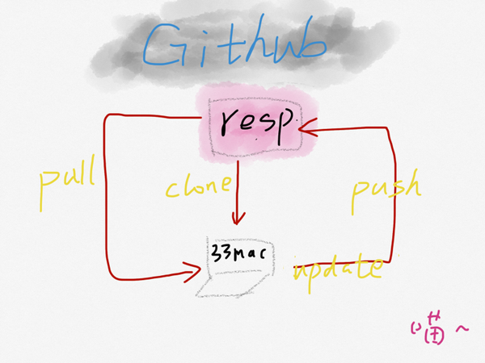

<!DOCTYPE HTML PUBLIC "-//W3C//DTD HTML 4.01 Transitional//EN" "http://www.w3c.org/TR/1999/REC-html401-19991224/loose.dtd">
<html>
<head>
<meta http-equiv="Content-Type" content="text/html; charset=utf-8">

<title>Github</title>
<!--defaultCSS-->
</head>

<body>
<div id="WizHtmlContentId">

<!--WizHtmlContentBegin--><div><div style="color: rgb(38, 38, 38); font-family: 'Helvetica Neue', Helvetica, 'PingFang SC', 'Hiragino Sans GB', 'Microsoft YaHei', 'Noto Sans CJK SC', 'WenQuanYi Micro Hei', Arial, sans-serif; font-variant-ligatures: normal; orphans: 2; widows: 2; background-color: rgb(247, 248, 250);"><header role="banner" class="Sticky AppHeader is-fixed" data-za-module="TopNavBar" style="position: fixed; min-width: 1032px; overflow: hidden; background: content-box rgb(255, 255, 255); border-bottom: 1px solid rgba(30, 35, 42, 0.0588235); box-shadow: rgba(0, 34, 77, 0.0470588) 0px 1px 3px 0px; z-index: 100; box-sizing: border-box; width: 1903px; top: 0px; left: 0px;"><div class="AppHeader-inner" style="position: relative; display: flex; width: 1000px; height: 60px; padding: 0px 16px; margin-right: auto; margin-left: auto; -webkit-box-align: center; align-items: center; transition: transform 0.3s, -webkit-transform 0.3s;"><nav role="navigation" class="AppHeader-nav" style="display: flex; -webkit-box-pack: justify; justify-content: space-between; width: 170px; height: 30px; margin-right: 27px; margin-left: 27px; color: rgb(153, 153, 153);"><a class="AppHeader-navItem" href="https://www.zhihu.com/" style="color: rgb(133, 144, 166); text-decoration: none; padding: 0px 10px; line-height: 30px;"><br></a></nav></div></header></div><main role="main" class="App-main" style="font-variant-ligatures: normal; orphans: 2; widows: 2; background-color: rgb(247, 248, 250);"><div class="Question-main" style="display: flex; width: 1000px; min-height: 100vh; padding: 0px 16px; margin: 14px auto; -webkit-box-pack: justify; justify-content: space-between; -webkit-box-align: start; align-items: flex-start;"><div class="Question-sideColumn" data-za-module="RightSideBar" data-za-module-info="{}" style="width: 296px;"><footer class="Footer" style="color: rgb(133, 144, 166); font-family: 'Helvetica Neue', Helvetica, 'PingFang SC', 'Hiragino Sans GB', 'Microsoft YaHei', 'Noto Sans CJK SC', 'WenQuanYi Micro Hei', Arial, sans-serif; padding: 10px 0px; font-size: 13px; line-height: 2;"><div style="color:gray"><small><a href="https://www.zhihu.com/question/20070065"></a></small></div></footer><footer class="Footer" style="color: rgb(133, 144, 166); font-family: 'Helvetica Neue', Helvetica, 'PingFang SC', 'Hiragino Sans GB', 'Microsoft YaHei', 'Noto Sans CJK SC', 'WenQuanYi Micro Hei', Arial, sans-serif; padding: 10px 0px; font-size: 13px; line-height: 2;"><br></footer><footer class="Footer" style="color: rgb(133, 144, 166); font-family: 'Helvetica Neue', Helvetica, 'PingFang SC', 'Hiragino Sans GB', 'Microsoft YaHei', 'Noto Sans CJK SC', 'WenQuanYi Micro Hei', Arial, sans-serif; padding: 10px 0px; font-size: 13px; line-height: 2;"><br></footer><footer class="Footer" style="padding: 10px 0px;"><font color="#8590a6" face="Helvetica Neue, Helvetica, PingFang SC, Hiragino Sans GB, Microsoft YaHei, Noto Sans CJK SC, WenQuanYi Micro Hei, Arial, sans-serif"><span style="font-size: 13px; line-height: 26px;"><a href="https://www.zhihu.com/question/20070065">https://www.zhihu.com/question/20070065</a>&nbsp; &nbsp; &nbsp; &nbsp; &nbsp; &nbsp; 如何使用github&nbsp;？</span></font><br></footer><footer class="Footer" style="color: rgb(133, 144, 166); font-family: 'Helvetica Neue', Helvetica, 'PingFang SC', 'Hiragino Sans GB', 'Microsoft YaHei', 'Noto Sans CJK SC', 'WenQuanYi Micro Hei', Arial, sans-serif; padding: 10px 0px; font-size: 13px; line-height: 2;"><div style="color: rgb(38, 38, 38); font-size: 15px; font-variant-ligatures: normal;"><header role="banner" class="Sticky AppHeader is-fixed" data-za-module="TopNavBar" style="position: fixed; min-width: 1032px; overflow: hidden; border-bottom-width: 1px; border-bottom-style: solid; border-bottom-color: rgba(30, 35, 42, 0.0588235); box-shadow: rgba(0, 34, 77, 0.0470588) 0px 1px 3px 0px; z-index: 100; box-sizing: border-box; width: 1903px; top: 0px; left: 0px; background: content-box content-box rgb(255, 255, 255);"><div class="AppHeader-inner" style="margin-right: auto; margin-left: auto; position: relative; display: flex; width: 1000px; height: 60px; padding: 0px 16px; -webkit-box-align: center; align-items: center; transition: transform 0.3s, -webkit-transform 0.3s;"><nav role="navigation" class="AppHeader-nav" style="display: flex; -webkit-box-pack: justify; justify-content: space-between; width: 170px; height: 30px; margin-right: 27px; margin-left: 27px; color: rgb(153, 153, 153);"><a class="AppHeader-navItem" href="https://www.zhihu.com/" style="color: rgb(133, 144, 166); text-decoration: none; padding: 0px 10px;">首页</a><a class="AppHeader-navItem" href="https://www.zhihu.com/explore" style="color: rgb(133, 144, 166); text-decoration: none; padding: 0px 10px;">发现</a><a class="AppHeader-navItem" href="https://www.zhihu.com/topic" style="color: rgb(133, 144, 166); text-decoration: none; padding: 0px 10px;">话题</a></nav><div class="SearchBar" role="search" style="display: flex;"><div class="SearchBar-toolWrapper" style="position: relative; z-index: 104; width: 326px;"><form class="SearchBar-tool" style="position: relative; float: left; overflow: hidden;"><div><div class="Popover" style="position: relative;"><div class="SearchBar-input Input-wrapper Input-wrapper--grey" style="position: relative; display: flex; width: 326px; height: 36px; padding: 4px 10px; overflow: hidden; font-size: 14px; border: 1px solid rgb(231, 234, 241); border-radius: 3px; box-sizing: border-box; transition: width 0.2s ease, background 0.3s ease; background: rgb(247, 248, 250);"><input type="text" maxlength="100" value="" autocomplete="off" role="combobox" aria-expanded="false" aria-autocomplete="list" aria-activedescendant="AutoComplete-59951-45155--1" id="Popover-59952-40364-toggle" aria-haspopup="true" aria-owns="Popover-59952-40364-content" class="Input" placeholder="搜索你感兴趣的内容…" style="-webkit-box-flex: 1; flex: 1 1 0%; padding-top: 0px; padding-bottom: 0px; overflow: hidden; font-family: inherit; font-size: inherit; font-weight: inherit; border-style: none; border-width: initial; outline: none; resize: none; height: 26px; background: transparent;"></div></div></div><button class="Button SearchBar-searchIcon Button--plain" aria-label="搜索" type="button" style="padding: 10px 12px; font-style: inherit; font-variant: inherit; font-weight: inherit; font-stretch: inherit; font-size: 14px; line-height: inherit; font-family: inherit; color: rgb(133, 144, 166); cursor: pointer; border: none; outline: none; -webkit-appearance: none; margin: 0px; border-radius: 0px; height: auto; position: absolute; top: 0px; right: 0px; z-index: 102; transition: fill 0.3s ease; background-image: none; background-attachment: initial; background-size: initial; background-origin: initial; background-clip: initial; background-position: initial; background-repeat: initial;"><svg viewBox="0 0 16 16" class="Icon Icon--search" width="16" height="16" aria-hidden="true" style="height: 16px; width: 16px;"><g><path d="M12.054 10.864c.887-1.14 1.42-2.57 1.42-4.127C13.474 3.017 10.457 0 6.737 0S0 3.016 0 6.737c0 3.72 3.016 6.737 6.737 6.737 1.556 0 2.985-.533 4.127-1.42l3.103 3.104c.765.46 1.705-.37 1.19-1.19l-3.103-3.104zm-5.317.925c-2.786 0-5.053-2.267-5.053-5.053S3.95 1.684 6.737 1.684 11.79 3.95 11.79 6.737 9.522 11.79 6.736 11.79z"></path></g></svg></button><div class="SearchBar-iconDecorator" style="position: absolute; top: 0px; right: -40px; width: 40px; height: 36px; border-radius: 0px 3px 3px 0px; transition: all 0.3s ease 0.1s; z-index: 101; opacity: 0; background: rgb(15, 136, 235);"></div></form></div><button class="Button SearchBar-askButton" type="button" style="padding: 0px 14px; font-style: inherit; font-variant: inherit; font-weight: inherit; font-stretch: inherit; font-size: 14px; line-height: 34px; font-family: inherit; color: rgb(133, 144, 166); cursor: pointer; border: 1px solid rgb(204, 216, 225); outline: none; -webkit-appearance: none; margin: 0px 0px 0px 16px; border-radius: 3px; z-index: 103; transition: opacity 0.3s ease, transform 0.3s ease, -webkit-transform 0.3s ease; background-image: none; background-attachment: initial; background-size: initial; background-origin: initial; background-clip: initial; background-position: initial; background-repeat: initial;"><br></button><button class="Button SearchBar-askButton" type="button" style="padding: 0px 14px; font-style: inherit; font-variant: inherit; font-weight: inherit; font-stretch: inherit; font-size: 14px; line-height: 34px; font-family: inherit; color: rgb(133, 144, 166); cursor: pointer; border: 1px solid rgb(204, 216, 225); outline: none; -webkit-appearance: none; margin: 0px 0px 0px 16px; border-radius: 3px; z-index: 103; transition: opacity 0.3s ease, transform 0.3s ease, -webkit-transform 0.3s ease; background-image: none; background-attachment: initial; background-size: initial; background-origin: initial; background-clip: initial; background-position: initial; background-repeat: initial;">提问</button></div><div class="AppHeader-userInfo" style="position: absolute; top: 30px; right: 0px; z-index: 104; display: flex; -webkit-box-align: center; align-items: center; transform: translateY(-50%);"><div class="AppHeader-profile" style="padding-right: 16px; text-align: right;"><button class="Button AppHeader-login Button--blue" type="button" style="padding: 0px 16px; font-style: inherit; font-variant: inherit; font-weight: inherit; font-stretch: inherit; font-size: 14px; line-height: 34px; font-family: inherit; color: rgb(15, 136, 235); cursor: pointer; border: 1px solid rgb(15, 136, 235); outline: none; -webkit-appearance: none; margin: 0px 16px 0px 0px; border-radius: 3px; background-image: none; background-attachment: initial; background-size: initial; background-origin: initial; background-clip: initial; background-position: initial; background-repeat: initial;">登录</button><button class="Button Button--primary Button--blue" type="button" style="padding: 0px 16px; font-style: inherit; font-variant: inherit; font-weight: inherit; font-stretch: inherit; font-size: 14px; line-height: 34px; font-family: inherit; color: rgb(255, 255, 255); cursor: pointer; border: 1px solid rgb(15, 136, 235); outline: none; -webkit-appearance: none; margin: 0px; border-radius: 3px; background: rgb(15, 136, 235);">加入知乎</button></div></div></div><div class="PageHeader" style="position: absolute; top: 0px; left: 0px; width: 1903px; height: 60px; transition: transform 0.3s, -webkit-transform 0.3s; transform: translateY(100%);"><div data-reactroot="" class="QuestionHeader-content" style="margin-right: auto; margin-left: auto; display: flex; -webkit-box-pack: justify; justify-content: space-between; width: 1000px; height: 60px; padding: 0px 16px; -webkit-box-align: center; align-items: center;"><div class="QuestionHeader-main" style="width: 690px; padding: 0px 24px; box-sizing: border-box;"><h1 class="QuestionHeader-title" style="margin-top: 0px; margin-bottom: 0px; font-weight: 400; font-size: 24px; font-style: inherit; font-variant: inherit; font-stretch: inherit; line-height: 32px; font-family: inherit; color: rgb(30, 30, 30); overflow: hidden; text-overflow: ellipsis; white-space: nowrap; cursor: pointer;">怎样使用 GitHub？</h1></div><div class="QuestionHeader-side" style="width: 296px; text-align: right;"><div class="QuestionButtonGroup" style="margin-right: -8px; margin-left: -8px; display: inline-block;"><button class="Button Button--primary Button--blue" type="button" style="padding: 0px 16px; font-style: inherit; font-variant: inherit; font-weight: inherit; font-stretch: inherit; font-size: 14px; line-height: 34px; font-family: inherit; color: rgb(255, 255, 255); cursor: pointer; border: 1px solid rgb(15, 136, 235); outline: none; -webkit-appearance: none; margin: 0px 8px; border-radius: 3px; background: rgb(15, 136, 235);">关注问题</button><button class="Button" type="button" style="padding: 0px 16px; font-style: inherit; font-variant: inherit; font-weight: inherit; font-stretch: inherit; font-size: 14px; line-height: 34px; font-family: inherit; color: rgb(133, 144, 166); cursor: pointer; border: 1px solid rgb(204, 216, 225); outline: none; -webkit-appearance: none; margin: 0px 8px; border-radius: 3px; background-image: none; background-attachment: initial; background-size: initial; background-origin: initial; background-clip: initial; background-position: initial; background-repeat: initial;"><svg viewBox="0 0 12 12" class="Icon Button-icon Icon--modify" width="14" height="16" aria-hidden="true" style="height: 16px; width: 14px;"><g><path d="M.423 10.32L0 12l1.667-.474 1.55-.44-2.4-2.33-.394 1.564zM10.153.233c-.327-.318-.85-.31-1.17.018l-.793.817 2.49 2.414.792-.814c.318-.328.312-.852-.017-1.17l-1.3-1.263zM3.84 10.536L1.35 8.122l6.265-6.46 2.49 2.414-6.265 6.46z" fill-rule="evenodd"></path></g></svg>写回答</button></div></div></div></div></header><div class="Sticky--holder" style="visibility: hidden; position: relative; top: 0px; right: 0px; bottom: 0px; left: 0px; float: none; height: 61px;"></div></div><main role="main" class="App-main" style="color: rgb(38, 38, 38); font-size: 15px; font-variant-ligatures: normal;"><div data-za-module="QuestionItem" data-za-module-info="{}"><div class="QuestionStatus"></div><div class="QuestionHeader" style="position: relative; min-width: 1032px; padding: 20px 0px; overflow: hidden; border-bottom-width: 1px; border-bottom-style: solid; border-bottom-color: rgb(231, 234, 241); box-shadow: rgba(0, 37, 55, 0.0470588) 0px 1px 3px 0px; background: rgb(255, 255, 255);"><div class="QuestionHeader-content" style="margin-right: auto; margin-left: auto; display: flex; -webkit-box-pack: justify; justify-content: space-between; width: 1000px; height: 115px; padding: 0px 16px;"><div class="QuestionHeader-main" style="width: 690px; padding: 0px 24px; box-sizing: border-box;"><div class="QuestionHeader-topics" style="margin-right: -2px; margin-left: -2px; padding: 1px 0px;"><div class="Tag QuestionTopic" data-za-module="TopicItem" data-za-module-info="{&quot;card&quot;:{&quot;content&quot;:{&quot;type&quot;:&quot;Topic&quot;,&quot;token&quot;:&quot;19557710&quot;}}}" style="margin: 3px 2px; position: relative; display: inline-block; height: 30px; padding: 0px 12px; font-size: 14px; color: rgb(62, 122, 194); vertical-align: middle; border-radius: 100px; background: rgb(238, 244, 250);"><span class="Tag-content"><a class="TopicLink" href="https://www.zhihu.com/topic/19557710" style="text-decoration: none;"><div class="Popover" style="position: relative; display: inline-block;"><div id="Popover-59962-96951-toggle" aria-haspopup="true" aria-expanded="false" aria-owns="Popover-59962-96951-content">Git</div></div></a></span></div><div class="Tag QuestionTopic" data-za-module="TopicItem" data-za-module-info="{&quot;card&quot;:{&quot;content&quot;:{&quot;type&quot;:&quot;Topic&quot;,&quot;token&quot;:&quot;19566035&quot;}}}" style="margin: 3px 2px; position: relative; display: inline-block; height: 30px; padding: 0px 12px; font-size: 14px; color: rgb(62, 122, 194); vertical-align: middle; border-radius: 100px; background: rgb(238, 244, 250);"><span class="Tag-content"><a class="TopicLink" href="https://www.zhihu.com/topic/19566035" style="text-decoration: none;"><div class="Popover" style="position: relative; display: inline-block;"><div id="Popover-59963-74188-toggle" aria-haspopup="true" aria-expanded="false" aria-owns="Popover-59963-74188-content">GitHub</div></div></a></span></div></div><h1 class="QuestionHeader-title" style="margin-top: 12px; margin-bottom: 6px; font-weight: 400; font-size: 24px; font-style: inherit; font-variant: inherit; font-stretch: inherit; line-height: 32px; font-family: inherit; color: rgb(30, 30, 30);">怎样使用 GitHub？</h1><div class="QuestionHeader-detail" style="min-height: 10px;"><div class="QuestionRichText QuestionRichText--collapsed" style="line-height: 27px;"><span class="RichText" style="word-break: break-word; white-space: pre-wrap;">具体的使用方法和相关解释英语不好一点看不明白</span></div></div></div><div class="QuestionHeader-side" style="width: 296px; text-align: right;"><div class="QuestionHeader-follow-status"><div class="QuestionFollowStatus"><div class="NumberBoard QuestionFollowStatus-counts" style="margin-left: auto; display: flex; -webkit-box-align: center; align-items: center; text-align: center; width: 200px;"><div class="NumberBoard-item" style="-webkit-box-flex: 1; flex: 1 1 0%;"><div class="NumberBoard-name" style="font-size: 14px; line-height: 14px; color: rgb(133, 144, 166);">关注者</div><div class="NumberBoard-value" style="margin-top: 6px; font-size: 18px; line-height: 18px;">26813</div></div><div class="NumberBoard-divider" style="align-self: stretch; border-right-width: 1px; border-right-style: solid; border-right-color: rgb(240, 242, 247);"></div><div class="NumberBoard-item" style="-webkit-box-flex: 1; flex: 1 1 0%;"><div class="NumberBoard-name" style="font-size: 14px; line-height: 14px; color: rgb(133, 144, 166);">被浏览</div><div class="NumberBoard-value" style="margin-top: 6px; font-size: 18px; line-height: 18px;">1738843</div></div></div></div></div></div></div><div class="QuestionHeader-footer" style="margin-top: 4px; margin-bottom: -12px; padding-bottom: 12px; background-image: initial; background-attachment: initial; background-size: initial; background-origin: initial; background-clip: initial; background-position: initial; background-repeat: initial;"><div class="QuestionHeader-footer-inner" style="margin-right: auto; margin-left: auto; -webkit-box-align: center; align-items: center; width: 1000px; height: 36px; padding: 0px 16px; display: flex; -webkit-box-pack: justify; justify-content: space-between;"><div class="QuestionHeader-main QuestionHeader-footer-main" style="width: 690px; padding: 0px 24px; box-sizing: border-box; display: flex; -webkit-box-pack: justify; justify-content: space-between;"><div class="QuestionHeader-actions" style="margin-right: -12px; margin-left: -12px; display: flex;"><button class="Button Button--plain" type="button" style="padding: 0px; font-style: inherit; font-variant: inherit; font-weight: inherit; font-stretch: inherit; font-size: 14px; line-height: inherit; font-family: inherit; color: rgb(133, 144, 166); cursor: pointer; border: none; outline: none; -webkit-appearance: none; margin: 0px 12px; border-radius: 0px; height: auto; background-image: none; background-attachment: initial; background-size: initial; background-origin: initial; background-clip: initial; background-position: initial; background-repeat: initial;"><svg viewBox="0 0 18 18" xmlns="http://www.w3.org/2000/svg" class="Icon Icon--comment Icon--left" width="12" height="16" aria-hidden="true" style="height: 16px; width: 12px;"><g><path d="M7.24 16.313c-.272-.047-.553.026-.77.2-1.106.813-2.406 1.324-3.77 1.482-.16.017-.313-.06-.394-.197-.082-.136-.077-.308.012-.44.528-.656.906-1.42 1.11-2.237.04-.222-.046-.45-.226-.588C1.212 13.052.027 10.73 0 8.25 0 3.7 4.03 0 9 0s9 3.7 9 8.25-4.373 9.108-10.76 8.063z"></path></g></svg>21 条评论</button><div class="Popover ShareMenu" style="position: relative; display: inline-block;"><div id="Popover-59968-79157-toggle" aria-haspopup="true" aria-expanded="false" aria-owns="Popover-59968-79157-content"><button class="Button Button--plain" type="button" style="padding: 0px; font-style: inherit; font-variant: inherit; font-weight: inherit; font-stretch: inherit; font-size: 14px; line-height: inherit; font-family: inherit; color: rgb(133, 144, 166); cursor: pointer; border: none; outline: none; -webkit-appearance: none; margin: 0px 12px; border-radius: 0px; height: auto; background-image: none; background-attachment: initial; background-size: initial; background-origin: initial; background-clip: initial; background-position: initial; background-repeat: initial;"><svg viewBox="0 0 20 18" xmlns="http://www.w3.org/2000/svg" class="Icon Icon--share Icon--left" width="13" height="16" aria-hidden="true" style="height: 16px; width: 13px;"><g><path d="M.93 3.89C-.135 4.13-.343 5.56.614 6.098L5.89 9.005l8.168-4.776c.25-.128.477.197.273.388L7.05 10.66l.926 5.953c.18 1.084 1.593 1.376 2.182.456l9.644-15.243c.584-.892-.212-2.03-1.234-1.796L.93 3.89z"></path></g></svg>分享</button></div></div><button class="Button Button--plain" type="button" style="padding: 0px; font-style: inherit; font-variant: inherit; font-weight: inherit; font-stretch: inherit; font-size: 14px; line-height: inherit; font-family: inherit; color: rgb(133, 144, 166); cursor: pointer; border: none; outline: none; -webkit-appearance: none; margin: 0px 12px; border-radius: 0px; height: auto; background-image: none; background-attachment: initial; background-size: initial; background-origin: initial; background-clip: initial; background-position: initial; background-repeat: initial;"><svg viewBox="0 0 20 20" class="Icon Icon--star Icon--left" width="13" height="16" aria-hidden="true" style="height: 16px; width: 13px;"><g><path d="M3.515 17.64l.918-5.355-3.89-3.792c-.926-.902-.64-1.784.64-1.97L6.56 5.74 8.964.87c.572-1.16 1.5-1.16 2.072 0l2.404 4.87 5.377.783c1.28.186 1.566 1.068.64 1.97l-3.89 3.793.918 5.354c.22 1.274-.532 1.82-1.676 1.218L10 16.33l-4.808 2.528c-1.145.602-1.896.056-1.677-1.218z"></path></g></svg>邀请回答</button><div class="Popover" style="position: relative; display: inline-block;"><button class="Button Button--plain" type="button" id="Popover-59969-33154-toggle" aria-haspopup="true" aria-expanded="false" aria-owns="Popover-59969-33154-content" style="padding: 0px; font-style: inherit; font-variant: inherit; font-weight: inherit; font-stretch: inherit; font-size: 14px; line-height: inherit; font-family: inherit; color: rgb(133, 144, 166); cursor: pointer; border: none; outline: none; -webkit-appearance: none; margin: 0px 12px; border-radius: 0px; height: auto; background-image: none; background-attachment: initial; background-size: initial; background-origin: initial; background-clip: initial; background-position: initial; background-repeat: initial;"><svg viewBox="0 0 18 4" class="Icon Icon--dots" width="14" height="16" aria-hidden="true" style="height: 16px; width: 14px;"><g><g><circle cx="2" cy="2" r="2"></circle><circle cx="9" cy="2" r="2"></circle><circle cx="16" cy="2" r="2"></circle></g></g></svg></button></div></div><div class="QuestionHeader-actions" style="margin-right: -12px; margin-left: -12px; display: flex;"></div></div><div class="QuestionHeader-side" style="width: 296px; text-align: right;"><div class="QuestionButtonGroup" style="margin-right: -8px; margin-left: -8px; display: inline-block;"><button class="Button Button--primary Button--blue" type="button" style="padding: 0px 16px; font-style: inherit; font-variant: inherit; font-weight: inherit; font-stretch: inherit; font-size: 14px; line-height: 34px; font-family: inherit; color: rgb(255, 255, 255); cursor: pointer; border: 1px solid rgb(15, 136, 235); outline: none; -webkit-appearance: none; margin: 0px 8px; border-radius: 3px; background: rgb(15, 136, 235);">关注问题</button><button class="Button" type="button" style="padding: 0px 16px; font-style: inherit; font-variant: inherit; font-weight: inherit; font-stretch: inherit; font-size: 14px; line-height: 34px; font-family: inherit; color: rgb(133, 144, 166); cursor: pointer; border: 1px solid rgb(204, 216, 225); outline: none; -webkit-appearance: none; margin: 0px 8px; border-radius: 3px; background-image: none; background-attachment: initial; background-size: initial; background-origin: initial; background-clip: initial; background-position: initial; background-repeat: initial;"><svg viewBox="0 0 12 12" class="Icon Button-icon Icon--modify" width="14" height="16" aria-hidden="true" style="height: 16px; width: 14px;"><g><path d="M.423 10.32L0 12l1.667-.474 1.55-.44-2.4-2.33-.394 1.564zM10.153.233c-.327-.318-.85-.31-1.17.018l-.793.817 2.49 2.414.792-.814c.318-.328.312-.852-.017-1.17l-1.3-1.263zM3.84 10.536L1.35 8.122l6.265-6.46 2.49 2.414-6.265 6.46z" fill-rule="evenodd"></path></g></svg>写回答</button></div></div></div></div></div><div><div class="Sticky"></div></div></div><div class="Question-main" style="margin: 14px auto; display: flex; width: 1000px; min-height: 100vh; padding: 0px 16px; -webkit-box-pack: justify; justify-content: space-between; -webkit-box-align: start; align-items: flex-start;"><div class="Question-mainColumn" style="width: 690px; padding-bottom: 20px;"><div class="Card" style="margin-bottom: 14px; border: 1px solid rgb(231, 234, 241); border-radius: 2px; box-shadow: rgba(0, 37, 55, 0.0470588) 0px 1px 3px; box-sizing: border-box; background: rgb(255, 255, 255);"><div class="List"><div class="List-header" style="margin-right: 24px; margin-left: 24px; display: flex; -webkit-box-pack: justify; justify-content: space-between; -webkit-box-align: center; align-items: center; height: 34px; padding: 11px 0px; border-bottom-width: 1px; border-bottom-style: solid; border-bottom-color: rgb(240, 242, 247);"><h4 class="List-headerText" style="font-weight: 500;">112&nbsp;个回答</h4><div class="List-headerOptions" style="font-size: 14px;"><div class="Popover" style="position: relative; display: inline-block;"><button class="Button Select-button Select-plainButton Button--plain" role="combobox" aria-expanded="false" type="button" id="Popover-59981-59154-toggle" aria-haspopup="true" aria-owns="Popover-59981-59154-content" style="padding: 0px; font-style: inherit; font-variant: inherit; font-weight: inherit; font-stretch: inherit; font-size: 14px; line-height: 38px; font-family: inherit; color: rgb(38, 38, 38); cursor: pointer; border: 1px solid transparent; outline: none; -webkit-appearance: none; margin: 0px; text-align: left; border-radius: 0px; height: 40px; background-image: none; background-attachment: initial; background-size: initial; background-origin: initial; background-clip: initial; background-position: initial; background-repeat: initial;">默认排序<svg viewBox="0 0 8 13" class="Icon Select-arrow Icon--select" width="8" height="16" aria-hidden="true" style="height: 16px; width: 8px;"><g><path d="M4 11.183L1.284 8.218c-.293-.29-.77-.29-1.064 0-.293.29-.293.76 0 1.052l3.25 3.512c.292.29.768.29 1.062 0L7.78 9.27c.293-.29.293-.76 0-1.052-.295-.29-.77-.29-1.064 0L4 11.182zM4 1.818L1.284 4.782c-.293.29-.77.29-1.064 0-.293-.29-.293-.76 0-1.052L3.47.218c.292-.29.768-.29 1.062 0L7.78 3.73c.293.29.293.76 0 1.052-.295.29-.77.29-1.064 0L4 1.82z"></path></g></svg></button></div></div></div><div><div class="List-item" style="position: relative; padding: 20px 24px; font-size: 14px;"><div class="ContentItem" name="79557687" data-za-module="AnswerItem" data-za-module-info="{&quot;card&quot;:{&quot;content&quot;:{&quot;type&quot;:&quot;Answer&quot;,&quot;token&quot;:&quot;79557687&quot;,&quot;upvote_num&quot;:10000,&quot;comment_num&quot;:359,&quot;publish_timestamp&quot;:null,&quot;parent_token&quot;:&quot;20070065&quot;,&quot;author_member_hash_id&quot;:&quot;7d4a764b2ad111a075310adbd191af33&quot;}}}"><div class="ContentItem-meta" style="margin-top: 2px; font-size: 15px; line-height: 1.6; color: rgb(85, 85, 85);"><div class="AnswerItem-meta AnswerItem-meta--related" style="margin-top: -2px; position: relative;"><div class="AuthorInfo" style="margin-bottom: 12px; display: flex; -webkit-box-align: center; align-items: center;"><span class="UserLink AuthorInfo-avatarWrapper"><div class="Popover" style="position: relative; display: inline-block;"><div id="Popover-59992-58776-toggle" aria-haspopup="true" aria-expanded="false" aria-owns="Popover-59992-58776-content"><a class="UserLink-link" href="https://www.zhihu.com/people/shinichi" style="text-decoration: none;"></a></div></div></span><div class="AuthorInfo-content" style="margin-left: 14px; -webkit-box-flex: 1; flex: 1 1 0%; overflow: hidden;"><div class="AuthorInfo-title" style="display: flex;"><div class="AuthorInfo-name" style="font-weight: 600; line-height: 1.1;"><span class="UserLink"><div class="Popover" style="position: relative; display: inline-block;"><div id="Popover-59993-76450-toggle" aria-haspopup="true" aria-expanded="false" aria-owns="Popover-59993-76450-content"><a class="UserLink-link" href="https://www.zhihu.com/people/shinichi" style="text-decoration: none;">珊姗是个小太阳</a></div></div></span></div></div><div class="RichText AuthorInfo-badge" style="margin-top: 6px; word-break: break-word; white-space: nowrap; overflow: hidden; font-size: 14px; line-height: 1.2; text-overflow: ellipsis;">Luminagirls</div></div></div><div class="AnswerItem-extraInfo" style="margin-bottom: 4px; font-size: 14px; color: rgb(133, 144, 166);"><span class="Voters"><button class="Button Button--plain" type="button" style="padding: 0px; font-style: inherit; font-variant: inherit; font-weight: inherit; font-stretch: inherit; font-size: 14px; line-height: inherit; font-family: inherit; color: rgb(133, 144, 166); cursor: pointer; border: none; outline: none; -webkit-appearance: none; margin: 0px; border-radius: 0px; height: auto; background-image: none; background-attachment: initial; background-size: initial; background-origin: initial; background-clip: initial; background-position: initial; background-repeat: initial;">10000 人赞同了该回答</button></span></div></div></div><div class="RichContent RichContent--unescapable" style="font-size: 15px; line-height: 27px;"><div class="RichContent-inner" style="overflow: hidden; padding-top: 2px;"><span class="RichText CopyrightRichText-richText" style="word-break: break-word; white-space: pre-wrap;">作为一个文科妹子，我在看过几乎所有热门 github 教程之后依旧一头雾水，在近半年的摸索中终于明白啦~新年初，把自己纯小白的学习经验分享一下吧！<br><br><span style="font-weight: 700;">#什么是 Github ？<br></span>必须要放这张图了！！！<br>（图片来源<a href="https://www.zhihu.com/question/28976652/answer/42804737" class="internal" style="text-decoration: none; cursor: pointer; border-bottom-width: 1px; border-bottom-style: solid; border-bottom-color: rgba(64, 64, 64, 0.721569);">GitHub 是怎样的一个存在？ - Deep Reader 的回答</a>）<br><blockquote style="margin-top: 1em; margin-bottom: 1em; padding-left: 1em; color: rgb(107, 122, 140); border-left-width: 4px; border-left-style: solid; border-left-color: rgb(207, 216, 230);"><p style="margin-bottom: 0.8em;">Git 是由 Linux 之父 Linus Tovalds 为了更好地管理linux内核开发而创立的分布式版本控制／软件配置管理软件。</p></blockquote>好吧，我相信看到这里你已经晕了，这也是我一开始看那些所谓经典教程的感受。写这些教程的人都是几年以上的程序员呀，他们往往直接就告诉你所有命令的含义或者整个体系。<br><blockquote style="margin-top: 1em; margin-bottom: 1em; padding-left: 1em; color: rgb(107, 122, 140); border-left-width: 4px; border-left-style: solid; border-left-color: rgb(207, 216, 230);">专家盲点（expert blind spot）就是对一个事物知道的越多，就越发不记得“不知道这个事”的情形。</blockquote><br><span style="font-weight: 700;">简单来说，Git 是一个管理你的「代码的历史记录」的工具。<br></span>我不是程序员为什么要学这个啊啊啊！又不要管理代码们！<br><br>别急，虽然 github 学习门槛高，一会你就知道为什么人人都应该会这个啦！<br><br>----------------------------<br><span style="font-weight: 700;">学习步骤</span><br><br>##注册安装<br>去官网注册一个账号（这个你应该会，恩就不放链接了）<br>然后，下载一个<a href="https://link.zhihu.com/?target=https%3A//desktop.github.com/" class=" wrap external" target="_blank" rel="nofollow noreferrer" style="text-decoration: none; cursor: pointer; border-bottom-width: 1px; border-bottom-style: solid; border-bottom-color: rgba(64, 64, 64, 0.721569);">GitHub Desktop<i class="icon-external"></i></a> mac客户端是最方便的啦！（命令行什么的真的是会越来越晕！先别管他们！）<br><br>假设33（珊姗就是我啦）、小四和你三个人一起写一本小说（澄清一下，并没有黑任何人的意思，恩！），暂且叫做...《梦里花落爱吃土时代》<br>--<br>图（脑补）<br>--<br>(⊙v⊙)嗯！终于可以正式开始了！<br><br><span style="font-weight: 700;">#step1:创建新项目</span><br>我们三个人在不同的城市要远程共同写一本书，要有一个漂亮的笔记本吧？<br><br>「repositories」就是你的笔记本们。你只需知道 Repository 是个放项目的地方就行。有时候会出现 Repositories，是多个 Repository 的意思。<br><br>**fork**<br>如果你不想新建一个笔记本，看到小四之前写过一个好到炸裂的文章，想把他的直接全部偷过来，修改修改就成你自己的文章了，这应该怎么办呢？<br>github 还提供了一个很赞的功能叫做 fork ，你只需要点击这个神奇的按钮，就可以把他的「笔记本」变成你自己的啦！任意修改都可以哦~<br><br><br><span style="font-weight: 700;">#step2：把「笔记本」克隆到本地</span><br>「笔记本」在云端，你要把它摘下来放到自己的电脑上写小说才方便呀，在这里我们叫「clone」是不是很形象？步骤如图：<br>或者是直接去我们的客户端<br><br><span style="font-weight: 700;">#step3：可以开始写作啦！</span><br>你的笔记本里已经自动有一个文档了，这个时候让我们回到网页版[微笑脸]<br>你只需要在 web 端点开这个README.md可以开始在里面写你的小说了。<br>或者直接点开刚刚 clone 到电脑上的文件夹直接在里面写。<br>ps:需要注意的是，文本支持 markdown 格式，可以先参考这个<a href="https://link.zhihu.com/?target=http%3A//www.jianshu.com/p/q81RER" class=" wrap external" target="_blank" rel="nofollow noreferrer" style="text-decoration: none; cursor: pointer; border-bottom-width: 1px; border-bottom-style: solid; border-bottom-color: rgba(64, 64, 64, 0.721569);">献给写作者的 Markdown 新手指南<i class="icon-external"></i></a>。<br><br><span style="font-weight: 700;">#step4:上传你写的小说</span><br>在本地写完之后你要上传到云端让我和小四都能看见你写出什么幺蛾子了吧？<br>回到客户端，你发现有变化！！！<br>没错，在你头像旁边给你这次提交内容起一个名字，以后如果再次寻找的时候会很方便。然后点下面的 Commit to master，还有右上角的 Sync 就好啦！<br><br><span style="font-weight: 700;">#step5：回退到之前的版本</span><br>夜深人静的时候，我趁着你们都在睡觉把小说的结局偷偷地改成女主死掉了！<br>你醒来觉得我这结局改的也太悲伤了，完全不能接受！结局必须要和之前那样王子公主幸福的生活在一起的 happy ending！<br>问题又来了，怎么退回到我修改结局之前的 happy ending？<br><br>还是刚刚那个客户端，选择History 然后点击小齿轮，选择潇洒地点 roll back to this commit！<br>你又回到happy ending的状态啦！！<br><br><span style="font-weight: 700;">#step6：</span><br>小四写了一章华丽无比的番外，你要更新本地的小说和他写的保持一致怎么办？<br>git pull<br><br>-----------<br>好了，知道这些基本操作入门应该够了，我们来回顾一下（不要嫌弃我的画工啊喂！）<br><br>入门初期迅速得到一些正反馈对于学习一门新技能来说实在是太重要了！尤其是编程这么炫酷的事情！<br>所以先不要管什么复杂的 issue 呀 wiki 呀乱七八糟的操作，按照上面的一步一步来，如果遇到什么问题 google 之，一般都会解决的。<br><br>有一个段子不就是说，当你遇到问题去找最高级的工程师，他们一般都会直接 google 吗？而且自带的帮助手册也是解决问题的好办法，比如你要新建一个 branch=》<a href="https://link.zhihu.com/?target=https%3A//github.com/Kunena/Kunena-Forum/wiki/Create-a-new-branch-with-git-and-manage-branches" class=" wrap external" target="_blank" rel="nofollow noreferrer" style="text-decoration: none; cursor: pointer; border-bottom-width: 1px; border-bottom-style: solid; border-bottom-color: rgba(64, 64, 64, 0.721569);">Create a new branch with git and manage branches · Kunena/Kunena-Forum Wiki · GitHub<i class="icon-external"></i></a><br><br><span style="font-weight: 700;">这种遇到问题先自己尝试解决的小技巧，也是我自从学编程以来最大的收获。</span><br><br>------------------------<br><br><span style="font-weight: 700;">#除了写代码你还可以用 github 做什么？<br></span><br>回到文章开头，我又不是程序猿不用写代码玩这个干啥？<br><br>你有没有碰到过团队里几个人共同协作写一个文档的时候？或者说需要反复修改的东西？比如最简单的写论文，用 word 保存一个一个版本 e-mail 给 boss？下次再找上次修改了什么地方简直要死啊有木有！！！<br><br>相信你看了我的远程协作写小说的例子应该已经明白了， github 说白了就是一个「版本控制工具」。我们所谓的「回退」到历史记录，随时查看更改了什么地方，利用这个功能可以做的事情简直太多啦！<br><br>就像 github 其中一位创始人[Chris](<a href="https://link.zhihu.com/?target=https%3A//github.com/defunkt" class=" wrap external" target="_blank" rel="nofollow noreferrer" style="text-decoration: none; cursor: pointer; border-bottom-width: 1px; border-bottom-style: solid; border-bottom-color: rgba(64, 64, 64, 0.721569);">defunkt (Chris Wanstrath) · GitHub<i class="icon-external"></i></a>)也详细描述了[GitHub初创的前因后果](<a href="https://link.zhihu.com/?target=https%3A//gist.github.com/67060" class=" wrap external" target="_blank" rel="nofollow noreferrer" style="text-decoration: none; cursor: pointer; border-bottom-width: 1px; border-bottom-style: solid; border-bottom-color: rgba(64, 64, 64, 0.721569);">Startup Riot 2009 Keynote 路 GitHub<i class="icon-external"></i></a>)，他说道：<br><blockquote style="margin-top: 1em; margin-bottom: 1em; padding-left: 1em; color: rgb(107, 122, 140); border-left-width: 4px; border-left-style: solid; border-left-color: rgb(207, 216, 230);"><p style="margin-bottom: 0.8em;">Do whatever you want.</p></blockquote>所以不是程序猿可以用这个来做什么呢？<br><span style="font-weight: 700;">1、写书<br></span>和 33 一起写小说的例子，还记得吧？几个人你一章我一章共同修改一本书，或是几个出版社的编辑对新书进行校对，利用这个神器就可以随时看到哪里出现了问题和更改。如果想自己写书的话 gitbook 也是不错的选择（又是一个坑。。）<br><br><span style="font-weight: 700;">2、写文档神器<br></span>身为科研狗、产品狗、射鸡湿的你，是不是经常写文档？一个成熟的文档可能会有好几个版本，需要不断地迭代，然后不断提交给老板看哪里需要修改。在不同版本间自如切换就要用到git branch和git rebase了。<br>想想看，用 git 的分支管理不比拷贝粘贴更方便吗？<br><br><span style="font-weight: 700;">3、健身<br></span>有个哥们为了激励自己健身把每日计划都放上去了，还可以邀请其他人一起来相互监督！（我才不会说我自己也开了一个呢哈哈哈）<br><a href="https://link.zhihu.com/?target=https%3A//github.com/hoosin/EveryDaySport" class=" wrap external" target="_blank" rel="nofollow noreferrer" style="text-decoration: none; cursor: pointer; border-bottom-width: 1px; border-bottom-style: solid; border-bottom-color: rgba(64, 64, 64, 0.721569);">hoosin/EveryDaySport · GitHub<i class="icon-external"></i></a><br><br><span style="font-weight: 700;">4、找男票<br></span>没错，看这个项目！利用众包的形式一起罗列男友条件的 list 然后试图自己开发出一个男票233333<br><a href="https://link.zhihu.com/?target=https%3A//github.com/YixuanFranco/YourBoyfriend" class=" wrap external" target="_blank" rel="nofollow noreferrer" style="text-decoration: none; cursor: pointer; border-bottom-width: 1px; border-bottom-style: solid; border-bottom-color: rgba(64, 64, 64, 0.721569);">YixuanFranco/YourBoyfriend · GitHub<i class="icon-external"></i></a><br>有人评论问我用这个找到男票了吗？<br>统一回复：<br>并！没！有！<br><br><span style="font-weight: 700;">5、用GitHub搭建博客、个人网站或者公司官网</span><p style="margin-bottom: 0.8em;">一个有自己域名的独立博客，是不是很帅？！</p><p style="margin-bottom: 0.8em;">GitHub本身提供免费的托管服务，又提供了贴心的 Pages 功能，可以绑定你自己的域名，免费、高效、不限流量，做一个个人页面绰绰有余。</p><p style="margin-bottom: 0.8em;">Jekyll 的教程和我自己的博客会稍后放出。。（先给自己挖个坑）</p><br><p style="margin-bottom: 0.8em;"><span style="font-weight: 700;">6、用GitHub协作翻译</span></p><p style="margin-bottom: 0.8em;">苹果官方发布的各种官方手册，比如最近开源的 Swift <a href="https://link.zhihu.com/?target=https%3A//github.com/numbbbbb/the-swift-programming-language-in-chinese" class=" wrap external" target="_blank" rel="nofollow noreferrer" style="text-decoration: none; cursor: pointer; border-bottom-width: 1px; border-bottom-style: solid; border-bottom-color: rgba(64, 64, 64, 0.721569);">numbbbbb/the-swift-programming-language-in-chinese · GitHub<i class="icon-external"></i></a> 就是国内一个自发组织起来的团队，30多个人用9天时间即将翻译和校对工作全部完成，他们每人都还有自己的事情，上班、上线、创业，这么大的工作量在以往简直是不可能完成的任务！</p><br><p style="margin-bottom: 0.8em;"><span style="font-weight: 700;">7、项目管理</span></p><p style="margin-bottom: 0.8em;">GitHub最初是为了开发的管理而生，当然也就具备了项目管理的潜质，特别是与开发密切联系的项目中，它的优势尽显。比如这篇文章介绍了如何使用GitHub结合 Trello 等其它工具进行项目管理：<a href="https://link.zhihu.com/?target=http%3A//xiaocong.github.io/blog/2013/03/20/team-collaboration-with-github/" class=" wrap external" target="_blank" rel="nofollow noreferrer" style="text-decoration: none; cursor: pointer; border-bottom-width: 1px; border-bottom-style: solid; border-bottom-color: rgba(64, 64, 64, 0.721569);">使用GitHub进行团队合作<i class="icon-external"></i></a>。当然，GitHub还是很偏重开发的管理，一般的项目管理还是适合使用 wortile 之类的产品。</p><br><span style="font-weight: 700;">7、政府文件？</span><br>之前看到一个知乎回答说：日本政府把宪法放上去了，德国政府也做过类似的事：German Federal Law Now on GitHub。除了德日之外，英美在 GitHub 上也有很多公众服务：英国政府多达 10 页的项目目录：<a href="https://link.zhihu.com/?target=https%3A//github.com/alphagov" class=" wrap external" target="_blank" rel="nofollow noreferrer" style="text-decoration: none; cursor: pointer; border-bottom-width: 1px; border-bottom-style: solid; border-bottom-color: rgba(64, 64, 64, 0.721569);">Government Digital Service · GitHub<i class="icon-external"></i></a> 其中很多是政府项目的源代码或者设计原则之类。芝加哥的公开地理信息：Forking your CityNew York Open City： City of New York 路 <br>（原谅我找不到这个回答了，欢迎补充）<br><br><span style="font-weight: 700;">8、科研项目及数据<br></span>较早的<a href="https://link.zhihu.com/?target=http%3A//arxiv.org/" class=" wrap external" target="_blank" rel="nofollow noreferrer" style="text-decoration: none; cursor: pointer; border-bottom-width: 1px; border-bottom-style: solid; border-bottom-color: rgba(64, 64, 64, 0.721569);">arXiv<i class="icon-external"></i></a>、<a href="https://link.zhihu.com/?target=http%3A//plos.org/" class=" wrap external" target="_blank" rel="nofollow noreferrer" style="text-decoration: none; cursor: pointer; border-bottom-width: 1px; border-bottom-style: solid; border-bottom-color: rgba(64, 64, 64, 0.721569);">PLoS<i class="icon-external"></i></a>之外，较有气象的可以推荐<a href="https://link.zhihu.com/?target=http%3A//mendeley.com/" class=" wrap external" target="_blank" rel="nofollow noreferrer" style="text-decoration: none; cursor: pointer; border-bottom-width: 1px; border-bottom-style: solid; border-bottom-color: rgba(64, 64, 64, 0.721569);">mendeley<i class="icon-external"></i></a>、<a href="https://link.zhihu.com/?target=http%3A//www.doaj.org/" class=" wrap external" target="_blank" rel="nofollow noreferrer" style="text-decoration: none; cursor: pointer; border-bottom-width: 1px; border-bottom-style: solid; border-bottom-color: rgba(64, 64, 64, 0.721569);">开放期刊目录<i class="icon-external"></i></a><br>教育方面：<br><ul style="margin-top: 1em; margin-bottom: 1em; padding: 0px 0px 0px 2em;"><li style="list-style-type: disc; list-style-position: outside;"><a href="https://link.zhihu.com/?target=http%3A//openstudy.com/" class=" wrap external" target="_blank" rel="nofollow noreferrer" style="text-decoration: none; cursor: pointer; border-bottom-width: 1px; border-bottom-style: solid; border-bottom-color: rgba(64, 64, 64, 0.721569);">OpenStudy<i class="icon-external"></i></a>：一个社会性学习网络，通过互助来更好地学习，主题涉及到计算机、数学、写作等。</li><li style="list-style-type: disc; list-style-position: outside;"><a href="https://link.zhihu.com/?target=http%3A//openhatch.org/" class=" wrap external" target="_blank" rel="nofollow noreferrer" style="text-decoration: none; cursor: pointer; border-bottom-width: 1px; border-bottom-style: solid; border-bottom-color: rgba(64, 64, 64, 0.721569);">openhatch<i class="icon-external"></i></a>: 通过练习、任务等帮助新手更好地进入开源社区</li></ul><span style="font-weight: 700;">9、个人简历<br></span><p style="margin-bottom: 0.8em;">GitHub上的代码无法造假，也容易通过你关注的项目来了解你的知识面的宽度与深度。现在越来越多知名公司活跃在GitHub，发布开源库并招募各类人才，例如：<a href="https://link.zhihu.com/?target=https%3A//github.com/facebook" class=" wrap external" target="_blank" rel="nofollow noreferrer" style="text-decoration: none; cursor: pointer; border-bottom-width: 1px; border-bottom-style: solid; border-bottom-color: rgba(64, 64, 64, 0.721569);">Facebook<i class="icon-external"></i></a>、<a href="https://link.zhihu.com/?target=https%3A//github.com/twitter" class=" wrap external" target="_blank" rel="nofollow noreferrer" style="text-decoration: none; cursor: pointer; border-bottom-width: 1px; border-bottom-style: solid; border-bottom-color: rgba(64, 64, 64, 0.721569);">Twitter<i class="icon-external"></i></a>、<a href="https://link.zhihu.com/?target=https%3A//github.com/yahoo" class=" wrap external" target="_blank" rel="nofollow noreferrer" style="text-decoration: none; cursor: pointer; border-bottom-width: 1px; border-bottom-style: solid; border-bottom-color: rgba(64, 64, 64, 0.721569);">Yahoo<i class="icon-external"></i></a> ...</p><p style="margin-bottom: 0.8em;">开始有了第三方网站提供基于GitHub的人才招聘服务，例如：</p><ul style="margin-top: 1em; margin-bottom: 1em; padding: 0px 0px 0px 2em;"><li style="list-style-type: disc; list-style-position: outside;"><a href="https://link.zhihu.com/?target=http%3A//githire.com/" class=" wrap external" target="_blank" rel="nofollow noreferrer" style="text-decoration: none; cursor: pointer; border-bottom-width: 1px; border-bottom-style: solid; border-bottom-color: rgba(64, 64, 64, 0.721569);">GitHire<i class="icon-external"></i></a>:通过它，可以找出你所在地区的程序员。</li><li style="list-style-type: disc; list-style-position: outside;"><a href="https://link.zhihu.com/?target=http%3A//www.gitalytics.com/" class=" wrap external" target="_blank" rel="nofollow noreferrer" style="text-decoration: none; cursor: pointer; border-bottom-width: 1px; border-bottom-style: solid; border-bottom-color: rgba(64, 64, 64, 0.721569);">Gitalytics.com<i class="icon-external"></i></a>：通过它，能评估某位程序员在GitHub、LinkedIn、StackOverflow、hackernews等多个网站的影响力。</li></ul>甚至专门有一个项目就是自动根据你的 GtiHub 公开项目创建个人简历：<br><a href="http://www.zhihu.com/question/23835324/answer/25972644" class="internal" style="text-decoration: none; cursor: pointer; border-bottom-width: 1px; border-bottom-style: solid; border-bottom-color: rgba(64, 64, 64, 0.721569);">我们可以使用 Git 以及 GitHub 做哪些事情？ - Kane Blueriver 的回答</a><br><br><span style="font-weight: 700;">10、设计资源库（重点来了！！！）<br></span>做 ppt 不知道到哪里去找高质量美图？<br>最近半年初入设计圈，收集了不少 bookmark 想在年底来一个总结。 于是自己创建了这个Design- Resource List 项目，旨在让更多的设计师找资源变得有章可循。<br><br> 先更新一部分，大概还有200多个还没放过来。。（吐血） 所以，欢迎大家也推荐自己收藏的资源，加入这个项目并一起持续更新么么哒 ：）<br><a href="https://link.zhihu.com/?target=https%3A//github.com/timmy3131/design-resource" class=" wrap external" target="_blank" rel="nofollow noreferrer" style="text-decoration: none; cursor: pointer; border-bottom-width: 1px; border-bottom-style: solid; border-bottom-color: rgba(64, 64, 64, 0.721569);">timmy3131/design-resource · GitHub<i class="icon-external"></i></a><br><br>11、<a href="https://link.zhihu.com/?target=https%3A//github.com/explore" class=" wrap external" target="_blank" rel="nofollow noreferrer" style="text-decoration: none; cursor: pointer; border-bottom-width: 1px; border-bottom-style: solid; border-bottom-color: rgba(64, 64, 64, 0.721569);">Explore · GitHub<i class="icon-external"></i></a> 更多好玩的内容等你自己发现哦<br><a href="https://www.zhihu.com/question/23498424" class="internal" style="text-decoration: none; cursor: pointer; border-bottom-width: 1px; border-bottom-style: solid; border-bottom-color: rgba(64, 64, 64, 0.721569);">你在 GitHub 上看到过的最有意思的项目是什么？ - 调查类问题</a><br><br>-------------------------------------<br><span style="font-weight: 700;">#更多高阶教程：</span><br><span style="font-weight: 700;">如果你已经不满足于上面的基础知识了，欢迎探索更高级的玩法！<br></span>1、<a href="https://link.zhihu.com/?target=https%3A//gitcafe.com/GitCafe" class=" wrap external" target="_blank" rel="nofollow noreferrer" style="text-decoration: none; cursor: pointer; border-bottom-width: 1px; border-bottom-style: solid; border-bottom-color: rgba(64, 64, 64, 0.721569);">GitCafe<i class="icon-external"></i></a> / <a href="https://link.zhihu.com/?target=https%3A//gitcafe.com/GitCafe/Help" class=" wrap external" target="_blank" rel="nofollow noreferrer" style="text-decoration: none; cursor: pointer; border-bottom-width: 1px; border-bottom-style: solid; border-bottom-color: rgba(64, 64, 64, 0.721569);">Help<i class="icon-external"></i></a><br>2、[git简明指南](<a href="https://link.zhihu.com/?target=http%3A//rogerdudler.github.io/git-guide/index.zh.html" class=" wrap external" target="_blank" rel="nofollow noreferrer" style="text-decoration: none; cursor: pointer; border-bottom-width: 1px; border-bottom-style: solid; border-bottom-color: rgba(64, 64, 64, 0.721569);">git - the simple guide<i class="icon-external"></i></a>)墙裂推荐！漫画的形式很形象（恩我承认比我画的好看多了）<br><p style="margin-bottom: 0.8em;">3、在线交互学习 github 的网站<a href="https://link.zhihu.com/?target=http%3A//pcottle.github.io/learnGitBranching/%3FNODEMO" class=" wrap external" target="_blank" rel="nofollow noreferrer" style="text-decoration: none; cursor: pointer; border-bottom-width: 1px; border-bottom-style: solid; border-bottom-color: rgba(64, 64, 64, 0.721569);">Learn Git Branching<i class="icon-external"></i></a> 这个也很好玩~</p><p style="margin-bottom: 0.8em;">4、[GitHub自身的官方博客](<a href="https://link.zhihu.com/?target=https%3A//github.com/blog" class=" wrap external" target="_blank" rel="nofollow noreferrer" style="text-decoration: none; cursor: pointer; border-bottom-width: 1px; border-bottom-style: solid; border-bottom-color: rgba(64, 64, 64, 0.721569);">The GitHub Blog · GitHub<i class="icon-external"></i></a>)</p>5、<a href="https://link.zhihu.com/?target=http%3A//danielkummer.github.io/git-flow-cheatsheet/index.zh_CN.html" class=" wrap external" target="_blank" rel="nofollow noreferrer" style="text-decoration: none; cursor: pointer; border-bottom-width: 1px; border-bottom-style: solid; border-bottom-color: rgba(64, 64, 64, 0.721569);">git-flow 备忘清单<i class="icon-external"></i></a><br><br><span style="font-weight: 700;">入门书籍推荐：<br></span><a href="https://link.zhihu.com/?target=http%3A//book.douban.com/subject/26462816/" class=" wrap external" target="_blank" rel="nofollow noreferrer" style="text-decoration: none; cursor: pointer; border-bottom-width: 1px; border-bottom-style: solid; border-bottom-color: rgba(64, 64, 64, 0.721569);">GitHub入门与实践 (豆瓣)<i class="icon-external"></i></a>比较基础<br><a href="https://link.zhihu.com/?target=http%3A//book.douban.com/subject/3420144/" class=" wrap external" target="_blank" rel="nofollow noreferrer" style="text-decoration: none; cursor: pointer; border-bottom-width: 1px; border-bottom-style: solid; border-bottom-color: rgba(64, 64, 64, 0.721569);">Pro Git (豆瓣)<i class="icon-external"></i></a> 更高级的教程，很全面！<br><br>对了对了，还有阳志平老师的两篇非常全面的旧文（这么称呼好生疏啊2333）<br><a href="https://link.zhihu.com/?target=http%3A//www.yangzhiping.com/tech/github.html" class=" wrap external" target="_blank" rel="nofollow noreferrer" style="text-decoration: none; cursor: pointer; border-bottom-width: 1px; border-bottom-style: solid; border-bottom-color: rgba(64, 64, 64, 0.721569);">如何高效利用GitHub<i class="icon-external"></i></a><br><a href="https://link.zhihu.com/?target=http%3A//www.yangzhiping.com/tech/git.html" class=" wrap external" target="_blank" rel="nofollow noreferrer" style="text-decoration: none; cursor: pointer; border-bottom-width: 1px; border-bottom-style: solid; border-bottom-color: rgba(64, 64, 64, 0.721569);">Git与Github入门资料<i class="icon-external"></i></a><br><br>------------------------<br>( ⊙ o ⊙ )啊！知乎居然还不支持 markdown 心好累。。<br><br>祝大家新年快乐。<br>ps：有朋友问我真的用 github 来写小说吗？<br>o(╯□╰)o只是举例子啊！方便大家理解而已...<br>还是会写一点点代码的(*/ω＼*)<br><br>欢迎各位程序员哥哥们纠错呀，别忘了点赞赞赞！！！！！</span></div><div class="ContentItem-time" style="margin-top: 1em; font-size: 14px; color: rgb(133, 144, 166);"><a href="https://www.zhihu.com/question/20070065/answer/79557687" target="_blank" style="text-decoration: none;">编辑于&nbsp;2016-01-02</a></div><div><div class="ContentItem-actions Sticky is-fixed is-bottom" style="display: flex; -webkit-box-align: center; align-items: center; height: 56px; width: 688px; padding: 0px 24px; font-size: 14px; color: rgb(85, 85, 85); position: fixed; z-index: 2; box-sizing: border-box; box-shadow: rgba(0, 34, 77, 0.0470588) 0px -1px 3px; bottom: 0px; left: 452.5px; background-image: initial; background-attachment: initial; background-size: initial; background-origin: initial; background-clip: initial; background-position: initial; background-repeat: initial;"><button class="VoteButton VoteButton--up" aria-label="赞同" style="padding: 0px 10px; font-style: inherit; font-variant: inherit; font-weight: inherit; font-stretch: inherit; font-size: inherit; line-height: 32px; font-family: inherit; color: rgb(45, 132, 204); cursor: pointer; border: none; outline: none; -webkit-appearance: none; margin: 0px; height: 34px; border-radius: 3px; background: rgb(235, 243, 251);"><svg viewBox="0 0 20 18" class="Icon VoteButton-upIcon Icon--triangle" width="9" height="16" aria-hidden="true" style="height: 16px; width: 9px;"><g><path d="M0 15.243c0-.326.088-.533.236-.896l7.98-13.204C8.57.57 9.086 0 10 0s1.43.57 1.784 1.143l7.98 13.204c.15.363.236.57.236.896 0 1.386-.875 1.9-1.955 1.9H1.955c-1.08 0-1.955-.517-1.955-1.9z"></path></g></svg>10000</button><button class="VoteButton VoteButton--down" aria-label="反对" style="padding: 0px 10px; font-style: inherit; font-variant: inherit; font-weight: inherit; font-stretch: inherit; font-size: inherit; line-height: 32px; font-family: inherit; color: rgb(45, 132, 204); cursor: pointer; border-top-style: none; border-color: initial; border-right-style: none; border-bottom-style: none; border-left-width: 0px; outline: none; -webkit-appearance: none; margin: 0px 0px 0px 4px; height: 34px; border-radius: 3px; width: 32px; background: rgb(235, 243, 251);"><svg viewBox="0 0 20 18" class="Icon VoteButton-downIcon Icon--triangle" width="9" height="16" aria-hidden="true" style="height: 16px; width: 9px;"><g><path d="M0 15.243c0-.326.088-.533.236-.896l7.98-13.204C8.57.57 9.086 0 10 0s1.43.57 1.784 1.143l7.98 13.204c.15.363.236.57.236.896 0 1.386-.875 1.9-1.955 1.9H1.955c-1.08 0-1.955-.517-1.955-1.9z"></path></g></svg></button><button class="Button ContentItem-action Button--plain" type="button" style="padding: 0px; font-style: inherit; font-variant: inherit; font-weight: inherit; font-stretch: inherit; font-size: 14px; line-height: inherit; font-family: inherit; color: rgb(133, 144, 166); cursor: pointer; border: none; outline: none; -webkit-appearance: none; margin: 0px 0px 0px 24px; border-radius: 0px; height: auto; background-image: none; background-attachment: initial; background-size: initial; background-origin: initial; background-clip: initial; background-position: initial; background-repeat: initial;"><svg viewBox="0 0 18 18" xmlns="http://www.w3.org/2000/svg" class="Icon Icon--comment Icon--left" width="12" height="16" aria-hidden="true" style="height: 16px; width: 12px;"><g><path d="M7.24 16.313c-.272-.047-.553.026-.77.2-1.106.813-2.406 1.324-3.77 1.482-.16.017-.313-.06-.394-.197-.082-.136-.077-.308.012-.44.528-.656.906-1.42 1.11-2.237.04-.222-.046-.45-.226-.588C1.212 13.052.027 10.73 0 8.25 0 3.7 4.03 0 9 0s9 3.7 9 8.25-4.373 9.108-10.76 8.063z"></path></g></svg>359 条评论</button><div class="Popover ShareMenu ContentItem-action" style="margin-left: 24px; position: relative; display: inline-block;"><div id="Popover-60709-96926-toggle" aria-haspopup="true" aria-expanded="false" aria-owns="Popover-60709-96926-content"><button class="Button Button--plain" type="button" style="padding: 0px; font-style: inherit; font-variant: inherit; font-weight: inherit; font-stretch: inherit; font-size: 14px; line-height: inherit; font-family: inherit; color: rgb(133, 144, 166); cursor: pointer; border: none; outline: none; -webkit-appearance: none; margin: 0px; border-radius: 0px; height: auto; background-image: none; background-attachment: initial; background-size: initial; background-origin: initial; background-clip: initial; background-position: initial; background-repeat: initial;"><svg viewBox="0 0 20 18" xmlns="http://www.w3.org/2000/svg" class="Icon Icon--share Icon--left" width="13" height="16" aria-hidden="true" style="height: 16px; width: 13px;"><g><path d="M.93 3.89C-.135 4.13-.343 5.56.614 6.098L5.89 9.005l8.168-4.776c.25-.128.477.197.273.388L7.05 10.66l.926 5.953c.18 1.084 1.593 1.376 2.182.456l9.644-15.243c.584-.892-.212-2.03-1.234-1.796L.93 3.89z"></path></g></svg>分享</button></div></div><button class="Button ContentItem-action Button--plain" type="button" style="padding: 0px; font-style: inherit; font-variant: inherit; font-weight: inherit; font-stretch: inherit; font-size: 14px; line-height: inherit; font-family: inherit; color: rgb(133, 144, 166); cursor: pointer; border: none; outline: none; -webkit-appearance: none; margin: 0px 0px 0px 24px; border-radius: 0px; height: auto; background-image: none; background-attachment: initial; background-size: initial; background-origin: initial; background-clip: initial; background-position: initial; background-repeat: initial;"><svg viewBox="0 0 20 20" class="Icon Icon--star Icon--left" width="13" height="16" aria-hidden="true" style="height: 16px; width: 13px;"><g><path d="M3.515 17.64l.918-5.355-3.89-3.792c-.926-.902-.64-1.784.64-1.97L6.56 5.74 8.964.87c.572-1.16 1.5-1.16 2.072 0l2.404 4.87 5.377.783c1.28.186 1.566 1.068.64 1.97l-3.89 3.793.918 5.354c.22 1.274-.532 1.82-1.676 1.218L10 16.33l-4.808 2.528c-1.145.602-1.896.056-1.677-1.218z"></path></g></svg>收藏</button><button class="Button ContentItem-action Button--plain" type="button" style="padding: 0px; font-style: inherit; font-variant: inherit; font-weight: inherit; font-stretch: inherit; font-size: 14px; line-height: inherit; font-family: inherit; color: rgb(133, 144, 166); cursor: pointer; border: none; outline: none; -webkit-appearance: none; margin: 0px 0px 0px 24px; border-radius: 0px; height: auto; background-image: none; background-attachment: initial; background-size: initial; background-origin: initial; background-clip: initial; background-position: initial; background-repeat: initial;"><svg width="14" height="16" viewBox="0 0 20 18" xmlns="http://www.w3.org/2000/svg" class="Icon Icon--thank Icon--left" aria-hidden="true" style="height: 16px; width: 14px;"><g><path d="M0 5.437C0 2.505 2.294.094 5.207 0 7.243 0 9.092 1.19 10 3c.823-1.758 2.65-3 4.65-3C17.546 0 20 2.507 20 5.432 20 13.24 11.842 18 10 18 8.158 18 0 13.24 0 5.437z" fill-rule="evenodd"></path></g></svg>感谢</button><button class="Button ContentItem-action ContentItem-rightButton Button--plain" type="button" style="padding: 0px; font-style: inherit; font-variant: inherit; font-weight: inherit; font-stretch: inherit; font-size: 14px; line-height: inherit; font-family: inherit; color: rgb(133, 144, 166); cursor: pointer; border: none; outline: none; -webkit-appearance: none; margin: 0px 0px 0px auto; border-radius: 0px; height: auto; background-image: none; background-attachment: initial; background-size: initial; background-origin: initial; background-clip: initial; background-position: initial; background-repeat: initial;">收起<svg viewBox="0 0 10 6" class="Icon ContentItem-arrowIcon is-active Icon--arrow" width="10" height="16" aria-hidden="true" style="height: 16px; width: 10px;"><g><path d="M8.716.217L5.002 4 1.285.218C.99-.072.514-.072.22.218c-.294.29-.294.76 0 1.052l4.25 4.512c.292.29.77.29 1.063 0L9.78 1.27c.293-.29.293-.76 0-1.052-.295-.29-.77-.29-1.063 0z"></path></g></svg></button></div><div class="Sticky--holder" style="margin-right: -24px; margin-bottom: -8px; margin-left: -24px; visibility: hidden; position: static; top: auto; right: auto; bottom: auto; left: auto; display: flex; float: none; height: 56px; width: 688px;"></div></div></div></div></div><div class="List-item" style="position: relative; padding: 20px 24px; font-size: 14px;"><div class="ContentItem" name="30521531" data-za-module="AnswerItem" data-za-module-info="{&quot;card&quot;:{&quot;content&quot;:{&quot;type&quot;:&quot;Answer&quot;,&quot;token&quot;:&quot;30521531&quot;,&quot;upvote_num&quot;:4053,&quot;comment_num&quot;:301,&quot;publish_timestamp&quot;:null,&quot;parent_token&quot;:&quot;20070065&quot;,&quot;author_member_hash_id&quot;:&quot;090232bba6f50d6da528fb9d2e200969&quot;}}}"><div class="ContentItem-meta" style="margin-top: 2px; font-size: 15px; line-height: 1.6; color: rgb(85, 85, 85);"><div class="AnswerItem-meta AnswerItem-meta--related" style="margin-top: -2px; position: relative;"><div class="AuthorInfo" style="margin-bottom: 12px; display: flex; -webkit-box-align: center; align-items: center;"><span class="UserLink AuthorInfo-avatarWrapper"><div class="Popover" style="position: relative; display: inline-block;"><div id="Popover-60006-11363-toggle" aria-haspopup="true" aria-expanded="false" aria-owns="Popover-60006-11363-content"><a class="UserLink-link" href="https://www.zhihu.com/people/fadeoc" style="text-decoration: none;"></a></div></div></span><div class="AuthorInfo-content" style="margin-left: 14px; -webkit-box-flex: 1; flex: 1 1 0%; overflow: hidden;"><div class="AuthorInfo-title" style="display: flex;"><div class="AuthorInfo-name" style="font-weight: 600; line-height: 1.1;"><span class="UserLink"><div class="Popover" style="position: relative; display: inline-block;"><div id="Popover-60006-3306-toggle" aria-haspopup="true" aria-expanded="false" aria-owns="Popover-60006-3306-content"><a class="UserLink-link" href="https://www.zhihu.com/people/fadeoc" style="text-decoration: none;">Fadeoc Khaos</a></div></div></span></div></div></div></div><div class="AnswerItem-extraInfo" style="margin-bottom: 4px; font-size: 14px; color: rgb(133, 144, 166);"><span class="Voters"><button class="Button Button--plain" type="button" style="padding: 0px; font-style: inherit; font-variant: inherit; font-weight: inherit; font-stretch: inherit; font-size: 14px; line-height: inherit; font-family: inherit; color: rgb(133, 144, 166); cursor: pointer; border: none; outline: none; -webkit-appearance: none; margin: 0px; border-radius: 0px; height: auto; background-image: none; background-attachment: initial; background-size: initial; background-origin: initial; background-clip: initial; background-position: initial; background-repeat: initial;">4053 人赞同了该回答</button></span></div></div></div><div class="RichContent RichContent--unescapable" style="font-size: 15px; line-height: 27px;"><div class="RichContent-inner" style="overflow: hidden; padding-top: 2px;"><span class="RichText CopyrightRichText-richText" style="word-break: break-word; white-space: pre-wrap;"><span style="font-weight: 700;">Github的基本功能：</span><br><ul style="margin-top: 1em; margin-bottom: 1em; padding: 0px 0px 0px 2em;"><li style="list-style-type: disc; list-style-position: outside;">Repository：你和我一起做“知乎首页”，“知乎首页”就是Repository，即项目或者”未来武器T2级425mm磁轨炮“之类，怎么叫随你，你只需知道Repository是个放项目的地方就行。有时候会出现Repositories，是多个Repository的意思。<br></li><li style="list-style-type: disc; list-style-position: outside;">Fork：我们把制作“知乎首页“的工作分开，你负责美工，我负责前端开发，但我们还需要数据服务器高手。你找来了一位php大牛，这位大牛很快搞定了服务器端，闲来无事，就看了看我的前端代码，一看，“我靠，这怎么一点也不语义化呢？全是尼玛的清一色的&lt;div&gt;啊，将来做交互js还搞不搞dom了……”于是这大牛在Repository中找到了我写的“zhi.html”，Fork了一份，也就是授权拷贝。</li><li style="list-style-type: disc; list-style-position: outside;">Branch：Fork之后，在大牛的Github上出现了一个同样叫做“知乎首页”的Repository，但是这个Repository是复制品，只归他，这就是他的Branch，也就是分支。</li><li style="list-style-type: disc; list-style-position: outside;">Pull Request：大牛做完了一份全新的高端zhi.html，点了Pull Request，也就是推送请求。我接受了，看了一眼，顿时惊讶爆表，“中国足球——高，实在是高！”</li><li style="list-style-type: disc; list-style-position: outside;">现在你懂了，Github的结构是Repository-Branch-(获取/推送)文件。你又发现Github可以比较两个文件的异同，新增的部分用绿色标记，删除的部分用红色标记。Pull Request还可以控制，甚至可以合并Branch，这就是团队合作利器啊，真乃高大上也，手痒了吧？心动了吧？</li></ul><ol style="margin-top: 1em; margin-bottom: 1em; padding: 0px 0px 0px 2em;"><li style="list-style-type: decimal; list-style-position: outside;">注册Github并登录。<br></li><li style="list-style-type: decimal; list-style-position: outside;">下载客户端并登录，客户端负责你硬盘上的数据与Github服务器数据的交互，然后设置存储目录。为了表现你的才华，你决定将此目录命名为“诸神之爹”。<br></li><li style="list-style-type: decimal; list-style-position: outside;">既然有这么多的国外开源项目，我们国内哪有不自主的道理。必须要实践一下这个顶好赞的Fork功能。现在你来到了<a href="https://link.zhihu.com/?target=https%3A//github.com/Fadeoc/frontend" class=" wrap external" target="_blank" rel="nofollow noreferrer" style="text-decoration: none; cursor: pointer; border-bottom-width: 1px; border-bottom-style: solid; border-bottom-color: rgba(64, 64, 64, 0.721569);">Fadeoc/frontend · GitHub<i class="icon-external"></i></a>，你看到了这是用户Fadeoc的一个叫做“frontend”的Repository，你笑了，这家伙学习前端知识不过十天，代码一片渣，竟然有的代码里只写了“土豆”和“二狗子”几个汉字。你点了一下右上角的Fork，然后clone in desktop，保存到“诸神之爹”，哇！文件已经在你电脑里了，完全免费耶！+10086！<br></li><li style="list-style-type: decimal; list-style-position: outside;">一个小时后，你对Fadeoc的渣代码颇有心得，决定帮他改良，不然他这项目就完了。你改好之后，Pull Request，这丫的竟然说你的代码太渣，不吸收。贱人！老子自己做，抢你市场份额！</li><li style="list-style-type: decimal; list-style-position: outside;">你点了右上角自己头像后面的+号，选择了第一个New repository，即新建repository，并且起了个名字，叫做“完爆Fadeoc”，然后点击绿色按钮set up in desktop，弹出保存框，选择“诸神之爹”。于是“诸神之爹”下出现了一个“完爆Fadeoc”的文件夹。</li><li style="list-style-type: decimal; list-style-position: outside;">你自己写了一份“神爹首页.html”，把它放在了“完爆Fadeoc”文件夹下。<br></li><li style="list-style-type: decimal; list-style-position: outside;">你打开了客户端，看到客户端界面中master Branch（主人分支，这名字太云端了）出现了一个Uncommitted changes，即未提交的变动，也就是你刚写的“神爹首页.html”。你点开show按钮，在summary（摘要）的部分添上“滚你丫的Fadeoc”，在Description（细节描述）的位置是没必要写的，但你还是决定添上“爆你菊花”四个大字。然后选择“Commit to 你的用户名”。<br></li><li style="list-style-type: decimal; list-style-position: outside;">为了把这个提交上传到Github上让贱人Fadeoc看到，你点击了客户端右上角的后面显示了一个“+1”的Sync，即同步，过了几秒，Sync前的两个曲线箭头停止了转动，同步成功了，“+1”消失，表示一个文件成功上传。</li><li style="list-style-type: decimal; list-style-position: outside;">你来到Github，刷新自己的个人页，“完爆Fadeoc”这个Repository出现在页面上，点开它，在里面你看到了”神爹首页.html”。</li><li style="list-style-type: decimal; list-style-position: outside;">为了让这个项目的初始目的更加浅显易懂，你决定添加一个Readme.txt，虽然从前下载的N多软件的文件夹里总是有一个Readme.txt，你一个都没打开过。但在圈里混，就得混的人模狗样的，于是你在“完爆Fadeoc”下新建了一个Readme.txt，里面写上，“Fadeoc，没错，说的就是你，看我口型，你个贱人！”</li><li style="list-style-type: decimal; list-style-position: outside;">同样使用客户端commit，然后sync，过了几秒，刷新github，你看到又多出了一个readme.txt。而且在下面又多出一个文字显示框，里面显示的就是readme.txt里面的内容“Fadeoc，没错，说的就是你，看我口型，你个贱人！”，避免了Fadeoc这个贱人不想打开readme.txt也就看不到你亲切问候的尴尬局面。Github真是贴心呐。</li><li style="list-style-type: decimal; list-style-position: outside;">你复制了这个Repository的地址，Email给了Fadeoc。</li><li style="list-style-type: decimal; list-style-position: outside;">Fadeoc不是那么容易被打败的，于是他Fork了你的Repository，修改了readme.txt，然后pull request，你看到fadeoc新生成的branch下的readme.txt被改成了“你才是贱人”。你拒绝了合并请求。</li><li style="list-style-type: decimal; list-style-position: outside;">Fadeoc再次pull request，readme.txt改成了“敢不做恶吗？”</li><li style="list-style-type: decimal; list-style-position: outside;">你有点烦了，这他妈的怎么才能不让他pull request，将来大项目N多陌生人菜鸟pull request烦不烦，就不能不开源，转私有吗？你终于找到了Github的升级服务，你笑了，将这个Repository从Public转成了Private。Fadeoc肯定会继续pull request，得不到你回应的他只会渐渐被复仇的怒火烧尽理智，可是，谁在乎呢？</li></ol>Github还有更多细节功能，在使用过程中，你会慢慢发现，慢慢学会。但是不管如何，现在你会使用Github的基本功能了。</span></div><div class="ContentItem-time" style="margin-top: 1em; font-size: 14px; color: rgb(133, 144, 166);"><a href="https://www.zhihu.com/question/20070065/answer/30521531" target="_blank" style="text-decoration: none;">编辑于&nbsp;2015-11-15</a></div><div class="ContentItem-actions" style="margin-right: -24px; margin-bottom: -8px; margin-left: -24px; display: flex; -webkit-box-align: center; align-items: center; height: 56px; width: 640px; padding: 0px 24px; font-size: 14px; color: rgb(85, 85, 85); background-image: initial; background-attachment: initial; background-size: initial; background-origin: initial; background-clip: initial; background-position: initial; background-repeat: initial;"><button class="VoteButton VoteButton--up" aria-label="赞同" style="padding: 0px 10px; font-style: inherit; font-variant: inherit; font-weight: inherit; font-stretch: inherit; font-size: inherit; line-height: 32px; font-family: inherit; color: rgb(45, 132, 204); cursor: pointer; border: none; outline: none; -webkit-appearance: none; margin: 0px; height: 34px; border-radius: 3px; background: rgb(235, 243, 251);"><svg viewBox="0 0 20 18" class="Icon VoteButton-upIcon Icon--triangle" width="9" height="16" aria-hidden="true" style="height: 16px; width: 9px;"><g><path d="M0 15.243c0-.326.088-.533.236-.896l7.98-13.204C8.57.57 9.086 0 10 0s1.43.57 1.784 1.143l7.98 13.204c.15.363.236.57.236.896 0 1.386-.875 1.9-1.955 1.9H1.955c-1.08 0-1.955-.517-1.955-1.9z"></path></g></svg>4053</button><button class="VoteButton VoteButton--down" aria-label="反对" style="padding: 0px 10px; font-style: inherit; font-variant: inherit; font-weight: inherit; font-stretch: inherit; font-size: inherit; line-height: 32px; font-family: inherit; color: rgb(45, 132, 204); cursor: pointer; border-top-style: none; border-color: initial; border-right-style: none; border-bottom-style: none; border-left-width: 0px; outline: none; -webkit-appearance: none; margin: 0px 0px 0px 4px; height: 34px; border-radius: 3px; width: 32px; background: rgb(235, 243, 251);"><svg viewBox="0 0 20 18" class="Icon VoteButton-downIcon Icon--triangle" width="9" height="16" aria-hidden="true" style="height: 16px; width: 9px;"><g><path d="M0 15.243c0-.326.088-.533.236-.896l7.98-13.204C8.57.57 9.086 0 10 0s1.43.57 1.784 1.143l7.98 13.204c.15.363.236.57.236.896 0 1.386-.875 1.9-1.955 1.9H1.955c-1.08 0-1.955-.517-1.955-1.9z"></path></g></svg></button><button class="Button ContentItem-action Button--plain" type="button" style="padding: 0px; font-style: inherit; font-variant: inherit; font-weight: inherit; font-stretch: inherit; font-size: 14px; line-height: inherit; font-family: inherit; color: rgb(133, 144, 166); cursor: pointer; border: none; outline: none; -webkit-appearance: none; margin: 0px 0px 0px 24px; border-radius: 0px; height: auto; background-image: none; background-attachment: initial; background-size: initial; background-origin: initial; background-clip: initial; background-position: initial; background-repeat: initial;"><svg viewBox="0 0 18 18" xmlns="http://www.w3.org/2000/svg" class="Icon Icon--comment Icon--left" width="12" height="16" aria-hidden="true" style="height: 16px; width: 12px;"><g><path d="M7.24 16.313c-.272-.047-.553.026-.77.2-1.106.813-2.406 1.324-3.77 1.482-.16.017-.313-.06-.394-.197-.082-.136-.077-.308.012-.44.528-.656.906-1.42 1.11-2.237.04-.222-.046-.45-.226-.588C1.212 13.052.027 10.73 0 8.25 0 3.7 4.03 0 9 0s9 3.7 9 8.25-4.373 9.108-10.76 8.063z"></path></g></svg>301 条评论</button><div class="Popover ShareMenu ContentItem-action" style="margin-left: 24px; position: relative; display: inline-block;"><div id="Popover-21797-4372-toggle" aria-haspopup="true" aria-expanded="false" aria-owns="Popover-21797-4372-content"><button class="Button Button--plain" type="button" style="padding: 0px; font-style: inherit; font-variant: inherit; font-weight: inherit; font-stretch: inherit; font-size: 14px; line-height: inherit; font-family: inherit; color: rgb(133, 144, 166); cursor: pointer; border: none; outline: none; -webkit-appearance: none; margin: 0px; border-radius: 0px; height: auto; background-image: none; background-attachment: initial; background-size: initial; background-origin: initial; background-clip: initial; background-position: initial; background-repeat: initial;"><svg viewBox="0 0 20 18" xmlns="http://www.w3.org/2000/svg" class="Icon Icon--share Icon--left" width="13" height="16" aria-hidden="true" style="height: 16px; width: 13px;"><g><path d="M.93 3.89C-.135 4.13-.343 5.56.614 6.098L5.89 9.005l8.168-4.776c.25-.128.477.197.273.388L7.05 10.66l.926 5.953c.18 1.084 1.593 1.376 2.182.456l9.644-15.243c.584-.892-.212-2.03-1.234-1.796L.93 3.89z"></path></g></svg>分享</button></div></div><button class="Button ContentItem-action Button--plain" type="button" style="padding: 0px; font-style: inherit; font-variant: inherit; font-weight: inherit; font-stretch: inherit; font-size: 14px; line-height: inherit; font-family: inherit; color: rgb(133, 144, 166); cursor: pointer; border: none; outline: none; -webkit-appearance: none; margin: 0px 0px 0px 24px; border-radius: 0px; height: auto; background-image: none; background-attachment: initial; background-size: initial; background-origin: initial; background-clip: initial; background-position: initial; background-repeat: initial;"><svg viewBox="0 0 20 20" class="Icon Icon--star Icon--left" width="13" height="16" aria-hidden="true" style="height: 16px; width: 13px;"><g><path d="M3.515 17.64l.918-5.355-3.89-3.792c-.926-.902-.64-1.784.64-1.97L6.56 5.74 8.964.87c.572-1.16 1.5-1.16 2.072 0l2.404 4.87 5.377.783c1.28.186 1.566 1.068.64 1.97l-3.89 3.793.918 5.354c.22 1.274-.532 1.82-1.676 1.218L10 16.33l-4.808 2.528c-1.145.602-1.896.056-1.677-1.218z"></path></g></svg>收藏</button><button class="Button ContentItem-action Button--plain" type="button" style="padding: 0px; font-style: inherit; font-variant: inherit; font-weight: inherit; font-stretch: inherit; font-size: 14px; line-height: inherit; font-family: inherit; color: rgb(133, 144, 166); cursor: pointer; border: none; outline: none; -webkit-appearance: none; margin: 0px 0px 0px 24px; border-radius: 0px; height: auto; background-image: none; background-attachment: initial; background-size: initial; background-origin: initial; background-clip: initial; background-position: initial; background-repeat: initial;"><svg width="14" height="16" viewBox="0 0 20 18" xmlns="http://www.w3.org/2000/svg" class="Icon Icon--thank Icon--left" aria-hidden="true" style="height: 16px; width: 14px;"><g><path d="M0 5.437C0 2.505 2.294.094 5.207 0 7.243 0 9.092 1.19 10 3c.823-1.758 2.65-3 4.65-3C17.546 0 20 2.507 20 5.432 20 13.24 11.842 18 10 18 8.158 18 0 13.24 0 5.437z" fill-rule="evenodd"></path></g></svg>感谢</button><button class="Button ContentItem-action ContentItem-rightButton Button--plain" type="button" style="padding: 0px; font-style: inherit; font-variant: inherit; font-weight: inherit; font-stretch: inherit; font-size: 14px; line-height: inherit; font-family: inherit; color: rgb(133, 144, 166); cursor: pointer; border: none; outline: none; -webkit-appearance: none; margin: 0px 0px 0px auto; border-radius: 0px; height: auto; background-image: none; background-attachment: initial; background-size: initial; background-origin: initial; background-clip: initial; background-position: initial; background-repeat: initial;">收起<svg viewBox="0 0 10 6" class="Icon ContentItem-arrowIcon is-active Icon--arrow" width="10" height="16" aria-hidden="true" style="height: 16px; width: 10px;"><g><path d="M8.716.217L5.002 4 1.285.218C.99-.072.514-.072.22.218c-.294.29-.294.76 0 1.052l4.25 4.512c.292.29.77.29 1.063 0L9.78 1.27c.293-.29.293-.76 0-1.052-.295-.29-.77-.29-1.063 0z"></path></g></svg></button></div></div></div></div><div class="List-item" style="position: relative; padding: 20px 24px; font-size: 14px;"><div class="ContentItem" name="16021641" data-za-module="AnswerItem" data-za-module-info="{&quot;card&quot;:{&quot;content&quot;:{&quot;type&quot;:&quot;Answer&quot;,&quot;token&quot;:&quot;16021641&quot;,&quot;upvote_num&quot;:1688,&quot;comment_num&quot;:45,&quot;publish_timestamp&quot;:null,&quot;parent_token&quot;:&quot;20070065&quot;,&quot;author_member_hash_id&quot;:&quot;9d9f94035b55b89236c232b15c7d9190&quot;}}}"><div class="ContentItem-meta" style="margin-top: 2px; font-size: 15px; line-height: 1.6; color: rgb(85, 85, 85);"><div class="AnswerItem-meta AnswerItem-meta--related" style="margin-top: -2px; position: relative;"><div class="AuthorInfo" style="margin-bottom: 12px; display: flex; -webkit-box-align: center; align-items: center;"><span class="UserLink AuthorInfo-avatarWrapper"><div class="Popover" style="position: relative; display: inline-block;"><div id="Popover-60094-54026-toggle" aria-haspopup="true" aria-expanded="false" aria-owns="Popover-60094-54026-content"><a class="UserLink-link" href="https://www.zhihu.com/people/liuyong25" style="text-decoration: none;"></a></div></div></span><div class="AuthorInfo-content" style="margin-left: 14px; -webkit-box-flex: 1; flex: 1 1 0%; overflow: hidden;"><div class="AuthorInfo-title" style="display: flex;"><div class="AuthorInfo-name" style="font-weight: 600; line-height: 1.1;"><span class="UserLink"><div class="Popover" style="position: relative; display: inline-block;"><div id="Popover-60096-6201-toggle" aria-haspopup="true" aria-expanded="false" aria-owns="Popover-60096-6201-content"><a class="UserLink-link" href="https://www.zhihu.com/people/liuyong25" style="text-decoration: none;">天猪(刘勇)</a></div></div></span></div></div><div class="RichText AuthorInfo-badge" style="margin-top: 6px; word-break: break-word; white-space: nowrap; overflow: hidden; font-size: 14px; line-height: 1.2; text-overflow: ellipsis;">开源狂热者</div></div></div><div class="AnswerItem-extraInfo" style="margin-bottom: 4px; font-size: 14px; color: rgb(133, 144, 166);"><span class="Voters"><button class="Button Button--plain" type="button" style="padding: 0px; font-style: inherit; font-variant: inherit; font-weight: inherit; font-stretch: inherit; font-size: 14px; line-height: inherit; font-family: inherit; color: rgb(133, 144, 166); cursor: pointer; border: none; outline: none; -webkit-appearance: none; margin: 0px; border-radius: 0px; height: auto; background-image: none; background-attachment: initial; background-size: initial; background-origin: initial; background-clip: initial; background-position: initial; background-repeat: initial;">1688 人赞同了该回答</button></span></div></div></div><div class="RichContent RichContent--unescapable" style="font-size: 15px; line-height: 27px;"><div class="RichContent-inner" style="overflow: hidden; padding-top: 2px;"><span class="RichText CopyrightRichText-richText" style="word-break: break-word; white-space: pre-wrap;">--<br>首先你要学会git, 提供一些相关的资讯，望有帮助：<br><ul style="margin-top: 1em; margin-bottom: 1em; padding: 0px 0px 0px 2em;"><li style="list-style-type: disc; list-style-position: outside;">progit这本书是必看的</li><ul style="padding: 0px 0px 0px 2em;"><li style="list-style-type: disc; list-style-position: outside;"><strong><a href="https://link.zhihu.com/?target=http%3A//git-scm.com/book" class=" external" target="_blank" rel="nofollow noreferrer" style="text-decoration: none; cursor: pointer; border-bottom-width: 1px; border-bottom-style: solid; border-bottom-color: rgba(64, 64, 64, 0.721569);"><span class="invisible" style="font-weight: normal; font-stretch: normal; font-size: 0px; line-height: 0; font-family: a; color: transparent; text-shadow: none; background-color: transparent;">http://</span><span class="visible">git-scm.com/book</span><span class="invisible" style="font-weight: normal; font-stretch: normal; font-size: 0px; line-height: 0; font-family: a; color: transparent; text-shadow: none; background-color: transparent;"></span><i class="icon-external"></i></a> 和 <a href="https://link.zhihu.com/?target=http%3A//git-scm.com/book/zh" class=" external" target="_blank" rel="nofollow noreferrer" style="text-decoration: none; cursor: pointer; border-bottom-width: 1px; border-bottom-style: solid; border-bottom-color: rgba(64, 64, 64, 0.721569);"><span class="invisible" style="font-weight: normal; font-stretch: normal; font-size: 0px; line-height: 0; font-family: a; color: transparent; text-shadow: none; background-color: transparent;">http://</span><span class="visible">git-scm.com/book/zh</span><span class="invisible" style="font-weight: normal; font-stretch: normal; font-size: 0px; line-height: 0; font-family: a; color: transparent; text-shadow: none; background-color: transparent;"></span><i class="icon-external"></i></a><br></strong></li><li style="list-style-type: disc; list-style-position: outside;"><strong>至少阅读：第一，第二，第三，第五，共</strong><strong>4章</strong>，即可入门。</li><li style="list-style-type: disc; list-style-position: outside;">不过这个网站被墙了，提供下镜像吧：<a href="https://link.zhihu.com/?target=http%3A//vdisk.weibo.com/s/oxBog" class=" wrap external" target="_blank" rel="nofollow noreferrer" style="text-decoration: none; cursor: pointer; border-bottom-width: 1px; border-bottom-style: solid; border-bottom-color: rgba(64, 64, 64, 0.721569);">progit-zh.epub<i class="icon-external"></i></a> 和 <a href="https://link.zhihu.com/?target=http%3A//vdisk.weibo.com/s/oxBcu" class=" wrap external" target="_blank" rel="nofollow noreferrer" style="text-decoration: none; cursor: pointer; border-bottom-width: 1px; border-bottom-style: solid; border-bottom-color: rgba(64, 64, 64, 0.721569);">[中文].Pro Git.pdf<i class="icon-external"></i></a></li></ul><li style="list-style-type: disc; list-style-position: outside;">在熟悉命令行后，也许你会需要UI，那可以选择： </li><ul style="padding: 0px 0px 0px 2em;"><li style="list-style-type: disc; list-style-position: outside;"><a href="https://link.zhihu.com/?target=http%3A//code.google.com/p/msysgit/downloads/list%3Fq%3Dfull%2Binstaller%2Bofficial%2Bgit" class=" wrap external" target="_blank" rel="nofollow noreferrer" style="text-decoration: none; cursor: pointer; border-bottom-width: 1px; border-bottom-style: solid; border-bottom-color: rgba(64, 64, 64, 0.721569);">Downloads - msysgit - Git for Windows<i class="icon-external"></i></a></li><li style="list-style-type: disc; list-style-position: outside;"><a href="https://link.zhihu.com/?target=http%3A//code.google.com/p/tortoisegit/" class=" external" target="_blank" rel="nofollow noreferrer" style="text-decoration: none; cursor: pointer; border-bottom-width: 1px; border-bottom-style: solid; border-bottom-color: rgba(64, 64, 64, 0.721569);"><span class="invisible" style="font-stretch: normal; font-size: 0px; line-height: 0; font-family: a; color: transparent; text-shadow: none; background-color: transparent;">http://</span><span class="visible">code.google.com/p/torto</span><span class="invisible" style="font-stretch: normal; font-size: 0px; line-height: 0; font-family: a; color: transparent; text-shadow: none; background-color: transparent;">isegit/</span><span class="ellipsis"></span><i class="icon-external"></i></a></li><li style="list-style-type: disc; list-style-position: outside;"><a href="https://link.zhihu.com/?target=http%3A//www.sourcetreeapp.com/" class=" external" target="_blank" rel="nofollow noreferrer" style="text-decoration: none; cursor: pointer; border-bottom-width: 1px; border-bottom-style: solid; border-bottom-color: rgba(64, 64, 64, 0.721569);"><span class="invisible" style="font-stretch: normal; font-size: 0px; line-height: 0; font-family: a; color: transparent; text-shadow: none; background-color: transparent;">http://www.</span><span class="visible">sourcetreeapp.com/</span><span class="invisible" style="font-stretch: normal; font-size: 0px; line-height: 0; font-family: a; color: transparent; text-shadow: none; background-color: transparent;"></span><i class="icon-external"></i></a><br></li></ul><li style="list-style-type: disc; list-style-position: outside;">然后建议再看看 git-flow  --&gt; 一个成功的Git分支模型</li><ul style="padding: 0px 0px 0px 2em;"><li style="list-style-type: disc; list-style-position: outside;">介绍：<a href="https://link.zhihu.com/?target=http%3A//nvie.com/posts/a-successful-git-branching-model/" class=" wrap external" target="_blank" rel="nofollow noreferrer" style="text-decoration: none; cursor: pointer; border-bottom-width: 1px; border-bottom-style: solid; border-bottom-color: rgba(64, 64, 64, 0.721569);">A successful Git branching model<i class="icon-external"></i></a><br></li><li style="list-style-type: disc; list-style-position: outside;">翻译：<a href="https://link.zhihu.com/?target=http%3A//www.juvenxu.com/2010/11/28/a-successful-git-branching-model/" class=" external" target="_blank" rel="nofollow noreferrer" style="text-decoration: none; cursor: pointer; border-bottom-width: 1px; border-bottom-style: solid; border-bottom-color: rgba(64, 64, 64, 0.721569);"><span class="invisible" style="font-stretch: normal; font-size: 0px; line-height: 0; font-family: a; color: transparent; text-shadow: none; background-color: transparent;">http://www.</span><span class="visible">juvenxu.com/2010/11/28/</span><span class="invisible" style="font-stretch: normal; font-size: 0px; line-height: 0; font-family: a; color: transparent; text-shadow: none; background-color: transparent;">a-successful-git-branching-model/</span><span class="ellipsis"></span><i class="icon-external"></i></a><br></li><li style="list-style-type: disc; list-style-position: outside;">工具：<a href="https://link.zhihu.com/?target=https%3A//github.com/nvie/gitflow" class=" wrap external" target="_blank" rel="nofollow noreferrer" style="text-decoration: none; cursor: pointer; border-bottom-width: 1px; border-bottom-style: solid; border-bottom-color: rgba(64, 64, 64, 0.721569);">nvie/gitflow · GitHub<i class="icon-external"></i></a><br></li><li style="list-style-type: disc; list-style-position: outside;"><a href="https://link.zhihu.com/?target=http%3A//danielkummer.github.io/git-flow-cheatsheet/index.zh_CN.html" class=" wrap external" target="_blank" rel="nofollow noreferrer" style="text-decoration: none; cursor: pointer; border-bottom-width: 1px; border-bottom-style: solid; border-bottom-color: rgba(64, 64, 64, 0.721569);">git-flow 备忘清单<i class="icon-external"></i></a><br></li></ul><li style="list-style-type: disc; list-style-position: outside;">最后，你若需要本地搭建一个，那就用<a href="https://link.zhihu.com/?target=http%3A//www.gitlabhq.com/" class=" wrap external" target="_blank" rel="nofollow noreferrer" style="text-decoration: none; cursor: pointer; border-bottom-width: 1px; border-bottom-style: solid; border-bottom-color: rgba(64, 64, 64, 0.721569);">GITLAB: Self Hosted Git Management Application<i class="icon-external"></i></a>吧<br></li><li style="list-style-type: disc; list-style-position: outside;">补充一个刚发现的互动学习git的项目： <a href="https://link.zhihu.com/?target=http%3A//pcottle.github.com/learnGitBranching/" class=" wrap external" target="_blank" rel="nofollow noreferrer" style="text-decoration: none; cursor: pointer; border-bottom-width: 1px; border-bottom-style: solid; border-bottom-color: rgba(64, 64, 64, 0.721569);">Learn Git Branching<i class="icon-external"></i></a></li><li style="list-style-type: disc; list-style-position: outside;">再补充一个：<a href="https://link.zhihu.com/?target=http%3A//my.oschina.net/xdev/blog/114383" class=" wrap external" target="_blank" rel="nofollow noreferrer" style="text-decoration: none; cursor: pointer; border-bottom-width: 1px; border-bottom-style: solid; border-bottom-color: rgba(64, 64, 64, 0.721569);">图解Git<i class="icon-external"></i></a></li><li style="list-style-type: disc; list-style-position: outside;"><span style="font-weight: 700;">再补充一个：<a href="https://link.zhihu.com/?target=http%3A//www-cs-students.stanford.edu/%7Eblynn/gitmagic/intl/zh_cn/index.html" class=" wrap external" target="_blank" rel="nofollow noreferrer" style="text-decoration: none; cursor: pointer; border-bottom-width: 1px; border-bottom-style: solid; border-bottom-color: rgba(64, 64, 64, 0.721569);">Git Magic - 前言<i class="icon-external"></i></a></span></li><li style="list-style-type: disc; list-style-position: outside;">然后剩下github的，看官方说明吧： <a href="https://link.zhihu.com/?target=https%3A//help.github.com/" class=" external" target="_blank" rel="nofollow noreferrer" style="text-decoration: none; cursor: pointer; border-bottom-width: 1px; border-bottom-style: solid; border-bottom-color: rgba(64, 64, 64, 0.721569);"><span class="invisible" style="font-stretch: normal; font-size: 0px; line-height: 0; font-family: a; color: transparent; text-shadow: none; background-color: transparent;">https://</span><span class="visible">help.github.com/</span><span class="invisible" style="font-stretch: normal; font-size: 0px; line-height: 0; font-family: a; color: transparent; text-shadow: none; background-color: transparent;"></span><i class="icon-external"></i></a></li></ul><br>下图， 我之前对gitflow的一个翻译：<br><div data-reactroot="" class="VagueImage origin_image zh-lightbox-thumb" style="margin-top: 1.5em; margin-bottom: 1.5em; position: relative; width: 640px; height: 766.607px; overflow: hidden; max-width: 100%; cursor: -webkit-zoom-in; background: rgb(247, 248, 250);"></div></span></div><div class="ContentItem-time" style="margin-top: 1em; font-size: 14px; color: rgb(133, 144, 166);"><a href="https://www.zhihu.com/question/20070065/answer/16021641" target="_blank" style="text-decoration: none;">编辑于&nbsp;2013-12-07</a></div><div class="ContentItem-actions" style="margin-right: -24px; margin-bottom: -8px; margin-left: -24px; display: flex; -webkit-box-align: center; align-items: center; height: 56px; width: 640px; padding: 0px 24px; font-size: 14px; color: rgb(85, 85, 85); background-image: initial; background-attachment: initial; background-size: initial; background-origin: initial; background-clip: initial; background-position: initial; background-repeat: initial;"><button class="VoteButton VoteButton--up" aria-label="赞同" style="padding: 0px 10px; font-style: inherit; font-variant: inherit; font-weight: inherit; font-stretch: inherit; font-size: inherit; line-height: 32px; font-family: inherit; color: rgb(45, 132, 204); cursor: pointer; border: none; outline: none; -webkit-appearance: none; margin: 0px; height: 34px; border-radius: 3px; background: rgb(235, 243, 251);"><svg viewBox="0 0 20 18" class="Icon VoteButton-upIcon Icon--triangle" width="9" height="16" aria-hidden="true" style="height: 16px; width: 9px;"><g><path d="M0 15.243c0-.326.088-.533.236-.896l7.98-13.204C8.57.57 9.086 0 10 0s1.43.57 1.784 1.143l7.98 13.204c.15.363.236.57.236.896 0 1.386-.875 1.9-1.955 1.9H1.955c-1.08 0-1.955-.517-1.955-1.9z"></path></g></svg>1688</button><button class="VoteButton VoteButton--down" aria-label="反对" style="padding: 0px 10px; font-style: inherit; font-variant: inherit; font-weight: inherit; font-stretch: inherit; font-size: inherit; line-height: 32px; font-family: inherit; color: rgb(45, 132, 204); cursor: pointer; border-top-style: none; border-color: initial; border-right-style: none; border-bottom-style: none; border-left-width: 0px; outline: none; -webkit-appearance: none; margin: 0px 0px 0px 4px; height: 34px; border-radius: 3px; width: 32px; background: rgb(235, 243, 251);"><svg viewBox="0 0 20 18" class="Icon VoteButton-downIcon Icon--triangle" width="9" height="16" aria-hidden="true" style="height: 16px; width: 9px;"><g><path d="M0 15.243c0-.326.088-.533.236-.896l7.98-13.204C8.57.57 9.086 0 10 0s1.43.57 1.784 1.143l7.98 13.204c.15.363.236.57.236.896 0 1.386-.875 1.9-1.955 1.9H1.955c-1.08 0-1.955-.517-1.955-1.9z"></path></g></svg></button><button class="Button ContentItem-action Button--plain" type="button" style="padding: 0px; font-style: inherit; font-variant: inherit; font-weight: inherit; font-stretch: inherit; font-size: 14px; line-height: inherit; font-family: inherit; color: rgb(133, 144, 166); cursor: pointer; border: none; outline: none; -webkit-appearance: none; margin: 0px 0px 0px 24px; border-radius: 0px; height: auto; background-image: none; background-attachment: initial; background-size: initial; background-origin: initial; background-clip: initial; background-position: initial; background-repeat: initial;"><svg viewBox="0 0 18 18" xmlns="http://www.w3.org/2000/svg" class="Icon Icon--comment Icon--left" width="12" height="16" aria-hidden="true" style="height: 16px; width: 12px;"><g><path d="M7.24 16.313c-.272-.047-.553.026-.77.2-1.106.813-2.406 1.324-3.77 1.482-.16.017-.313-.06-.394-.197-.082-.136-.077-.308.012-.44.528-.656.906-1.42 1.11-2.237.04-.222-.046-.45-.226-.588C1.212 13.052.027 10.73 0 8.25 0 3.7 4.03 0 9 0s9 3.7 9 8.25-4.373 9.108-10.76 8.063z"></path></g></svg>45 条评论</button><div class="Popover ShareMenu ContentItem-action" style="margin-left: 24px; position: relative; display: inline-block;"><div id="Popover-60102-69652-toggle" aria-haspopup="true" aria-expanded="false" aria-owns="Popover-60102-69652-content"><button class="Button Button--plain" type="button" style="padding: 0px; font-style: inherit; font-variant: inherit; font-weight: inherit; font-stretch: inherit; font-size: 14px; line-height: inherit; font-family: inherit; color: rgb(133, 144, 166); cursor: pointer; border: none; outline: none; -webkit-appearance: none; margin: 0px; border-radius: 0px; height: auto; background-image: none; background-attachment: initial; background-size: initial; background-origin: initial; background-clip: initial; background-position: initial; background-repeat: initial;"><svg viewBox="0 0 20 18" xmlns="http://www.w3.org/2000/svg" class="Icon Icon--share Icon--left" width="13" height="16" aria-hidden="true" style="height: 16px; width: 13px;"><g><path d="M.93 3.89C-.135 4.13-.343 5.56.614 6.098L5.89 9.005l8.168-4.776c.25-.128.477.197.273.388L7.05 10.66l.926 5.953c.18 1.084 1.593 1.376 2.182.456l9.644-15.243c.584-.892-.212-2.03-1.234-1.796L.93 3.89z"></path></g></svg>分享</button></div></div><button class="Button ContentItem-action Button--plain" type="button" style="padding: 0px; font-style: inherit; font-variant: inherit; font-weight: inherit; font-stretch: inherit; font-size: 14px; line-height: inherit; font-family: inherit; color: rgb(133, 144, 166); cursor: pointer; border: none; outline: none; -webkit-appearance: none; margin: 0px 0px 0px 24px; border-radius: 0px; height: auto; background-image: none; background-attachment: initial; background-size: initial; background-origin: initial; background-clip: initial; background-position: initial; background-repeat: initial;"><svg viewBox="0 0 20 20" class="Icon Icon--star Icon--left" width="13" height="16" aria-hidden="true" style="height: 16px; width: 13px;"><g><path d="M3.515 17.64l.918-5.355-3.89-3.792c-.926-.902-.64-1.784.64-1.97L6.56 5.74 8.964.87c.572-1.16 1.5-1.16 2.072 0l2.404 4.87 5.377.783c1.28.186 1.566 1.068.64 1.97l-3.89 3.793.918 5.354c.22 1.274-.532 1.82-1.676 1.218L10 16.33l-4.808 2.528c-1.145.602-1.896.056-1.677-1.218z"></path></g></svg>收藏</button><button class="Button ContentItem-action Button--plain" type="button" style="padding: 0px; font-style: inherit; font-variant: inherit; font-weight: inherit; font-stretch: inherit; font-size: 14px; line-height: inherit; font-family: inherit; color: rgb(133, 144, 166); cursor: pointer; border: none; outline: none; -webkit-appearance: none; margin: 0px 0px 0px 24px; border-radius: 0px; height: auto; background-image: none; background-attachment: initial; background-size: initial; background-origin: initial; background-clip: initial; background-position: initial; background-repeat: initial;"><svg width="14" height="16" viewBox="0 0 20 18" xmlns="http://www.w3.org/2000/svg" class="Icon Icon--thank Icon--left" aria-hidden="true" style="height: 16px; width: 14px;"><g><path d="M0 5.437C0 2.505 2.294.094 5.207 0 7.243 0 9.092 1.19 10 3c.823-1.758 2.65-3 4.65-3C17.546 0 20 2.507 20 5.432 20 13.24 11.842 18 10 18 8.158 18 0 13.24 0 5.437z" fill-rule="evenodd"></path></g></svg>感谢</button><button class="Button ContentItem-action ContentItem-rightButton Button--plain" type="button" style="padding: 0px; font-style: inherit; font-variant: inherit; font-weight: inherit; font-stretch: inherit; font-size: 14px; line-height: inherit; font-family: inherit; color: rgb(133, 144, 166); cursor: pointer; border: none; outline: none; -webkit-appearance: none; margin: 0px 0px 0px auto; border-radius: 0px; height: auto; background-image: none; background-attachment: initial; background-size: initial; background-origin: initial; background-clip: initial; background-position: initial; background-repeat: initial;">收起<svg viewBox="0 0 10 6" class="Icon ContentItem-arrowIcon is-active Icon--arrow" width="10" height="16" aria-hidden="true" style="height: 16px; width: 10px;"><g><path d="M8.716.217L5.002 4 1.285.218C.99-.072.514-.072.22.218c-.294.29-.294.76 0 1.052l4.25 4.512c.292.29.77.29 1.063 0L9.78 1.27c.293-.29.293-.76 0-1.052-.295-.29-.77-.29-1.063 0z"></path></g></svg></button></div></div></div></div><div class="List-item" style="position: relative; padding: 20px 24px; font-size: 14px;"><div class="ContentItem" name="117017972" data-za-module="AnswerItem" data-za-module-info="{&quot;card&quot;:{&quot;content&quot;:{&quot;type&quot;:&quot;Answer&quot;,&quot;token&quot;:&quot;117017972&quot;,&quot;upvote_num&quot;:845,&quot;comment_num&quot;:85,&quot;publish_timestamp&quot;:null,&quot;parent_token&quot;:&quot;20070065&quot;,&quot;author_member_hash_id&quot;:&quot;9f0414aa67b480ba27bdf54793e9f4bc&quot;}}}"><div class="ContentItem-meta" style="margin-top: 2px; font-size: 15px; line-height: 1.6; color: rgb(85, 85, 85);"><div class="AnswerItem-meta AnswerItem-meta--related" style="margin-top: -2px; position: relative;"><div class="AuthorInfo" style="margin-bottom: 12px; display: flex; -webkit-box-align: center; align-items: center;"><span class="UserLink AuthorInfo-avatarWrapper"><div class="Popover" style="position: relative; display: inline-block;"><div id="Popover-60854-15241-toggle" aria-haspopup="true" aria-expanded="false" aria-owns="Popover-60854-15241-content"><a class="UserLink-link" href="https://www.zhihu.com/people/ai-zai-zuo-you" style="text-decoration: none;"></a></div></div></span><div class="AuthorInfo-content" style="margin-left: 14px; -webkit-box-flex: 1; flex: 1 1 0%; overflow: hidden;"><div class="AuthorInfo-title" style="display: flex;"><div class="AuthorInfo-name" style="font-weight: 600; line-height: 1.1;"><span class="UserLink"><div class="Popover" style="position: relative; display: inline-block;"><div id="Popover-60855-32115-toggle" aria-haspopup="true" aria-expanded="false" aria-owns="Popover-60855-32115-content"><a class="UserLink-link" href="https://www.zhihu.com/people/ai-zai-zuo-you" style="text-decoration: none;">杨晓辉</a></div></div></span></div></div><div class="RichText AuthorInfo-badge" style="margin-top: 6px; word-break: break-word; white-space: nowrap; overflow: hidden; font-size: 14px; line-height: 1.2; text-overflow: ellipsis;">在校大学生</div></div></div><div class="AnswerItem-extraInfo" style="margin-bottom: 4px; font-size: 14px; color: rgb(133, 144, 166);"><span class="Voters"><button class="Button Button--plain" type="button" style="padding: 0px; font-style: inherit; font-variant: inherit; font-weight: inherit; font-stretch: inherit; font-size: 14px; line-height: inherit; font-family: inherit; color: rgb(133, 144, 166); cursor: pointer; border: none; outline: none; -webkit-appearance: none; margin: 0px; border-radius: 0px; height: auto; background-image: none; background-attachment: initial; background-size: initial; background-origin: initial; background-clip: initial; background-position: initial; background-repeat: initial;">845 人赞同了该回答</button></span></div></div></div><div class="RichContent RichContent--unescapable" style="font-size: 15px; line-height: 27px;"><div class="RichContent-inner" style="overflow: hidden; padding-top: 2px;"><span class="RichText CopyrightRichText-richText" style="word-break: break-word; white-space: pre-wrap;"><span style="font-weight: 700;">这是我在学习github的时候顺便写的教程，简单明了。</span><br><br><br><span style="font-weight: 700;">2016.9.24更新</span><br><span style="font-weight: 700;">-----------------------------------</span><br>在使用技巧中添加一条查看代码比例。<br><br><span style="font-weight: 700;">2016.8.28更新  </span><br><span style="font-weight: 700;">-----------------------------------<br></span>添加GitHub for Windows使用教程（四）<br>主要是一些github使用技巧。<br><br><br><span style="font-weight: 700;">博客地址</span><br><br><a href="https://link.zhihu.com/?target=http%3A//youngxhui.github.io/2016/05/03/GitHub-for-Windows%25E4%25BD%25BF%25E7%2594%25A8%25E6%2595%2599%25E7%25A8%258B%28%25E4%25B8%2580%29/" class=" wrap external" target="_blank" rel="nofollow noreferrer" style="text-decoration: none; cursor: pointer; border-bottom-width: 1px; border-bottom-style: solid; border-bottom-color: rgba(64, 64, 64, 0.721569);">GitHub for Windows使用教程（一）<i class="icon-external"></i></a><br><a href="https://link.zhihu.com/?target=http%3A//youngxhui.github.io/2016/05/13/GitHub-for-Windows%25E4%25BD%25BF%25E7%2594%25A8%25E6%2595%2599%25E7%25A8%258B%28%25E4%25BA%258C%29/" class=" wrap external" target="_blank" rel="nofollow noreferrer" style="text-decoration: none; cursor: pointer; border-bottom-width: 1px; border-bottom-style: solid; border-bottom-color: rgba(64, 64, 64, 0.721569);">GitHub for Windows使用教程(二)<i class="icon-external"></i></a><br><a href="https://link.zhihu.com/?target=http%3A//youngxhui.github.io/2016/05/15/GitHub-for-windows%25E4%25BD%25BF%25E7%2594%25A8%25E6%2595%2599%25E7%25A8%258B%25EF%25BC%2588%25E4%25B8%2589%25EF%25BC%2589/" class=" wrap external" target="_blank" rel="nofollow noreferrer" style="text-decoration: none; cursor: pointer; border-bottom-width: 1px; border-bottom-style: solid; border-bottom-color: rgba(64, 64, 64, 0.721569);">GitHub for windows使用教程（三）<i class="icon-external"></i></a><br><a href="https://link.zhihu.com/?target=http%3A//youngxhui.github.io/2016/08/28/GitHub-for-Windows%25E4%25BD%25BF%25E7%2594%25A8%25E6%2595%2599%25E7%25A8%258B%25EF%25BC%2588%25E5%259B%259B%25EF%25BC%2589/" class=" wrap external" target="_blank" rel="nofollow noreferrer" style="text-decoration: none; cursor: pointer; border-bottom-width: 1px; border-bottom-style: solid; border-bottom-color: rgba(64, 64, 64, 0.721569);">Github for windows使用教程(四)<i class="icon-external"></i></a><br><br><span style="font-weight: 700;">如若有错，还望指正。</span><br><br>如果你还不知道什么是git，只知道github，但是还不会用，我想这个教程会帮助你。<br><br><span style="font-weight: 700;">前言</span><p style="margin-bottom: 0.8em;">鉴于网上目前的教材都太落后，github for windows已经更新了多个版本，好多界面都发生了变化，所以来写这个教程。目的是为了帮助和我一样初学github，但是苦于找不到教程的同学，为了写最详细的教程。配备了大量的图文介绍。该教程是基于<strong>GitHub for windows (3.0.17.0)</strong></p><br><span style="font-weight: 700;">什么是Github</span><p style="margin-bottom: 0.8em;">说到什么事github，我们先看wikipedia的描述“<a href="https://link.zhihu.com/?target=https%3A//zh.wikipedia.org/wiki/GitHub" class=" wrap external" target="_blank" rel="nofollow noreferrer" style="text-decoration: none; cursor: pointer; border-bottom-width: 1px; border-bottom-style: solid; border-bottom-color: rgba(64, 64, 64, 0.721569);">GitHub是一个利用Git进行版本控制、专门用于存放软件代码与内容的共享虚拟主机服务。它由GitHub公司（曾称Logical Awesome）的开发者Chris Wanstrath、PJ Hyett和Tom Preston-Werner使用Ruby on Rails编写而成。<i class="icon-external"></i></a>”</p>准备工作<ol style="margin-top: 1em; margin-bottom: 1em; padding: 0px 0px 0px 2em;"><li style="list-style-type: decimal; list-style-position: outside;">下载<a href="https://link.zhihu.com/?target=https%3A//desktop.github.com/" class=" wrap external" target="_blank" rel="nofollow noreferrer" style="text-decoration: none; cursor: pointer; border-bottom-width: 1px; border-bottom-style: solid; border-bottom-color: rgba(64, 64, 64, 0.721569);">github for windows<i class="icon-external"></i></a>，安装这里不赘述。</li><li style="list-style-type: decimal; list-style-position: outside;"><a href="https://link.zhihu.com/?target=https%3A//github.com/" class=" wrap external" target="_blank" rel="nofollow noreferrer" style="text-decoration: none; cursor: pointer; border-bottom-width: 1px; border-bottom-style: solid; border-bottom-color: rgba(64, 64, 64, 0.721569);">注册github账号<i class="icon-external"></i></a><div data-reactroot="" class="VagueImage origin_image zh-lightbox-thumb" style="margin-top: 1.5em; margin-bottom: 1.5em; position: relative; width: 610px; height: 306.282px; overflow: hidden; max-width: 100%; cursor: -webkit-zoom-in; background: rgb(247, 248, 250);"></div></li><li style="list-style-type: decimal; list-style-position: outside;">登陆到github for windows。<div data-reactroot="" class="VagueImage origin_image zh-lightbox-thumb" style="margin-top: 1.5em; margin-bottom: 1.5em; position: relative; width: 610px; height: 334.902px; overflow: hidden; max-width: 100%; cursor: -webkit-zoom-in; background: rgb(247, 248, 250);"></div></li></ol><p style="margin-bottom: 0.8em;">准备工作都完了，我们开始正式学习。^_^</p><span style="font-weight: 700;">创建第一个代码库</span><br><span style="font-weight: 700;">认识界面</span><br><div data-reactroot="" class="VagueImage origin_image zh-lightbox-thumb" style="margin-top: 1.5em; margin-bottom: 1.5em; position: relative; width: 640px; height: 351.373px; overflow: hidden; max-width: 100%; cursor: -webkit-zoom-in; background: rgb(247, 248, 250);"></div><br><p style="margin-bottom: 0.8em;"> github for windows的界面非常清爽，的确符合geek的性质，个人表示非常喜欢。 我们来建立第一个仓库，点击左上角的<span style="font-weight: 700;">+号</span>，初次建立他会有一圈圈的涟漪，非常漂亮哦。 打开之后有三个选项，<span style="font-weight: 700;">Add</span>，<span style="font-weight: 700;">Create</span>，<span style="font-weight: 700;">Clone</span>。  我们分别来介绍一下这三个功能。</p><div data-reactroot="" class="VagueImage origin_image zh-lightbox-thumb" style="margin-top: 1.5em; margin-bottom: 1.5em; position: relative; width: 640px; height: 351.373px; overflow: hidden; max-width: 100%; cursor: -webkit-zoom-in; background: rgb(247, 248, 250);"></div><br><span style="font-weight: 700;">Add功能</span><p style="margin-bottom: 0.8em;">如果本地有工程，就可以使用Add添加 </p><div data-reactroot="" class="VagueImage origin_image zh-lightbox-thumb" style="margin-top: 1.5em; margin-bottom: 1.5em; position: relative; width: 572px; height: 249px; overflow: hidden; max-width: 100%; cursor: -webkit-zoom-in; background: rgb(247, 248, 250);"></div><br><span style="font-weight: 700;">Clone功能</span><p style="margin-bottom: 0.8em;">这个功能其实最好理解了，克隆这名字通俗易懂好理解。 如何使用Clone功能呢？  就是将在浏览器上已经创建好的项目导入到本地，换句话说就是下载到本地。</p><div data-reactroot="" class="VagueImage origin_image zh-lightbox-thumb" style="margin-top: 1.5em; margin-bottom: 1.5em; position: relative; width: 573px; height: 598px; overflow: hidden; max-width: 100%; cursor: -webkit-zoom-in; background: rgb(247, 248, 250);"></div><br><span style="font-weight: 700;">Create功能</span><p style="margin-bottom: 0.8em;">创建一个代码库， Name填写你的仓库名字。Local path写你将要保存在本地路径。</p><div data-reactroot="" class="VagueImage origin_image zh-lightbox-thumb" style="margin-top: 1.5em; margin-bottom: 1.5em; position: relative; width: 571px; height: 334px; overflow: hidden; max-width: 100%; cursor: -webkit-zoom-in; background: rgb(247, 248, 250);"></div><br><p style="margin-bottom: 0.8em;">我们主要从这个功能开始github之旅。  我们在这里填写First，来创建第一个我们自己的repoeitory。 </p><div data-reactroot="" class="VagueImage origin_image zh-lightbox-thumb" style="margin-top: 1.5em; margin-bottom: 1.5em; position: relative; width: 640px; height: 351.373px; overflow: hidden; max-width: 100%; cursor: -webkit-zoom-in; background: rgb(247, 248, 250);"></div><br><span style="font-weight: 700;">开始使用第一个代码库</span><br><span style="font-weight: 700;">修改第一个代码库中内容</span><p style="margin-bottom: 0.8em;">我们来找到刚刚创建的代码库在本地的位置。就是刚刚在local path的地址路径，当然如果你忘了，请右键点击First。</p><p style="margin-bottom: 0.8em;"></p><div data-reactroot="" class="VagueImage origin_image zh-lightbox-thumb" style="margin-top: 1.5em; margin-bottom: 1.5em; position: relative; width: 640px; height: 351.373px; overflow: hidden; max-width: 100%; cursor: -webkit-zoom-in; background: rgb(247, 248, 250);"></div></span>选择Open in Explorer。这样我们就可以转到刚刚的路径下。 我们新建一个文本文档。在里面编辑。 如下<br><p></p><div data-reactroot="" class="VagueImage origin_image zh-lightbox-thumb" style="margin-top: 1.5em; margin-bottom: 1.5em; position: relative; width: 640px; height: 346px; overflow: hidden; max-width: 100%; cursor: -webkit-zoom-in; background: rgb(247, 248, 250);"></div><br><p style="margin-bottom: 0.8em;">此时的github就会变成这个样子(Changs)：</p><div data-reactroot="" class="VagueImage origin_image zh-lightbox-thumb" style="margin-top: 1.5em; margin-bottom: 1.5em; position: relative; width: 640px; height: 351.373px; overflow: hidden; max-width: 100%; cursor: -webkit-zoom-in; background: rgb(247, 248, 250);"></div><br><p style="margin-bottom: 0.8em;">你会发现此时github会出现刚刚编辑的内容。</p><ol style="margin-top: 1em; margin-bottom: 1em; padding: 0px 0px 0px 2em;"><li style="list-style-type: decimal; list-style-position: outside;">这个是测试文本</li><li style="list-style-type: decimal; list-style-position: outside;">你好</li></ol>并且前面会有<strong>蓝色标识</strong>，那么这个<strong>蓝色标识</strong>是什么用呢？&nbsp;<br>其实这个蓝色标识是提示你会上改变的文本。比如我第一次只想改变&nbsp;<strong>这个是测试文本</strong>并不想把<strong>你好</strong>上传。 这时我们点击一下<strong>你好</strong>的前面的<strong>蓝色标识</strong>。<br><div data-reactroot="" class="VagueImage origin_image zh-lightbox-thumb" style="margin-top: 1.5em; margin-bottom: 1.5em; position: relative; width: 640px; height: 102.552px; overflow: hidden; max-width: 100%; cursor: -webkit-zoom-in; background: rgb(247, 248, 250);"></div><br>你会发现<strong>你好</strong>前面的蓝色标识没有了。&nbsp;<br>我们填写好<strong>Summer</strong>和<strong>Description</strong>&nbsp;Summer就是这次改动的总结，我们也可以理解为标题*（必填）<em>，而Description可以理解为详细概况</em>（选填）*<br><br><p style="margin-bottom: 0.8em;">我们这里只选择第一个修改对象，也就是<strong>这个是测试文本</strong>就行修改。summer我们填写为<em>第一次修改</em>，Description我们填写为<em>增加了这个是测试文本</em>的内容，之后点击<strong>Commit to master</strong>。</p><div data-reactroot="" class="VagueImage origin_image zh-lightbox-thumb" style="margin-top: 1.5em; margin-bottom: 1.5em; position: relative; width: 640px; height: 351.373px; overflow: hidden; max-width: 100%; cursor: -webkit-zoom-in; background: rgb(247, 248, 250);"></div><br><p style="margin-bottom: 0.8em;">切换到<strong>History</strong>目录下 我们会发现他改变了。 这次我们把<strong>你好</strong>进行添加。</p><div data-reactroot="" class="VagueImage origin_image zh-lightbox-thumb" style="margin-top: 1.5em; margin-bottom: 1.5em; position: relative; width: 640px; height: 351.373px; overflow: hidden; max-width: 100%; cursor: -webkit-zoom-in; background: rgb(247, 248, 250);"></div><br><p style="margin-bottom: 0.8em;">在<strong>History</strong>目录下发生了这样的改变。会在<strong>History</strong>目录下形成一天时间线，来指出每一次的修改标题和内容，同时会把修改的内容用<strong>绿色标识</strong>标出。 我们打开本地的文本，删除刚刚添加的第一行<strong>这个是测试文本</strong>。</p><div data-reactroot="" class="VagueImage origin_image zh-lightbox-thumb" style="margin-top: 1.5em; margin-bottom: 1.5em; position: relative; width: 640px; height: 345px; overflow: hidden; max-width: 100%; cursor: -webkit-zoom-in; background: rgb(247, 248, 250);"></div><br><p style="margin-bottom: 0.8em;">此时你就会发现github发生了变化。 此时的<strong>红色标识</strong>标识删除。我们写好Summer和Description并点击Commit to master。 这样我们就删除了第一行。同时在<strong>History</strong>目录下又多了一条时间轴。</p><div data-reactroot="" class="VagueImage origin_image zh-lightbox-thumb" style="margin-top: 1.5em; margin-bottom: 1.5em; position: relative; width: 640px; height: 351.373px; overflow: hidden; max-width: 100%; cursor: -webkit-zoom-in; background: rgb(247, 248, 250);"></div><br><p style="margin-bottom: 0.8em;">这样我们就完成了删除。</p><span style="font-weight: 700;">上传与同步</span><br><span style="font-weight: 700;">上传</span><p style="margin-bottom: 0.8em;">此时，当我们打开github网页，就会发现此时你的修改的内容并没有出现在这里。这是因为你没有进行同步，仅仅是在本地就行了修改。此时我们仅仅需要点击右上角的<strong>publish</strong></p><div data-reactroot="" class="VagueImage origin_image zh-lightbox-thumb" style="margin-top: 1.5em; margin-bottom: 1.5em; position: relative; width: 640px; height: 351.373px; overflow: hidden; max-width: 100%; cursor: -webkit-zoom-in; background: rgb(247, 248, 250);"></div><br><p style="margin-bottom: 0.8em;">此时你就会本地内容已经上传到网页上。</p><div data-reactroot="" class="VagueImage origin_image zh-lightbox-thumb" style="margin-top: 1.5em; margin-bottom: 1.5em; position: relative; width: 640px; height: 351.769px; overflow: hidden; max-width: 100%; cursor: -webkit-zoom-in; background: rgb(247, 248, 250);"></div><br><span style="font-weight: 700;">同步</span><p style="margin-bottom: 0.8em;">当你的代码库上传后就会发现，原来的<strong>publish</strong>以及变为了<strong>Sync</strong>。 点击<strong>Sync</strong>同步代码库！</p><br><div data-reactroot="" class="VagueImage content_image" style="margin-top: 1.5em; margin-bottom: 1.5em; position: relative; width: 418px; height: 96px; overflow: hidden; max-width: 100%; background: rgb(247, 248, 250);"></div><br><br><span style="font-weight: 700;">分支的使用</span><br><span style="font-weight: 700;">创建分支</span><p style="margin-bottom: 0.8em;">我们创建第一个分支取名为<span style="font-weight: 700;">new masterh,</span>点击<span style="font-weight: 700;">Create new branch</span>创建第一个分支<span style="font-weight: 700;">。</span></p><div data-reactroot="" class="VagueImage origin_image zh-lightbox-thumb" style="margin-top: 1.5em; margin-bottom: 1.5em; position: relative; width: 640px; height: 351.373px; overflow: hidden; max-width: 100%; cursor: -webkit-zoom-in; background: rgb(247, 248, 250);"></div><br><p style="margin-bottom: 0.8em;">我们发现此时的分支已经切换到了我们刚刚创建的分支<span style="font-weight: 700;">new masterch</span>&nbsp;。</p><div data-reactroot="" class="VagueImage origin_image zh-lightbox-thumb" style="margin-top: 1.5em; margin-bottom: 1.5em; position: relative; width: 640px; height: 161.731px; overflow: hidden; max-width: 100%; cursor: -webkit-zoom-in; background: rgb(247, 248, 250);"></div><br><p style="margin-bottom: 0.8em;">我们来修改<strong>new masterch</strong>分支上的内容。 我们仍旧打开<strong>FirstDemo.txt</strong>进行编辑。输入以下内容</p><blockquote style="margin-top: 1em; margin-bottom: 1em; padding-left: 1em; color: rgb(107, 122, 140); border-left-width: 4px; border-left-style: solid; border-left-color: rgb(207, 216, 230);"><p style="margin-bottom: 0.8em;">创建的第一个分支。</p></blockquote><p style="margin-bottom: 0.8em;">打开github进行，填写<strong>Summary</strong>和<strong>Description</strong></p><div data-reactroot="" class="VagueImage origin_image zh-lightbox-thumb" style="margin-top: 1.5em; margin-bottom: 1.5em; position: relative; width: 640px; height: 351.373px; overflow: hidden; max-width: 100%; cursor: -webkit-zoom-in; background: rgb(247, 248, 250);"></div><br><p style="margin-bottom: 0.8em;">之后我们点击<strong>Commit to new-master</strong>在<strong>History</strong>目录下，我们可以看到会有两条主线，分别是<strong>master</strong>和<strong>new-master</strong>并且在<strong>new-master</strong>的分支下又一个蓝色的<strong>实线空心圈</strong>和一个<strong>虚线空心圈</strong>。</p><p style="margin-bottom: 0.8em;"><strong>实线圈</strong>表示当前的节点，<strong>空心圈</strong>表示下一次修改时的节点。</p><div data-reactroot="" class="VagueImage origin_image zh-lightbox-thumb" style="margin-top: 1.5em; margin-bottom: 1.5em; position: relative; width: 640px; height: 102.552px; overflow: hidden; max-width: 100%; cursor: -webkit-zoom-in; background: rgb(247, 248, 250);"></div><br><p style="margin-bottom: 0.8em;"><strong>红线</strong>标示的部分就是当前的分支</p><div data-reactroot="" class="VagueImage content_image" style="margin-top: 1.5em; margin-bottom: 1.5em; position: relative; width: 343px; height: 531px; overflow: hidden; max-width: 100%; background: rgb(247, 248, 250);"></div><br><span style="font-weight: 700;">切换分支</span><br><br><p style="margin-bottom: 0.8em;">点击<strong>红色</strong>划线部分就会出现分支的列表</p><div data-reactroot="" class="VagueImage content_image" style="margin-top: 1.5em; margin-bottom: 1.5em; position: relative; width: 343px; height: 531px; overflow: hidden; max-width: 100%; background: rgb(247, 248, 250);"></div><br><p style="margin-bottom: 0.8em;">我们点击<strong>master</strong>就会切换到<strong>master</strong>分支。</p><br><span style="font-weight: 700;">上传/同步分支</span><p style="margin-bottom: 0.8em;">这个操作和同步仓库是一个操作，点击<strong>Publish/Sync</strong>上传或同步分支。</p><span style="font-weight: 700;">删除分支</span><p style="margin-bottom: 0.8em;">首先要把分支切换到你要删除的分支下，如我们要删除<strong>new master</strong>，将分支切换到<strong>new master</strong></p><div data-reactroot="" class="VagueImage content_image" style="margin-top: 1.5em; margin-bottom: 1.5em; position: relative; width: 251px; height: 352px; overflow: hidden; max-width: 100%; background: rgb(247, 248, 250);"></div><br><p style="margin-bottom: 0.8em;">点击右上角齿轮就会出现<strong>Delete new master</strong>&nbsp;点击<strong>Delete new master</strong>就会弹出一个对话框，询问删除的内容。</p><div data-reactroot="" class="VagueImage origin_image zh-lightbox-thumb" style="margin-top: 1.5em; margin-bottom: 1.5em; position: relative; width: 640px; height: 189.94px; overflow: hidden; max-width: 100%; cursor: -webkit-zoom-in; background: rgb(247, 248, 250);"></div><br><p style="margin-bottom: 0.8em;">第一个<strong>yes ，Delete both</strong>是将本地与网页全部删除；</p><p style="margin-bottom: 0.8em;">第二个<strong>Delete local only</strong>仅仅是删除本地。</p><p style="margin-bottom: 0.8em;">第三个是取消。</p><br><span style="font-weight: 700;">合并两个分支</span><p style="margin-bottom: 0.8em;">将一个分支与<strong>master</strong>分支进行合并。 我们首先把分支切换到<strong>master</strong>下，点击<strong>Update from new-branch</strong>进行分支的合并。</p><div data-reactroot="" class="VagueImage origin_image zh-lightbox-thumb" style="margin-top: 1.5em; margin-bottom: 1.5em; position: relative; width: 640px; height: 101.919px; overflow: hidden; max-width: 100%; cursor: -webkit-zoom-in; background: rgb(247, 248, 250);"></div><br><p style="margin-bottom: 0.8em;">此时我们查看<strong>history</strong>目录下就会</p><div data-reactroot="" class="VagueImage origin_image zh-lightbox-thumb" style="margin-top: 1.5em; margin-bottom: 1.5em; position: relative; width: 640px; height: 351.373px; overflow: hidden; max-width: 100%; cursor: -webkit-zoom-in; background: rgb(247, 248, 250);"></div><br><span style="font-weight: 700;">团队协作流程</span><br><span style="font-weight: 700;">认识Flow</span><p style="margin-bottom: 0.8em;"><span style="font-weight: 700;"><a href="https://link.zhihu.com/?target=https%3A//guides.github.com/introduction/flow/" class=" wrap external" target="_blank" rel="nofollow noreferrer" style="text-decoration: none; cursor: pointer; border-bottom-width: 1px; border-bottom-style: solid; border-bottom-color: rgba(64, 64, 64, 0.721569);">GitHub Flow<i class="icon-external"></i></a></span>是一个轻量级的，基于分支的工作流程，支持团队和部署在那里的定期做项目。</p><div data-reactroot="" class="VagueImage origin_image zh-lightbox-thumb" style="margin-top: 1.5em; margin-bottom: 1.5em; position: relative; width: 640px; height: 247.517px; overflow: hidden; max-width: 100%; cursor: -webkit-zoom-in; background: rgb(247, 248, 250);"></div><br><span style="font-weight: 700;">为团队成员写入权限</span><p style="margin-bottom: 0.8em;">在我们的队友添加一个写的权限，这样我们的队友才能很好的修改代码。 我们打开网页上的<a href="https://link.zhihu.com/?target=http%3A//www.github.com/" class=" wrap external" target="_blank" rel="nofollow noreferrer" style="text-decoration: none; cursor: pointer; border-bottom-width: 1px; border-bottom-style: solid; border-bottom-color: rgba(64, 64, 64, 0.721569);">GitHub<i class="icon-external"></i></a>,点击<strong>settings</strong>,</p><div data-reactroot="" class="VagueImage origin_image zh-lightbox-thumb" style="margin-top: 1.5em; margin-bottom: 1.5em; position: relative; width: 640px; height: 331.96px; overflow: hidden; max-width: 100%; cursor: -webkit-zoom-in; background: rgb(247, 248, 250);"></div><br><p style="margin-bottom: 0.8em;">之后我们找到<strong>collaborators</strong>，这里会让我们验证密码，之后就有添加合作者的选项。</p><div data-reactroot="" class="VagueImage origin_image zh-lightbox-thumb" style="margin-top: 1.5em; margin-bottom: 1.5em; position: relative; width: 640px; height: 232.054px; overflow: hidden; max-width: 100%; cursor: -webkit-zoom-in; background: rgb(247, 248, 250);"></div><br><p style="margin-bottom: 0.8em;">这样我们就能添加我们的小伙伴了！ 这样我们就添加了新的小伙伴，新的小伙伴有着同样的权限去修改和管理代码。 此时我们就会看到我的小伙伴wevan的github主页上就会出现关于我创建的First的各种通知。</p><div data-reactroot="" class="VagueImage origin_image zh-lightbox-thumb" style="margin-top: 1.5em; margin-bottom: 1.5em; position: relative; width: 640px; height: 353.795px; overflow: hidden; max-width: 100%; cursor: -webkit-zoom-in; background: rgb(247, 248, 250);"></div><br><span style="font-weight: 700;">创建分支</span><p style="margin-bottom: 0.8em;">在我们创建一个叫<strong>add new function</strong>的分支。</p><blockquote style="margin-top: 1em; margin-bottom: 1em; padding-left: 1em; color: rgb(107, 122, 140); border-left-width: 4px; border-left-style: solid; border-left-color: rgb(207, 216, 230);"><p style="margin-bottom: 0.8em;">创建一个分支&nbsp;<em>Create a branch</em>&nbsp;当你工作的一个项目，你会在任何给定的时间有一堆不同的功能或正在进行的想法 - 其中一些是蓄势待发，而另一些则不是。分支的存在是为了帮助你管理这个工作流程。&nbsp;<em>When you're working on a project, you're going to have a bunch of different features or ideas in progress at any given time – some of which are ready to go, and others which are not. Branching exists to help you manage this workflow.</em>&nbsp;当您在项目中创建一个分支，你创造一个环境，在那里你可以尝试新的想法。你让一个分支的更改不会影响主分支，让你可以自由进行实验，并提交更改，在你的分支将不会被合并，直到它准备好知识安全的人所正在与合作进行审查。&nbsp;<em>When you create a branch in your project, you're creating an environment where you can try out new ideas. Changes you make on a branch don't affect the master branch, so you're free to experiment and commit changes, safe in the knowledge that your branch won't be merged until it's ready to be reviewed by someone you're collaborating with.</em>&nbsp;ProTip 分支在Git中是一个核心概念，整个GitHub的流量是基于它。这里只有一个规则：在任何主分支总是部署。&nbsp;<em>Branching is a core concept in Git, and the entire GitHub Flow is based upon it. There's only one rule: anything in the master branch is always deployable.</em>&nbsp;正因为如此，这是非常重要的一个功能或修复工作时，你的新分支关老爷的创建。您的分支名应该是描述（例如，重构的身份验证，用户的内容缓存键，使视网膜-化身），以便其他人可以看到正在处理。&nbsp;<em>Because of this, it's extremely important that your new branch is created off of master when working on a feature or a fix. Your branch name should be descriptive (e.g., refactor-authentication, user-content-cache-key, make-retina-avatars), so that others can see what is being worked on.</em><strong><a href="https://link.zhihu.com/?target=https%3A//guides.github.com/introduction/flow/" class=" wrap external" target="_blank" rel="nofollow noreferrer" style="text-decoration: none; border-color: rgba(107, 122, 140, 0.721569) rgba(107, 122, 140, 0.721569) rgba(64, 64, 64, 0.721569); cursor: pointer; border-bottom-width: 1px; border-bottom-style: solid;">来自GitHub Flow<i class="icon-external"></i></a></strong></p></blockquote><span style="font-weight: 700;"><br><br>添加提交</span><br><div data-reactroot="" class="VagueImage origin_image zh-lightbox-thumb" style="margin-top: 1.5em; margin-bottom: 1.5em; position: relative; width: 640px; height: 238.644px; overflow: hidden; max-width: 100%; cursor: -webkit-zoom-in; background: rgb(247, 248, 250);"></div><br><p style="margin-bottom: 0.8em;">我们首先把分支切换到新的分支上<strong>add new function</strong></p><div data-reactroot="" class="VagueImage content_image" style="margin-top: 1.5em; margin-bottom: 1.5em; position: relative; width: 300px; height: 161px; overflow: hidden; max-width: 100%; background: rgb(247, 248, 250);"></div><br><p style="margin-bottom: 0.8em;">修改新的版本</p><div data-reactroot="" class="VagueImage origin_image zh-lightbox-thumb" style="margin-top: 1.5em; margin-bottom: 1.5em; position: relative; width: 640px; height: 351.373px; overflow: hidden; max-width: 100%; cursor: -webkit-zoom-in; background: rgb(247, 248, 250);"></div><br><p style="margin-bottom: 0.8em;">填写好新的<strong>Summary</strong>和<strong>Description</strong>，提交新的版本并同步。 这样小伙伴登陆到<strong>GitHub</strong>上就看到了就可以清楚的看到一切的修改。</p><blockquote style="margin-top: 1em; margin-bottom: 1em; padding-left: 1em; color: rgb(107, 122, 140); border-left-width: 4px; border-left-style: solid; border-left-color: rgb(207, 216, 230);"><p style="margin-bottom: 0.8em;">添加提交&nbsp;<em>Add commits</em>&nbsp;一旦你的分支已经建立，现在是时候开始进行更改。无论何时添加，编辑或删除一个文件，你作出承诺，并将其添加到您的分支。提交加入这一过程保持你的进步轨迹，你在一个特性分支工作。&nbsp;<em>Once your branch has been created, it's time to start making changes. Whenever you add, edit, or delete a file, you're making a commit, and adding them to your branch. This process of adding commits keeps track of your progress as you work on a feature branch.</em>&nbsp;还承诺创建工作的透明历史，其他人可以按照理解你做了什么，以及为什么。每次提交都有一个关联的提交信息，这是解释为什么一个特定的变化作出了说明。此外，每次提交被认为是变革的一个独立单元。这使您可以回滚的变化，如果发现错误，或者如果你决定在一个不同的方向前进。&nbsp;<em>Commits also create a transparent history of your work that others can follow to understand what you've done and why. Each commit has an associated commit message, which is a description explaining why a particular change was made. Furthermore, each commit is considered a separate unit of change. This lets you roll back changes if a bug is found, or if you decide to head in a different direction.</em>&nbsp;ProTip</p></blockquote><p style="margin-bottom: 0.8em;">提交信息是重要的，特别是因为Git跟踪更改，然后将它们显示为承诺一旦他们推到服务器。通过字迹清晰提交信息，你可以更容易为其他人跟着，并提供反馈。&nbsp;<em>Commit messages are important, especially since Git tracks your changes and then displays them as commits once they're pushed to the server. By writing clear commit messages, you can make it easier for other people to follow along and provide feedback.</em><strong><a href="https://link.zhihu.com/?target=https%3A//guides.github.com/introduction/flow/" class=" wrap external" target="_blank" rel="nofollow noreferrer" style="text-decoration: none; cursor: pointer; border-bottom-width: 1px; border-bottom-style: solid; border-bottom-color: rgba(64, 64, 64, 0.721569);">来自GitHub Flow<i class="icon-external"></i></a></strong></p><span style="font-weight: 700;"><br><br>打开一个pull请求</span><br><div data-reactroot="" class="VagueImage origin_image zh-lightbox-thumb" style="margin-top: 1.5em; margin-bottom: 1.5em; position: relative; width: 640px; height: 232.899px; overflow: hidden; max-width: 100%; cursor: -webkit-zoom-in; background: rgb(247, 248, 250);"></div><br><p style="margin-bottom: 0.8em;">这个是整个流程中比较关键的一步，发布<strong>Pull Request</strong>。</p><div data-reactroot="" class="VagueImage origin_image zh-lightbox-thumb" style="margin-top: 1.5em; margin-bottom: 1.5em; position: relative; width: 640px; height: 180.035px; overflow: hidden; max-width: 100%; cursor: -webkit-zoom-in; background: rgb(247, 248, 250);"></div><br><p style="margin-bottom: 0.8em;">点击客户端或者网页上的<strong>Pull Request</strong>发布。 我们这里点击<strong>Pull Request</strong></p><div data-reactroot="" class="VagueImage origin_image zh-lightbox-thumb" style="margin-top: 1.5em; margin-bottom: 1.5em; position: relative; width: 640px; height: 276.9px; overflow: hidden; max-width: 100%; cursor: -webkit-zoom-in; background: rgb(247, 248, 250);"></div><br><p style="margin-bottom: 0.8em;">我们填写好必要的说明性文字 点击<strong>Send Pull Request</strong>&nbsp;他既然让我们到GitHub上看，我们就听他的，点击，进入。</p><div data-reactroot="" class="VagueImage origin_image zh-lightbox-thumb" style="margin-top: 1.5em; margin-bottom: 1.5em; position: relative; width: 640px; height: 557.283px; overflow: hidden; max-width: 100%; cursor: -webkit-zoom-in; background: rgb(247, 248, 250);"></div><br><p style="margin-bottom: 0.8em;">我们发现小伙伴已经在下面留言了！</p><span style="font-weight: 700;"><br><br>讨论和审核你的代码</span><br><div data-reactroot="" class="VagueImage origin_image zh-lightbox-thumb" style="margin-top: 1.5em; margin-bottom: 1.5em; position: relative; width: 640px; height: 232.189px; overflow: hidden; max-width: 100%; cursor: -webkit-zoom-in; background: rgb(247, 248, 250);"></div><br><p style="margin-bottom: 0.8em;">你的小伙伴开始对你的代码讨论，修改，迭代。</p><blockquote style="margin-top: 1em; margin-bottom: 1em; padding-left: 1em; color: rgb(107, 122, 140); border-left-width: 4px; border-left-style: solid; border-left-color: rgb(207, 216, 230);"><p style="margin-bottom: 0.8em;">讨论和审查你的代码 Discuss and review your code 一旦拉入请求已被打开，人或团队审查您的变化可能有疑问或意见。也许编码风格不匹配项目的指导方针，改变缺少单元测试，或者也许一切看起来不错，道具都是为了。引入请求旨在鼓励并捕获这种类型的对话。 Once a Pull Request has been opened, the person or team reviewing your changes may have questions or comments. Perhaps the coding style doesn't match project guidelines, the change is missing unit tests, or maybe everything looks great and props are in order. Pull Requests are designed to encourage and capture this type of conversation. 您还可以继续推送到你的分支在你提交的讨论和反馈光。如果有人评论说，你忘了做某件事，或者如果在代码中的错误，你可以在你的分支修复它，推高的变化。GitHub上会显示新的提交和其他任何意见，你可能会收到统一拉请求视图。 You can also continue to push to your branch in light of discussion and feedback about your commits. If someone comments that you forgot to do something or if there is a bug in the code, you can fix it in your branch and push up the change. GitHub will show your new commits and any additional feedback you may receive in the unified Pull Request view.</p><br><p style="margin-bottom: 0.8em;">ProTip 拉请求的意见都写在降价，所以你可以插入图片和表情符，使用预先格式化的文本块，等轻质格式。 Pull Request comments are written in Markdown, so you can embed images and emoji, use pre-formatted text blocks, and other lightweight formatting.</p></blockquote><span style="font-weight: 700;">部署</span><br><div data-reactroot="" class="VagueImage origin_image zh-lightbox-thumb" style="margin-top: 1.5em; margin-bottom: 1.5em; position: relative; width: 640px; height: 228.197px; overflow: hidden; max-width: 100%; cursor: -webkit-zoom-in; background: rgb(247, 248, 250);"></div><br><blockquote style="margin-top: 1em; margin-bottom: 1em; padding-left: 1em; color: rgb(107, 122, 140); border-left-width: 4px; border-left-style: solid; border-left-color: rgb(207, 216, 230);"><p style="margin-bottom: 0.8em;">部署 Deploy 一旦你拉的请求进行了审查和部门通过你的测试，您可以部署您的更改，以验证他们的生产。如果你的分支造成的问题，您可以通过部署现有的主投产回滚 Once your pull request has been reviewed and the branch passes your tests, you can deploy your changes to verify them in production. If your branch causes issues, you can roll it back by deploying the existing master into production.</p></blockquote><span style="font-weight: 700;">合并</span><br><div data-reactroot="" class="VagueImage origin_image zh-lightbox-thumb" style="margin-top: 1.5em; margin-bottom: 1.5em; position: relative; width: 640px; height: 231.021px; overflow: hidden; max-width: 100%; cursor: -webkit-zoom-in; background: rgb(247, 248, 250);"></div><br><p style="margin-bottom: 0.8em;">合并分支我们之前已经说过，这里就不再赘述。</p><blockquote style="margin-top: 1em; margin-bottom: 1em; padding-left: 1em; color: rgb(107, 122, 140); border-left-width: 4px; border-left-style: solid; border-left-color: rgb(207, 216, 230);"><p style="margin-bottom: 0.8em;">合并 Merge 现在，您的更改在生产中得到了验证，现在是时候你的代码合并到主分支。 Now that your changes have been verified in production, it is time to merge your code into the master branch. 合并后，引入请求保护的历史变迁到您的代码记录。因为他们是搜索的，他们不让任何人回去的时间理解为什么以及如何决定了。 Once merged, Pull Requests preserve a record of the historical changes to your code. Because they're searchable, they let anyone go back in time to understand why and how a decision was made.</p><br><p style="margin-bottom: 0.8em;">ProTip 通过将某些关键字到您的拉请求的文本，你可以用代码相关联的问题。当你拉入请求合并，相关问题也将被关闭。例如，输入短语关闭＃32将关闭在仓库中发行数量32。欲了解更多信息，请查看我们的帮助文章。 By incorporating certain keywords into the text of your Pull Request, you can associate issues with code. When your Pull Request is merged, the related issues are also closed. For example, entering the phrase Closes #32 would close issue number 32 in the repository. For more information, check out our help article.</p></blockquote><br><br>基本的一些用法就完成了。看着这个操作一遍基础就差不多了。<br><br>这个知乎的编辑啊…………好累<br>----------------------------------------------------------------------------------------------------------------<br><p style="margin-bottom: 0.8em;">在上述的几个教程里讲解了一些Github的基础使用，现在开始讲解一些使用技巧。</p><br><span style="font-weight: 700;">查找内容</span><p style="margin-bottom: 0.8em;">在github页面上是没有搜索的按钮，如何搜索呢。 在网页上按<span style="font-weight: 700;">T</span>就会出现。 这样我们就能很方便的查找到我们需要的代码了。</p><div data-reactroot="" class="VagueImage origin_image zh-lightbox-thumb" style="margin-top: 1.5em; margin-bottom: 1.5em; position: relative; width: 640px; height: 280.855px; overflow: hidden; max-width: 100%; cursor: -webkit-zoom-in; background: rgb(247, 248, 250);"></div><br><span style="font-weight: 700;">评论小表情</span><p style="margin-bottom: 0.8em;">常常在<strong>版本描述</strong>或者<strong>pull request</strong>时我们需要对伙伴的代码进行一下评论与说明，光是文字有点很死板，其实github给我有<strong>emoji</strong>，如何使用呢？其实很简单，只需要<strong>冒号</strong>就可以 ：</p><div data-reactroot="" class="VagueImage content_image" style="margin-top: 1.5em; margin-bottom: 1.5em; position: relative; width: 347px; height: 298px; overflow: hidden; max-width: 100%; background: rgb(247, 248, 250);"></div><div data-reactroot="" class="VagueImage origin_image zh-lightbox-thumb" style="margin-top: 1.5em; margin-bottom: 1.5em; position: relative; width: 640px; height: 374.264px; overflow: hidden; max-width: 100%; cursor: -webkit-zoom-in; background: rgb(247, 248, 250);"></div><br><p style="margin-bottom: 0.8em;">这样我们就可以看到emoji表情，当然默认会显示五个常用的，你也可以继续敲下emoji的名字，出现更多（<a href="https://link.zhihu.com/?target=http%3A//www.webpagefx.com/tools/emoji-cheat-sheet/" class=" wrap external" target="_blank" rel="nofollow noreferrer" style="text-decoration: none; cursor: pointer; border-bottom-width: 1px; border-bottom-style: solid; border-bottom-color: rgba(64, 64, 64, 0.721569);">这里有所有的表情<i class="icon-external"></i></a>）。</p><br><span style="font-weight: 700;">忽略不想上传的文件</span><p style="margin-bottom: 0.8em;">有些在github中的文件我们是不想上传的，我们如何过滤掉它们呢？ 在github中对不想上传的文件点击右键。就会出现下面选项。&nbsp;<strong>Ignore file</strong>忽略这个文件&nbsp;<strong>Ignore all.txt files</strong>&nbsp;忽略所有的以.txt结尾的文件 这样就可以过滤掉你不想上传的文件</p><div data-reactroot="" class="VagueImage content_image" style="margin-top: 1.5em; margin-bottom: 1.5em; position: relative; width: 395px; height: 206px; overflow: hidden; max-width: 100%; background: rgb(247, 248, 250);"></div><br><span style="font-weight: 700;">搜索项目</span><p style="margin-bottom: 0.8em;">如何高效的搜索一个你想要的库呢？ 我们常常评判一个项目的标准有star数目，fork数目和跟新时间。 通过搜索命令</p><p style="margin-bottom: 0.8em;"><strong>stars</strong></p><div class="highlight"><pre style="margin-top: 1em; margin-bottom: 1em; padding-right: 1em; padding-left: 1em; overflow: auto; font-family: Menlo, Monaco, Consolas, 'Andale Mono', 'lucida console', 'Courier New', monospace; font-size: 14px; word-wrap: break-word; border-radius: 4px; background: rgb(235, 238, 245);"><code class="language-text">stars:&gt;1000
</code></pre></div><p style="margin-bottom: 0.8em;">表示star数目大于1000。</p><p style="margin-bottom: 0.8em;"><strong>fork</strong></p><div class="highlight"><pre style="margin-top: 1em; margin-bottom: 1em; padding-right: 1em; padding-left: 1em; overflow: auto; font-family: Menlo, Monaco, Consolas, 'Andale Mono', 'lucida console', 'Courier New', monospace; font-size: 14px; word-wrap: break-word; border-radius: 4px; background: rgb(235, 238, 245);"><code class="language-text">fork:&gt;1000
</code></pre></div><p style="margin-bottom: 0.8em;">表示fork数目大于1000。</p><br><p style="margin-bottom: 0.8em;"><strong>语言搜索</strong></p><p style="margin-bottom: 0.8em;">java，html等等</p><p style="margin-bottom: 0.8em;">综合一下就是，比如你要查找一个stars大于1000的，fork大于200的java代码。</p><div class="highlight"><pre style="margin-top: 1em; margin-bottom: 1em; padding-right: 1em; padding-left: 1em; overflow: auto; font-family: Menlo, Monaco, Consolas, 'Andale Mono', 'lucida console', 'Courier New', monospace; font-size: 14px; word-wrap: break-word; border-radius: 4px; background: rgb(235, 238, 245);"><code class="language-text">stars:&gt;1000 fork:&gt;200 java
</code></pre></div><div data-reactroot="" class="VagueImage origin_image zh-lightbox-thumb" style="margin-top: 1.5em; margin-bottom: 1.5em; position: relative; width: 640px; height: 467.442px; overflow: hidden; max-width: 100%; cursor: -webkit-zoom-in; background: rgb(247, 248, 250);"></div><br><p style="margin-bottom: 0.8em;">就是这样。</p><br><br><span style="font-weight: 700;">查看项目中的语言类型</span><br><br>一个项目中，可能使用了多种语言，我们如何一下子就能看到一个项目使用了什么语言？其实很简单，Github已经为我们统计好了。<br><br><div data-reactroot="" class="VagueImage origin_image zh-lightbox-thumb" style="margin-top: 1.5em; margin-bottom: 1.5em; position: relative; width: 640px; height: 48.4945px; overflow: hidden; max-width: 100%; cursor: -webkit-zoom-in; background: rgb(247, 248, 250);"></div><br><br>也行你注意过，但是没有发现它有什么用。<br>点击下面的彩条<br><br><div data-reactroot="" class="VagueImage origin_image zh-lightbox-thumb" style="margin-top: 1.5em; margin-bottom: 1.5em; position: relative; width: 640px; height: 48.8889px; overflow: hidden; max-width: 100%; cursor: -webkit-zoom-in; background: rgb(247, 248, 250);"></div><br><br>github已经为我们统计好这个项目所有的语言及其比例。<br><br><div data-reactroot="" class="VagueImage origin_image zh-lightbox-thumb" style="margin-top: 1.5em; margin-bottom: 1.5em; position: relative; width: 640px; height: 49.0837px; overflow: hidden; max-width: 100%; cursor: -webkit-zoom-in; background: rgb(247, 248, 250);"></div><br><br><span style="font-weight: 700;">总结</span><p style="margin-bottom: 0.8em;">码字不易，终于写完了，如果觉得对你有帮助，我的目的就达到了。</p><p style="margin-bottom: 0.8em;">谢谢</p><p style="margin-bottom: 0.8em;">如有错误，还望指正。</p><br><p style="margin-bottom: 0.8em;"><span style="font-weight: 700;">不要光收藏，点个赞啊！</span></p><br><br><p style="margin-bottom: 0.8em;"><span style="font-weight: 700;">转载请通知作者！</span></p><p style="margin-bottom: 0.8em;"><span style="font-weight: 700;">谢谢！！！！！！！！！！！！！！！！！！！！</span></p></div><div class="ContentItem-time" style="margin-top: 1em; font-size: 14px; color: rgb(133, 144, 166);"><a href="https://www.zhihu.com/question/20070065/answer/117017972" target="_blank" style="text-decoration: none;">编辑于&nbsp;2016-11-18</a></div><div class="ContentItem-actions" style="margin-right: -24px; margin-bottom: -8px; margin-left: -24px; display: flex; -webkit-box-align: center; align-items: center; height: 56px; width: 640px; padding: 0px 24px; font-size: 14px; color: rgb(85, 85, 85); background-image: initial; background-attachment: initial; background-size: initial; background-origin: initial; background-clip: initial; background-position: initial; background-repeat: initial;"><button class="VoteButton VoteButton--up" aria-label="赞同" style="padding: 0px 10px; font-style: inherit; font-variant: inherit; font-weight: inherit; font-stretch: inherit; font-size: inherit; line-height: 32px; font-family: inherit; color: rgb(45, 132, 204); cursor: pointer; border: none; outline: none; -webkit-appearance: none; margin: 0px; height: 34px; border-radius: 3px; background: rgb(235, 243, 251);"><svg viewBox="0 0 20 18" class="Icon VoteButton-upIcon Icon--triangle" width="9" height="16" aria-hidden="true" style="height: 16px; width: 9px;"><g><path d="M0 15.243c0-.326.088-.533.236-.896l7.98-13.204C8.57.57 9.086 0 10 0s1.43.57 1.784 1.143l7.98 13.204c.15.363.236.57.236.896 0 1.386-.875 1.9-1.955 1.9H1.955c-1.08 0-1.955-.517-1.955-1.9z"></path></g></svg>845</button><button class="VoteButton VoteButton--down" aria-label="反对" style="padding: 0px 10px; font-style: inherit; font-variant: inherit; font-weight: inherit; font-stretch: inherit; font-size: inherit; line-height: 32px; font-family: inherit; color: rgb(45, 132, 204); cursor: pointer; border-top-style: none; border-color: initial; border-right-style: none; border-bottom-style: none; border-left-width: 0px; outline: none; -webkit-appearance: none; margin: 0px 0px 0px 4px; height: 34px; border-radius: 3px; width: 32px; background: rgb(235, 243, 251);"><svg viewBox="0 0 20 18" class="Icon VoteButton-downIcon Icon--triangle" width="9" height="16" aria-hidden="true" style="height: 16px; width: 9px;"><g><path d="M0 15.243c0-.326.088-.533.236-.896l7.98-13.204C8.57.57 9.086 0 10 0s1.43.57 1.784 1.143l7.98 13.204c.15.363.236.57.236.896 0 1.386-.875 1.9-1.955 1.9H1.955c-1.08 0-1.955-.517-1.955-1.9z"></path></g></svg></button><button class="Button ContentItem-action Button--plain" type="button" style="padding: 0px; font-style: inherit; font-variant: inherit; font-weight: inherit; font-stretch: inherit; font-size: 14px; line-height: inherit; font-family: inherit; color: rgb(133, 144, 166); cursor: pointer; border: none; outline: none; -webkit-appearance: none; margin: 0px 0px 0px 24px; border-radius: 0px; height: auto; background-image: none; background-attachment: initial; background-size: initial; background-origin: initial; background-clip: initial; background-position: initial; background-repeat: initial;"><svg viewBox="0 0 18 18" xmlns="http://www.w3.org/2000/svg" class="Icon Icon--comment Icon--left" width="12" height="16" aria-hidden="true" style="height: 16px; width: 12px;"><g><path d="M7.24 16.313c-.272-.047-.553.026-.77.2-1.106.813-2.406 1.324-3.77 1.482-.16.017-.313-.06-.394-.197-.082-.136-.077-.308.012-.44.528-.656.906-1.42 1.11-2.237.04-.222-.046-.45-.226-.588C1.212 13.052.027 10.73 0 8.25 0 3.7 4.03 0 9 0s9 3.7 9 8.25-4.373 9.108-10.76 8.063z"></path></g></svg>85 条评论</button><div class="Popover ShareMenu ContentItem-action" style="margin-left: 24px; position: relative; display: inline-block;"><div id="Popover-60885-54398-toggle" aria-haspopup="true" aria-expanded="false" aria-owns="Popover-60885-54398-content"><button class="Button Button--plain" type="button" style="padding: 0px; font-style: inherit; font-variant: inherit; font-weight: inherit; font-stretch: inherit; font-size: 14px; line-height: inherit; font-family: inherit; color: rgb(133, 144, 166); cursor: pointer; border: none; outline: none; -webkit-appearance: none; margin: 0px; border-radius: 0px; height: auto; background-image: none; background-attachment: initial; background-size: initial; background-origin: initial; background-clip: initial; background-position: initial; background-repeat: initial;"><svg viewBox="0 0 20 18" xmlns="http://www.w3.org/2000/svg" class="Icon Icon--share Icon--left" width="13" height="16" aria-hidden="true" style="height: 16px; width: 13px;"><g><path d="M.93 3.89C-.135 4.13-.343 5.56.614 6.098L5.89 9.005l8.168-4.776c.25-.128.477.197.273.388L7.05 10.66l.926 5.953c.18 1.084 1.593 1.376 2.182.456l9.644-15.243c.584-.892-.212-2.03-1.234-1.796L.93 3.89z"></path></g></svg>分享</button></div></div><button class="Button ContentItem-action Button--plain" type="button" style="padding: 0px; font-style: inherit; font-variant: inherit; font-weight: inherit; font-stretch: inherit; font-size: 14px; line-height: inherit; font-family: inherit; color: rgb(133, 144, 166); cursor: pointer; border: none; outline: none; -webkit-appearance: none; margin: 0px 0px 0px 24px; border-radius: 0px; height: auto; background-image: none; background-attachment: initial; background-size: initial; background-origin: initial; background-clip: initial; background-position: initial; background-repeat: initial;"><svg viewBox="0 0 20 20" class="Icon Icon--star Icon--left" width="13" height="16" aria-hidden="true" style="height: 16px; width: 13px;"><g><path d="M3.515 17.64l.918-5.355-3.89-3.792c-.926-.902-.64-1.784.64-1.97L6.56 5.74 8.964.87c.572-1.16 1.5-1.16 2.072 0l2.404 4.87 5.377.783c1.28.186 1.566 1.068.64 1.97l-3.89 3.793.918 5.354c.22 1.274-.532 1.82-1.676 1.218L10 16.33l-4.808 2.528c-1.145.602-1.896.056-1.677-1.218z"></path></g></svg>收藏</button><button class="Button ContentItem-action Button--plain" type="button" style="padding: 0px; font-style: inherit; font-variant: inherit; font-weight: inherit; font-stretch: inherit; font-size: 14px; line-height: inherit; font-family: inherit; color: rgb(133, 144, 166); cursor: pointer; border: none; outline: none; -webkit-appearance: none; margin: 0px 0px 0px 24px; border-radius: 0px; height: auto; background-image: none; background-attachment: initial; background-size: initial; background-origin: initial; background-clip: initial; background-position: initial; background-repeat: initial;"><svg width="14" height="16" viewBox="0 0 20 18" xmlns="http://www.w3.org/2000/svg" class="Icon Icon--thank Icon--left" aria-hidden="true" style="height: 16px; width: 14px;"><g><path d="M0 5.437C0 2.505 2.294.094 5.207 0 7.243 0 9.092 1.19 10 3c.823-1.758 2.65-3 4.65-3C17.546 0 20 2.507 20 5.432 20 13.24 11.842 18 10 18 8.158 18 0 13.24 0 5.437z" fill-rule="evenodd"></path></g></svg>感谢</button><button class="Button ContentItem-action ContentItem-rightButton Button--plain" type="button" style="padding: 0px; font-style: inherit; font-variant: inherit; font-weight: inherit; font-stretch: inherit; font-size: 14px; line-height: inherit; font-family: inherit; color: rgb(133, 144, 166); cursor: pointer; border: none; outline: none; -webkit-appearance: none; margin: 0px 0px 0px auto; border-radius: 0px; height: auto; background-image: none; background-attachment: initial; background-size: initial; background-origin: initial; background-clip: initial; background-position: initial; background-repeat: initial;">收起<svg viewBox="0 0 10 6" class="Icon ContentItem-arrowIcon is-active Icon--arrow" width="10" height="16" aria-hidden="true" style="height: 16px; width: 10px;"><g><path d="M8.716.217L5.002 4 1.285.218C.99-.072.514-.072.22.218c-.294.29-.294.76 0 1.052l4.25 4.512c.292.29.77.29 1.063 0L9.78 1.27c.293-.29.293-.76 0-1.052-.295-.29-.77-.29-1.063 0z"></path></g></svg></button></div></div></div></div><div class="List-item" style="position: relative; padding: 20px 24px; font-size: 14px;"><div class="ContentItem" name="93991421" data-za-module="AnswerItem" data-za-module-info="{&quot;card&quot;:{&quot;content&quot;:{&quot;type&quot;:&quot;Answer&quot;,&quot;token&quot;:&quot;93991421&quot;,&quot;upvote_num&quot;:469,&quot;comment_num&quot;:29,&quot;publish_timestamp&quot;:null,&quot;parent_token&quot;:&quot;20070065&quot;,&quot;author_member_hash_id&quot;:&quot;fea2f801ab1dc87a87f8bdeb6fdb3394&quot;}}}"><div class="ContentItem-meta" style="margin-top: 2px; font-size: 15px; line-height: 1.6; color: rgb(85, 85, 85);"><div class="AnswerItem-meta AnswerItem-meta--related" style="margin-top: -2px; position: relative;"><div class="AuthorInfo" style="margin-bottom: 12px; display: flex; -webkit-box-align: center; align-items: center;"><span class="UserLink AuthorInfo-avatarWrapper"><div class="Popover" style="position: relative; display: inline-block;"><div id="Popover-60888-20950-toggle" aria-haspopup="true" aria-expanded="false" aria-owns="Popover-60888-20950-content"><a class="UserLink-link" href="https://www.zhihu.com/people/phodal" style="text-decoration: none;"></a></div></div></span><div class="AuthorInfo-content" style="margin-left: 14px; -webkit-box-flex: 1; flex: 1 1 0%; overflow: hidden;"><div class="AuthorInfo-title" style="display: flex;"><div class="AuthorInfo-name" style="font-weight: 600; line-height: 1.1;"><span class="UserLink"><div class="Popover" style="position: relative; display: inline-block;"><div id="Popover-60889-84958-toggle" aria-haspopup="true" aria-expanded="false" aria-owns="Popover-60889-84958-content"><a class="UserLink-link" href="https://www.zhihu.com/people/phodal" style="text-decoration: none;">phodal</a></div></div></span></div></div><div class="RichText AuthorInfo-badge" style="margin-top: 6px; word-break: break-word; white-space: nowrap; overflow: hidden; font-size: 14px; line-height: 1.2; text-overflow: ellipsis;">待我代码编成，娶你为妻可好 @花仲马</div></div></div><div class="AnswerItem-extraInfo" style="margin-bottom: 4px; font-size: 14px; color: rgb(133, 144, 166);"><span class="Voters"><button class="Button Button--plain" type="button" style="padding: 0px; font-style: inherit; font-variant: inherit; font-weight: inherit; font-stretch: inherit; font-size: 14px; line-height: inherit; font-family: inherit; color: rgb(133, 144, 166); cursor: pointer; border: none; outline: none; -webkit-appearance: none; margin: 0px; border-radius: 0px; height: auto; background-image: none; background-attachment: initial; background-size: initial; background-origin: initial; background-clip: initial; background-position: initial; background-repeat: initial;">469 人赞同了该回答</button></span></div></div></div><div class="RichContent RichContent--unescapable" style="font-size: 15px; line-height: 27px;"><div class="RichContent-inner" style="overflow: hidden; padding-top: 2px;"><span class="RichText CopyrightRichText-richText" style="word-break: break-word; white-space: pre-wrap;"><p style="margin-bottom: 0.8em;">放（打）一（广）个（告）比较有意思的《<a href="https://link.zhihu.com/?target=https%3A//github.com/phodal/github-roam" class=" wrap external" target="_blank" rel="nofollow noreferrer" style="text-decoration: none; cursor: pointer; border-bottom-width: 1px; border-bottom-style: solid; border-bottom-color: rgba(64, 64, 64, 0.721569);">GitHub - phodal/github-roam: GitHub 漫游指南<i class="icon-external"></i></a>》电子书，当然也是放在GitHub上的。</p><p style="margin-bottom: 0.8em;">漫游在第547天里：<a href="https://link.zhihu.com/?target=https%3A//github.com/phodal" class=" wrap external" target="_blank" rel="nofollow noreferrer" style="text-decoration: none; cursor: pointer; border-bottom-width: 1px; border-bottom-style: solid; border-bottom-color: rgba(64, 64, 64, 0.721569);">phodal (Fengda Huang) · GitHub<i class="icon-external"></i></a></p><div data-reactroot="" class="VagueImage origin_image zh-lightbox-thumb" style="margin-top: 1.5em; margin-bottom: 1.5em; position: relative; width: 640px; height: 248.794px; overflow: hidden; max-width: 100%; cursor: -webkit-zoom-in; background: rgb(247, 248, 250);"></div><br><br><ul style="margin-top: 1em; margin-bottom: 1em; padding: 0px 0px 0px 2em;"><li style="list-style-type: disc; list-style-position: outside;"><a href="https://link.zhihu.com/?target=http%3A//github.phodal.com/%23%25E5%2589%258D%25E8%25A8%2580" class=" wrap external" target="_blank" rel="nofollow noreferrer" style="text-decoration: none; cursor: pointer; border-bottom-width: 1px; border-bottom-style: solid; border-bottom-color: rgba(64, 64, 64, 0.721569);">前言<i class="icon-external"></i></a><ul style="padding: 0px 0px 0px 2em;"><li style="list-style-type: disc; list-style-position: outside;"><a href="https://link.zhihu.com/?target=http%3A//github.phodal.com/%23%25E6%2588%2591%25E4%25B8%258Egithub%25E7%259A%2584%25E6%2595%2585%25E4%25BA%258B" class=" wrap external" target="_blank" rel="nofollow noreferrer" style="text-decoration: none; cursor: pointer; border-bottom-width: 1px; border-bottom-style: solid; border-bottom-color: rgba(64, 64, 64, 0.721569);">我与GitHub的故事<i class="icon-external"></i></a><ul style="padding: 0px 0px 0px 2em;"><li style="list-style-type: disc; list-style-position: outside;"><a href="https://link.zhihu.com/?target=http%3A//github.phodal.com/%23github%25E4%25B8%258E%25E6%2594%25B6%25E8%258E%25B7" class=" wrap external" target="_blank" rel="nofollow noreferrer" style="text-decoration: none; cursor: pointer; border-bottom-width: 1px; border-bottom-style: solid; border-bottom-color: rgba(64, 64, 64, 0.721569);">GitHub与收获<i class="icon-external"></i></a></li><li style="list-style-type: disc; list-style-position: outside;"><a href="https://link.zhihu.com/?target=http%3A//github.phodal.com/%23github%25E4%25B8%258E%25E6%2588%2590%25E9%2595%25BF" class=" wrap external" target="_blank" rel="nofollow noreferrer" style="text-decoration: none; cursor: pointer; border-bottom-width: 1px; border-bottom-style: solid; border-bottom-color: rgba(64, 64, 64, 0.721569);">GitHub与成长<i class="icon-external"></i></a></li></ul></li><li style="list-style-type: disc; list-style-position: outside;"><a href="https://link.zhihu.com/?target=http%3A//github.phodal.com/%23%25E4%25B8%25BA%25E4%25BB%2580%25E4%25B9%2588%25E4%25BD%25A0%25E5%25BA%2594%25E8%25AF%25A5%25E6%25B7%25B1%25E5%2585%25A5github" class=" wrap external" target="_blank" rel="nofollow noreferrer" style="text-decoration: none; cursor: pointer; border-bottom-width: 1px; border-bottom-style: solid; border-bottom-color: rgba(64, 64, 64, 0.721569);">为什么你应该深入GitHub<i class="icon-external"></i></a><ul style="padding: 0px 0px 0px 2em;"><li style="list-style-type: disc; list-style-position: outside;"><a href="https://link.zhihu.com/?target=http%3A//github.phodal.com/%23%25E6%2596%25B9%25E4%25BE%25BF%25E5%25B7%25A5%25E4%25BD%259C" class=" wrap external" target="_blank" rel="nofollow noreferrer" style="text-decoration: none; cursor: pointer; border-bottom-width: 1px; border-bottom-style: solid; border-bottom-color: rgba(64, 64, 64, 0.721569);">方便工作<i class="icon-external"></i></a></li><li style="list-style-type: disc; list-style-position: outside;"><a href="https://link.zhihu.com/?target=http%3A//github.phodal.com/%23%25E8%258E%25B7%25E5%25BE%2597%25E4%25B8%2580%25E4%25BB%25BD%25E5%25B7%25A5%25E4%25BD%259C" class=" wrap external" target="_blank" rel="nofollow noreferrer" style="text-decoration: none; cursor: pointer; border-bottom-width: 1px; border-bottom-style: solid; border-bottom-color: rgba(64, 64, 64, 0.721569);">获得一份工作<i class="icon-external"></i></a></li><li style="list-style-type: disc; list-style-position: outside;"><a href="https://link.zhihu.com/?target=http%3A//github.phodal.com/%23%25E6%2589%25A9%25E5%25A4%25A7%25E4%25BA%25A4%25E9%2599%2585" class=" wrap external" target="_blank" rel="nofollow noreferrer" style="text-decoration: none; cursor: pointer; border-bottom-width: 1px; border-bottom-style: solid; border-bottom-color: rgba(64, 64, 64, 0.721569);">扩大交际<i class="icon-external"></i></a></li></ul></li></ul></li><li style="list-style-type: disc; list-style-position: outside;"><a href="https://link.zhihu.com/?target=http%3A//github.phodal.com/%23git%25E5%259F%25BA%25E6%259C%25AC%25E7%259F%25A5%25E8%25AF%2586%25E4%25B8%258Egithub%25E4%25BD%25BF%25E7%2594%25A8" class=" wrap external" target="_blank" rel="nofollow noreferrer" style="text-decoration: none; cursor: pointer; border-bottom-width: 1px; border-bottom-style: solid; border-bottom-color: rgba(64, 64, 64, 0.721569);">Git基本知识与GitHub使用<i class="icon-external"></i></a><ul style="padding: 0px 0px 0px 2em;"><li style="list-style-type: disc; list-style-position: outside;"><a href="https://link.zhihu.com/?target=http%3A//github.phodal.com/%23git" class=" wrap external" target="_blank" rel="nofollow noreferrer" style="text-decoration: none; cursor: pointer; border-bottom-width: 1px; border-bottom-style: solid; border-bottom-color: rgba(64, 64, 64, 0.721569);">Git<i class="icon-external"></i></a><ul style="padding: 0px 0px 0px 2em;"><li style="list-style-type: disc; list-style-position: outside;"><a href="https://link.zhihu.com/?target=http%3A//github.phodal.com/%23git%25E5%2588%259D%25E5%2585%25A5" class=" wrap external" target="_blank" rel="nofollow noreferrer" style="text-decoration: none; cursor: pointer; border-bottom-width: 1px; border-bottom-style: solid; border-bottom-color: rgba(64, 64, 64, 0.721569);">Git初入<i class="icon-external"></i></a></li></ul></li><li style="list-style-type: disc; list-style-position: outside;"><a href="https://link.zhihu.com/?target=http%3A//github.phodal.com/%23github" class=" wrap external" target="_blank" rel="nofollow noreferrer" style="text-decoration: none; cursor: pointer; border-bottom-width: 1px; border-bottom-style: solid; border-bottom-color: rgba(64, 64, 64, 0.721569);">GitHub<i class="icon-external"></i></a><ul style="padding: 0px 0px 0px 2em;"><li style="list-style-type: disc; list-style-position: outside;"><a href="https://link.zhihu.com/?target=http%3A//github.phodal.com/%23%25E7%2589%2588%25E6%259C%25AC%25E7%25AE%25A1%25E7%2590%2586%25E4%25B8%258E%25E8%25BD%25AF%25E4%25BB%25B6%25E9%2583%25A8%25E7%25BD%25B2" class=" wrap external" target="_blank" rel="nofollow noreferrer" style="text-decoration: none; cursor: pointer; border-bottom-width: 1px; border-bottom-style: solid; border-bottom-color: rgba(64, 64, 64, 0.721569);">版本管理与软件部署<i class="icon-external"></i></a></li><li style="list-style-type: disc; list-style-position: outside;"><a href="https://link.zhihu.com/?target=http%3A//github.phodal.com/%23github%25E4%25B8%258Egit" class=" wrap external" target="_blank" rel="nofollow noreferrer" style="text-decoration: none; cursor: pointer; border-bottom-width: 1px; border-bottom-style: solid; border-bottom-color: rgba(64, 64, 64, 0.721569);">GitHub与Git<i class="icon-external"></i></a></li><li style="list-style-type: disc; list-style-position: outside;"><a href="https://link.zhihu.com/?target=http%3A//github.phodal.com/%23%25E5%259C%25A8github%25E5%2588%259B%25E5%25BB%25BA%25E9%25A1%25B9%25E7%259B%25AE" class=" wrap external" target="_blank" rel="nofollow noreferrer" style="text-decoration: none; cursor: pointer; border-bottom-width: 1px; border-bottom-style: solid; border-bottom-color: rgba(64, 64, 64, 0.721569);">在GitHub创建项目<i class="icon-external"></i></a></li></ul></li><li style="list-style-type: disc; list-style-position: outside;"><a href="https://link.zhihu.com/?target=http%3A//github.phodal.com/%23github%25E6%25B5%2581%25E8%25A1%258C%25E9%25A1%25B9%25E7%259B%25AE%25E5%2588%2586%25E6%259E%2590" class=" wrap external" target="_blank" rel="nofollow noreferrer" style="text-decoration: none; cursor: pointer; border-bottom-width: 1px; border-bottom-style: solid; border-bottom-color: rgba(64, 64, 64, 0.721569);">GitHub流行项目分析<i class="icon-external"></i></a></li><li style="list-style-type: disc; list-style-position: outside;"><a href="https://link.zhihu.com/?target=http%3A//github.phodal.com/%23pull-request" class=" wrap external" target="_blank" rel="nofollow noreferrer" style="text-decoration: none; cursor: pointer; border-bottom-width: 1px; border-bottom-style: solid; border-bottom-color: rgba(64, 64, 64, 0.721569);">Pull Request<i class="icon-external"></i></a><ul style="padding: 0px 0px 0px 2em;"><li style="list-style-type: disc; list-style-position: outside;"><a href="https://link.zhihu.com/?target=http%3A//github.phodal.com/%23%25E6%2588%2591%25E7%259A%2584%25E7%25AC%25AC%25E4%25B8%2580%25E4%25B8%25AApr" class=" wrap external" target="_blank" rel="nofollow noreferrer" style="text-decoration: none; cursor: pointer; border-bottom-width: 1px; border-bottom-style: solid; border-bottom-color: rgba(64, 64, 64, 0.721569);">我的第一个PR<i class="icon-external"></i></a></li><li style="list-style-type: disc; list-style-position: outside;"><a href="https://link.zhihu.com/?target=http%3A//github.phodal.com/%23cla" class=" wrap external" target="_blank" rel="nofollow noreferrer" style="text-decoration: none; cursor: pointer; border-bottom-width: 1px; border-bottom-style: solid; border-bottom-color: rgba(64, 64, 64, 0.721569);">CLA<i class="icon-external"></i></a></li></ul></li></ul></li><li style="list-style-type: disc; list-style-position: outside;"><a href="https://link.zhihu.com/?target=http%3A//github.phodal.com/%23%25E6%259E%2584%25E5%25BB%25BAgithub%25E9%25A1%25B9%25E7%259B%25AE" class=" wrap external" target="_blank" rel="nofollow noreferrer" style="text-decoration: none; cursor: pointer; border-bottom-width: 1px; border-bottom-style: solid; border-bottom-color: rgba(64, 64, 64, 0.721569);">构建GitHub项目<i class="icon-external"></i></a><ul style="padding: 0px 0px 0px 2em;"><li style="list-style-type: disc; list-style-position: outside;"><a href="https://link.zhihu.com/?target=http%3A//github.phodal.com/%23%25E5%25A6%2582%25E4%25BD%2595%25E7%2594%25A8%25E5%25A5%25BDgithub" class=" wrap external" target="_blank" rel="nofollow noreferrer" style="text-decoration: none; cursor: pointer; border-bottom-width: 1px; border-bottom-style: solid; border-bottom-color: rgba(64, 64, 64, 0.721569);">如何用好GitHub<i class="icon-external"></i></a><ul style="padding: 0px 0px 0px 2em;"><li style="list-style-type: disc; list-style-position: outside;"><a href="https://link.zhihu.com/?target=http%3A//github.phodal.com/%23%25E6%2595%258F%25E6%258D%25B7%25E8%25BD%25AF%25E4%25BB%25B6%25E5%25BC%2580%25E5%258F%2591" class=" wrap external" target="_blank" rel="nofollow noreferrer" style="text-decoration: none; cursor: pointer; border-bottom-width: 1px; border-bottom-style: solid; border-bottom-color: rgba(64, 64, 64, 0.721569);">敏捷软件开发<i class="icon-external"></i></a></li><li style="list-style-type: disc; list-style-position: outside;"><a href="https://link.zhihu.com/?target=http%3A//github.phodal.com/%23%25E6%25B5%258B%25E8%25AF%2595" class=" wrap external" target="_blank" rel="nofollow noreferrer" style="text-decoration: none; cursor: pointer; border-bottom-width: 1px; border-bottom-style: solid; border-bottom-color: rgba(64, 64, 64, 0.721569);">测试<i class="icon-external"></i></a></li><li style="list-style-type: disc; list-style-position: outside;"><a href="https://link.zhihu.com/?target=http%3A//github.phodal.com/%23ci" class=" wrap external" target="_blank" rel="nofollow noreferrer" style="text-decoration: none; cursor: pointer; border-bottom-width: 1px; border-bottom-style: solid; border-bottom-color: rgba(64, 64, 64, 0.721569);">CI<i class="icon-external"></i></a></li><li style="list-style-type: disc; list-style-position: outside;"><a href="https://link.zhihu.com/?target=http%3A//github.phodal.com/%23%25E4%25BB%25A3%25E7%25A0%2581%25E8%25B4%25A8%25E9%2587%258F" class=" wrap external" target="_blank" rel="nofollow noreferrer" style="text-decoration: none; cursor: pointer; border-bottom-width: 1px; border-bottom-style: solid; border-bottom-color: rgba(64, 64, 64, 0.721569);">代码质量<i class="icon-external"></i></a></li></ul></li><li style="list-style-type: disc; list-style-position: outside;"><a href="https://link.zhihu.com/?target=http%3A//github.phodal.com/%23%25E6%25A8%25A1%25E5%259D%2597%25E5%2588%2586%25E7%25A6%25BB%25E4%25B8%258E%25E6%25B5%258B%25E8%25AF%2595" class=" wrap external" target="_blank" rel="nofollow noreferrer" style="text-decoration: none; cursor: pointer; border-bottom-width: 1px; border-bottom-style: solid; border-bottom-color: rgba(64, 64, 64, 0.721569);">模块分离与测试<i class="icon-external"></i></a><ul style="padding: 0px 0px 0px 2em;"><li style="list-style-type: disc; list-style-position: outside;"><a href="https://link.zhihu.com/?target=http%3A//github.phodal.com/%23%25E4%25BB%25A3%25E7%25A0%2581%25E6%25A8%25A1%25E5%259D%2597%25E5%258C%2596" class=" wrap external" target="_blank" rel="nofollow noreferrer" style="text-decoration: none; cursor: pointer; border-bottom-width: 1px; border-bottom-style: solid; border-bottom-color: rgba(64, 64, 64, 0.721569);">代码模块化<i class="icon-external"></i></a></li><li style="list-style-type: disc; list-style-position: outside;"><a href="https://link.zhihu.com/?target=http%3A//github.phodal.com/%23%25E8%2587%25AA%25E5%258A%25A8%25E5%258C%2596%25E6%25B5%258B%25E8%25AF%2595" class=" wrap external" target="_blank" rel="nofollow noreferrer" style="text-decoration: none; cursor: pointer; border-bottom-width: 1px; border-bottom-style: solid; border-bottom-color: rgba(64, 64, 64, 0.721569);">自动化测试<i class="icon-external"></i></a></li><li style="list-style-type: disc; list-style-position: outside;"><a href="https://link.zhihu.com/?target=http%3A//github.phodal.com/%23jshint" class=" wrap external" target="_blank" rel="nofollow noreferrer" style="text-decoration: none; cursor: pointer; border-bottom-width: 1px; border-bottom-style: solid; border-bottom-color: rgba(64, 64, 64, 0.721569);">Jshint<i class="icon-external"></i></a></li><li style="list-style-type: disc; list-style-position: outside;"><a href="https://link.zhihu.com/?target=http%3A//github.phodal.com/%23mocha" class=" wrap external" target="_blank" rel="nofollow noreferrer" style="text-decoration: none; cursor: pointer; border-bottom-width: 1px; border-bottom-style: solid; border-bottom-color: rgba(64, 64, 64, 0.721569);">Mocha<i class="icon-external"></i></a></li><li style="list-style-type: disc; list-style-position: outside;"><a href="https://link.zhihu.com/?target=http%3A//github.phodal.com/%23%25E6%25B5%258B%25E8%25AF%2595%25E7%25A4%25BA%25E4%25BE%258B" class=" wrap external" target="_blank" rel="nofollow noreferrer" style="text-decoration: none; cursor: pointer; border-bottom-width: 1px; border-bottom-style: solid; border-bottom-color: rgba(64, 64, 64, 0.721569);">测试示例<i class="icon-external"></i></a></li></ul></li><li style="list-style-type: disc; list-style-position: outside;"><a href="https://link.zhihu.com/?target=http%3A//github.phodal.com/%23%25E4%25BB%25A3%25E7%25A0%2581%25E8%25B4%25A8%25E9%2587%258F%25E4%25B8%258E%25E9%2587%258D%25E6%259E%2584" class=" wrap external" target="_blank" rel="nofollow noreferrer" style="text-decoration: none; cursor: pointer; border-bottom-width: 1px; border-bottom-style: solid; border-bottom-color: rgba(64, 64, 64, 0.721569);">代码质量与重构<i class="icon-external"></i></a><ul style="padding: 0px 0px 0px 2em;"><li style="list-style-type: disc; list-style-position: outside;"><a href="https://link.zhihu.com/?target=http%3A//github.phodal.com/%23code-climate" class=" wrap external" target="_blank" rel="nofollow noreferrer" style="text-decoration: none; cursor: pointer; border-bottom-width: 1px; border-bottom-style: solid; border-bottom-color: rgba(64, 64, 64, 0.721569);">Code Climate<i class="icon-external"></i></a></li><li style="list-style-type: disc; list-style-position: outside;"><a href="https://link.zhihu.com/?target=http%3A//github.phodal.com/%23%25E4%25BB%25A3%25E7%25A0%2581%25E7%259A%2584%25E5%259D%258F%25E5%2591%25B3%25E9%2581%2593" class=" wrap external" target="_blank" rel="nofollow noreferrer" style="text-decoration: none; cursor: pointer; border-bottom-width: 1px; border-bottom-style: solid; border-bottom-color: rgba(64, 64, 64, 0.721569);">代码的坏味道<i class="icon-external"></i></a></li></ul></li></ul></li><li style="list-style-type: disc; list-style-position: outside;"><a href="https://link.zhihu.com/?target=http%3A//github.phodal.com/%23%25E5%2588%259B%25E5%25BB%25BA%25E9%25A1%25B9%25E7%259B%25AE%25E6%2596%2587%25E6%25A1%25A3" class=" wrap external" target="_blank" rel="nofollow noreferrer" style="text-decoration: none; cursor: pointer; border-bottom-width: 1px; border-bottom-style: solid; border-bottom-color: rgba(64, 64, 64, 0.721569);">创建项目文档<i class="icon-external"></i></a><ul style="padding: 0px 0px 0px 2em;"><li style="list-style-type: disc; list-style-position: outside;"><a href="https://link.zhihu.com/?target=http%3A//github.phodal.com/%23readme" class=" wrap external" target="_blank" rel="nofollow noreferrer" style="text-decoration: none; cursor: pointer; border-bottom-width: 1px; border-bottom-style: solid; border-bottom-color: rgba(64, 64, 64, 0.721569);">README<i class="icon-external"></i></a></li><li style="list-style-type: disc; list-style-position: outside;"><a href="https://link.zhihu.com/?target=http%3A//github.phodal.com/%23%25E5%259C%25A8%25E7%25BA%25BF%25E6%2596%2587%25E6%25A1%25A3" class=" wrap external" target="_blank" rel="nofollow noreferrer" style="text-decoration: none; cursor: pointer; border-bottom-width: 1px; border-bottom-style: solid; border-bottom-color: rgba(64, 64, 64, 0.721569);">在线文档<i class="icon-external"></i></a></li><li style="list-style-type: disc; list-style-position: outside;"><a href="https://link.zhihu.com/?target=http%3A//github.phodal.com/%23%25E5%258F%25AF%25E7%2594%25A8%25E7%25A4%25BA%25E4%25BE%258B" class=" wrap external" target="_blank" rel="nofollow noreferrer" style="text-decoration: none; cursor: pointer; border-bottom-width: 1px; border-bottom-style: solid; border-bottom-color: rgba(64, 64, 64, 0.721569);">可用示例<i class="icon-external"></i></a></li></ul></li><li style="list-style-type: disc; list-style-position: outside;"><a href="https://link.zhihu.com/?target=http%3A//github.phodal.com/%23%25E6%25B5%258B%25E8%25AF%2595-1" class=" wrap external" target="_blank" rel="nofollow noreferrer" style="text-decoration: none; cursor: pointer; border-bottom-width: 1px; border-bottom-style: solid; border-bottom-color: rgba(64, 64, 64, 0.721569);">测试<i class="icon-external"></i></a><ul style="padding: 0px 0px 0px 2em;"><li style="list-style-type: disc; list-style-position: outside;"><a href="https://link.zhihu.com/?target=http%3A//github.phodal.com/%23tdd" class=" wrap external" target="_blank" rel="nofollow noreferrer" style="text-decoration: none; cursor: pointer; border-bottom-width: 1px; border-bottom-style: solid; border-bottom-color: rgba(64, 64, 64, 0.721569);">TDD<i class="icon-external"></i></a><ul style="padding: 0px 0px 0px 2em;"><li style="list-style-type: disc; list-style-position: outside;"><a href="https://link.zhihu.com/?target=http%3A//github.phodal.com/%23%25E4%25B8%2580%25E6%25AC%25A1%25E6%25B5%258B%25E8%25AF%2595%25E9%25A9%25B1%25E5%258A%25A8%25E5%25BC%2580%25E5%258F%2591" class=" wrap external" target="_blank" rel="nofollow noreferrer" style="text-decoration: none; cursor: pointer; border-bottom-width: 1px; border-bottom-style: solid; border-bottom-color: rgba(64, 64, 64, 0.721569);">一次测试驱动开发<i class="icon-external"></i></a></li><li style="list-style-type: disc; list-style-position: outside;"><a href="https://link.zhihu.com/?target=http%3A//github.phodal.com/%23%25E8%25AF%25B4%25E8%25AF%25B4tdd" class=" wrap external" target="_blank" rel="nofollow noreferrer" style="text-decoration: none; cursor: pointer; border-bottom-width: 1px; border-bottom-style: solid; border-bottom-color: rgba(64, 64, 64, 0.721569);">说说TDD<i class="icon-external"></i></a></li><li style="list-style-type: disc; list-style-position: outside;"><a href="https://link.zhihu.com/?target=http%3A//github.phodal.com/%23tdd%25E6%2580%259D%25E8%2580%2583" class=" wrap external" target="_blank" rel="nofollow noreferrer" style="text-decoration: none; cursor: pointer; border-bottom-width: 1px; border-bottom-style: solid; border-bottom-color: rgba(64, 64, 64, 0.721569);">TDD思考<i class="icon-external"></i></a></li></ul></li><li style="list-style-type: disc; list-style-position: outside;"><a href="https://link.zhihu.com/?target=http%3A//github.phodal.com/%23%25E5%258A%259F%25E8%2583%25BD%25E6%25B5%258B%25E8%25AF%2595" class=" wrap external" target="_blank" rel="nofollow noreferrer" style="text-decoration: none; cursor: pointer; border-bottom-width: 1px; border-bottom-style: solid; border-bottom-color: rgba(64, 64, 64, 0.721569);">功能测试<i class="icon-external"></i></a><ul style="padding: 0px 0px 0px 2em;"><li style="list-style-type: disc; list-style-position: outside;"><a href="https://link.zhihu.com/?target=http%3A//github.phodal.com/%23%25E8%25BD%25BB%25E9%2587%258F%25E7%25BA%25A7%25E7%25BD%2591%25E7%25AB%2599%25E6%25B5%258B%25E8%25AF%2595twill" class=" wrap external" target="_blank" rel="nofollow noreferrer" style="text-decoration: none; cursor: pointer; border-bottom-width: 1px; border-bottom-style: solid; border-bottom-color: rgba(64, 64, 64, 0.721569);">轻量级网站测试TWill<i class="icon-external"></i></a></li><li style="list-style-type: disc; list-style-position: outside;"><a href="https://link.zhihu.com/?target=http%3A//github.phodal.com/%23twill-%25E7%2599%25BB%25E9%2599%2586%25E6%25B5%258B%25E8%25AF%2595" class=" wrap external" target="_blank" rel="nofollow noreferrer" style="text-decoration: none; cursor: pointer; border-bottom-width: 1px; border-bottom-style: solid; border-bottom-color: rgba(64, 64, 64, 0.721569);">Twill 登陆测试<i class="icon-external"></i></a></li><li style="list-style-type: disc; list-style-position: outside;"><a href="https://link.zhihu.com/?target=http%3A//github.phodal.com/%23twill-%25E6%25B5%258B%25E8%25AF%2595%25E8%2584%259A%25E6%259C%25AC" class=" wrap external" target="_blank" rel="nofollow noreferrer" style="text-decoration: none; cursor: pointer; border-bottom-width: 1px; border-bottom-style: solid; border-bottom-color: rgba(64, 64, 64, 0.721569);">Twill 测试脚本<i class="icon-external"></i></a></li></ul></li><li style="list-style-type: disc; list-style-position: outside;"><a href="https://link.zhihu.com/?target=http%3A//github.phodal.com/%23fake-server" class=" wrap external" target="_blank" rel="nofollow noreferrer" style="text-decoration: none; cursor: pointer; border-bottom-width: 1px; border-bottom-style: solid; border-bottom-color: rgba(64, 64, 64, 0.721569);">Fake Server<i class="icon-external"></i></a></li></ul></li><li style="list-style-type: disc; list-style-position: outside;"><a href="https://link.zhihu.com/?target=http%3A//github.phodal.com/%23%25E9%2587%258D%25E6%259E%2584" class=" wrap external" target="_blank" rel="nofollow noreferrer" style="text-decoration: none; cursor: pointer; border-bottom-width: 1px; border-bottom-style: solid; border-bottom-color: rgba(64, 64, 64, 0.721569);">重构<i class="icon-external"></i></a><ul style="padding: 0px 0px 0px 2em;"><li style="list-style-type: disc; list-style-position: outside;"><a href="https://link.zhihu.com/?target=http%3A//github.phodal.com/%23%25E4%25B8%25BA%25E4%25BB%2580%25E4%25B9%2588%25E9%2587%258D%25E6%259E%2584" class=" wrap external" target="_blank" rel="nofollow noreferrer" style="text-decoration: none; cursor: pointer; border-bottom-width: 1px; border-bottom-style: solid; border-bottom-color: rgba(64, 64, 64, 0.721569);">为什么重构?<i class="icon-external"></i></a></li><li style="list-style-type: disc; list-style-position: outside;"><a href="https://link.zhihu.com/?target=http%3A//github.phodal.com/%23%25E9%2587%258D%25E6%259E%2584umarkdown" class=" wrap external" target="_blank" rel="nofollow noreferrer" style="text-decoration: none; cursor: pointer; border-bottom-width: 1px; border-bottom-style: solid; border-bottom-color: rgba(64, 64, 64, 0.721569);">重构uMarkdown<i class="icon-external"></i></a><ul style="padding: 0px 0px 0px 2em;"><li style="list-style-type: disc; list-style-position: outside;"><a href="https://link.zhihu.com/?target=http%3A//github.phodal.com/%23%25E4%25BB%25A3%25E7%25A0%2581%25E8%25AF%25B4%25E6%2598%258E" class=" wrap external" target="_blank" rel="nofollow noreferrer" style="text-decoration: none; cursor: pointer; border-bottom-width: 1px; border-bottom-style: solid; border-bottom-color: rgba(64, 64, 64, 0.721569);">代码说明<i class="icon-external"></i></a></li></ul></li><li style="list-style-type: disc; list-style-position: outside;"><a href="https://link.zhihu.com/?target=http%3A//github.phodal.com/%23interllij-idea%25E9%2587%258D%25E6%259E%2584" class=" wrap external" target="_blank" rel="nofollow noreferrer" style="text-decoration: none; cursor: pointer; border-bottom-width: 1px; border-bottom-style: solid; border-bottom-color: rgba(64, 64, 64, 0.721569);">Interllij Idea重构<i class="icon-external"></i></a><ul style="padding: 0px 0px 0px 2em;"><li style="list-style-type: disc; list-style-position: outside;"><a href="https://link.zhihu.com/?target=http%3A//github.phodal.com/%23rename" class=" wrap external" target="_blank" rel="nofollow noreferrer" style="text-decoration: none; cursor: pointer; border-bottom-width: 1px; border-bottom-style: solid; border-bottom-color: rgba(64, 64, 64, 0.721569);">Rename<i class="icon-external"></i></a></li><li style="list-style-type: disc; list-style-position: outside;"><a href="https://link.zhihu.com/?target=http%3A//github.phodal.com/%23extract-method" class=" wrap external" target="_blank" rel="nofollow noreferrer" style="text-decoration: none; cursor: pointer; border-bottom-width: 1px; border-bottom-style: solid; border-bottom-color: rgba(64, 64, 64, 0.721569);">Extract Method<i class="icon-external"></i></a></li><li style="list-style-type: disc; list-style-position: outside;"><a href="https://link.zhihu.com/?target=http%3A//github.phodal.com/%23inline-method" class=" wrap external" target="_blank" rel="nofollow noreferrer" style="text-decoration: none; cursor: pointer; border-bottom-width: 1px; border-bottom-style: solid; border-bottom-color: rgba(64, 64, 64, 0.721569);">Inline Method<i class="icon-external"></i></a></li><li style="list-style-type: disc; list-style-position: outside;"><a href="https://link.zhihu.com/?target=http%3A//github.phodal.com/%23pull-members-up" class=" wrap external" target="_blank" rel="nofollow noreferrer" style="text-decoration: none; cursor: pointer; border-bottom-width: 1px; border-bottom-style: solid; border-bottom-color: rgba(64, 64, 64, 0.721569);">Pull Members Up<i class="icon-external"></i></a></li><li style="list-style-type: disc; list-style-position: outside;"><a href="https://link.zhihu.com/?target=http%3A//github.phodal.com/%23%25E9%2587%258D%25E6%259E%2584%25E4%25B9%258B%25E4%25BB%25A5%25E6%259F%25A5%25E8%25AF%25A2%25E5%258F%2596%25E4%25BB%25A3%25E4%25B8%25B4%25E6%2597%25B6%25E5%258F%2598%25E9%2587%258F" class=" wrap external" target="_blank" rel="nofollow noreferrer" style="text-decoration: none; cursor: pointer; border-bottom-width: 1px; border-bottom-style: solid; border-bottom-color: rgba(64, 64, 64, 0.721569);">重构之以查询取代临时变量<i class="icon-external"></i></a></li></ul></li></ul></li><li style="list-style-type: disc; list-style-position: outside;"><a href="https://link.zhihu.com/?target=http%3A//github.phodal.com/%23%25E5%25A6%2582%25E4%25BD%2595%25E5%259C%25A8github%25E5%25AF%25BB%25E6%2589%25BE%25E7%2581%25B5%25E6%2584%259Ffork" class=" wrap external" target="_blank" rel="nofollow noreferrer" style="text-decoration: none; cursor: pointer; border-bottom-width: 1px; border-bottom-style: solid; border-bottom-color: rgba(64, 64, 64, 0.721569);">如何在GitHub“寻找灵感(fork)”<i class="icon-external"></i></a><ul style="padding: 0px 0px 0px 2em;"><li style="list-style-type: disc; list-style-position: outside;"><a href="https://link.zhihu.com/?target=http%3A//github.phodal.com/%23lettuce%25E6%259E%2584%25E5%25BB%25BA%25E8%25BF%2587%25E7%25A8%258B" class=" wrap external" target="_blank" rel="nofollow noreferrer" style="text-decoration: none; cursor: pointer; border-bottom-width: 1px; border-bottom-style: solid; border-bottom-color: rgba(64, 64, 64, 0.721569);">GitHub 漫游指南 -<i class="icon-external"></i></a><a href="https://link.zhihu.com/?target=https%3A//github.com/phodal/lettuce" class=" wrap external" target="_blank" rel="nofollow noreferrer" style="text-decoration: none; cursor: pointer; border-bottom-width: 1px; border-bottom-style: solid; border-bottom-color: rgba(64, 64, 64, 0.721569);">Lettuce<i class="icon-external"></i></a>构建过程<ul style="padding: 0px 0px 0px 2em;"><li style="list-style-type: disc; list-style-position: outside;"><a href="https://link.zhihu.com/?target=http%3A//github.phodal.com/%23%25E9%259C%2580%25E6%25B1%2582" class=" wrap external" target="_blank" rel="nofollow noreferrer" style="text-decoration: none; cursor: pointer; border-bottom-width: 1px; border-bottom-style: solid; border-bottom-color: rgba(64, 64, 64, 0.721569);">需求<i class="icon-external"></i></a></li><li style="list-style-type: disc; list-style-position: outside;"><a href="https://link.zhihu.com/?target=http%3A//github.phodal.com/%23%25E8%25AE%25A1%25E5%2588%2592" class=" wrap external" target="_blank" rel="nofollow noreferrer" style="text-decoration: none; cursor: pointer; border-bottom-width: 1px; border-bottom-style: solid; border-bottom-color: rgba(64, 64, 64, 0.721569);">计划<i class="icon-external"></i></a></li><li style="list-style-type: disc; list-style-position: outside;"><a href="https://link.zhihu.com/?target=http%3A//github.phodal.com/%23%25E5%25AE%259E%25E7%258E%25B0%25E7%25AC%25AC%25E4%25B8%2580%25E4%25B8%25AA%25E9%259C%2580%25E6%25B1%2582" class=" wrap external" target="_blank" rel="nofollow noreferrer" style="text-decoration: none; cursor: pointer; border-bottom-width: 1px; border-bottom-style: solid; border-bottom-color: rgba(64, 64, 64, 0.721569);">实现第一个需求<i class="icon-external"></i></a></li><li style="list-style-type: disc; list-style-position: outside;"><a href="https://link.zhihu.com/?target=http%3A//github.phodal.com/%23%25E5%25AE%259E%25E7%258E%25B0%25E7%25AC%25AC%25E4%25BA%258C%25E4%25B8%25AA%25E9%259C%2580%25E6%25B1%2582" class=" wrap external" target="_blank" rel="nofollow noreferrer" style="text-decoration: none; cursor: pointer; border-bottom-width: 1px; border-bottom-style: solid; border-bottom-color: rgba(64, 64, 64, 0.721569);">实现第二个需求<i class="icon-external"></i></a></li></ul></li></ul></li><li style="list-style-type: disc; list-style-position: outside;"><a href="https://link.zhihu.com/?target=http%3A//github.phodal.com/%23github%25E7%2594%25A8%25E6%2588%25B7%25E5%2588%2586%25E6%259E%2590" class=" wrap external" target="_blank" rel="nofollow noreferrer" style="text-decoration: none; cursor: pointer; border-bottom-width: 1px; border-bottom-style: solid; border-bottom-color: rgba(64, 64, 64, 0.721569);">GitHub用户分析<i class="icon-external"></i></a><ul style="padding: 0px 0px 0px 2em;"><li style="list-style-type: disc; list-style-position: outside;"><a href="https://link.zhihu.com/?target=http%3A//github.phodal.com/%23%25E7%2594%259F%25E6%2588%2590%25E5%259B%25BE%25E8%25A1%25A8" class=" wrap external" target="_blank" rel="nofollow noreferrer" style="text-decoration: none; cursor: pointer; border-bottom-width: 1px; border-bottom-style: solid; border-bottom-color: rgba(64, 64, 64, 0.721569);">生成图表<i class="icon-external"></i></a><ul style="padding: 0px 0px 0px 2em;"><li style="list-style-type: disc; list-style-position: outside;"><a href="https://link.zhihu.com/?target=http%3A//github.phodal.com/%23%25E6%2595%25B0%25E6%258D%25AE%25E8%25A7%25A3%25E6%259E%2590" class=" wrap external" target="_blank" rel="nofollow noreferrer" style="text-decoration: none; cursor: pointer; border-bottom-width: 1px; border-bottom-style: solid; border-bottom-color: rgba(64, 64, 64, 0.721569);">数据解析<i class="icon-external"></i></a></li><li style="list-style-type: disc; list-style-position: outside;"><a href="https://link.zhihu.com/?target=http%3A//github.phodal.com/%23matplotlib" class=" wrap external" target="_blank" rel="nofollow noreferrer" style="text-decoration: none; cursor: pointer; border-bottom-width: 1px; border-bottom-style: solid; border-bottom-color: rgba(64, 64, 64, 0.721569);">Matplotlib<i class="icon-external"></i></a></li></ul></li><li style="list-style-type: disc; list-style-position: outside;"><a href="https://link.zhihu.com/?target=http%3A//github.phodal.com/%23%25E6%25AF%258F%25E5%2591%25A8%25E5%2588%2586%25E6%259E%2590" class=" wrap external" target="_blank" rel="nofollow noreferrer" style="text-decoration: none; cursor: pointer; border-bottom-width: 1px; border-bottom-style: solid; border-bottom-color: rgba(64, 64, 64, 0.721569);">每周分析<i class="icon-external"></i></a><ul style="padding: 0px 0px 0px 2em;"><li style="list-style-type: disc; list-style-position: outside;"><a href="https://link.zhihu.com/?target=http%3A//github.phodal.com/%23python-github-%25E6%25AF%258F%25E5%2591%25A8%25E6%2583%2585%25E5%2586%25B5%25E5%2588%2586%25E6%259E%2590" class=" wrap external" target="_blank" rel="nofollow noreferrer" style="text-decoration: none; cursor: pointer; border-bottom-width: 1px; border-bottom-style: solid; border-bottom-color: rgba(64, 64, 64, 0.721569);">python github 每周情况分析<i class="icon-external"></i></a></li><li style="list-style-type: disc; list-style-position: outside;"><a href="https://link.zhihu.com/?target=http%3A//github.phodal.com/%23python-%25E6%2595%25B0%25E6%258D%25AE%25E5%2588%2586%25E6%259E%2590" class=" wrap external" target="_blank" rel="nofollow noreferrer" style="text-decoration: none; cursor: pointer; border-bottom-width: 1px; border-bottom-style: solid; border-bottom-color: rgba(64, 64, 64, 0.721569);">Python 数据分析<i class="icon-external"></i></a></li><li style="list-style-type: disc; list-style-position: outside;"><a href="https://link.zhihu.com/?target=http%3A//github.phodal.com/%23python-matplotlib%25E5%259B%25BE%25E8%25A1%25A8" class=" wrap external" target="_blank" rel="nofollow noreferrer" style="text-decoration: none; cursor: pointer; border-bottom-width: 1px; border-bottom-style: solid; border-bottom-color: rgba(64, 64, 64, 0.721569);">Python Matplotlib图表<i class="icon-external"></i></a></li></ul></li><li style="list-style-type: disc; list-style-position: outside;"><a href="https://link.zhihu.com/?target=http%3A//github.phodal.com/%23%25E5%25AD%2598%25E5%2582%25A8%25E5%2588%25B0%25E6%2595%25B0%25E6%258D%25AE%25E5%25BA%2593%25E4%25B8%25AD" class=" wrap external" target="_blank" rel="nofollow noreferrer" style="text-decoration: none; cursor: pointer; border-bottom-width: 1px; border-bottom-style: solid; border-bottom-color: rgba(64, 64, 64, 0.721569);">存储到数据库中<i class="icon-external"></i></a><ul style="padding: 0px 0px 0px 2em;"><li style="list-style-type: disc; list-style-position: outside;"><a href="https://link.zhihu.com/?target=http%3A//github.phodal.com/%23sqlite3" class=" wrap external" target="_blank" rel="nofollow noreferrer" style="text-decoration: none; cursor: pointer; border-bottom-width: 1px; border-bottom-style: solid; border-bottom-color: rgba(64, 64, 64, 0.721569);">SQLite3<i class="icon-external"></i></a></li><li style="list-style-type: disc; list-style-position: outside;"><a href="https://link.zhihu.com/?target=http%3A//github.phodal.com/%23%25E6%2595%25B0%25E6%258D%25AE%25E5%25AF%25BC%25E5%2585%25A5" class=" wrap external" target="_blank" rel="nofollow noreferrer" style="text-decoration: none; cursor: pointer; border-bottom-width: 1px; border-bottom-style: solid; border-bottom-color: rgba(64, 64, 64, 0.721569);">数据导入<i class="icon-external"></i></a></li><li style="list-style-type: disc; list-style-position: outside;"><a href="https://link.zhihu.com/?target=http%3A//github.phodal.com/%23redis" class=" wrap external" target="_blank" rel="nofollow noreferrer" style="text-decoration: none; cursor: pointer; border-bottom-width: 1px; border-bottom-style: solid; border-bottom-color: rgba(64, 64, 64, 0.721569);">Redis<i class="icon-external"></i></a></li></ul></li><li style="list-style-type: disc; list-style-position: outside;"><a href="https://link.zhihu.com/?target=http%3A//github.phodal.com/%23%25E9%2582%25BB%25E8%25BF%2591%25E7%25AE%2597%25E6%25B3%2595%25E4%25B8%258E%25E7%259B%25B8%25E4%25BC%25BC%25E7%2594%25A8%25E6%2588%25B7" class=" wrap external" target="_blank" rel="nofollow noreferrer" style="text-decoration: none; cursor: pointer; border-bottom-width: 1px; border-bottom-style: solid; border-bottom-color: rgba(64, 64, 64, 0.721569);">邻近算法与相似用户<i class="icon-external"></i></a></li></ul></li><li style="list-style-type: disc; list-style-position: outside;"><a href="https://link.zhihu.com/?target=http%3A//github.phodal.com/%23github%25E8%25BF%259E%25E5%2587%25BB" class=" wrap external" target="_blank" rel="nofollow noreferrer" style="text-decoration: none; cursor: pointer; border-bottom-width: 1px; border-bottom-style: solid; border-bottom-color: rgba(64, 64, 64, 0.721569);">GitHub连击<i class="icon-external"></i></a></li><ul style="padding: 0px 0px 0px 2em;"><li style="list-style-type: disc; list-style-position: outside;"><a href="https://link.zhihu.com/?target=http%3A//github.phodal.com/%23%25E5%25A4%25A9" class=" wrap external" target="_blank" rel="nofollow noreferrer" style="text-decoration: none; cursor: pointer; border-bottom-width: 1px; border-bottom-style: solid; border-bottom-color: rgba(64, 64, 64, 0.721569);">100天<i class="icon-external"></i></a><ul style="padding: 0px 0px 0px 2em;"><li style="list-style-type: disc; list-style-position: outside;"><a href="https://link.zhihu.com/?target=http%3A//github.phodal.com/%23%25E5%25A4%25A9%25E7%259A%2584%25E6%258F%2590%25E5%258D%2587" class=" wrap external" target="_blank" rel="nofollow noreferrer" style="text-decoration: none; cursor: pointer; border-bottom-width: 1px; border-bottom-style: solid; border-bottom-color: rgba(64, 64, 64, 0.721569);">40天的提升<i class="icon-external"></i></a></li><li style="list-style-type: disc; list-style-position: outside;"><a href="https://link.zhihu.com/?target=http%3A//github.phodal.com/%23%25E5%25A4%25A9%25E7%259A%2584%25E6%258C%2591%25E6%2588%2598" class=" wrap external" target="_blank" rel="nofollow noreferrer" style="text-decoration: none; cursor: pointer; border-bottom-width: 1px; border-bottom-style: solid; border-bottom-color: rgba(64, 64, 64, 0.721569);">100天的挑战<i class="icon-external"></i></a></li><li style="list-style-type: disc; list-style-position: outside;"><a href="https://link.zhihu.com/?target=http%3A//github.phodal.com/%23%25E5%25A4%25A9%25E7%259A%2584%25E5%25B8%258C%25E5%2586%2580" class=" wrap external" target="_blank" rel="nofollow noreferrer" style="text-decoration: none; cursor: pointer; border-bottom-width: 1px; border-bottom-style: solid; border-bottom-color: rgba(64, 64, 64, 0.721569);">140天的希冀<i class="icon-external"></i></a></li></ul></li><li style="list-style-type: disc; list-style-position: outside;"><a href="https://link.zhihu.com/?target=http%3A//github.phodal.com/%23%25E5%25A4%25A9%25E7%259A%2584showcase" class=" wrap external" target="_blank" rel="nofollow noreferrer" style="text-decoration: none; cursor: pointer; border-bottom-width: 1px; border-bottom-style: solid; border-bottom-color: rgba(64, 64, 64, 0.721569);">200天的Showcase<i class="icon-external"></i></a><ul style="padding: 0px 0px 0px 2em;"><li style="list-style-type: disc; list-style-position: outside;"><a href="https://link.zhihu.com/?target=http%3A//github.phodal.com/%23%25E4%25B8%2580%25E4%25BA%259B%25E9%25A1%25B9%25E7%259B%25AE%25E7%25AE%2580%25E8%25BF%25B0" class=" wrap external" target="_blank" rel="nofollow noreferrer" style="text-decoration: none; cursor: pointer; border-bottom-width: 1px; border-bottom-style: solid; border-bottom-color: rgba(64, 64, 64, 0.721569);">一些项目简述<i class="icon-external"></i></a></li><li style="list-style-type: disc; list-style-position: outside;"><a href="https://link.zhihu.com/?target=http%3A//github.phodal.com/%23google-map-solr-polygon-%25E6%2590%259C%25E7%25B4%25A2" class=" wrap external" target="_blank" rel="nofollow noreferrer" style="text-decoration: none; cursor: pointer; border-bottom-width: 1px; border-bottom-style: solid; border-bottom-color: rgba(64, 64, 64, 0.721569);">google map solr polygon 搜索<i class="icon-external"></i></a></li><li style="list-style-type: disc; list-style-position: outside;"><a href="https://link.zhihu.com/?target=http%3A//github.phodal.com/%23%25E6%258A%2580%25E8%2583%25BD%25E6%25A0%2591" class=" wrap external" target="_blank" rel="nofollow noreferrer" style="text-decoration: none; cursor: pointer; border-bottom-width: 1px; border-bottom-style: solid; border-bottom-color: rgba(64, 64, 64, 0.721569);">技能树<i class="icon-external"></i></a></li></ul></li><li style="list-style-type: disc; list-style-position: outside;"><a href="https://link.zhihu.com/?target=http%3A//github.phodal.com/%23%25E5%25A4%25A9-1" class=" wrap external" target="_blank" rel="nofollow noreferrer" style="text-decoration: none; cursor: pointer; border-bottom-width: 1px; border-bottom-style: solid; border-bottom-color: rgba(64, 64, 64, 0.721569);">365天<i class="icon-external"></i></a></li><ul style="padding: 0px 0px 0px 2em;"><li style="list-style-type: disc; list-style-position: outside;"><a href="https://link.zhihu.com/?target=http%3A//github.phodal.com/%23%25E7%25BC%2596%25E7%25A8%258B%25E7%259A%2584%25E5%259F%25BA%25E7%25A1%2580%25E8%2583%25BD%25E5%258A%259B" class=" wrap external" target="_blank" rel="nofollow noreferrer" style="text-decoration: none; cursor: pointer; border-bottom-width: 1px; border-bottom-style: solid; border-bottom-color: rgba(64, 64, 64, 0.721569);">编程的基础能力<i class="icon-external"></i></a></li><li style="list-style-type: disc; list-style-position: outside;"><a href="https://link.zhihu.com/?target=http%3A//github.phodal.com/%23%25E6%258A%2580%25E6%259C%25AF%25E4%25B8%258E%25E6%25A1%2586%25E6%259E%25B6%25E8%25AE%25BE%25E8%25AE%25A1" class=" wrap external" target="_blank" rel="nofollow noreferrer" style="text-decoration: none; cursor: pointer; border-bottom-width: 1px; border-bottom-style: solid; border-bottom-color: rgba(64, 64, 64, 0.721569);">技术与框架设计<i class="icon-external"></i></a></li><li style="list-style-type: disc; list-style-position: outside;"><a href="https://link.zhihu.com/?target=http%3A//github.phodal.com/%23%25E9%25A2%2586%25E5%259F%259F%25E4%25B8%258E%25E7%25BB%2583%25E4%25B9%25A0" class=" wrap external" target="_blank" rel="nofollow noreferrer" style="text-decoration: none; cursor: pointer; border-bottom-width: 1px; border-bottom-style: solid; border-bottom-color: rgba(64, 64, 64, 0.721569);">领域与练习<i class="icon-external"></i></a></li><li style="list-style-type: disc; list-style-position: outside;"><a href="https://link.zhihu.com/?target=http%3A//github.phodal.com/%23%25E5%2585%25B6%25E4%25BB%2596-1" class=" wrap external" target="_blank" rel="nofollow noreferrer" style="text-decoration: none; cursor: pointer; border-bottom-width: 1px; border-bottom-style: solid; border-bottom-color: rgba(64, 64, 64, 0.721569);">其他<i class="icon-external"></i></a></li></ul></ul></ul><br><span style="font-weight: 700;">顺便放上我的微信公众号的二维码。</span><br><div data-reactroot="" class="VagueImage content_image" style="margin-top: 1.5em; margin-bottom: 1.5em; position: relative; width: 258px; height: 258px; overflow: hidden; max-width: 100%; background: rgb(247, 248, 250);"></div></span></div><div class="ContentItem-time" style="margin-top: 1em; font-size: 14px; color: rgb(133, 144, 166);"><a href="https://www.zhihu.com/question/20070065/answer/93991421" target="_blank" style="text-decoration: none;">发布于 2016-04-06</a></div><div class="ContentItem-actions" style="margin-right: -24px; margin-bottom: -8px; margin-left: -24px; display: flex; -webkit-box-align: center; align-items: center; height: 56px; width: 640px; padding: 0px 24px; font-size: 14px; color: rgb(85, 85, 85); background-image: initial; background-attachment: initial; background-size: initial; background-origin: initial; background-clip: initial; background-position: initial; background-repeat: initial;"><button class="VoteButton VoteButton--up" aria-label="赞同" style="padding: 0px 10px; font-style: inherit; font-variant: inherit; font-weight: inherit; font-stretch: inherit; font-size: inherit; line-height: 32px; font-family: inherit; color: rgb(45, 132, 204); cursor: pointer; border: none; outline: none; -webkit-appearance: none; margin: 0px; height: 34px; border-radius: 3px; background: rgb(235, 243, 251);"><svg viewBox="0 0 20 18" class="Icon VoteButton-upIcon Icon--triangle" width="9" height="16" aria-hidden="true" style="height: 16px; width: 9px;"><g><path d="M0 15.243c0-.326.088-.533.236-.896l7.98-13.204C8.57.57 9.086 0 10 0s1.43.57 1.784 1.143l7.98 13.204c.15.363.236.57.236.896 0 1.386-.875 1.9-1.955 1.9H1.955c-1.08 0-1.955-.517-1.955-1.9z"></path></g></svg>469</button><button class="VoteButton VoteButton--down" aria-label="反对" style="padding: 0px 10px; font-style: inherit; font-variant: inherit; font-weight: inherit; font-stretch: inherit; font-size: inherit; line-height: 32px; font-family: inherit; color: rgb(45, 132, 204); cursor: pointer; border-top-style: none; border-color: initial; border-right-style: none; border-bottom-style: none; border-left-width: 0px; outline: none; -webkit-appearance: none; margin: 0px 0px 0px 4px; height: 34px; border-radius: 3px; width: 32px; background: rgb(235, 243, 251);"><svg viewBox="0 0 20 18" class="Icon VoteButton-downIcon Icon--triangle" width="9" height="16" aria-hidden="true" style="height: 16px; width: 9px;"><g><path d="M0 15.243c0-.326.088-.533.236-.896l7.98-13.204C8.57.57 9.086 0 10 0s1.43.57 1.784 1.143l7.98 13.204c.15.363.236.57.236.896 0 1.386-.875 1.9-1.955 1.9H1.955c-1.08 0-1.955-.517-1.955-1.9z"></path></g></svg></button><button class="Button ContentItem-action Button--plain" type="button" style="padding: 0px; font-style: inherit; font-variant: inherit; font-weight: inherit; font-stretch: inherit; font-size: 14px; line-height: inherit; font-family: inherit; color: rgb(133, 144, 166); cursor: pointer; border: none; outline: none; -webkit-appearance: none; margin: 0px 0px 0px 24px; border-radius: 0px; height: auto; background-image: none; background-attachment: initial; background-size: initial; background-origin: initial; background-clip: initial; background-position: initial; background-repeat: initial;"><svg viewBox="0 0 18 18" xmlns="http://www.w3.org/2000/svg" class="Icon Icon--comment Icon--left" width="12" height="16" aria-hidden="true" style="height: 16px; width: 12px;"><g><path d="M7.24 16.313c-.272-.047-.553.026-.77.2-1.106.813-2.406 1.324-3.77 1.482-.16.017-.313-.06-.394-.197-.082-.136-.077-.308.012-.44.528-.656.906-1.42 1.11-2.237.04-.222-.046-.45-.226-.588C1.212 13.052.027 10.73 0 8.25 0 3.7 4.03 0 9 0s9 3.7 9 8.25-4.373 9.108-10.76 8.063z"></path></g></svg>29 条评论</button><div class="Popover ShareMenu ContentItem-action" style="margin-left: 24px; position: relative; display: inline-block;"><div id="Popover-60900-42932-toggle" aria-haspopup="true" aria-expanded="false" aria-owns="Popover-60900-42932-content"><button class="Button Button--plain" type="button" style="padding: 0px; font-style: inherit; font-variant: inherit; font-weight: inherit; font-stretch: inherit; font-size: 14px; line-height: inherit; font-family: inherit; color: rgb(133, 144, 166); cursor: pointer; border: none; outline: none; -webkit-appearance: none; margin: 0px; border-radius: 0px; height: auto; background-image: none; background-attachment: initial; background-size: initial; background-origin: initial; background-clip: initial; background-position: initial; background-repeat: initial;"><svg viewBox="0 0 20 18" xmlns="http://www.w3.org/2000/svg" class="Icon Icon--share Icon--left" width="13" height="16" aria-hidden="true" style="height: 16px; width: 13px;"><g><path d="M.93 3.89C-.135 4.13-.343 5.56.614 6.098L5.89 9.005l8.168-4.776c.25-.128.477.197.273.388L7.05 10.66l.926 5.953c.18 1.084 1.593 1.376 2.182.456l9.644-15.243c.584-.892-.212-2.03-1.234-1.796L.93 3.89z"></path></g></svg>分享</button></div></div><button class="Button ContentItem-action Button--plain" type="button" style="padding: 0px; font-style: inherit; font-variant: inherit; font-weight: inherit; font-stretch: inherit; font-size: 14px; line-height: inherit; font-family: inherit; color: rgb(133, 144, 166); cursor: pointer; border: none; outline: none; -webkit-appearance: none; margin: 0px 0px 0px 24px; border-radius: 0px; height: auto; background-image: none; background-attachment: initial; background-size: initial; background-origin: initial; background-clip: initial; background-position: initial; background-repeat: initial;"><svg viewBox="0 0 20 20" class="Icon Icon--star Icon--left" width="13" height="16" aria-hidden="true" style="height: 16px; width: 13px;"><g><path d="M3.515 17.64l.918-5.355-3.89-3.792c-.926-.902-.64-1.784.64-1.97L6.56 5.74 8.964.87c.572-1.16 1.5-1.16 2.072 0l2.404 4.87 5.377.783c1.28.186 1.566 1.068.64 1.97l-3.89 3.793.918 5.354c.22 1.274-.532 1.82-1.676 1.218L10 16.33l-4.808 2.528c-1.145.602-1.896.056-1.677-1.218z"></path></g></svg>收藏</button><button class="Button ContentItem-action Button--plain" type="button" style="padding: 0px; font-style: inherit; font-variant: inherit; font-weight: inherit; font-stretch: inherit; font-size: 14px; line-height: inherit; font-family: inherit; color: rgb(133, 144, 166); cursor: pointer; border: none; outline: none; -webkit-appearance: none; margin: 0px 0px 0px 24px; border-radius: 0px; height: auto; background-image: none; background-attachment: initial; background-size: initial; background-origin: initial; background-clip: initial; background-position: initial; background-repeat: initial;"><svg width="14" height="16" viewBox="0 0 20 18" xmlns="http://www.w3.org/2000/svg" class="Icon Icon--thank Icon--left" aria-hidden="true" style="height: 16px; width: 14px;"><g><path d="M0 5.437C0 2.505 2.294.094 5.207 0 7.243 0 9.092 1.19 10 3c.823-1.758 2.65-3 4.65-3C17.546 0 20 2.507 20 5.432 20 13.24 11.842 18 10 18 8.158 18 0 13.24 0 5.437z" fill-rule="evenodd"></path></g></svg>感谢</button><button class="Button ContentItem-action ContentItem-rightButton Button--plain" type="button" style="padding: 0px; font-style: inherit; font-variant: inherit; font-weight: inherit; font-stretch: inherit; font-size: 14px; line-height: inherit; font-family: inherit; color: rgb(133, 144, 166); cursor: pointer; border: none; outline: none; -webkit-appearance: none; margin: 0px 0px 0px auto; border-radius: 0px; height: auto; background-image: none; background-attachment: initial; background-size: initial; background-origin: initial; background-clip: initial; background-position: initial; background-repeat: initial;">收起<svg viewBox="0 0 10 6" class="Icon ContentItem-arrowIcon is-active Icon--arrow" width="10" height="16" aria-hidden="true" style="height: 16px; width: 10px;"><g><path d="M8.716.217L5.002 4 1.285.218C.99-.072.514-.072.22.218c-.294.29-.294.76 0 1.052l4.25 4.512c.292.29.77.29 1.063 0L9.78 1.27c.293-.29.293-.76 0-1.052-.295-.29-.77-.29-1.063 0z"></path></g></svg></button></div></div></div></div><div class="List-item" style="position: relative; padding: 20px 24px; font-size: 14px;"><div class="ContentItem" name="130290509" data-za-module="AnswerItem" data-za-module-info="{&quot;card&quot;:{&quot;content&quot;:{&quot;type&quot;:&quot;Answer&quot;,&quot;token&quot;:&quot;130290509&quot;,&quot;upvote_num&quot;:229,&quot;comment_num&quot;:8,&quot;publish_timestamp&quot;:null,&quot;parent_token&quot;:&quot;20070065&quot;,&quot;author_member_hash_id&quot;:&quot;aef5573fcc6c2246cf5298f71ad9a4a1&quot;}}}"><div class="ContentItem-meta" style="margin-top: 2px; font-size: 15px; line-height: 1.6; color: rgb(85, 85, 85);"><div class="AnswerItem-meta AnswerItem-meta--related" style="margin-top: -2px; position: relative;"><div class="AuthorInfo" style="margin-bottom: 12px; display: flex; -webkit-box-align: center; align-items: center;"><span class="UserLink AuthorInfo-avatarWrapper"><div class="Popover" style="position: relative; display: inline-block;"><div id="Popover-60906-54561-toggle" aria-haspopup="true" aria-expanded="false" aria-owns="Popover-60906-54561-content"><a class="UserLink-link" href="https://www.zhihu.com/people/xu-chaos-64" style="text-decoration: none;"></a></div></div></span><div class="AuthorInfo-content" style="margin-left: 14px; -webkit-box-flex: 1; flex: 1 1 0%; overflow: hidden;"><div class="AuthorInfo-title" style="display: flex;"><div class="AuthorInfo-name" style="font-weight: 600; line-height: 1.1;"><span class="UserLink"><div class="Popover" style="position: relative; display: inline-block;"><div id="Popover-60908-62387-toggle" aria-haspopup="true" aria-expanded="false" aria-owns="Popover-60908-62387-content"><a class="UserLink-link" href="https://www.zhihu.com/people/xu-chaos-64" style="text-decoration: none;">石匠</a></div></div></span></div></div><div class="RichText AuthorInfo-badge" style="margin-top: 6px; word-break: break-word; white-space: nowrap; overflow: hidden; font-size: 14px; line-height: 1.2; text-overflow: ellipsis;">hello world！</div></div></div><div class="AnswerItem-extraInfo" style="margin-bottom: 4px; font-size: 14px; color: rgb(133, 144, 166);"><span class="Voters"><button class="Button Button--plain" type="button" style="padding: 0px; font-style: inherit; font-variant: inherit; font-weight: inherit; font-stretch: inherit; font-size: 14px; line-height: inherit; font-family: inherit; color: rgb(133, 144, 166); cursor: pointer; border: none; outline: none; -webkit-appearance: none; margin: 0px; border-radius: 0px; height: auto; background-image: none; background-attachment: initial; background-size: initial; background-origin: initial; background-clip: initial; background-position: initial; background-repeat: initial;">229 人赞同了该回答</button></span></div></div></div><div class="RichContent RichContent--unescapable" style="font-size: 15px; line-height: 27px;"><div class="RichContent-inner" style="overflow: hidden; padding-top: 2px;"><span class="RichText CopyrightRichText-richText" style="word-break: break-word; white-space: pre-wrap;"><p style="margin-bottom: 0.8em;"><a href="https://link.zhihu.com/?target=https%3A//classroom.udacity.com/courses/ud775/lessons/3105028581/concepts/30736788880923%23" class=" wrap external" target="_blank" rel="nofollow noreferrer" style="text-decoration: none; cursor: pointer; border-bottom-width: 1px; border-bottom-style: solid; border-bottom-color: rgba(64, 64, 64, 0.721569);">Udacity<i class="icon-external"></i></a>  ——→网页链接</p><p style="margin-bottom: 0.8em;">Google推荐的Udcity平台，你值得拥有。如何使用git和github这门课，github有34节课，加上git一共114节课，几位导师都是在google工作的....视频是在youtube上，网页上有中文字幕。ios和android也可以下载APP看（不用fq！！！），不过移动版本没有中文字幕。是不是最详细的github使用教程了！！！</p><p style="margin-bottom: 0.8em;">萌新不求关注，点个赞让更多的人看到就可以了。</p><div data-reactroot="" class="VagueImage origin_image zh-lightbox-thumb" style="margin-top: 1.5em; margin-bottom: 1.5em; position: relative; width: 640px; height: 360px; overflow: hidden; max-width: 100%; cursor: -webkit-zoom-in; background: rgb(247, 248, 250);"></div></span></div><div class="ContentItem-time" style="margin-top: 1em; font-size: 14px; color: rgb(133, 144, 166);"><a href="https://www.zhihu.com/question/20070065/answer/130290509" target="_blank" style="text-decoration: none;">发布于 2016-11-07</a></div><div class="ContentItem-actions" style="margin-right: -24px; margin-bottom: -8px; margin-left: -24px; display: flex; -webkit-box-align: center; align-items: center; height: 56px; width: 640px; padding: 0px 24px; font-size: 14px; color: rgb(85, 85, 85); background-image: initial; background-attachment: initial; background-size: initial; background-origin: initial; background-clip: initial; background-position: initial; background-repeat: initial;"><button class="VoteButton VoteButton--up" aria-label="赞同" style="padding: 0px 10px; font-style: inherit; font-variant: inherit; font-weight: inherit; font-stretch: inherit; font-size: inherit; line-height: 32px; font-family: inherit; color: rgb(45, 132, 204); cursor: pointer; border: none; outline: none; -webkit-appearance: none; margin: 0px; height: 34px; border-radius: 3px; background: rgb(235, 243, 251);"><svg viewBox="0 0 20 18" class="Icon VoteButton-upIcon Icon--triangle" width="9" height="16" aria-hidden="true" style="height: 16px; width: 9px;"><g><path d="M0 15.243c0-.326.088-.533.236-.896l7.98-13.204C8.57.57 9.086 0 10 0s1.43.57 1.784 1.143l7.98 13.204c.15.363.236.57.236.896 0 1.386-.875 1.9-1.955 1.9H1.955c-1.08 0-1.955-.517-1.955-1.9z"></path></g></svg>229</button><button class="VoteButton VoteButton--down" aria-label="反对" style="padding: 0px 10px; font-style: inherit; font-variant: inherit; font-weight: inherit; font-stretch: inherit; font-size: inherit; line-height: 32px; font-family: inherit; color: rgb(45, 132, 204); cursor: pointer; border-top-style: none; border-color: initial; border-right-style: none; border-bottom-style: none; border-left-width: 0px; outline: none; -webkit-appearance: none; margin: 0px 0px 0px 4px; height: 34px; border-radius: 3px; width: 32px; background: rgb(235, 243, 251);"><svg viewBox="0 0 20 18" class="Icon VoteButton-downIcon Icon--triangle" width="9" height="16" aria-hidden="true" style="height: 16px; width: 9px;"><g><path d="M0 15.243c0-.326.088-.533.236-.896l7.98-13.204C8.57.57 9.086 0 10 0s1.43.57 1.784 1.143l7.98 13.204c.15.363.236.57.236.896 0 1.386-.875 1.9-1.955 1.9H1.955c-1.08 0-1.955-.517-1.955-1.9z"></path></g></svg></button><button class="Button ContentItem-action Button--plain" type="button" style="padding: 0px; font-style: inherit; font-variant: inherit; font-weight: inherit; font-stretch: inherit; font-size: 14px; line-height: inherit; font-family: inherit; color: rgb(133, 144, 166); cursor: pointer; border: none; outline: none; -webkit-appearance: none; margin: 0px 0px 0px 24px; border-radius: 0px; height: auto; background-image: none; background-attachment: initial; background-size: initial; background-origin: initial; background-clip: initial; background-position: initial; background-repeat: initial;"><svg viewBox="0 0 18 18" xmlns="http://www.w3.org/2000/svg" class="Icon Icon--comment Icon--left" width="12" height="16" aria-hidden="true" style="height: 16px; width: 12px;"><g><path d="M7.24 16.313c-.272-.047-.553.026-.77.2-1.106.813-2.406 1.324-3.77 1.482-.16.017-.313-.06-.394-.197-.082-.136-.077-.308.012-.44.528-.656.906-1.42 1.11-2.237.04-.222-.046-.45-.226-.588C1.212 13.052.027 10.73 0 8.25 0 3.7 4.03 0 9 0s9 3.7 9 8.25-4.373 9.108-10.76 8.063z"></path></g></svg>8 条评论</button><div class="Popover ShareMenu ContentItem-action" style="margin-left: 24px; position: relative; display: inline-block;"><div id="Popover-60910-19367-toggle" aria-haspopup="true" aria-expanded="false" aria-owns="Popover-60910-19367-content"><button class="Button Button--plain" type="button" style="padding: 0px; font-style: inherit; font-variant: inherit; font-weight: inherit; font-stretch: inherit; font-size: 14px; line-height: inherit; font-family: inherit; color: rgb(133, 144, 166); cursor: pointer; border: none; outline: none; -webkit-appearance: none; margin: 0px; border-radius: 0px; height: auto; background-image: none; background-attachment: initial; background-size: initial; background-origin: initial; background-clip: initial; background-position: initial; background-repeat: initial;"><svg viewBox="0 0 20 18" xmlns="http://www.w3.org/2000/svg" class="Icon Icon--share Icon--left" width="13" height="16" aria-hidden="true" style="height: 16px; width: 13px;"><g><path d="M.93 3.89C-.135 4.13-.343 5.56.614 6.098L5.89 9.005l8.168-4.776c.25-.128.477.197.273.388L7.05 10.66l.926 5.953c.18 1.084 1.593 1.376 2.182.456l9.644-15.243c.584-.892-.212-2.03-1.234-1.796L.93 3.89z"></path></g></svg>分享</button></div></div><button class="Button ContentItem-action Button--plain" type="button" style="padding: 0px; font-style: inherit; font-variant: inherit; font-weight: inherit; font-stretch: inherit; font-size: 14px; line-height: inherit; font-family: inherit; color: rgb(133, 144, 166); cursor: pointer; border: none; outline: none; -webkit-appearance: none; margin: 0px 0px 0px 24px; border-radius: 0px; height: auto; background-image: none; background-attachment: initial; background-size: initial; background-origin: initial; background-clip: initial; background-position: initial; background-repeat: initial;"><svg viewBox="0 0 20 20" class="Icon Icon--star Icon--left" width="13" height="16" aria-hidden="true" style="height: 16px; width: 13px;"><g><path d="M3.515 17.64l.918-5.355-3.89-3.792c-.926-.902-.64-1.784.64-1.97L6.56 5.74 8.964.87c.572-1.16 1.5-1.16 2.072 0l2.404 4.87 5.377.783c1.28.186 1.566 1.068.64 1.97l-3.89 3.793.918 5.354c.22 1.274-.532 1.82-1.676 1.218L10 16.33l-4.808 2.528c-1.145.602-1.896.056-1.677-1.218z"></path></g></svg>收藏</button><button class="Button ContentItem-action Button--plain" type="button" style="padding: 0px; font-style: inherit; font-variant: inherit; font-weight: inherit; font-stretch: inherit; font-size: 14px; line-height: inherit; font-family: inherit; color: rgb(133, 144, 166); cursor: pointer; border: none; outline: none; -webkit-appearance: none; margin: 0px 0px 0px 24px; border-radius: 0px; height: auto; background-image: none; background-attachment: initial; background-size: initial; background-origin: initial; background-clip: initial; background-position: initial; background-repeat: initial;"><svg width="14" height="16" viewBox="0 0 20 18" xmlns="http://www.w3.org/2000/svg" class="Icon Icon--thank Icon--left" aria-hidden="true" style="height: 16px; width: 14px;"><g><path d="M0 5.437C0 2.505 2.294.094 5.207 0 7.243 0 9.092 1.19 10 3c.823-1.758 2.65-3 4.65-3C17.546 0 20 2.507 20 5.432 20 13.24 11.842 18 10 18 8.158 18 0 13.24 0 5.437z" fill-rule="evenodd"></path></g></svg>感谢</button></div></div></div></div><div class="List-item" style="position: relative; padding: 20px 24px; font-size: 14px;"><div class="ContentItem" name="91984770" data-za-module="AnswerItem" data-za-module-info="{&quot;card&quot;:{&quot;content&quot;:{&quot;type&quot;:&quot;Answer&quot;,&quot;token&quot;:&quot;91984770&quot;,&quot;upvote_num&quot;:79,&quot;comment_num&quot;:12,&quot;publish_timestamp&quot;:null,&quot;parent_token&quot;:&quot;20070065&quot;,&quot;author_member_hash_id&quot;:&quot;d6096393926fd26c536413c54407dbaa&quot;}}}"><div class="ContentItem-meta" style="margin-top: 2px; font-size: 15px; line-height: 1.6; color: rgb(85, 85, 85);"><div class="AnswerItem-meta AnswerItem-meta--related" style="margin-top: -2px; position: relative;"><div class="AuthorInfo" style="margin-bottom: 12px; display: flex; -webkit-box-align: center; align-items: center;"><span class="UserLink AuthorInfo-avatarWrapper"><div class="Popover" style="position: relative; display: inline-block;"><div id="Popover-60918-69071-toggle" aria-haspopup="true" aria-expanded="false" aria-owns="Popover-60918-69071-content"><a class="UserLink-link" href="https://www.zhihu.com/people/SecretOW" style="text-decoration: none;"></a></div></div></span><div class="AuthorInfo-content" style="margin-left: 14px; -webkit-box-flex: 1; flex: 1 1 0%; overflow: hidden;"><div class="AuthorInfo-title" style="display: flex;"><div class="AuthorInfo-name" style="font-weight: 600; line-height: 1.1;"><span class="UserLink"><div class="Popover" style="position: relative; display: inline-block;"><div id="Popover-60919-10746-toggle" aria-haspopup="true" aria-expanded="false" aria-owns="Popover-60919-10746-content"><a class="UserLink-link" href="https://www.zhihu.com/people/SecretOW" style="text-decoration: none;">SecretOW</a></div></div></span></div></div><div class="RichText AuthorInfo-badge" style="margin-top: 6px; word-break: break-word; white-space: nowrap; overflow: hidden; font-size: 14px; line-height: 1.2; text-overflow: ellipsis;">来看我专栏</div></div></div><div class="AnswerItem-extraInfo" style="margin-bottom: 4px; font-size: 14px; color: rgb(133, 144, 166);"><span class="Voters"><button class="Button Button--plain" type="button" style="padding: 0px; font-style: inherit; font-variant: inherit; font-weight: inherit; font-stretch: inherit; font-size: 14px; line-height: inherit; font-family: inherit; color: rgb(133, 144, 166); cursor: pointer; border: none; outline: none; -webkit-appearance: none; margin: 0px; border-radius: 0px; height: auto; background-image: none; background-attachment: initial; background-size: initial; background-origin: initial; background-clip: initial; background-position: initial; background-repeat: initial;">79 人赞同了该回答</button></span></div></div></div><div class="RichContent RichContent--unescapable" style="font-size: 15px; line-height: 27px;"><div class="RichContent-inner" style="overflow: hidden; padding-top: 2px;"><span class="RichText CopyrightRichText-richText" style="word-break: break-word; white-space: pre-wrap;"><p style="margin-bottom: 0.8em;">为什么没人说Command Line??? </p><p style="margin-bottom: 0.8em;">新手都觉得command line太难，其实不然，就那么几个需要用的命令，多用几次就记熟了。记熟了不但操作极为方便，也是装X利器啊！！</p><br><p style="margin-bottom: 0.8em;">跑题了。先说GitHub</p><p style="margin-bottom: 0.8em;">请大家假设以下的情景，现在有一个项目，要有两个人来完成，小明和小红。</p><p style="margin-bottom: 0.8em;">小明和小红一人一台电脑，分别在两个屋子里工作。</p><p style="margin-bottom: 0.8em;">首先在GitHub上有一个原档，小明小红分别下载到自己的电脑里开始工作。</p>假设原文档如下<br><div class="highlight"><pre style="margin-top: 1em; margin-bottom: 1em; padding-right: 1em; padding-left: 1em; overflow: auto; font-family: Menlo, Monaco, Consolas, 'Andale Mono', 'lucida console', 'Courier New', monospace; font-size: 14px; word-wrap: break-word; border-radius: 4px; background: rgb(235, 238, 245);"><code class="language-python3"><span class="nb" style="color: teal;">str</span> <span class="o" style="font-weight: 700;">=</span> <span class="s" style="color: rgb(221, 51, 34);">"Hello Zhihu!"</span>

<span class="k" style="font-weight: 700;">for</span> <span class="n">letter</span> <span class="ow" style="font-weight: 700;">in</span> <span class="nb" style="color: teal;">str</span><span class="p">:</span>
    <span class="nb" style="color: teal;">print</span> <span class="p">(</span><span class="n">letter</span><span class="p">)</span>
</code></pre></div><br><p style="margin-bottom: 0.8em;">这时候小明说，好，我来接着写</p><div class="highlight"><pre style="margin-top: 1em; margin-bottom: 1em; padding-right: 1em; padding-left: 1em; overflow: auto; font-family: Menlo, Monaco, Consolas, 'Andale Mono', 'lucida console', 'Courier New', monospace; font-size: 14px; word-wrap: break-word; border-radius: 4px; background: rgb(235, 238, 245);"><code class="language-python3"><span class="n">name</span> <span class="o" style="font-weight: 700;">=</span> <span class="s" style="color: rgb(221, 51, 34);">"XiaoMing"</span>
<span class="nb" style="color: teal;">str</span> <span class="o" style="font-weight: 700;">=</span> <span class="s" style="color: rgb(221, 51, 34);">"Hello {}! {}Zui Niu Bi "</span><span class="o" style="font-weight: 700;">.</span><span class="n">format</span><span class="p">(</span><span class="n">name</span><span class="p">,</span> <span class="n">name</span><span class="p">)</span>

<span class="k" style="font-weight: 700;">for</span> <span class="n">letter</span> <span class="ow" style="font-weight: 700;">in</span> <span class="nb" style="color: teal;">str</span><span class="p">:</span>
    <span class="nb" style="color: teal;">print</span> <span class="p">(</span><span class="n">letter</span><span class="p">)</span>
</code></pre></div><p style="margin-bottom: 0.8em;">小红拿到文件之后也说，好，我来接着写。</p><div class="highlight"><pre style="margin-top: 1em; margin-bottom: 1em; padding-right: 1em; padding-left: 1em; overflow: auto; font-family: Menlo, Monaco, Consolas, 'Andale Mono', 'lucida console', 'Courier New', monospace; font-size: 14px; word-wrap: break-word; border-radius: 4px; background: rgb(235, 238, 245);"><code class="language-python3"><span class="nb" style="color: teal;">str</span> <span class="o" style="font-weight: 700;">=</span> <span class="s" style="color: rgb(221, 51, 34);">"Hello Zhihu!"</span>

<span class="k" style="font-weight: 700;">for</span> <span class="n">letter</span> <span class="ow" style="font-weight: 700;">in</span> <span class="nb" style="color: teal;">str</span><span class="p">:</span>
    <span class="nb" style="color: teal;">print</span> <span class="p">(</span><span class="n">letter</span><span class="p">)</span>

<span class="n">str1</span><span class="o" style="font-weight: 700;">=</span><span class="s" style="color: rgb(221, 51, 34);">"LiMaBianWangHong"</span>
</code></pre></div><br><p style="margin-bottom: 0.8em;">这个时候小明和小红是互相不知道对方在干什么的。</p><br><p style="margin-bottom: 0.8em;">但是两个人必须同时完成这个coding，这个时候该怎么办呢？</p><p style="margin-bottom: 0.8em;">没错，在GitHub上同步两人的文件。</p><p style="margin-bottom: 0.8em;">小明先从GitHub上下载。小明一看没变化（此时小红还没上传），于是把自己的改变传上去。</p>此时原文档变成了<br><div class="highlight"><pre style="margin-top: 1em; margin-bottom: 1em; padding-right: 1em; padding-left: 1em; overflow: auto; font-family: Menlo, Monaco, Consolas, 'Andale Mono', 'lucida console', 'Courier New', monospace; font-size: 14px; word-wrap: break-word; border-radius: 4px; background: rgb(235, 238, 245);"><code class="language-python3"><span class="n">name</span> <span class="o" style="font-weight: 700;">=</span> <span class="s" style="color: rgb(221, 51, 34);">"XiaoMing"</span>
<span class="nb" style="color: teal;">str</span> <span class="o" style="font-weight: 700;">=</span> <span class="s" style="color: rgb(221, 51, 34);">"Hello {}! {}Zui Niu Bi "</span><span class="o" style="font-weight: 700;">.</span><span class="n">format</span><span class="p">(</span><span class="n">name</span><span class="p">,</span> <span class="n">name</span><span class="p">)</span>

<span class="k" style="font-weight: 700;">for</span> <span class="n">letter</span> <span class="ow" style="font-weight: 700;">in</span> <span class="nb" style="color: teal;">str</span><span class="p">:</span>
    <span class="nb" style="color: teal;">print</span> <span class="p">(</span><span class="n">letter</span><span class="p">)</span>
</code></pre></div><br><br><br>这时小红开始同步，她的文件变成了这个样子：<br><div class="highlight"><pre style="margin-top: 1em; margin-bottom: 1em; padding-right: 1em; padding-left: 1em; overflow: auto; font-family: Menlo, Monaco, Consolas, 'Andale Mono', 'lucida console', 'Courier New', monospace; font-size: 14px; word-wrap: break-word; border-radius: 4px; background: rgb(235, 238, 245);"><code class="language-python3"><span class="n">name</span> <span class="o" style="font-weight: 700;">=</span> <span class="s" style="color: rgb(221, 51, 34);">"XiaoMing"</span>
<span class="nb" style="color: teal;">str</span> <span class="o" style="font-weight: 700;">=</span> <span class="s" style="color: rgb(221, 51, 34);">"Hello {}! {}Zui Niu Bi "</span><span class="o" style="font-weight: 700;">.</span><span class="n">format</span><span class="p">(</span><span class="n">name</span><span class="p">,</span> <span class="n">name</span><span class="p">)</span>

<span class="k" style="font-weight: 700;">for</span> <span class="n">letter</span> <span class="ow" style="font-weight: 700;">in</span> <span class="nb" style="color: teal;">str</span><span class="p">:</span>
    <span class="nb" style="color: teal;">print</span> <span class="p">(</span><span class="n">letter</span><span class="p">)</span>

<span class="n">str1</span><span class="o" style="font-weight: 700;">=</span><span class="s" style="color: rgb(221, 51, 34);">"LiMaBianWangHong"</span>
</code></pre></div><br><p style="margin-bottom: 0.8em;">小红确认了code无误之后又把自己的code同步到Github上</p>这时小明再同步，他就会看到<br><div class="highlight"><pre style="margin-top: 1em; margin-bottom: 1em; padding-right: 1em; padding-left: 1em; overflow: auto; font-family: Menlo, Monaco, Consolas, 'Andale Mono', 'lucida console', 'Courier New', monospace; font-size: 14px; word-wrap: break-word; border-radius: 4px; background: rgb(235, 238, 245);"><code class="language-python"><span class="n">name</span> <span class="o" style="font-weight: 700;">=</span> <span class="s" style="color: rgb(221, 51, 34);">"XiaoMing"</span>
<span class="nb" style="color: teal;">str</span> <span class="o" style="font-weight: 700;">=</span> <span class="s" style="color: rgb(221, 51, 34);">"Hello {}! {}Zui Niu Bi "</span><span class="o" style="font-weight: 700;">.</span><span class="n">format</span><span class="p">(</span><span class="n">name</span><span class="p">,</span> <span class="n">name</span><span class="p">)</span>

<span class="k" style="font-weight: 700;">for</span> <span class="n">letter</span> <span class="ow" style="font-weight: 700;">in</span> <span class="nb" style="color: teal;">str</span><span class="p">:</span>
    <span class="k" style="font-weight: 700;">print</span> <span class="p">(</span><span class="n">letter</span><span class="p">)</span>

<span class="n">str1</span><span class="o" style="font-weight: 700;">=</span><span class="s" style="color: rgb(221, 51, 34);">"LiMaBianWangHong"</span>
</code></pre></div><br><br>这个时候小明看着str1不顺眼打算，改一下<br><div class="highlight"><pre style="margin-top: 1em; margin-bottom: 1em; padding-right: 1em; padding-left: 1em; overflow: auto; font-family: Menlo, Monaco, Consolas, 'Andale Mono', 'lucida console', 'Courier New', monospace; font-size: 14px; word-wrap: break-word; border-radius: 4px; background: rgb(235, 238, 245);"><code class="language-python3"><span class="n">name</span> <span class="o" style="font-weight: 700;">=</span> <span class="s" style="color: rgb(221, 51, 34);">"XiaoMing"</span>
<span class="nb" style="color: teal;">str</span> <span class="o" style="font-weight: 700;">=</span> <span class="s" style="color: rgb(221, 51, 34);">"Hello {}! {}Zui Niu Bi "</span><span class="o" style="font-weight: 700;">.</span><span class="n">format</span><span class="p">(</span><span class="n">name</span><span class="p">,</span> <span class="n">name</span><span class="p">)</span>

<span class="k" style="font-weight: 700;">for</span> <span class="n">letter</span> <span class="ow" style="font-weight: 700;">in</span> <span class="nb" style="color: teal;">str</span><span class="p">:</span>
    <span class="nb" style="color: teal;">print</span> <span class="p">(</span><span class="n">letter</span><span class="p">)</span>

<span class="n">str1</span><span class="o" style="font-weight: 700;">=</span><span class="s" style="color: rgb(221, 51, 34);">"ChouNv"</span>
</code></pre></div><br>与此同时小红也觉得str1有些别扭，她也改<br><div class="highlight"><pre style="margin-top: 1em; margin-bottom: 1em; padding-right: 1em; padding-left: 1em; overflow: auto; font-family: Menlo, Monaco, Consolas, 'Andale Mono', 'lucida console', 'Courier New', monospace; font-size: 14px; word-wrap: break-word; border-radius: 4px; background: rgb(235, 238, 245);"><code class="language-python3"><span class="n">name</span> <span class="o" style="font-weight: 700;">=</span> <span class="s" style="color: rgb(221, 51, 34);">"XiaoMing"</span>
<span class="nb" style="color: teal;">str</span> <span class="o" style="font-weight: 700;">=</span> <span class="s" style="color: rgb(221, 51, 34);">"Hello {}! {}Zui Niu Bi "</span><span class="o" style="font-weight: 700;">.</span><span class="n">format</span><span class="p">(</span><span class="n">name</span><span class="p">,</span> <span class="n">name</span><span class="p">)</span>

<span class="k" style="font-weight: 700;">for</span> <span class="n">letter</span> <span class="ow" style="font-weight: 700;">in</span> <span class="nb" style="color: teal;">str</span><span class="p">:</span>
    <span class="nb" style="color: teal;">print</span> <span class="p">(</span><span class="n">letter</span><span class="p">)</span>

<span class="n">str1</span><span class="o" style="font-weight: 700;">=</span><span class="s" style="color: rgb(221, 51, 34);">"XiaoHongShiNvShen"</span>
</code></pre></div><br><br><p style="margin-bottom: 0.8em;">这时小明先上传了上去，小红一同步一看</p><div data-reactroot="" class="VagueImage origin_image zh-lightbox-thumb" style="margin-top: 1.5em; margin-bottom: 1.5em; position: relative; width: 640px; height: 200.305px; overflow: hidden; max-width: 100%; cursor: -webkit-zoom-in; background: rgb(247, 248, 250);"></div>一头雾水。这时什么呢，因为两个人同时修改同一行，所以出现了merge confilict<br><div class="highlight"><pre style="margin-top: 1em; margin-bottom: 1em; padding-right: 1em; padding-left: 1em; overflow: auto; font-family: Menlo, Monaco, Consolas, 'Andale Mono', 'lucida console', 'Courier New', monospace; font-size: 14px; word-wrap: break-word; border-radius: 4px; background: rgb(235, 238, 245);"><code class="language-python3"><span class="n">name</span> <span class="o" style="font-weight: 700;">=</span> <span class="s" style="color: rgb(221, 51, 34);">"XiaoMing"</span>
<span class="nb" style="color: teal;">str</span> <span class="o" style="font-weight: 700;">=</span> <span class="s" style="color: rgb(221, 51, 34);">"Hello {}! {}Zui Niu Bi "</span><span class="o" style="font-weight: 700;">.</span><span class="n">format</span><span class="p">(</span><span class="n">name</span><span class="p">,</span> <span class="n">name</span><span class="p">)</span>

<span class="k" style="font-weight: 700;">for</span> <span class="n">letter</span> <span class="ow" style="font-weight: 700;">in</span> <span class="nb" style="color: teal;">str</span><span class="p">:</span>
    <span class="nb" style="color: teal;">print</span> <span class="p">(</span><span class="n">letter</span><span class="p">)</span>
<span class="o" style="font-weight: 700;">&lt;&lt;&lt;&lt;&lt;&lt;&lt;&lt;&lt;</span><span class="n">Head</span>

<span class="n">Here</span> <span class="ow" style="font-weight: 700;">is</span> <span class="n">the</span> <span class="n">original</span> <span class="n">change</span><span class="o" style="font-weight: 700;">.</span>

<span class="n">str1</span><span class="o" style="font-weight: 700;">=</span><span class="s" style="color: rgb(221, 51, 34);">"XiaoHongShiNvShen"</span>
<span class="o" style="font-weight: 700;">=======</span>
<span class="n">Here</span> <span class="ow" style="font-weight: 700;">is</span> <span class="n">the</span> <span class="n">modified</span> <span class="n">change</span><span class="o" style="font-weight: 700;">.</span>
<span class="n">str1</span><span class="o" style="font-weight: 700;">=</span><span class="s" style="color: rgb(221, 51, 34);">"ChouNv"</span>
</code></pre></div><br><p style="margin-bottom: 0.8em;">这个时候怎么办呢，就要手动修改。把提示的line全都删掉即可。</p><div class="highlight"><pre style="margin-top: 1em; margin-bottom: 1em; padding-right: 1em; padding-left: 1em; overflow: auto; font-family: Menlo, Monaco, Consolas, 'Andale Mono', 'lucida console', 'Courier New', monospace; font-size: 14px; word-wrap: break-word; border-radius: 4px; background: rgb(235, 238, 245);"><code class="language-python3"><span class="n">name</span> <span class="o" style="font-weight: 700;">=</span> <span class="s" style="color: rgb(221, 51, 34);">"XiaoMing"</span>
<span class="nb" style="color: teal;">str</span> <span class="o" style="font-weight: 700;">=</span> <span class="s" style="color: rgb(221, 51, 34);">"Hello {}! {}Zui Niu Bi "</span><span class="o" style="font-weight: 700;">.</span><span class="n">format</span><span class="p">(</span><span class="n">name</span><span class="p">,</span> <span class="n">name</span><span class="p">)</span>

<span class="k" style="font-weight: 700;">for</span> <span class="n">letter</span> <span class="ow" style="font-weight: 700;">in</span> <span class="nb" style="color: teal;">str</span><span class="p">:</span>
    <span class="nb" style="color: teal;">print</span> <span class="p">(</span><span class="n">letter</span><span class="p">)</span>

<span class="n">str1</span><span class="o" style="font-weight: 700;">=</span><span class="s" style="color: rgb(221, 51, 34);">"XiaoHongShiNvShen"</span>


<span class="nb" style="color: teal;">print</span><span class="p">(</span><span class="s" style="color: rgb(221, 51, 34);">"xiao ming shi sb"</span><span class="err" style="color: rgb(166, 23, 23); background-color: rgb(227, 210, 210);">）</span>
</code></pre></div><br><br><p style="margin-bottom: 0.8em;">讲到这里大家应该就对github有一个大致的印象了。基本就是个同步工作进程的工具。</p><p style="margin-bottom: 0.8em;">那么实现同步都需要哪些命令行呢？其实很简单。我保证你一分钟就能记住。</p><br><p style="margin-bottom: 0.8em;">小明或者小红得先看看github上有没有其他人的更新，所以他要先输入</p><div class="highlight"><pre style="margin-top: 1em; margin-bottom: 1em; padding-right: 1em; padding-left: 1em; overflow: auto; font-family: Menlo, Monaco, Consolas, 'Andale Mono', 'lucida console', 'Courier New', monospace; font-size: 14px; word-wrap: break-word; border-radius: 4px; background: rgb(235, 238, 245);"><code class="language-text">&gt;&gt;&gt; git status
</code></pre></div><br><p style="margin-bottom: 0.8em;">这个很好理解吧，就是查看状态。</p>如果这时候先是说有修改过的文件，那你就要下载下来对不对啊。<br><div class="highlight"><pre style="margin-top: 1em; margin-bottom: 1em; padding-right: 1em; padding-left: 1em; overflow: auto; font-family: Menlo, Monaco, Consolas, 'Andale Mono', 'lucida console', 'Courier New', monospace; font-size: 14px; word-wrap: break-word; border-radius: 4px; background: rgb(235, 238, 245);"><code class="language-text">&gt;&gt;&gt; git pull
</code></pre></div><p style="margin-bottom: 0.8em;">是不是很简单，往下拉</p><p style="margin-bottom: 0.8em;">你拉下来之后，核对了，无误，要把自己的成果发布上去，怎么弄呢？</p><p style="margin-bottom: 0.8em;">你想象两座山之间，要传递食物，中间有个小滑索的车，你是不是先把食物放进小车里，之后把小车推到对面的山去呢？</p>这里也是一样的，你要先<br><div class="highlight"><pre style="margin-top: 1em; margin-bottom: 1em; padding-right: 1em; padding-left: 1em; overflow: auto; font-family: Menlo, Monaco, Consolas, 'Andale Mono', 'lucida console', 'Courier New', monospace; font-size: 14px; word-wrap: break-word; border-radius: 4px; background: rgb(235, 238, 245);"><code class="language-text">&gt;&gt;&gt; git add 
</code></pre></div>先添加，add后可以跟-a 就是添加all 添加全部的意思，或者添加一个具体的文件，比如<br><div class="highlight"><pre style="margin-top: 1em; margin-bottom: 1em; padding-right: 1em; padding-left: 1em; overflow: auto; font-family: Menlo, Monaco, Consolas, 'Andale Mono', 'lucida console', 'Courier New', monospace; font-size: 14px; word-wrap: break-word; border-radius: 4px; background: rgb(235, 238, 245);"><code class="language-text">&gt;&gt;&gt; git add xiaoming.txt
</code></pre></div><br><p style="margin-bottom: 0.8em;">现在食物放进车里了，下一步呢？ <br>对面的山里人可能不知道你这吃的是什么，你是不是得写个条子留个言告诉别人是什么食物啊？</p><div class="highlight"><pre style="margin-top: 1em; margin-bottom: 1em; padding-right: 1em; padding-left: 1em; overflow: auto; font-family: Menlo, Monaco, Consolas, 'Andale Mono', 'lucida console', 'Courier New', monospace; font-size: 14px; word-wrap: break-word; border-radius: 4px; background: rgb(235, 238, 245);"><code class="language-text">&gt;&gt;&gt; git commit -m "这是汉堡包"
</code></pre></div><br><p style="margin-bottom: 0.8em;">commit不难理解吧， -m就是message的意思。是什么message呢？ “这是汉堡包” <br>一般这里写你对文件做出了什么修改 比如</p><p style="margin-bottom: 0.8em;">&gt;&gt;&gt; git commit -m "new feature: xiao hong bian bai fu mei"</p><br><p style="margin-bottom: 0.8em;">至此你应经做完全部准备工作，就差推出去了！</p><br><div class="highlight"><pre style="margin-top: 1em; margin-bottom: 1em; padding-right: 1em; padding-left: 1em; overflow: auto; font-family: Menlo, Monaco, Consolas, 'Andale Mono', 'lucida console', 'Courier New', monospace; font-size: 14px; word-wrap: break-word; border-radius: 4px; background: rgb(235, 238, 245);"><code class="language-text">&gt;&gt;&gt; git push origin master
</code></pre></div><br><p style="margin-bottom: 0.8em;">push很好理解吧，origin master 代表你的权限。多用几次就熟悉了！</p><br><p style="margin-bottom: 0.8em;">以后不用开网页，用terminal上传文件到github，逼格高高的！</p><br><br>祝好！</span></div><div class="ContentItem-time" style="margin-top: 1em; font-size: 14px; color: rgb(133, 144, 166);"><a href="https://www.zhihu.com/question/20070065/answer/91984770" target="_blank" style="text-decoration: none;">发布于 2016-03-23</a></div><div class="ContentItem-actions" style="margin-right: -24px; margin-bottom: -8px; margin-left: -24px; display: flex; -webkit-box-align: center; align-items: center; height: 56px; width: 640px; padding: 0px 24px; font-size: 14px; color: rgb(85, 85, 85); background-image: initial; background-attachment: initial; background-size: initial; background-origin: initial; background-clip: initial; background-position: initial; background-repeat: initial;"><button class="VoteButton VoteButton--up" aria-label="赞同" style="padding: 0px 10px; font-style: inherit; font-variant: inherit; font-weight: inherit; font-stretch: inherit; font-size: inherit; line-height: 32px; font-family: inherit; color: rgb(45, 132, 204); cursor: pointer; border: none; outline: none; -webkit-appearance: none; margin: 0px; height: 34px; border-radius: 3px; background: rgb(235, 243, 251);"><svg viewBox="0 0 20 18" class="Icon VoteButton-upIcon Icon--triangle" width="9" height="16" aria-hidden="true" style="height: 16px; width: 9px;"><g><path d="M0 15.243c0-.326.088-.533.236-.896l7.98-13.204C8.57.57 9.086 0 10 0s1.43.57 1.784 1.143l7.98 13.204c.15.363.236.57.236.896 0 1.386-.875 1.9-1.955 1.9H1.955c-1.08 0-1.955-.517-1.955-1.9z"></path></g></svg>79</button><button class="VoteButton VoteButton--down" aria-label="反对" style="padding: 0px 10px; font-style: inherit; font-variant: inherit; font-weight: inherit; font-stretch: inherit; font-size: inherit; line-height: 32px; font-family: inherit; color: rgb(45, 132, 204); cursor: pointer; border-top-style: none; border-color: initial; border-right-style: none; border-bottom-style: none; border-left-width: 0px; outline: none; -webkit-appearance: none; margin: 0px 0px 0px 4px; height: 34px; border-radius: 3px; width: 32px; background: rgb(235, 243, 251);"><svg viewBox="0 0 20 18" class="Icon VoteButton-downIcon Icon--triangle" width="9" height="16" aria-hidden="true" style="height: 16px; width: 9px;"><g><path d="M0 15.243c0-.326.088-.533.236-.896l7.98-13.204C8.57.57 9.086 0 10 0s1.43.57 1.784 1.143l7.98 13.204c.15.363.236.57.236.896 0 1.386-.875 1.9-1.955 1.9H1.955c-1.08 0-1.955-.517-1.955-1.9z"></path></g></svg></button><button class="Button ContentItem-action Button--plain" type="button" style="padding: 0px; font-style: inherit; font-variant: inherit; font-weight: inherit; font-stretch: inherit; font-size: 14px; line-height: inherit; font-family: inherit; color: rgb(133, 144, 166); cursor: pointer; border: none; outline: none; -webkit-appearance: none; margin: 0px 0px 0px 24px; border-radius: 0px; height: auto; background-image: none; background-attachment: initial; background-size: initial; background-origin: initial; background-clip: initial; background-position: initial; background-repeat: initial;"><svg viewBox="0 0 18 18" xmlns="http://www.w3.org/2000/svg" class="Icon Icon--comment Icon--left" width="12" height="16" aria-hidden="true" style="height: 16px; width: 12px;"><g><path d="M7.24 16.313c-.272-.047-.553.026-.77.2-1.106.813-2.406 1.324-3.77 1.482-.16.017-.313-.06-.394-.197-.082-.136-.077-.308.012-.44.528-.656.906-1.42 1.11-2.237.04-.222-.046-.45-.226-.588C1.212 13.052.027 10.73 0 8.25 0 3.7 4.03 0 9 0s9 3.7 9 8.25-4.373 9.108-10.76 8.063z"></path></g></svg>12 条评论</button><div class="Popover ShareMenu ContentItem-action" style="margin-left: 24px; position: relative; display: inline-block;"><div id="Popover-60923-35255-toggle" aria-haspopup="true" aria-expanded="false" aria-owns="Popover-60923-35255-content"><button class="Button Button--plain" type="button" style="padding: 0px; font-style: inherit; font-variant: inherit; font-weight: inherit; font-stretch: inherit; font-size: 14px; line-height: inherit; font-family: inherit; color: rgb(133, 144, 166); cursor: pointer; border: none; outline: none; -webkit-appearance: none; margin: 0px; border-radius: 0px; height: auto; background-image: none; background-attachment: initial; background-size: initial; background-origin: initial; background-clip: initial; background-position: initial; background-repeat: initial;"><svg viewBox="0 0 20 18" xmlns="http://www.w3.org/2000/svg" class="Icon Icon--share Icon--left" width="13" height="16" aria-hidden="true" style="height: 16px; width: 13px;"><g><path d="M.93 3.89C-.135 4.13-.343 5.56.614 6.098L5.89 9.005l8.168-4.776c.25-.128.477.197.273.388L7.05 10.66l.926 5.953c.18 1.084 1.593 1.376 2.182.456l9.644-15.243c.584-.892-.212-2.03-1.234-1.796L.93 3.89z"></path></g></svg>分享</button></div></div><button class="Button ContentItem-action Button--plain" type="button" style="padding: 0px; font-style: inherit; font-variant: inherit; font-weight: inherit; font-stretch: inherit; font-size: 14px; line-height: inherit; font-family: inherit; color: rgb(133, 144, 166); cursor: pointer; border: none; outline: none; -webkit-appearance: none; margin: 0px 0px 0px 24px; border-radius: 0px; height: auto; background-image: none; background-attachment: initial; background-size: initial; background-origin: initial; background-clip: initial; background-position: initial; background-repeat: initial;"><svg viewBox="0 0 20 20" class="Icon Icon--star Icon--left" width="13" height="16" aria-hidden="true" style="height: 16px; width: 13px;"><g><path d="M3.515 17.64l.918-5.355-3.89-3.792c-.926-.902-.64-1.784.64-1.97L6.56 5.74 8.964.87c.572-1.16 1.5-1.16 2.072 0l2.404 4.87 5.377.783c1.28.186 1.566 1.068.64 1.97l-3.89 3.793.918 5.354c.22 1.274-.532 1.82-1.676 1.218L10 16.33l-4.808 2.528c-1.145.602-1.896.056-1.677-1.218z"></path></g></svg>收藏</button><button class="Button ContentItem-action Button--plain" type="button" style="padding: 0px; font-style: inherit; font-variant: inherit; font-weight: inherit; font-stretch: inherit; font-size: 14px; line-height: inherit; font-family: inherit; color: rgb(133, 144, 166); cursor: pointer; border: none; outline: none; -webkit-appearance: none; margin: 0px 0px 0px 24px; border-radius: 0px; height: auto; background-image: none; background-attachment: initial; background-size: initial; background-origin: initial; background-clip: initial; background-position: initial; background-repeat: initial;"><svg width="14" height="16" viewBox="0 0 20 18" xmlns="http://www.w3.org/2000/svg" class="Icon Icon--thank Icon--left" aria-hidden="true" style="height: 16px; width: 14px;"><g><path d="M0 5.437C0 2.505 2.294.094 5.207 0 7.243 0 9.092 1.19 10 3c.823-1.758 2.65-3 4.65-3C17.546 0 20 2.507 20 5.432 20 13.24 11.842 18 10 18 8.158 18 0 13.24 0 5.437z" fill-rule="evenodd"></path></g></svg>感谢</button><button class="Button ContentItem-action ContentItem-rightButton Button--plain" type="button" style="padding: 0px; font-style: inherit; font-variant: inherit; font-weight: inherit; font-stretch: inherit; font-size: 14px; line-height: inherit; font-family: inherit; color: rgb(133, 144, 166); cursor: pointer; border: none; outline: none; -webkit-appearance: none; margin: 0px 0px 0px auto; border-radius: 0px; height: auto; background-image: none; background-attachment: initial; background-size: initial; background-origin: initial; background-clip: initial; background-position: initial; background-repeat: initial;">收起<svg viewBox="0 0 10 6" class="Icon ContentItem-arrowIcon is-active Icon--arrow" width="10" height="16" aria-hidden="true" style="height: 16px; width: 10px;"><g><path d="M8.716.217L5.002 4 1.285.218C.99-.072.514-.072.22.218c-.294.29-.294.76 0 1.052l4.25 4.512c.292.29.77.29 1.063 0L9.78 1.27c.293-.29.293-.76 0-1.052-.295-.29-.77-.29-1.063 0z"></path></g></svg></button></div></div></div></div><div class="List-item" style="position: relative; padding: 20px 24px; font-size: 14px;"><div class="ContentItem" name="14390045" data-za-module="AnswerItem" data-za-module-info="{&quot;card&quot;:{&quot;content&quot;:{&quot;type&quot;:&quot;Answer&quot;,&quot;token&quot;:&quot;14390045&quot;,&quot;upvote_num&quot;:89,&quot;comment_num&quot;:1,&quot;publish_timestamp&quot;:null,&quot;parent_token&quot;:&quot;20070065&quot;,&quot;author_member_hash_id&quot;:&quot;de55e4bcaa294069dca2cf95075e415a&quot;}}}"><div class="ContentItem-meta" style="margin-top: 2px; font-size: 15px; line-height: 1.6; color: rgb(85, 85, 85);"><div class="AnswerItem-meta AnswerItem-meta--related" style="margin-top: -2px; position: relative;"><div class="AuthorInfo" style="margin-bottom: 12px; display: flex; -webkit-box-align: center; align-items: center;"><span class="UserLink AuthorInfo-avatarWrapper"><div class="Popover" style="position: relative; display: inline-block;"><div id="Popover-60924-99691-toggle" aria-haspopup="true" aria-expanded="false" aria-owns="Popover-60924-99691-content"><a class="UserLink-link" href="https://www.zhihu.com/people/deepocean" style="text-decoration: none;"></a></div></div></span><div class="AuthorInfo-content" style="margin-left: 14px; -webkit-box-flex: 1; flex: 1 1 0%; overflow: hidden;"><div class="AuthorInfo-title" style="display: flex;"><div class="AuthorInfo-name" style="font-weight: 600; line-height: 1.1;"><span class="UserLink"><div class="Popover" style="position: relative; display: inline-block;"><div id="Popover-60924-61753-toggle" aria-haspopup="true" aria-expanded="false" aria-owns="Popover-60924-61753-content"><a class="UserLink-link" href="https://www.zhihu.com/people/deepocean" style="text-decoration: none;">李浩</a></div></div></span></div></div><div class="RichText AuthorInfo-badge" style="margin-top: 6px; word-break: break-word; white-space: nowrap; overflow: hidden; font-size: 14px; line-height: 1.2; text-overflow: ellipsis;">DON'T PANIC! I am a programmer.</div></div></div><div class="AnswerItem-extraInfo" style="margin-bottom: 4px; font-size: 14px; color: rgb(133, 144, 166);"><span class="Voters"><button class="Button Button--plain" type="button" style="padding: 0px; font-style: inherit; font-variant: inherit; font-weight: inherit; font-stretch: inherit; font-size: 14px; line-height: inherit; font-family: inherit; color: rgb(133, 144, 166); cursor: pointer; border: none; outline: none; -webkit-appearance: none; margin: 0px; border-radius: 0px; height: auto; background-image: none; background-attachment: initial; background-size: initial; background-origin: initial; background-clip: initial; background-position: initial; background-repeat: initial;">89 人赞同了该回答</button></span></div></div></div><div class="RichContent RichContent--unescapable" style="font-size: 15px; line-height: 27px;"><div class="RichContent-inner" style="overflow: hidden; padding-top: 2px;"><span class="RichText CopyrightRichText-richText" style="word-break: break-word; white-space: pre-wrap;">首先你要学会使用git，推荐pro git这本书。<br>关于github的使用，看这里<a href="https://link.zhihu.com/?target=http%3A//www.worldhello.net/gotgithub/" class=" external" target="_blank" rel="nofollow noreferrer" style="text-decoration: none; cursor: pointer; border-bottom-width: 1px; border-bottom-style: solid; border-bottom-color: rgba(64, 64, 64, 0.721569);"><span class="invisible" style="font-stretch: normal; font-size: 0px; line-height: 0; font-family: a; color: transparent; text-shadow: none; background-color: transparent;">http://www.</span><span class="visible">worldhello.net/gotgithu</span><span class="invisible" style="font-stretch: normal; font-size: 0px; line-height: 0; font-family: a; color: transparent; text-shadow: none; background-color: transparent;">b/</span><span class="ellipsis"></span><i class="icon-external"></i></a>，非常好的介绍</span></div><div class="ContentItem-time" style="margin-top: 1em; font-size: 14px; color: rgb(133, 144, 166);"><a href="https://www.zhihu.com/question/20070065/answer/14390045" target="_blank" style="text-decoration: none;">编辑于&nbsp;2012-05-08</a></div><div class="ContentItem-actions" style="margin-right: -24px; margin-bottom: -8px; margin-left: -24px; display: flex; -webkit-box-align: center; align-items: center; height: 56px; width: 640px; padding: 0px 24px; font-size: 14px; color: rgb(85, 85, 85); background-image: initial; background-attachment: initial; background-size: initial; background-origin: initial; background-clip: initial; background-position: initial; background-repeat: initial;"><button class="VoteButton VoteButton--up" aria-label="赞同" style="padding: 0px 10px; font-style: inherit; font-variant: inherit; font-weight: inherit; font-stretch: inherit; font-size: inherit; line-height: 32px; font-family: inherit; color: rgb(45, 132, 204); cursor: pointer; border: none; outline: none; -webkit-appearance: none; margin: 0px; height: 34px; border-radius: 3px; background: rgb(235, 243, 251);"><svg viewBox="0 0 20 18" class="Icon VoteButton-upIcon Icon--triangle" width="9" height="16" aria-hidden="true" style="height: 16px; width: 9px;"><g><path d="M0 15.243c0-.326.088-.533.236-.896l7.98-13.204C8.57.57 9.086 0 10 0s1.43.57 1.784 1.143l7.98 13.204c.15.363.236.57.236.896 0 1.386-.875 1.9-1.955 1.9H1.955c-1.08 0-1.955-.517-1.955-1.9z"></path></g></svg>89</button><button class="VoteButton VoteButton--down" aria-label="反对" style="padding: 0px 10px; font-style: inherit; font-variant: inherit; font-weight: inherit; font-stretch: inherit; font-size: inherit; line-height: 32px; font-family: inherit; color: rgb(45, 132, 204); cursor: pointer; border-top-style: none; border-color: initial; border-right-style: none; border-bottom-style: none; border-left-width: 0px; outline: none; -webkit-appearance: none; margin: 0px 0px 0px 4px; height: 34px; border-radius: 3px; width: 32px; background: rgb(235, 243, 251);"><svg viewBox="0 0 20 18" class="Icon VoteButton-downIcon Icon--triangle" width="9" height="16" aria-hidden="true" style="height: 16px; width: 9px;"><g><path d="M0 15.243c0-.326.088-.533.236-.896l7.98-13.204C8.57.57 9.086 0 10 0s1.43.57 1.784 1.143l7.98 13.204c.15.363.236.57.236.896 0 1.386-.875 1.9-1.955 1.9H1.955c-1.08 0-1.955-.517-1.955-1.9z"></path></g></svg></button><button class="Button ContentItem-action Button--plain" type="button" style="padding: 0px; font-style: inherit; font-variant: inherit; font-weight: inherit; font-stretch: inherit; font-size: 14px; line-height: inherit; font-family: inherit; color: rgb(133, 144, 166); cursor: pointer; border: none; outline: none; -webkit-appearance: none; margin: 0px 0px 0px 24px; border-radius: 0px; height: auto; background-image: none; background-attachment: initial; background-size: initial; background-origin: initial; background-clip: initial; background-position: initial; background-repeat: initial;"><svg viewBox="0 0 18 18" xmlns="http://www.w3.org/2000/svg" class="Icon Icon--comment Icon--left" width="12" height="16" aria-hidden="true" style="height: 16px; width: 12px;"><g><path d="M7.24 16.313c-.272-.047-.553.026-.77.2-1.106.813-2.406 1.324-3.77 1.482-.16.017-.313-.06-.394-.197-.082-.136-.077-.308.012-.44.528-.656.906-1.42 1.11-2.237.04-.222-.046-.45-.226-.588C1.212 13.052.027 10.73 0 8.25 0 3.7 4.03 0 9 0s9 3.7 9 8.25-4.373 9.108-10.76 8.063z"></path></g></svg>1 条评论</button><div class="Popover ShareMenu ContentItem-action" style="margin-left: 24px; position: relative; display: inline-block;"><div id="Popover-60926-13840-toggle" aria-haspopup="true" aria-expanded="false" aria-owns="Popover-60926-13840-content"><button class="Button Button--plain" type="button" style="padding: 0px; font-style: inherit; font-variant: inherit; font-weight: inherit; font-stretch: inherit; font-size: 14px; line-height: inherit; font-family: inherit; color: rgb(133, 144, 166); cursor: pointer; border: none; outline: none; -webkit-appearance: none; margin: 0px; border-radius: 0px; height: auto; background-image: none; background-attachment: initial; background-size: initial; background-origin: initial; background-clip: initial; background-position: initial; background-repeat: initial;"><svg viewBox="0 0 20 18" xmlns="http://www.w3.org/2000/svg" class="Icon Icon--share Icon--left" width="13" height="16" aria-hidden="true" style="height: 16px; width: 13px;"><g><path d="M.93 3.89C-.135 4.13-.343 5.56.614 6.098L5.89 9.005l8.168-4.776c.25-.128.477.197.273.388L7.05 10.66l.926 5.953c.18 1.084 1.593 1.376 2.182.456l9.644-15.243c.584-.892-.212-2.03-1.234-1.796L.93 3.89z"></path></g></svg>分享</button></div></div><button class="Button ContentItem-action Button--plain" type="button" style="padding: 0px; font-style: inherit; font-variant: inherit; font-weight: inherit; font-stretch: inherit; font-size: 14px; line-height: inherit; font-family: inherit; color: rgb(133, 144, 166); cursor: pointer; border: none; outline: none; -webkit-appearance: none; margin: 0px 0px 0px 24px; border-radius: 0px; height: auto; background-image: none; background-attachment: initial; background-size: initial; background-origin: initial; background-clip: initial; background-position: initial; background-repeat: initial;"><svg viewBox="0 0 20 20" class="Icon Icon--star Icon--left" width="13" height="16" aria-hidden="true" style="height: 16px; width: 13px;"><g><path d="M3.515 17.64l.918-5.355-3.89-3.792c-.926-.902-.64-1.784.64-1.97L6.56 5.74 8.964.87c.572-1.16 1.5-1.16 2.072 0l2.404 4.87 5.377.783c1.28.186 1.566 1.068.64 1.97l-3.89 3.793.918 5.354c.22 1.274-.532 1.82-1.676 1.218L10 16.33l-4.808 2.528c-1.145.602-1.896.056-1.677-1.218z"></path></g></svg>收藏</button><button class="Button ContentItem-action Button--plain" type="button" style="padding: 0px; font-style: inherit; font-variant: inherit; font-weight: inherit; font-stretch: inherit; font-size: 14px; line-height: inherit; font-family: inherit; color: rgb(133, 144, 166); cursor: pointer; border: none; outline: none; -webkit-appearance: none; margin: 0px 0px 0px 24px; border-radius: 0px; height: auto; background-image: none; background-attachment: initial; background-size: initial; background-origin: initial; background-clip: initial; background-position: initial; background-repeat: initial;"><svg width="14" height="16" viewBox="0 0 20 18" xmlns="http://www.w3.org/2000/svg" class="Icon Icon--thank Icon--left" aria-hidden="true" style="height: 16px; width: 14px;"><g><path d="M0 5.437C0 2.505 2.294.094 5.207 0 7.243 0 9.092 1.19 10 3c.823-1.758 2.65-3 4.65-3C17.546 0 20 2.507 20 5.432 20 13.24 11.842 18 10 18 8.158 18 0 13.24 0 5.437z" fill-rule="evenodd"></path></g></svg>感谢</button></div></div></div></div><div class="List-item" style="position: relative; padding: 20px 24px; font-size: 14px;"><div class="ContentItem" name="16039850" data-za-module="AnswerItem" data-za-module-info="{&quot;card&quot;:{&quot;content&quot;:{&quot;type&quot;:&quot;Answer&quot;,&quot;token&quot;:&quot;16039850&quot;,&quot;upvote_num&quot;:40,&quot;comment_num&quot;:2,&quot;publish_timestamp&quot;:null,&quot;parent_token&quot;:&quot;20070065&quot;,&quot;author_member_hash_id&quot;:&quot;f4167374397cbf67f89c0b398147145c&quot;}}}"><div class="ContentItem-meta" style="margin-top: 2px; font-size: 15px; line-height: 1.6; color: rgb(85, 85, 85);"><div class="AnswerItem-meta AnswerItem-meta--related" style="margin-top: -2px; position: relative;"><div class="AuthorInfo" style="margin-bottom: 12px; display: flex; -webkit-box-align: center; align-items: center;"><span class="UserLink AuthorInfo-avatarWrapper"><div class="Popover" style="position: relative; display: inline-block;"><div id="Popover-60927-92892-toggle" aria-haspopup="true" aria-expanded="false" aria-owns="Popover-60927-92892-content"><a class="UserLink-link" href="https://www.zhihu.com/people/liuchy" style="text-decoration: none;"></a></div></div></span><div class="AuthorInfo-content" style="margin-left: 14px; -webkit-box-flex: 1; flex: 1 1 0%; overflow: hidden;"><div class="AuthorInfo-title" style="display: flex;"><div class="AuthorInfo-name" style="font-weight: 600; line-height: 1.1;"><span class="UserLink"><div class="Popover" style="position: relative; display: inline-block;"><div id="Popover-60929-88539-toggle" aria-haspopup="true" aria-expanded="false" aria-owns="Popover-60929-88539-content"><a class="UserLink-link" href="https://www.zhihu.com/people/liuchy" style="text-decoration: none;">liuchy</a></div></div></span></div></div><div class="RichText AuthorInfo-badge" style="margin-top: 6px; word-break: break-word; white-space: nowrap; overflow: hidden; font-size: 14px; line-height: 1.2; text-overflow: ellipsis;">主修睡觉，选修通信。</div></div></div><div class="AnswerItem-extraInfo" style="margin-bottom: 4px; font-size: 14px; color: rgb(133, 144, 166);"><span class="Voters"><button class="Button Button--plain" type="button" style="padding: 0px; font-style: inherit; font-variant: inherit; font-weight: inherit; font-stretch: inherit; font-size: 14px; line-height: inherit; font-family: inherit; color: rgb(133, 144, 166); cursor: pointer; border: none; outline: none; -webkit-appearance: none; margin: 0px; border-radius: 0px; height: auto; background-image: none; background-attachment: initial; background-size: initial; background-origin: initial; background-clip: initial; background-position: initial; background-repeat: initial;">40 人赞同了该回答</button></span></div></div></div><div class="RichContent RichContent--unescapable" style="font-size: 15px; line-height: 27px;"><div class="RichContent-inner" style="overflow: hidden; padding-top: 2px;"><span class="RichText CopyrightRichText-richText" style="word-break: break-word; white-space: pre-wrap;"><a href="https://link.zhihu.com/?target=http%3A//www.yangzhiping.com/tech/github.html" class=" wrap external" target="_blank" rel="nofollow noreferrer" style="text-decoration: none; cursor: pointer; border-bottom-width: 1px; border-bottom-style: solid; border-bottom-color: rgba(64, 64, 64, 0.721569);">如何高效利用GitHub ← 阳志平的个人网站::技术<i class="icon-external"></i></a></span></div><div class="ContentItem-time" style="margin-top: 1em; font-size: 14px; color: rgb(133, 144, 166);"><a href="https://www.zhihu.com/question/20070065/answer/16039850" target="_blank" style="text-decoration: none;">发布于 2013-01-28</a></div><div class="ContentItem-actions" style="margin-right: -24px; margin-bottom: -8px; margin-left: -24px; display: flex; -webkit-box-align: center; align-items: center; height: 56px; width: 640px; padding: 0px 24px; font-size: 14px; color: rgb(85, 85, 85); background-image: initial; background-attachment: initial; background-size: initial; background-origin: initial; background-clip: initial; background-position: initial; background-repeat: initial;"><button class="VoteButton VoteButton--up" aria-label="赞同" style="padding: 0px 10px; font-style: inherit; font-variant: inherit; font-weight: inherit; font-stretch: inherit; font-size: inherit; line-height: 32px; font-family: inherit; color: rgb(45, 132, 204); cursor: pointer; border: none; outline: none; -webkit-appearance: none; margin: 0px; height: 34px; border-radius: 3px; background: rgb(235, 243, 251);"><svg viewBox="0 0 20 18" class="Icon VoteButton-upIcon Icon--triangle" width="9" height="16" aria-hidden="true" style="height: 16px; width: 9px;"><g><path d="M0 15.243c0-.326.088-.533.236-.896l7.98-13.204C8.57.57 9.086 0 10 0s1.43.57 1.784 1.143l7.98 13.204c.15.363.236.57.236.896 0 1.386-.875 1.9-1.955 1.9H1.955c-1.08 0-1.955-.517-1.955-1.9z"></path></g></svg>40</button><button class="VoteButton VoteButton--down" aria-label="反对" style="padding: 0px 10px; font-style: inherit; font-variant: inherit; font-weight: inherit; font-stretch: inherit; font-size: inherit; line-height: 32px; font-family: inherit; color: rgb(45, 132, 204); cursor: pointer; border-top-style: none; border-color: initial; border-right-style: none; border-bottom-style: none; border-left-width: 0px; outline: none; -webkit-appearance: none; margin: 0px 0px 0px 4px; height: 34px; border-radius: 3px; width: 32px; background: rgb(235, 243, 251);"><svg viewBox="0 0 20 18" class="Icon VoteButton-downIcon Icon--triangle" width="9" height="16" aria-hidden="true" style="height: 16px; width: 9px;"><g><path d="M0 15.243c0-.326.088-.533.236-.896l7.98-13.204C8.57.57 9.086 0 10 0s1.43.57 1.784 1.143l7.98 13.204c.15.363.236.57.236.896 0 1.386-.875 1.9-1.955 1.9H1.955c-1.08 0-1.955-.517-1.955-1.9z"></path></g></svg></button><button class="Button ContentItem-action Button--plain" type="button" style="padding: 0px; font-style: inherit; font-variant: inherit; font-weight: inherit; font-stretch: inherit; font-size: 14px; line-height: inherit; font-family: inherit; color: rgb(133, 144, 166); cursor: pointer; border: none; outline: none; -webkit-appearance: none; margin: 0px 0px 0px 24px; border-radius: 0px; height: auto; background-image: none; background-attachment: initial; background-size: initial; background-origin: initial; background-clip: initial; background-position: initial; background-repeat: initial;"><svg viewBox="0 0 18 18" xmlns="http://www.w3.org/2000/svg" class="Icon Icon--comment Icon--left" width="12" height="16" aria-hidden="true" style="height: 16px; width: 12px;"><g><path d="M7.24 16.313c-.272-.047-.553.026-.77.2-1.106.813-2.406 1.324-3.77 1.482-.16.017-.313-.06-.394-.197-.082-.136-.077-.308.012-.44.528-.656.906-1.42 1.11-2.237.04-.222-.046-.45-.226-.588C1.212 13.052.027 10.73 0 8.25 0 3.7 4.03 0 9 0s9 3.7 9 8.25-4.373 9.108-10.76 8.063z"></path></g></svg>2 条评论</button><div class="Popover ShareMenu ContentItem-action" style="margin-left: 24px; position: relative; display: inline-block;"><div id="Popover-60936-15788-toggle" aria-haspopup="true" aria-expanded="false" aria-owns="Popover-60936-15788-content"><button class="Button Button--plain" type="button" style="padding: 0px; font-style: inherit; font-variant: inherit; font-weight: inherit; font-stretch: inherit; font-size: 14px; line-height: inherit; font-family: inherit; color: rgb(133, 144, 166); cursor: pointer; border: none; outline: none; -webkit-appearance: none; margin: 0px; border-radius: 0px; height: auto; background-image: none; background-attachment: initial; background-size: initial; background-origin: initial; background-clip: initial; background-position: initial; background-repeat: initial;"><svg viewBox="0 0 20 18" xmlns="http://www.w3.org/2000/svg" class="Icon Icon--share Icon--left" width="13" height="16" aria-hidden="true" style="height: 16px; width: 13px;"><g><path d="M.93 3.89C-.135 4.13-.343 5.56.614 6.098L5.89 9.005l8.168-4.776c.25-.128.477.197.273.388L7.05 10.66l.926 5.953c.18 1.084 1.593 1.376 2.182.456l9.644-15.243c.584-.892-.212-2.03-1.234-1.796L.93 3.89z"></path></g></svg>分享</button></div></div><button class="Button ContentItem-action Button--plain" type="button" style="padding: 0px; font-style: inherit; font-variant: inherit; font-weight: inherit; font-stretch: inherit; font-size: 14px; line-height: inherit; font-family: inherit; color: rgb(133, 144, 166); cursor: pointer; border: none; outline: none; -webkit-appearance: none; margin: 0px 0px 0px 24px; border-radius: 0px; height: auto; background-image: none; background-attachment: initial; background-size: initial; background-origin: initial; background-clip: initial; background-position: initial; background-repeat: initial;"><svg viewBox="0 0 20 20" class="Icon Icon--star Icon--left" width="13" height="16" aria-hidden="true" style="height: 16px; width: 13px;"><g><path d="M3.515 17.64l.918-5.355-3.89-3.792c-.926-.902-.64-1.784.64-1.97L6.56 5.74 8.964.87c.572-1.16 1.5-1.16 2.072 0l2.404 4.87 5.377.783c1.28.186 1.566 1.068.64 1.97l-3.89 3.793.918 5.354c.22 1.274-.532 1.82-1.676 1.218L10 16.33l-4.808 2.528c-1.145.602-1.896.056-1.677-1.218z"></path></g></svg>收藏</button><button class="Button ContentItem-action Button--plain" type="button" style="padding: 0px; font-style: inherit; font-variant: inherit; font-weight: inherit; font-stretch: inherit; font-size: 14px; line-height: inherit; font-family: inherit; color: rgb(133, 144, 166); cursor: pointer; border: none; outline: none; -webkit-appearance: none; margin: 0px 0px 0px 24px; border-radius: 0px; height: auto; background-image: none; background-attachment: initial; background-size: initial; background-origin: initial; background-clip: initial; background-position: initial; background-repeat: initial;"><svg width="14" height="16" viewBox="0 0 20 18" xmlns="http://www.w3.org/2000/svg" class="Icon Icon--thank Icon--left" aria-hidden="true" style="height: 16px; width: 14px;"><g><path d="M0 5.437C0 2.505 2.294.094 5.207 0 7.243 0 9.092 1.19 10 3c.823-1.758 2.65-3 4.65-3C17.546 0 20 2.507 20 5.432 20 13.24 11.842 18 10 18 8.158 18 0 13.24 0 5.437z" fill-rule="evenodd"></path></g></svg>感谢</button></div></div></div></div><div class="List-item" style="position: relative; padding: 20px 24px; font-size: 14px;"><div class="ContentItem" name="84018276" data-za-module="AnswerItem" data-za-module-info="{&quot;card&quot;:{&quot;content&quot;:{&quot;type&quot;:&quot;Answer&quot;,&quot;token&quot;:&quot;84018276&quot;,&quot;upvote_num&quot;:204,&quot;comment_num&quot;:33,&quot;publish_timestamp&quot;:null,&quot;parent_token&quot;:&quot;20070065&quot;,&quot;author_member_hash_id&quot;:&quot;2307d4205a82926f3617da53423a049f&quot;}}}"><div class="ContentItem-meta" style="margin-top: 2px; font-size: 15px; line-height: 1.6; color: rgb(85, 85, 85);"><div class="AnswerItem-meta AnswerItem-meta--related" style="margin-top: -2px; position: relative;"><div class="AuthorInfo" style="margin-bottom: 12px; display: flex; -webkit-box-align: center; align-items: center;"><span class="UserLink AuthorInfo-avatarWrapper"><div class="Popover" style="position: relative; display: inline-block;"><div id="Popover-60938-49357-toggle" aria-haspopup="true" aria-expanded="false" aria-owns="Popover-60938-49357-content"><a class="UserLink-link" href="https://www.zhihu.com/people/stormzhang" style="text-decoration: none;"></a></div></div></span><div class="AuthorInfo-content" style="margin-left: 14px; -webkit-box-flex: 1; flex: 1 1 0%; overflow: hidden;"><div class="AuthorInfo-title" style="display: flex;"><div class="AuthorInfo-name" style="font-weight: 600; line-height: 1.1;"><span class="UserLink"><div class="Popover" style="position: relative; display: inline-block;"><div id="Popover-60938-45210-toggle" aria-haspopup="true" aria-expanded="false" aria-owns="Popover-60938-45210-content"><a class="UserLink-link" href="https://www.zhihu.com/people/stormzhang" style="text-decoration: none;">stormzhang</a></div></div></span></div></div><div class="RichText AuthorInfo-badge" style="margin-top: 6px; word-break: break-word; white-space: nowrap; overflow: hidden; font-size: 14px; line-height: 1.2; text-overflow: ellipsis;">微信公众号: AndroidDeveloper，微信 id：googdev</div></div></div><div class="AnswerItem-extraInfo" style="margin-bottom: 4px; font-size: 14px; color: rgb(133, 144, 166);"><span class="Voters"><button class="Button Button--plain" type="button" style="padding: 0px; font-style: inherit; font-variant: inherit; font-weight: inherit; font-stretch: inherit; font-size: 14px; line-height: inherit; font-family: inherit; color: rgb(133, 144, 166); cursor: pointer; border: none; outline: none; -webkit-appearance: none; margin: 0px; border-radius: 0px; height: auto; background-image: none; background-attachment: initial; background-size: initial; background-origin: initial; background-clip: initial; background-position: initial; background-repeat: initial;">204 人赞同了该回答</button></span></div></div></div><div class="RichContent RichContent--unescapable" style="font-size: 15px; line-height: 27px;"><div class="RichContent-inner" style="overflow: hidden; padding-top: 2px;"><span class="RichText CopyrightRichText-richText" style="word-break: break-word; white-space: pre-wrap;"><p style="margin-bottom: 0.8em;">你们如果以为我只会秀恩爱那就错了，应读者要求，最近在写一个针对小白的从0开始学习GitHub的系列，无门槛，包教包会，感兴趣的不妨看一下：</p><br><p style="margin-bottom: 0.8em;"><a href="https://zhuanlan.zhihu.com/p/21103336?refer=stormzhang" class="internal" style="text-decoration: none; cursor: pointer; border-bottom-width: 1px; border-bottom-style: solid; border-bottom-color: rgba(64, 64, 64, 0.721569);">从0开始学习 GitHub 系列之「初识 GitHub」 - AndroidDeveloper - 知乎专栏</a><br></p><p style="margin-bottom: 0.8em;"><a href="https://zhuanlan.zhihu.com/p/21113342?refer=stormzhang" class="internal" style="text-decoration: none; cursor: pointer; border-bottom-width: 1px; border-bottom-style: solid; border-bottom-color: rgba(64, 64, 64, 0.721569);">从0开始学习 GitHub 系列之「加入 GitHub」 - AndroidDeveloper - 知乎专栏</a><br></p><p style="margin-bottom: 0.8em;">待续...</p><br><p style="margin-bottom: 0.8em;">++++++++++++++++++++++++++++++++++++++++++++++++++++</p><p style="margin-bottom: 0.8em;">我对GitHub可是真爱粉，媳妇也是写程序的，也知道GitHub，今天我发给媳妇一个链接，说你看我GitHub粉丝都涨到多少啦，媳妇一脸不屑的打开我的GitHub，然后就感动的哭了。。。</p><br><br>是的，正确使用GitHub的方式是用来----秀恩爱！<br><div data-reactroot="" class="VagueImage origin_image zh-lightbox-thumb" style="margin-top: 1.5em; margin-bottom: 1.5em; position: relative; width: 640px; height: 358.837px; overflow: hidden; max-width: 100%; cursor: -webkit-zoom-in; background: rgb(247, 248, 250);"></div></span></div><div class="ContentItem-time" style="margin-top: 1em; font-size: 14px; color: rgb(133, 144, 166);"><a href="https://www.zhihu.com/question/20070065/answer/84018276" target="_blank" style="text-decoration: none;">编辑于&nbsp;2016-05-25</a></div><div class="ContentItem-actions" style="margin-right: -24px; margin-bottom: -8px; margin-left: -24px; display: flex; -webkit-box-align: center; align-items: center; height: 56px; width: 640px; padding: 0px 24px; font-size: 14px; color: rgb(85, 85, 85); background-image: initial; background-attachment: initial; background-size: initial; background-origin: initial; background-clip: initial; background-position: initial; background-repeat: initial;"><button class="VoteButton VoteButton--up" aria-label="赞同" style="padding: 0px 10px; font-style: inherit; font-variant: inherit; font-weight: inherit; font-stretch: inherit; font-size: inherit; line-height: 32px; font-family: inherit; color: rgb(45, 132, 204); cursor: pointer; border: none; outline: none; -webkit-appearance: none; margin: 0px; height: 34px; border-radius: 3px; background: rgb(235, 243, 251);"><svg viewBox="0 0 20 18" class="Icon VoteButton-upIcon Icon--triangle" width="9" height="16" aria-hidden="true" style="height: 16px; width: 9px;"><g><path d="M0 15.243c0-.326.088-.533.236-.896l7.98-13.204C8.57.57 9.086 0 10 0s1.43.57 1.784 1.143l7.98 13.204c.15.363.236.57.236.896 0 1.386-.875 1.9-1.955 1.9H1.955c-1.08 0-1.955-.517-1.955-1.9z"></path></g></svg>204</button><button class="VoteButton VoteButton--down" aria-label="反对" style="padding: 0px 10px; font-style: inherit; font-variant: inherit; font-weight: inherit; font-stretch: inherit; font-size: inherit; line-height: 32px; font-family: inherit; color: rgb(45, 132, 204); cursor: pointer; border-top-style: none; border-color: initial; border-right-style: none; border-bottom-style: none; border-left-width: 0px; outline: none; -webkit-appearance: none; margin: 0px 0px 0px 4px; height: 34px; border-radius: 3px; width: 32px; background: rgb(235, 243, 251);"><svg viewBox="0 0 20 18" class="Icon VoteButton-downIcon Icon--triangle" width="9" height="16" aria-hidden="true" style="height: 16px; width: 9px;"><g><path d="M0 15.243c0-.326.088-.533.236-.896l7.98-13.204C8.57.57 9.086 0 10 0s1.43.57 1.784 1.143l7.98 13.204c.15.363.236.57.236.896 0 1.386-.875 1.9-1.955 1.9H1.955c-1.08 0-1.955-.517-1.955-1.9z"></path></g></svg></button><button class="Button ContentItem-action Button--plain" type="button" style="padding: 0px; font-style: inherit; font-variant: inherit; font-weight: inherit; font-stretch: inherit; font-size: 14px; line-height: inherit; font-family: inherit; color: rgb(133, 144, 166); cursor: pointer; border: none; outline: none; -webkit-appearance: none; margin: 0px 0px 0px 24px; border-radius: 0px; height: auto; background-image: none; background-attachment: initial; background-size: initial; background-origin: initial; background-clip: initial; background-position: initial; background-repeat: initial;"><svg viewBox="0 0 18 18" xmlns="http://www.w3.org/2000/svg" class="Icon Icon--comment Icon--left" width="12" height="16" aria-hidden="true" style="height: 16px; width: 12px;"><g><path d="M7.24 16.313c-.272-.047-.553.026-.77.2-1.106.813-2.406 1.324-3.77 1.482-.16.017-.313-.06-.394-.197-.082-.136-.077-.308.012-.44.528-.656.906-1.42 1.11-2.237.04-.222-.046-.45-.226-.588C1.212 13.052.027 10.73 0 8.25 0 3.7 4.03 0 9 0s9 3.7 9 8.25-4.373 9.108-10.76 8.063z"></path></g></svg>33 条评论</button><div class="Popover ShareMenu ContentItem-action" style="margin-left: 24px; position: relative; display: inline-block;"><div id="Popover-60939-56654-toggle" aria-haspopup="true" aria-expanded="false" aria-owns="Popover-60939-56654-content"><button class="Button Button--plain" type="button" style="padding: 0px; font-style: inherit; font-variant: inherit; font-weight: inherit; font-stretch: inherit; font-size: 14px; line-height: inherit; font-family: inherit; color: rgb(133, 144, 166); cursor: pointer; border: none; outline: none; -webkit-appearance: none; margin: 0px; border-radius: 0px; height: auto; background-image: none; background-attachment: initial; background-size: initial; background-origin: initial; background-clip: initial; background-position: initial; background-repeat: initial;"><svg viewBox="0 0 20 18" xmlns="http://www.w3.org/2000/svg" class="Icon Icon--share Icon--left" width="13" height="16" aria-hidden="true" style="height: 16px; width: 13px;"><g><path d="M.93 3.89C-.135 4.13-.343 5.56.614 6.098L5.89 9.005l8.168-4.776c.25-.128.477.197.273.388L7.05 10.66l.926 5.953c.18 1.084 1.593 1.376 2.182.456l9.644-15.243c.584-.892-.212-2.03-1.234-1.796L.93 3.89z"></path></g></svg>分享</button></div></div><button class="Button ContentItem-action Button--plain" type="button" style="padding: 0px; font-style: inherit; font-variant: inherit; font-weight: inherit; font-stretch: inherit; font-size: 14px; line-height: inherit; font-family: inherit; color: rgb(133, 144, 166); cursor: pointer; border: none; outline: none; -webkit-appearance: none; margin: 0px 0px 0px 24px; border-radius: 0px; height: auto; background-image: none; background-attachment: initial; background-size: initial; background-origin: initial; background-clip: initial; background-position: initial; background-repeat: initial;"><svg viewBox="0 0 20 20" class="Icon Icon--star Icon--left" width="13" height="16" aria-hidden="true" style="height: 16px; width: 13px;"><g><path d="M3.515 17.64l.918-5.355-3.89-3.792c-.926-.902-.64-1.784.64-1.97L6.56 5.74 8.964.87c.572-1.16 1.5-1.16 2.072 0l2.404 4.87 5.377.783c1.28.186 1.566 1.068.64 1.97l-3.89 3.793.918 5.354c.22 1.274-.532 1.82-1.676 1.218L10 16.33l-4.808 2.528c-1.145.602-1.896.056-1.677-1.218z"></path></g></svg>收藏</button><button class="Button ContentItem-action Button--plain" type="button" style="padding: 0px; font-style: inherit; font-variant: inherit; font-weight: inherit; font-stretch: inherit; font-size: 14px; line-height: inherit; font-family: inherit; color: rgb(133, 144, 166); cursor: pointer; border: none; outline: none; -webkit-appearance: none; margin: 0px 0px 0px 24px; border-radius: 0px; height: auto; background-image: none; background-attachment: initial; background-size: initial; background-origin: initial; background-clip: initial; background-position: initial; background-repeat: initial;"><svg width="14" height="16" viewBox="0 0 20 18" xmlns="http://www.w3.org/2000/svg" class="Icon Icon--thank Icon--left" aria-hidden="true" style="height: 16px; width: 14px;"><g><path d="M0 5.437C0 2.505 2.294.094 5.207 0 7.243 0 9.092 1.19 10 3c.823-1.758 2.65-3 4.65-3C17.546 0 20 2.507 20 5.432 20 13.24 11.842 18 10 18 8.158 18 0 13.24 0 5.437z" fill-rule="evenodd"></path></g></svg>感谢</button><button class="Button ContentItem-action ContentItem-rightButton Button--plain" type="button" style="padding: 0px; font-style: inherit; font-variant: inherit; font-weight: inherit; font-stretch: inherit; font-size: 14px; line-height: inherit; font-family: inherit; color: rgb(133, 144, 166); cursor: pointer; border: none; outline: none; -webkit-appearance: none; margin: 0px 0px 0px auto; border-radius: 0px; height: auto; background-image: none; background-attachment: initial; background-size: initial; background-origin: initial; background-clip: initial; background-position: initial; background-repeat: initial;">收起<svg viewBox="0 0 10 6" class="Icon ContentItem-arrowIcon is-active Icon--arrow" width="10" height="16" aria-hidden="true" style="height: 16px; width: 10px;"><g><path d="M8.716.217L5.002 4 1.285.218C.99-.072.514-.072.22.218c-.294.29-.294.76 0 1.052l4.25 4.512c.292.29.77.29 1.063 0L9.78 1.27c.293-.29.293-.76 0-1.052-.295-.29-.77-.29-1.063 0z"></path></g></svg></button></div></div></div></div><div class="List-item" style="position: relative; padding: 20px 24px; font-size: 14px;"><div class="ContentItem" name="28307834" data-za-module="AnswerItem" data-za-module-info="{&quot;card&quot;:{&quot;content&quot;:{&quot;type&quot;:&quot;Answer&quot;,&quot;token&quot;:&quot;28307834&quot;,&quot;upvote_num&quot;:119,&quot;comment_num&quot;:12,&quot;publish_timestamp&quot;:null,&quot;parent_token&quot;:&quot;20070065&quot;,&quot;author_member_hash_id&quot;:&quot;4f6a89f570ef357cc396964b865d6912&quot;}}}"><div class="ContentItem-meta" style="margin-top: 2px; font-size: 15px; line-height: 1.6; color: rgb(85, 85, 85);"><div class="AnswerItem-meta AnswerItem-meta--related" style="margin-top: -2px; position: relative;"><div class="AuthorInfo" style="margin-bottom: 12px; display: flex; -webkit-box-align: center; align-items: center;"><span class="UserLink AuthorInfo-avatarWrapper"><div class="Popover" style="position: relative; display: inline-block;"><div id="Popover-60941-22093-toggle" aria-haspopup="true" aria-expanded="false" aria-owns="Popover-60941-22093-content"><a class="UserLink-link" href="https://www.zhihu.com/people/jay-wang-25" style="text-decoration: none;"></a></div></div></span><div class="AuthorInfo-content" style="margin-left: 14px; -webkit-box-flex: 1; flex: 1 1 0%; overflow: hidden;"><div class="AuthorInfo-title" style="display: flex;"><div class="AuthorInfo-name" style="font-weight: 600; line-height: 1.1;"><span class="UserLink"><div class="Popover" style="position: relative; display: inline-block;"><div id="Popover-60941-67301-toggle" aria-haspopup="true" aria-expanded="false" aria-owns="Popover-60941-67301-content"><a class="UserLink-link" href="https://www.zhihu.com/people/jay-wang-25" style="text-decoration: none;">Jay Wang</a></div></div></span></div></div></div></div><div class="AnswerItem-extraInfo" style="margin-bottom: 4px; font-size: 14px; color: rgb(133, 144, 166);"><span class="Voters"><button class="Button Button--plain" type="button" style="padding: 0px; font-style: inherit; font-variant: inherit; font-weight: inherit; font-stretch: inherit; font-size: 14px; line-height: inherit; font-family: inherit; color: rgb(133, 144, 166); cursor: pointer; border: none; outline: none; -webkit-appearance: none; margin: 0px; border-radius: 0px; height: auto; background-image: none; background-attachment: initial; background-size: initial; background-origin: initial; background-clip: initial; background-position: initial; background-repeat: initial;">119 人赞同了该回答</button></span></div></div></div><div class="RichContent RichContent--unescapable" style="font-size: 15px; line-height: 27px;"><div class="RichContent-inner" style="overflow: hidden; padding-top: 2px;"><span class="RichText CopyrightRichText-richText" style="word-break: break-word; white-space: pre-wrap;">推荐廖雪峰的Git教程，通俗易懂。<br>跟着教程下来，add，commit，branch等各种命令有较深刻的了解。<br><a href="https://link.zhihu.com/?target=http%3A//www.liaoxuefeng.com/wiki/0013739516305929606dd18361248578c67b8067c8c017b000" class=" wrap external" target="_blank" rel="nofollow noreferrer" style="text-decoration: none; cursor: pointer; border-bottom-width: 1px; border-bottom-style: solid; border-bottom-color: rgba(64, 64, 64, 0.721569);">Git教程 - 廖雪峰的官方网站<i class="icon-external"></i></a></span></div><div class="ContentItem-time" style="margin-top: 1em; font-size: 14px; color: rgb(133, 144, 166);"><a href="https://www.zhihu.com/question/20070065/answer/28307834" target="_blank" style="text-decoration: none;">发布于 2014-07-23</a></div><div class="ContentItem-actions" style="margin-right: -24px; margin-bottom: -8px; margin-left: -24px; display: flex; -webkit-box-align: center; align-items: center; height: 56px; width: 640px; padding: 0px 24px; font-size: 14px; color: rgb(85, 85, 85); background-image: initial; background-attachment: initial; background-size: initial; background-origin: initial; background-clip: initial; background-position: initial; background-repeat: initial;"><button class="VoteButton VoteButton--up" aria-label="赞同" style="padding: 0px 10px; font-style: inherit; font-variant: inherit; font-weight: inherit; font-stretch: inherit; font-size: inherit; line-height: 32px; font-family: inherit; color: rgb(45, 132, 204); cursor: pointer; border: none; outline: none; -webkit-appearance: none; margin: 0px; height: 34px; border-radius: 3px; background: rgb(235, 243, 251);"><svg viewBox="0 0 20 18" class="Icon VoteButton-upIcon Icon--triangle" width="9" height="16" aria-hidden="true" style="height: 16px; width: 9px;"><g><path d="M0 15.243c0-.326.088-.533.236-.896l7.98-13.204C8.57.57 9.086 0 10 0s1.43.57 1.784 1.143l7.98 13.204c.15.363.236.57.236.896 0 1.386-.875 1.9-1.955 1.9H1.955c-1.08 0-1.955-.517-1.955-1.9z"></path></g></svg>119</button><button class="VoteButton VoteButton--down" aria-label="反对" style="padding: 0px 10px; font-style: inherit; font-variant: inherit; font-weight: inherit; font-stretch: inherit; font-size: inherit; line-height: 32px; font-family: inherit; color: rgb(45, 132, 204); cursor: pointer; border-top-style: none; border-color: initial; border-right-style: none; border-bottom-style: none; border-left-width: 0px; outline: none; -webkit-appearance: none; margin: 0px 0px 0px 4px; height: 34px; border-radius: 3px; width: 32px; background: rgb(235, 243, 251);"><svg viewBox="0 0 20 18" class="Icon VoteButton-downIcon Icon--triangle" width="9" height="16" aria-hidden="true" style="height: 16px; width: 9px;"><g><path d="M0 15.243c0-.326.088-.533.236-.896l7.98-13.204C8.57.57 9.086 0 10 0s1.43.57 1.784 1.143l7.98 13.204c.15.363.236.57.236.896 0 1.386-.875 1.9-1.955 1.9H1.955c-1.08 0-1.955-.517-1.955-1.9z"></path></g></svg></button><button class="Button ContentItem-action Button--plain" type="button" style="padding: 0px; font-style: inherit; font-variant: inherit; font-weight: inherit; font-stretch: inherit; font-size: 14px; line-height: inherit; font-family: inherit; color: rgb(133, 144, 166); cursor: pointer; border: none; outline: none; -webkit-appearance: none; margin: 0px 0px 0px 24px; border-radius: 0px; height: auto; background-image: none; background-attachment: initial; background-size: initial; background-origin: initial; background-clip: initial; background-position: initial; background-repeat: initial;"><svg viewBox="0 0 18 18" xmlns="http://www.w3.org/2000/svg" class="Icon Icon--comment Icon--left" width="12" height="16" aria-hidden="true" style="height: 16px; width: 12px;"><g><path d="M7.24 16.313c-.272-.047-.553.026-.77.2-1.106.813-2.406 1.324-3.77 1.482-.16.017-.313-.06-.394-.197-.082-.136-.077-.308.012-.44.528-.656.906-1.42 1.11-2.237.04-.222-.046-.45-.226-.588C1.212 13.052.027 10.73 0 8.25 0 3.7 4.03 0 9 0s9 3.7 9 8.25-4.373 9.108-10.76 8.063z"></path></g></svg>12 条评论</button><div class="Popover ShareMenu ContentItem-action" style="margin-left: 24px; position: relative; display: inline-block;"><div id="Popover-60943-48688-toggle" aria-haspopup="true" aria-expanded="false" aria-owns="Popover-60943-48688-content"><button class="Button Button--plain" type="button" style="padding: 0px; font-style: inherit; font-variant: inherit; font-weight: inherit; font-stretch: inherit; font-size: 14px; line-height: inherit; font-family: inherit; color: rgb(133, 144, 166); cursor: pointer; border: none; outline: none; -webkit-appearance: none; margin: 0px; border-radius: 0px; height: auto; background-image: none; background-attachment: initial; background-size: initial; background-origin: initial; background-clip: initial; background-position: initial; background-repeat: initial;"><svg viewBox="0 0 20 18" xmlns="http://www.w3.org/2000/svg" class="Icon Icon--share Icon--left" width="13" height="16" aria-hidden="true" style="height: 16px; width: 13px;"><g><path d="M.93 3.89C-.135 4.13-.343 5.56.614 6.098L5.89 9.005l8.168-4.776c.25-.128.477.197.273.388L7.05 10.66l.926 5.953c.18 1.084 1.593 1.376 2.182.456l9.644-15.243c.584-.892-.212-2.03-1.234-1.796L.93 3.89z"></path></g></svg>分享</button></div></div><button class="Button ContentItem-action Button--plain" type="button" style="padding: 0px; font-style: inherit; font-variant: inherit; font-weight: inherit; font-stretch: inherit; font-size: 14px; line-height: inherit; font-family: inherit; color: rgb(133, 144, 166); cursor: pointer; border: none; outline: none; -webkit-appearance: none; margin: 0px 0px 0px 24px; border-radius: 0px; height: auto; background-image: none; background-attachment: initial; background-size: initial; background-origin: initial; background-clip: initial; background-position: initial; background-repeat: initial;"><svg viewBox="0 0 20 20" class="Icon Icon--star Icon--left" width="13" height="16" aria-hidden="true" style="height: 16px; width: 13px;"><g><path d="M3.515 17.64l.918-5.355-3.89-3.792c-.926-.902-.64-1.784.64-1.97L6.56 5.74 8.964.87c.572-1.16 1.5-1.16 2.072 0l2.404 4.87 5.377.783c1.28.186 1.566 1.068.64 1.97l-3.89 3.793.918 5.354c.22 1.274-.532 1.82-1.676 1.218L10 16.33l-4.808 2.528c-1.145.602-1.896.056-1.677-1.218z"></path></g></svg>收藏</button><button class="Button ContentItem-action Button--plain" type="button" style="padding: 0px; font-style: inherit; font-variant: inherit; font-weight: inherit; font-stretch: inherit; font-size: 14px; line-height: inherit; font-family: inherit; color: rgb(133, 144, 166); cursor: pointer; border: none; outline: none; -webkit-appearance: none; margin: 0px 0px 0px 24px; border-radius: 0px; height: auto; background-image: none; background-attachment: initial; background-size: initial; background-origin: initial; background-clip: initial; background-position: initial; background-repeat: initial;"><svg width="14" height="16" viewBox="0 0 20 18" xmlns="http://www.w3.org/2000/svg" class="Icon Icon--thank Icon--left" aria-hidden="true" style="height: 16px; width: 14px;"><g><path d="M0 5.437C0 2.505 2.294.094 5.207 0 7.243 0 9.092 1.19 10 3c.823-1.758 2.65-3 4.65-3C17.546 0 20 2.507 20 5.432 20 13.24 11.842 18 10 18 8.158 18 0 13.24 0 5.437z" fill-rule="evenodd"></path></g></svg>感谢</button></div></div></div></div><div class="List-item" style="position: relative; padding: 20px 24px; font-size: 14px;"><div class="ContentItem" name="33546703" data-za-module="AnswerItem" data-za-module-info="{&quot;card&quot;:{&quot;content&quot;:{&quot;type&quot;:&quot;Answer&quot;,&quot;token&quot;:&quot;33546703&quot;,&quot;upvote_num&quot;:21,&quot;comment_num&quot;:2,&quot;publish_timestamp&quot;:null,&quot;parent_token&quot;:&quot;20070065&quot;,&quot;author_member_hash_id&quot;:&quot;da1f844287e189ccf95b04c60a44a01f&quot;}}}"><div class="ContentItem-meta" style="margin-top: 2px; font-size: 15px; line-height: 1.6; color: rgb(85, 85, 85);"><div class="AnswerItem-meta AnswerItem-meta--related" style="margin-top: -2px; position: relative;"><div class="AuthorInfo" style="margin-bottom: 12px; display: flex; -webkit-box-align: center; align-items: center;"><span class="UserLink AuthorInfo-avatarWrapper"><div class="Popover" style="position: relative; display: inline-block;"><div id="Popover-60945-33536-toggle" aria-haspopup="true" aria-expanded="false" aria-owns="Popover-60945-33536-content"><a class="UserLink-link" href="https://www.zhihu.com/people/mophiest" style="text-decoration: none;"></a></div></div></span><div class="AuthorInfo-content" style="margin-left: 14px; -webkit-box-flex: 1; flex: 1 1 0%; overflow: hidden;"><div class="AuthorInfo-title" style="display: flex;"><div class="AuthorInfo-name" style="font-weight: 600; line-height: 1.1;"><span class="UserLink"><div class="Popover" style="position: relative; display: inline-block;"><div id="Popover-60946-21399-toggle" aria-haspopup="true" aria-expanded="false" aria-owns="Popover-60946-21399-content"><a class="UserLink-link" href="https://www.zhihu.com/people/mophiest" style="text-decoration: none;">付殊</a></div></div></span></div></div><div class="RichText AuthorInfo-badge" style="margin-top: 6px; word-break: break-word; white-space: nowrap; overflow: hidden; font-size: 14px; line-height: 1.2; text-overflow: ellipsis;">性趣太盎然</div></div></div><div class="AnswerItem-extraInfo" style="margin-bottom: 4px; font-size: 14px; color: rgb(133, 144, 166);"><span class="Voters"><button class="Button Button--plain" type="button" style="padding: 0px; font-style: inherit; font-variant: inherit; font-weight: inherit; font-stretch: inherit; font-size: 14px; line-height: inherit; font-family: inherit; color: rgb(133, 144, 166); cursor: pointer; border: none; outline: none; -webkit-appearance: none; margin: 0px; border-radius: 0px; height: auto; background-image: none; background-attachment: initial; background-size: initial; background-origin: initial; background-clip: initial; background-position: initial; background-repeat: initial;">21 人赞同了该回答</button></span></div></div></div><div class="RichContent RichContent--unescapable" style="font-size: 15px; line-height: 27px;"><div class="RichContent-inner" style="overflow: hidden; padding-top: 2px;"><span class="RichText CopyrightRichText-richText" style="word-break: break-word; white-space: pre-wrap;">首先了解什么是Git，为什么，如何使用Git<br>然后GitHub的使用就顺理成章了。<br>关于Git和GitHub的学习，推荐 Udacity 的 UD775 课程，对于初学者是非常好的入门教材，这门课程大概需要3个小时时间，之后相信你就可以比较熟练地使用Git和GitHub了。<br>Udacity的课程设计以Self Paced 为主，很适合想突击学习一方面知识的人。<br>课程连接： <a href="https://link.zhihu.com/?target=https%3A//www.udacity.com/course/progress%23%21/c-ud775" class=" wrap external" target="_blank" rel="nofollow noreferrer" style="text-decoration: none; cursor: pointer; border-bottom-width: 1px; border-bottom-style: solid; border-bottom-color: rgba(64, 64, 64, 0.721569);">Advance Your Career Through Project-Based Online Classes<i class="icon-external"></i></a></span></div><div class="ContentItem-time" style="margin-top: 1em; font-size: 14px; color: rgb(133, 144, 166);"><a href="https://www.zhihu.com/question/20070065/answer/33546703" target="_blank" style="text-decoration: none;">发布于 2014-11-17</a></div><div class="ContentItem-actions" style="margin-right: -24px; margin-bottom: -8px; margin-left: -24px; display: flex; -webkit-box-align: center; align-items: center; height: 56px; width: 640px; padding: 0px 24px; font-size: 14px; color: rgb(85, 85, 85); background-image: initial; background-attachment: initial; background-size: initial; background-origin: initial; background-clip: initial; background-position: initial; background-repeat: initial;"><button class="VoteButton VoteButton--up" aria-label="赞同" style="padding: 0px 10px; font-style: inherit; font-variant: inherit; font-weight: inherit; font-stretch: inherit; font-size: inherit; line-height: 32px; font-family: inherit; color: rgb(45, 132, 204); cursor: pointer; border: none; outline: none; -webkit-appearance: none; margin: 0px; height: 34px; border-radius: 3px; background: rgb(235, 243, 251);"><svg viewBox="0 0 20 18" class="Icon VoteButton-upIcon Icon--triangle" width="9" height="16" aria-hidden="true" style="height: 16px; width: 9px;"><g><path d="M0 15.243c0-.326.088-.533.236-.896l7.98-13.204C8.57.57 9.086 0 10 0s1.43.57 1.784 1.143l7.98 13.204c.15.363.236.57.236.896 0 1.386-.875 1.9-1.955 1.9H1.955c-1.08 0-1.955-.517-1.955-1.9z"></path></g></svg>21</button><button class="VoteButton VoteButton--down" aria-label="反对" style="padding: 0px 10px; font-style: inherit; font-variant: inherit; font-weight: inherit; font-stretch: inherit; font-size: inherit; line-height: 32px; font-family: inherit; color: rgb(45, 132, 204); cursor: pointer; border-top-style: none; border-color: initial; border-right-style: none; border-bottom-style: none; border-left-width: 0px; outline: none; -webkit-appearance: none; margin: 0px 0px 0px 4px; height: 34px; border-radius: 3px; width: 32px; background: rgb(235, 243, 251);"><svg viewBox="0 0 20 18" class="Icon VoteButton-downIcon Icon--triangle" width="9" height="16" aria-hidden="true" style="height: 16px; width: 9px;"><g><path d="M0 15.243c0-.326.088-.533.236-.896l7.98-13.204C8.57.57 9.086 0 10 0s1.43.57 1.784 1.143l7.98 13.204c.15.363.236.57.236.896 0 1.386-.875 1.9-1.955 1.9H1.955c-1.08 0-1.955-.517-1.955-1.9z"></path></g></svg></button><button class="Button ContentItem-action Button--plain" type="button" style="padding: 0px; font-style: inherit; font-variant: inherit; font-weight: inherit; font-stretch: inherit; font-size: 14px; line-height: inherit; font-family: inherit; color: rgb(133, 144, 166); cursor: pointer; border: none; outline: none; -webkit-appearance: none; margin: 0px 0px 0px 24px; border-radius: 0px; height: auto; background-image: none; background-attachment: initial; background-size: initial; background-origin: initial; background-clip: initial; background-position: initial; background-repeat: initial;"><svg viewBox="0 0 18 18" xmlns="http://www.w3.org/2000/svg" class="Icon Icon--comment Icon--left" width="12" height="16" aria-hidden="true" style="height: 16px; width: 12px;"><g><path d="M7.24 16.313c-.272-.047-.553.026-.77.2-1.106.813-2.406 1.324-3.77 1.482-.16.017-.313-.06-.394-.197-.082-.136-.077-.308.012-.44.528-.656.906-1.42 1.11-2.237.04-.222-.046-.45-.226-.588C1.212 13.052.027 10.73 0 8.25 0 3.7 4.03 0 9 0s9 3.7 9 8.25-4.373 9.108-10.76 8.063z"></path></g></svg>2 条评论</button><div class="Popover ShareMenu ContentItem-action" style="margin-left: 24px; position: relative; display: inline-block;"><div id="Popover-60948-3445-toggle" aria-haspopup="true" aria-expanded="false" aria-owns="Popover-60948-3445-content"><button class="Button Button--plain" type="button" style="padding: 0px; font-style: inherit; font-variant: inherit; font-weight: inherit; font-stretch: inherit; font-size: 14px; line-height: inherit; font-family: inherit; color: rgb(133, 144, 166); cursor: pointer; border: none; outline: none; -webkit-appearance: none; margin: 0px; border-radius: 0px; height: auto; background-image: none; background-attachment: initial; background-size: initial; background-origin: initial; background-clip: initial; background-position: initial; background-repeat: initial;"><svg viewBox="0 0 20 18" xmlns="http://www.w3.org/2000/svg" class="Icon Icon--share Icon--left" width="13" height="16" aria-hidden="true" style="height: 16px; width: 13px;"><g><path d="M.93 3.89C-.135 4.13-.343 5.56.614 6.098L5.89 9.005l8.168-4.776c.25-.128.477.197.273.388L7.05 10.66l.926 5.953c.18 1.084 1.593 1.376 2.182.456l9.644-15.243c.584-.892-.212-2.03-1.234-1.796L.93 3.89z"></path></g></svg>分享</button></div></div><button class="Button ContentItem-action Button--plain" type="button" style="padding: 0px; font-style: inherit; font-variant: inherit; font-weight: inherit; font-stretch: inherit; font-size: 14px; line-height: inherit; font-family: inherit; color: rgb(133, 144, 166); cursor: pointer; border: none; outline: none; -webkit-appearance: none; margin: 0px 0px 0px 24px; border-radius: 0px; height: auto; background-image: none; background-attachment: initial; background-size: initial; background-origin: initial; background-clip: initial; background-position: initial; background-repeat: initial;"><svg viewBox="0 0 20 20" class="Icon Icon--star Icon--left" width="13" height="16" aria-hidden="true" style="height: 16px; width: 13px;"><g><path d="M3.515 17.64l.918-5.355-3.89-3.792c-.926-.902-.64-1.784.64-1.97L6.56 5.74 8.964.87c.572-1.16 1.5-1.16 2.072 0l2.404 4.87 5.377.783c1.28.186 1.566 1.068.64 1.97l-3.89 3.793.918 5.354c.22 1.274-.532 1.82-1.676 1.218L10 16.33l-4.808 2.528c-1.145.602-1.896.056-1.677-1.218z"></path></g></svg>收藏</button><button class="Button ContentItem-action Button--plain" type="button" style="padding: 0px; font-style: inherit; font-variant: inherit; font-weight: inherit; font-stretch: inherit; font-size: 14px; line-height: inherit; font-family: inherit; color: rgb(133, 144, 166); cursor: pointer; border: none; outline: none; -webkit-appearance: none; margin: 0px 0px 0px 24px; border-radius: 0px; height: auto; background-image: none; background-attachment: initial; background-size: initial; background-origin: initial; background-clip: initial; background-position: initial; background-repeat: initial;"><svg width="14" height="16" viewBox="0 0 20 18" xmlns="http://www.w3.org/2000/svg" class="Icon Icon--thank Icon--left" aria-hidden="true" style="height: 16px; width: 14px;"><g><path d="M0 5.437C0 2.505 2.294.094 5.207 0 7.243 0 9.092 1.19 10 3c.823-1.758 2.65-3 4.65-3C17.546 0 20 2.507 20 5.432 20 13.24 11.842 18 10 18 8.158 18 0 13.24 0 5.437z" fill-rule="evenodd"></path></g></svg>感谢</button></div></div></div></div><div class="List-item" style="position: relative; padding: 20px 24px; font-size: 14px;"><div class="ContentItem" name="88743473" data-za-module="AnswerItem" data-za-module-info="{&quot;card&quot;:{&quot;content&quot;:{&quot;type&quot;:&quot;Answer&quot;,&quot;token&quot;:&quot;88743473&quot;,&quot;upvote_num&quot;:2,&quot;comment_num&quot;:0,&quot;publish_timestamp&quot;:null,&quot;parent_token&quot;:&quot;20070065&quot;,&quot;author_member_hash_id&quot;:&quot;60006660b18009af02b8ed43d6beee5b&quot;}}}"><div class="ContentItem-meta" style="margin-top: 2px; font-size: 15px; line-height: 1.6; color: rgb(85, 85, 85);"><div class="AnswerItem-meta AnswerItem-meta--related" style="margin-top: -2px; position: relative;"><div class="AuthorInfo" style="margin-bottom: 12px; display: flex; -webkit-box-align: center; align-items: center;"><span class="UserLink AuthorInfo-avatarWrapper"><div class="Popover" style="position: relative; display: inline-block;"><div id="Popover-60949-88268-toggle" aria-haspopup="true" aria-expanded="false" aria-owns="Popover-60949-88268-content"><a class="UserLink-link" href="https://www.zhihu.com/people/lippi-ouyang" style="text-decoration: none;"></a></div></div></span><div class="AuthorInfo-content" style="margin-left: 14px; -webkit-box-flex: 1; flex: 1 1 0%; overflow: hidden;"><div class="AuthorInfo-title" style="display: flex;"><div class="AuthorInfo-name" style="font-weight: 600; line-height: 1.1;"><span class="UserLink"><div class="Popover" style="position: relative; display: inline-block;"><div id="Popover-60950-78845-toggle" aria-haspopup="true" aria-expanded="false" aria-owns="Popover-60950-78845-content"><a class="UserLink-link" href="https://www.zhihu.com/people/lippi-ouyang" style="text-decoration: none;">EZLippi</a></div></div></span></div></div><div class="RichText AuthorInfo-badge" style="margin-top: 6px; word-break: break-word; white-space: nowrap; overflow: hidden; font-size: 14px; line-height: 1.2; text-overflow: ellipsis;">乐于造轮子www.ezlippi.com</div></div></div><div class="AnswerItem-extraInfo" style="margin-bottom: 4px; font-size: 14px; color: rgb(133, 144, 166);"><span class="Voters"><button class="Button Button--plain" type="button" style="padding: 0px; font-style: inherit; font-variant: inherit; font-weight: inherit; font-stretch: inherit; font-size: 14px; line-height: inherit; font-family: inherit; color: rgb(133, 144, 166); cursor: pointer; border: none; outline: none; -webkit-appearance: none; margin: 0px; border-radius: 0px; height: auto; background-image: none; background-attachment: initial; background-size: initial; background-origin: initial; background-clip: initial; background-position: initial; background-repeat: initial;">2 人赞同了该回答</button></span></div></div></div><div class="RichContent RichContent--unescapable" style="font-size: 15px; line-height: 27px;"><div class="RichContent-inner" style="overflow: hidden; padding-top: 2px;"><span class="RichText CopyrightRichText-richText" style="word-break: break-word; white-space: pre-wrap;">分享一个在github上搜索技术资料的方法，比如你在学习java,你可以搜索awesome-java得到java的学习资料整理<a href="https://link.zhihu.com/?target=https%3A//github.com/akullpp/awesome-java" class=" wrap external" target="_blank" rel="nofollow noreferrer" style="text-decoration: none; cursor: pointer; border-bottom-width: 1px; border-bottom-style: solid; border-bottom-color: rgba(64, 64, 64, 0.721569);">GitHub - akullpp/awesome-java:<i class="icon-external"></i></a>同时还有中文版<a href="https://link.zhihu.com/?target=https%3A//github.com/jobbole/awesome-java-cn" class=" wrap external" target="_blank" rel="nofollow noreferrer" style="text-decoration: none; cursor: pointer; border-bottom-width: 1px; border-bottom-style: solid; border-bottom-color: rgba(64, 64, 64, 0.721569);">GitHub - jobbole/awesome-java-cn<i class="icon-external"></i></a></span></div><div class="ContentItem-time" style="margin-top: 1em; font-size: 14px; color: rgb(133, 144, 166);"><a href="https://www.zhihu.com/question/20070065/answer/88743473" target="_blank" style="text-decoration: none;">发布于 2016-03-01</a></div><div class="ContentItem-actions" style="margin-right: -24px; margin-bottom: -8px; margin-left: -24px; display: flex; -webkit-box-align: center; align-items: center; height: 56px; width: 640px; padding: 0px 24px; font-size: 14px; color: rgb(85, 85, 85); background-image: initial; background-attachment: initial; background-size: initial; background-origin: initial; background-clip: initial; background-position: initial; background-repeat: initial;"><button class="VoteButton VoteButton--up" aria-label="赞同" style="padding: 0px 10px; font-style: inherit; font-variant: inherit; font-weight: inherit; font-stretch: inherit; font-size: inherit; line-height: 32px; font-family: inherit; color: rgb(45, 132, 204); cursor: pointer; border: none; outline: none; -webkit-appearance: none; margin: 0px; height: 34px; border-radius: 3px; background: rgb(235, 243, 251);"><svg viewBox="0 0 20 18" class="Icon VoteButton-upIcon Icon--triangle" width="9" height="16" aria-hidden="true" style="height: 16px; width: 9px;"><g><path d="M0 15.243c0-.326.088-.533.236-.896l7.98-13.204C8.57.57 9.086 0 10 0s1.43.57 1.784 1.143l7.98 13.204c.15.363.236.57.236.896 0 1.386-.875 1.9-1.955 1.9H1.955c-1.08 0-1.955-.517-1.955-1.9z"></path></g></svg>2</button><button class="VoteButton VoteButton--down" aria-label="反对" style="padding: 0px 10px; font-style: inherit; font-variant: inherit; font-weight: inherit; font-stretch: inherit; font-size: inherit; line-height: 32px; font-family: inherit; color: rgb(45, 132, 204); cursor: pointer; border-top-style: none; border-color: initial; border-right-style: none; border-bottom-style: none; border-left-width: 0px; outline: none; -webkit-appearance: none; margin: 0px 0px 0px 4px; height: 34px; border-radius: 3px; width: 32px; background: rgb(235, 243, 251);"><svg viewBox="0 0 20 18" class="Icon VoteButton-downIcon Icon--triangle" width="9" height="16" aria-hidden="true" style="height: 16px; width: 9px;"><g><path d="M0 15.243c0-.326.088-.533.236-.896l7.98-13.204C8.57.57 9.086 0 10 0s1.43.57 1.784 1.143l7.98 13.204c.15.363.236.57.236.896 0 1.386-.875 1.9-1.955 1.9H1.955c-1.08 0-1.955-.517-1.955-1.9z"></path></g></svg></button><button class="Button ContentItem-action Button--plain" type="button" style="padding: 0px; font-style: inherit; font-variant: inherit; font-weight: inherit; font-stretch: inherit; font-size: 14px; line-height: inherit; font-family: inherit; color: rgb(133, 144, 166); cursor: pointer; border: none; outline: none; -webkit-appearance: none; margin: 0px 0px 0px 24px; border-radius: 0px; height: auto; background-image: none; background-attachment: initial; background-size: initial; background-origin: initial; background-clip: initial; background-position: initial; background-repeat: initial;"><svg viewBox="0 0 18 18" xmlns="http://www.w3.org/2000/svg" class="Icon Icon--comment Icon--left" width="12" height="16" aria-hidden="true" style="height: 16px; width: 12px;"><g><path d="M7.24 16.313c-.272-.047-.553.026-.77.2-1.106.813-2.406 1.324-3.77 1.482-.16.017-.313-.06-.394-.197-.082-.136-.077-.308.012-.44.528-.656.906-1.42 1.11-2.237.04-.222-.046-.45-.226-.588C1.212 13.052.027 10.73 0 8.25 0 3.7 4.03 0 9 0s9 3.7 9 8.25-4.373 9.108-10.76 8.063z"></path></g></svg>添加评论</button><div class="Popover ShareMenu ContentItem-action" style="margin-left: 24px; position: relative; display: inline-block;"><div id="Popover-60951-18066-toggle" aria-haspopup="true" aria-expanded="false" aria-owns="Popover-60951-18066-content"><button class="Button Button--plain" type="button" style="padding: 0px; font-style: inherit; font-variant: inherit; font-weight: inherit; font-stretch: inherit; font-size: 14px; line-height: inherit; font-family: inherit; color: rgb(133, 144, 166); cursor: pointer; border: none; outline: none; -webkit-appearance: none; margin: 0px; border-radius: 0px; height: auto; background-image: none; background-attachment: initial; background-size: initial; background-origin: initial; background-clip: initial; background-position: initial; background-repeat: initial;"><svg viewBox="0 0 20 18" xmlns="http://www.w3.org/2000/svg" class="Icon Icon--share Icon--left" width="13" height="16" aria-hidden="true" style="height: 16px; width: 13px;"><g><path d="M.93 3.89C-.135 4.13-.343 5.56.614 6.098L5.89 9.005l8.168-4.776c.25-.128.477.197.273.388L7.05 10.66l.926 5.953c.18 1.084 1.593 1.376 2.182.456l9.644-15.243c.584-.892-.212-2.03-1.234-1.796L.93 3.89z"></path></g></svg>分享</button></div></div><button class="Button ContentItem-action Button--plain" type="button" style="padding: 0px; font-style: inherit; font-variant: inherit; font-weight: inherit; font-stretch: inherit; font-size: 14px; line-height: inherit; font-family: inherit; color: rgb(133, 144, 166); cursor: pointer; border: none; outline: none; -webkit-appearance: none; margin: 0px 0px 0px 24px; border-radius: 0px; height: auto; background-image: none; background-attachment: initial; background-size: initial; background-origin: initial; background-clip: initial; background-position: initial; background-repeat: initial;"><svg viewBox="0 0 20 20" class="Icon Icon--star Icon--left" width="13" height="16" aria-hidden="true" style="height: 16px; width: 13px;"><g><path d="M3.515 17.64l.918-5.355-3.89-3.792c-.926-.902-.64-1.784.64-1.97L6.56 5.74 8.964.87c.572-1.16 1.5-1.16 2.072 0l2.404 4.87 5.377.783c1.28.186 1.566 1.068.64 1.97l-3.89 3.793.918 5.354c.22 1.274-.532 1.82-1.676 1.218L10 16.33l-4.808 2.528c-1.145.602-1.896.056-1.677-1.218z"></path></g></svg>收藏</button><button class="Button ContentItem-action Button--plain" type="button" style="padding: 0px; font-style: inherit; font-variant: inherit; font-weight: inherit; font-stretch: inherit; font-size: 14px; line-height: inherit; font-family: inherit; color: rgb(133, 144, 166); cursor: pointer; border: none; outline: none; -webkit-appearance: none; margin: 0px 0px 0px 24px; border-radius: 0px; height: auto; background-image: none; background-attachment: initial; background-size: initial; background-origin: initial; background-clip: initial; background-position: initial; background-repeat: initial;"><svg width="14" height="16" viewBox="0 0 20 18" xmlns="http://www.w3.org/2000/svg" class="Icon Icon--thank Icon--left" aria-hidden="true" style="height: 16px; width: 14px;"><g><path d="M0 5.437C0 2.505 2.294.094 5.207 0 7.243 0 9.092 1.19 10 3c.823-1.758 2.65-3 4.65-3C17.546 0 20 2.507 20 5.432 20 13.24 11.842 18 10 18 8.158 18 0 13.24 0 5.437z" fill-rule="evenodd"></path></g></svg>感谢</button></div></div></div></div><div class="List-item" style="position: relative; padding: 20px 24px; font-size: 14px;"><div class="ContentItem" name="79598270" data-za-module="AnswerItem" data-za-module-info="{&quot;card&quot;:{&quot;content&quot;:{&quot;type&quot;:&quot;Answer&quot;,&quot;token&quot;:&quot;79598270&quot;,&quot;upvote_num&quot;:22,&quot;comment_num&quot;:1,&quot;publish_timestamp&quot;:null,&quot;parent_token&quot;:&quot;20070065&quot;,&quot;author_member_hash_id&quot;:&quot;ab3ba482b732040c6d115b83976603d2&quot;}}}"><div class="ContentItem-meta" style="margin-top: 2px; font-size: 15px; line-height: 1.6; color: rgb(85, 85, 85);"><div class="AnswerItem-meta AnswerItem-meta--related" style="margin-top: -2px; position: relative;"><div class="AuthorInfo" style="margin-bottom: 12px; display: flex; -webkit-box-align: center; align-items: center;"><span class="UserLink AuthorInfo-avatarWrapper"></span><div class="AuthorInfo-content" style="margin-left: 14px; -webkit-box-flex: 1; flex: 1 1 0%; overflow: hidden;"><div class="AuthorInfo-title" style="display: flex;"><div class="AuthorInfo-name" style="font-weight: 600; line-height: 1.1;"><span class="UserLink">知乎用户</span></div></div></div></div><div class="AnswerItem-extraInfo" style="margin-bottom: 4px; font-size: 14px; color: rgb(133, 144, 166);"><span class="Voters"><button class="Button Button--plain" type="button" style="padding: 0px; font-style: inherit; font-variant: inherit; font-weight: inherit; font-stretch: inherit; font-size: 14px; line-height: inherit; font-family: inherit; color: rgb(133, 144, 166); cursor: pointer; border: none; outline: none; -webkit-appearance: none; margin: 0px; border-radius: 0px; height: auto; background-image: none; background-attachment: initial; background-size: initial; background-origin: initial; background-clip: initial; background-position: initial; background-repeat: initial;">22 人赞同了该回答</button></span></div></div></div><div class="RichContent RichContent--unescapable" style="font-size: 15px; line-height: 27px;"><div class="RichContent-inner" style="overflow: hidden; padding-top: 2px;"><span class="RichText CopyrightRichText-richText" style="word-break: break-word; white-space: pre-wrap;"><p style="margin-bottom: 0.8em;">不推荐看纸质资料，git和github涉及到很强的操作性，只看资料里的讲解是完全不够的。而且就像任何一门科学一样，我们为什么要用git，git有什么好处，学会了git后如何在github上和别人collaborate，这些东西都最好有人直接告诉我们。只告诉你怎么做不告诉你为什么以及背后原理的都是在耍流氓。千万别以为学会了git就会用github，除非你只玩单机版。不fork别人的repo，也不pull request，这样还怎么愉快地同性交友？</p><p style="margin-bottom: 0.8em;">我之前只看了廖雪峰的那个git教程，因为网上很多人推荐。但看完了对git还是一知半解，github也只会个push……之后自己用pelican做博客想放在github上，结果还是因为不懂原理结果在创建.io repo的时候把pelican的原文件都覆盖了，还不知道怎么退回到原来的版本……唉，年少无知啊。直到一个月前发现了Udacity出的这门课How to Use Git and GitHub,<a href="https://link.zhihu.com/?target=https%3A//www.udacity.com/course/how-to-use-git-and-github--ud775" class=" external" target="_blank" rel="nofollow noreferrer" style="text-decoration: none; cursor: pointer; border-bottom-width: 1px; border-bottom-style: solid; border-bottom-color: rgba(64, 64, 64, 0.721569);"><span class="invisible" style="font-stretch: normal; font-size: 0px; line-height: 0; font-family: a; color: transparent; text-shadow: none; background-color: transparent;">https://www.</span><span class="visible">udacity.com/course/how-</span><span class="invisible" style="font-stretch: normal; font-size: 0px; line-height: 0; font-family: a; color: transparent; text-shadow: none; background-color: transparent;">to-use-git-and-github--ud775</span><span class="ellipsis"></span><i class="icon-external"></i></a>.</p><p style="margin-bottom: 0.8em;"> 这门课前两个lesson都在讲git的各种技巧，背后的概念也解释得很清楚。有了良好的git基础后lesson 3讲授如何使用github。介绍了很多在实际开发过程中遇到的问题，最典型的就是merge conflict,比如你fork了一个original repo，你在本地对local repo里little_prince.txt做了修改，push到了fork repo，但是此时original repo里的同一文件也被人做了修改。所以当你想要把自己的branch merge到 original repo的时候会有merge conflict。这种问题在collaborate过程中很常见，如何解决这种问题lesson 3里也讲得很清楚，先画概念图告诉你大致原理，然后用命令行演示给你看，非常良心。</p>不过只有英文字幕，如果觉得有困难的话，可以参考我做的笔记，<a href="https://link.zhihu.com/?target=http%3A//www.jianshu.com/p/70fb94ccd0cb" class=" wrap external" target="_blank" rel="nofollow noreferrer" style="text-decoration: none; cursor: pointer; border-bottom-width: 1px; border-bottom-style: solid; border-bottom-color: rgba(64, 64, 64, 0.721569);">How to Use Git and GitHub（一）<i class="icon-external"></i></a>，<a href="https://link.zhihu.com/?target=http%3A//www.jianshu.com/p/cbdb0dc2ca5a" class=" wrap external" target="_blank" rel="nofollow noreferrer" style="text-decoration: none; cursor: pointer; border-bottom-width: 1px; border-bottom-style: solid; border-bottom-color: rgba(64, 64, 64, 0.721569);">How to Use Git and GitHub（二）<i class="icon-external"></i></a>。每过一个小节一定要自己在terminal里练一下，只看不练没什么效果。我看了下自己记录的用时，整个教程用了23小时34分，21天，大概每天一个多小时吧，可以做个参考。</span></div><div class="ContentItem-time" style="margin-top: 1em; font-size: 14px; color: rgb(133, 144, 166);"><a href="https://www.zhihu.com/question/20070065/answer/79598270" target="_blank" style="text-decoration: none;">发布于 2016-01-02</a></div><div class="ContentItem-actions" style="margin-right: -24px; margin-bottom: -8px; margin-left: -24px; display: flex; -webkit-box-align: center; align-items: center; height: 56px; width: 640px; padding: 0px 24px; font-size: 14px; color: rgb(85, 85, 85); background-image: initial; background-attachment: initial; background-size: initial; background-origin: initial; background-clip: initial; background-position: initial; background-repeat: initial;"><button class="VoteButton VoteButton--up" aria-label="赞同" style="padding: 0px 10px; font-style: inherit; font-variant: inherit; font-weight: inherit; font-stretch: inherit; font-size: inherit; line-height: 32px; font-family: inherit; color: rgb(45, 132, 204); cursor: pointer; border: none; outline: none; -webkit-appearance: none; margin: 0px; height: 34px; border-radius: 3px; background: rgb(235, 243, 251);"><svg viewBox="0 0 20 18" class="Icon VoteButton-upIcon Icon--triangle" width="9" height="16" aria-hidden="true" style="height: 16px; width: 9px;"><g><path d="M0 15.243c0-.326.088-.533.236-.896l7.98-13.204C8.57.57 9.086 0 10 0s1.43.57 1.784 1.143l7.98 13.204c.15.363.236.57.236.896 0 1.386-.875 1.9-1.955 1.9H1.955c-1.08 0-1.955-.517-1.955-1.9z"></path></g></svg>22</button><button class="VoteButton VoteButton--down" aria-label="反对" style="padding: 0px 10px; font-style: inherit; font-variant: inherit; font-weight: inherit; font-stretch: inherit; font-size: inherit; line-height: 32px; font-family: inherit; color: rgb(45, 132, 204); cursor: pointer; border-top-style: none; border-color: initial; border-right-style: none; border-bottom-style: none; border-left-width: 0px; outline: none; -webkit-appearance: none; margin: 0px 0px 0px 4px; height: 34px; border-radius: 3px; width: 32px; background: rgb(235, 243, 251);"><svg viewBox="0 0 20 18" class="Icon VoteButton-downIcon Icon--triangle" width="9" height="16" aria-hidden="true" style="height: 16px; width: 9px;"><g><path d="M0 15.243c0-.326.088-.533.236-.896l7.98-13.204C8.57.57 9.086 0 10 0s1.43.57 1.784 1.143l7.98 13.204c.15.363.236.57.236.896 0 1.386-.875 1.9-1.955 1.9H1.955c-1.08 0-1.955-.517-1.955-1.9z"></path></g></svg></button><button class="Button ContentItem-action Button--plain" type="button" style="padding: 0px; font-style: inherit; font-variant: inherit; font-weight: inherit; font-stretch: inherit; font-size: 14px; line-height: inherit; font-family: inherit; color: rgb(133, 144, 166); cursor: pointer; border: none; outline: none; -webkit-appearance: none; margin: 0px 0px 0px 24px; border-radius: 0px; height: auto; background-image: none; background-attachment: initial; background-size: initial; background-origin: initial; background-clip: initial; background-position: initial; background-repeat: initial;"><svg viewBox="0 0 18 18" xmlns="http://www.w3.org/2000/svg" class="Icon Icon--comment Icon--left" width="12" height="16" aria-hidden="true" style="height: 16px; width: 12px;"><g><path d="M7.24 16.313c-.272-.047-.553.026-.77.2-1.106.813-2.406 1.324-3.77 1.482-.16.017-.313-.06-.394-.197-.082-.136-.077-.308.012-.44.528-.656.906-1.42 1.11-2.237.04-.222-.046-.45-.226-.588C1.212 13.052.027 10.73 0 8.25 0 3.7 4.03 0 9 0s9 3.7 9 8.25-4.373 9.108-10.76 8.063z"></path></g></svg>1 条评论</button><div class="Popover ShareMenu ContentItem-action" style="margin-left: 24px; position: relative; display: inline-block;"><div id="Popover-60954-63580-toggle" aria-haspopup="true" aria-expanded="false" aria-owns="Popover-60954-63580-content"><button class="Button Button--plain" type="button" style="padding: 0px; font-style: inherit; font-variant: inherit; font-weight: inherit; font-stretch: inherit; font-size: 14px; line-height: inherit; font-family: inherit; color: rgb(133, 144, 166); cursor: pointer; border: none; outline: none; -webkit-appearance: none; margin: 0px; border-radius: 0px; height: auto; background-image: none; background-attachment: initial; background-size: initial; background-origin: initial; background-clip: initial; background-position: initial; background-repeat: initial;"><svg viewBox="0 0 20 18" xmlns="http://www.w3.org/2000/svg" class="Icon Icon--share Icon--left" width="13" height="16" aria-hidden="true" style="height: 16px; width: 13px;"><g><path d="M.93 3.89C-.135 4.13-.343 5.56.614 6.098L5.89 9.005l8.168-4.776c.25-.128.477.197.273.388L7.05 10.66l.926 5.953c.18 1.084 1.593 1.376 2.182.456l9.644-15.243c.584-.892-.212-2.03-1.234-1.796L.93 3.89z"></path></g></svg>分享</button></div></div><button class="Button ContentItem-action Button--plain" type="button" style="padding: 0px; font-style: inherit; font-variant: inherit; font-weight: inherit; font-stretch: inherit; font-size: 14px; line-height: inherit; font-family: inherit; color: rgb(133, 144, 166); cursor: pointer; border: none; outline: none; -webkit-appearance: none; margin: 0px 0px 0px 24px; border-radius: 0px; height: auto; background-image: none; background-attachment: initial; background-size: initial; background-origin: initial; background-clip: initial; background-position: initial; background-repeat: initial;"><svg viewBox="0 0 20 20" class="Icon Icon--star Icon--left" width="13" height="16" aria-hidden="true" style="height: 16px; width: 13px;"><g><path d="M3.515 17.64l.918-5.355-3.89-3.792c-.926-.902-.64-1.784.64-1.97L6.56 5.74 8.964.87c.572-1.16 1.5-1.16 2.072 0l2.404 4.87 5.377.783c1.28.186 1.566 1.068.64 1.97l-3.89 3.793.918 5.354c.22 1.274-.532 1.82-1.676 1.218L10 16.33l-4.808 2.528c-1.145.602-1.896.056-1.677-1.218z"></path></g></svg>收藏</button><button class="Button ContentItem-action Button--plain" type="button" style="padding: 0px; font-style: inherit; font-variant: inherit; font-weight: inherit; font-stretch: inherit; font-size: 14px; line-height: inherit; font-family: inherit; color: rgb(133, 144, 166); cursor: pointer; border: none; outline: none; -webkit-appearance: none; margin: 0px 0px 0px 24px; border-radius: 0px; height: auto; background-image: none; background-attachment: initial; background-size: initial; background-origin: initial; background-clip: initial; background-position: initial; background-repeat: initial;"><svg width="14" height="16" viewBox="0 0 20 18" xmlns="http://www.w3.org/2000/svg" class="Icon Icon--thank Icon--left" aria-hidden="true" style="height: 16px; width: 14px;"><g><path d="M0 5.437C0 2.505 2.294.094 5.207 0 7.243 0 9.092 1.19 10 3c.823-1.758 2.65-3 4.65-3C17.546 0 20 2.507 20 5.432 20 13.24 11.842 18 10 18 8.158 18 0 13.24 0 5.437z" fill-rule="evenodd"></path></g></svg>感谢</button></div></div></div></div><div class="List-item" style="position: relative; padding: 20px 24px; font-size: 14px;"><div class="ContentItem" name="80189595" data-za-module="AnswerItem" data-za-module-info="{&quot;card&quot;:{&quot;content&quot;:{&quot;type&quot;:&quot;Answer&quot;,&quot;token&quot;:&quot;80189595&quot;,&quot;upvote_num&quot;:37,&quot;comment_num&quot;:5,&quot;publish_timestamp&quot;:null,&quot;parent_token&quot;:&quot;20070065&quot;,&quot;author_member_hash_id&quot;:&quot;7712b6c55fd7a87570278890d7976458&quot;}}}"><div class="ContentItem-meta" style="margin-top: 2px; font-size: 15px; line-height: 1.6; color: rgb(85, 85, 85);"><div class="AnswerItem-meta AnswerItem-meta--related" style="margin-top: -2px; position: relative;"><div class="AuthorInfo" style="margin-bottom: 12px; display: flex; -webkit-box-align: center; align-items: center;"><span class="UserLink AuthorInfo-avatarWrapper"><div class="Popover" style="position: relative; display: inline-block;"><div id="Popover-60976-55504-toggle" aria-haspopup="true" aria-expanded="false" aria-owns="Popover-60976-55504-content"><a class="UserLink-link" href="https://www.zhihu.com/people/zhesong" style="text-decoration: none;"></a></div></div></span><div class="AuthorInfo-content" style="margin-left: 14px; -webkit-box-flex: 1; flex: 1 1 0%; overflow: hidden;"><div class="AuthorInfo-title" style="display: flex;"><div class="AuthorInfo-name" style="font-weight: 600; line-height: 1.1;"><span class="UserLink"><div class="Popover" style="position: relative; display: inline-block;"><div id="Popover-60977-54-toggle" aria-haspopup="true" aria-expanded="false" aria-owns="Popover-60977-54-content"><a class="UserLink-link" href="https://www.zhihu.com/people/zhesong" style="text-decoration: none;">宋哲</a></div></div></span></div></div></div></div><div class="AnswerItem-extraInfo" style="margin-bottom: 4px; font-size: 14px; color: rgb(133, 144, 166);"><span class="Voters"><button class="Button Button--plain" type="button" style="padding: 0px; font-style: inherit; font-variant: inherit; font-weight: inherit; font-stretch: inherit; font-size: 14px; line-height: inherit; font-family: inherit; color: rgb(133, 144, 166); cursor: pointer; border: none; outline: none; -webkit-appearance: none; margin: 0px; border-radius: 0px; height: auto; background-image: none; background-attachment: initial; background-size: initial; background-origin: initial; background-clip: initial; background-position: initial; background-repeat: initial;">37 人赞同了该回答</button></span></div></div></div><div class="RichContent RichContent--unescapable" style="font-size: 15px; line-height: 27px;"><div class="RichContent-inner" style="overflow: hidden; padding-top: 2px;"><span class="RichText CopyrightRichText-richText" style="word-break: break-word; white-space: pre-wrap;"><p style="margin-bottom: 0.8em;">在我看来，使用GitHub也存在如《人间词话》中的三重境界。</p><br><p style="margin-bottom: 0.8em;">第一重境界：昨夜西风凋碧树。独上高楼，望尽天涯路。<br>作为一个小白用户，机缘巧合，你刚刚注册了GitHub的账号，还不知Git，Push，Pull，Pull Request，Repository为何物。懵懵懂懂，如一个单纯的小孩，来到了满是漂亮贝壳的沙滩，却还叫不出颜色的名字。<br>朋友中只有自己一个人在玩GitHub，在浏览着网页的你，心中还有淡淡的孤独与忧伤。<br>面对着被star过万遍的repositories，关注者以k计的id们，你发出一声长叹：什么时候我才能写出那样的名库，成为那样的牛人。</p><br><p style="margin-bottom: 0.8em;">第二重境界：衣带渐宽终不悔，为伊消得人憔悴。<br>你创建了第一个repo，用来存放自己写过的小代码们。<br>你创建了 你的<a href="https://link.zhihu.com/?target=http%3A//id.github.io" class=" external" target="_blank" rel="nofollow noreferrer" style="text-decoration: none; cursor: pointer; border-bottom-width: 1px; border-bottom-style: solid; border-bottom-color: rgba(64, 64, 64, 0.721569);"><span class="invisible" style="font-stretch: normal; font-size: 0px; line-height: 0; font-family: a; color: transparent; text-shadow: none; background-color: transparent;">http://</span><span class="visible">id.github.io</span><span class="invisible" style="font-stretch: normal; font-size: 0px; line-height: 0; font-family: a; color: transparent; text-shadow: none; background-color: transparent;"></span><i class="icon-external"></i></a>，用hexo或jekyll开始了自己的技术博客之旅。<br>第一次pull request，第一次被别人pull request。<br>第一次创建issue，第一次被别人创建issue。<br>你想到了一个idea，在google search和stackoverflow的忠心辅佐下，攻克一个又一个技术难题，实现一个又一个feature，你的开源项目越来越像那么回事。<br>一年有365天，你的GitHub上竟然就有365条打卡记录，无一天中断。<br>别人在感叹，在技术上成长怎么那么难，你反问他：你见过GitHub凌晨四点的样子吗？</p><br><p style="margin-bottom: 0.8em;">第三重境界：众里寻他千百度，蓦然回首，那人却在灯火阑珊处。<br>感谢时间这个好朋友，你有一天发现，你的followers也是以k计，你新开一个repository就引来了上百个watch。<br>你给Apache贡献过代码，给Tensorflow实现过feature，给Linux修过bug。<br>你在业界小有名气，很多人都知道你，你也认识很多人，你和你的朋友们在线上线下相遇，觥筹交错，谈笑风生。<br>江湖上都称呼你为大牛，在一年一度的InfoQ北京峰会上，凤凰科技一个带黑框眼镜的长发美女记者问你，“在成长为大牛的道路上，你最感谢谁？” 眼前的这个妹妹好像在哪里见过，你用拇指和食指摸了摸下巴，看着她的眼睛，缓缓说道，“感谢爸妈，感谢GitHub。”</p><br><br>下面是我的英文翻译，方便歪果仁朋友阅读。<br><p style="margin-bottom: 0.8em;">As far as I can see, GitHub users are also experiencing the three levels described in <a href="https://link.zhihu.com/?target=https%3A//zh.wikipedia.org/wiki/%25E4%25BA%25BA%25E9%2597%25B4%25E8%25AF%258D%25E8%25AF%259D" class=" wrap external" target="_blank" rel="nofollow noreferrer" style="text-decoration: none; cursor: pointer; border-bottom-width: 1px; border-bottom-style: solid; border-bottom-color: rgba(64, 64, 64, 0.721569);">“Poetic Remarks in the Human World”<i class="icon-external"></i></a> by Wang Kuo-wei.</p><br><p style="margin-bottom: 0.8em;"><em>Level 1: Last night the west wind shriveled the green-clad trees. Alone I climb the high tower, to gaze my fill along the road to the horizon.</em></p><p style="margin-bottom: 0.8em;">As a new user, by any chance, you registered a GitHub account. You dont know what <em>Git, Push, Pull, Pull Request</em> and <em>Repository</em> are. Just like an innocent child, you run into a beach full of colorful shells, but you cant even name the colors.<br>You are the only one among your friends to play with GitHub. Surfing around the webpages, you feel a little bit lonely and sad.<br>Facing repositories stared in 5-digit figure and IDs followed by some <em>k</em>, you sighed, “When can I create a famous repo like that? When can I grow to be a top coder like him.”</p><br><p style="margin-bottom: 0.8em;"><em>Level 2: My clothes grow daily more loose, yet care I not. For you am I thus wasting away in sorrow and pain.</em></p><p style="margin-bottom: 0.8em;">You created your first <em>repo</em> to store your old naive code.<br>You created <a href="https://link.zhihu.com/?target=http%3A//your_id.github.io" class=" external" target="_blank" rel="nofollow noreferrer" style="text-decoration: none; cursor: pointer; border-bottom-width: 1px; border-bottom-style: solid; border-bottom-color: rgba(64, 64, 64, 0.721569);"><span class="invisible" style="font-stretch: normal; font-size: 0px; line-height: 0; font-family: a; color: transparent; text-shadow: none; background-color: transparent;">http://</span><span class="visible">your_id.github.io</span><span class="invisible" style="font-stretch: normal; font-size: 0px; line-height: 0; font-family: a; color: transparent; text-shadow: none; background-color: transparent;"></span><i class="icon-external"></i></a> and launched your technical blogging journey by hexo orjekyll.<br>Your first <em>pull request</em>, later your first incoming <em>pull request</em>.<br>Your first <em>issue</em>, later your first incoming <em>issue</em>.<br>You came up with an awesome idea, and thanks to <em>Google Search</em> and <em>StackOverflow</em>, you tackled one and another challenge, implemented one and another feature, and your open source project looks just like something.<br>There are 365 days in a year, and we found exactly 365 contribution tiles in your GitHub profile.<br>Others are complaining, “How can it be so hard to grow in tech?” You replied back, “Have you ever seen what is it like in GibHub on 4am?”</p><br><p style="margin-bottom: 0.8em;"><em>Level 3: I sought her in the crowd a hundred, a thousand times. Suddenly with a turn of the head, I saw her. That one there where the lamplight was fading.</em></p><p style="margin-bottom: 0.8em;">Thank to <em>Time</em>, my good friend. One day, you found that your followers are some <em>k</em>, your new <em>repository</em> get 100+ watches on day one.<br>You once contributed code for Apache, you once implemented new features for TensorFlow, you once fixed bugs for Linux.<br>You gained some fame in Silicon Valley. Many people know you, you also know some of them. You and your friends meet online and offline, you drink and cheers, you talk and laugh.<br>In the annual QCon San Francisco Summit, you were interviewed by a blonde journalist, “Along your growing path, to whom do you want to say the biggest thanks?” The babe looks familiar, but you can’t remember. Thought for a short while, you said slowly, “Thanks my parents, thanks GitHub”.</p><br><br><p style="margin-bottom: 0.8em;">如果你想了解更多我和GitHub的故事，请阅读：<br>我的新博文 <a href="https://link.zhihu.com/?target=http%3A//handsdirty.github.io/2015/12/30/my-first-pull-request/" class=" wrap external" target="_blank" rel="nofollow noreferrer" style="text-decoration: none; cursor: pointer; border-bottom-width: 1px; border-bottom-style: solid; border-bottom-color: rgba(64, 64, 64, 0.721569);">《GitHub Pull Request初体验 | 给Hexo博客留言页面添加评论系统》<i class="icon-external"></i></a><br>我的博客 <a href="https://link.zhihu.com/?target=http%3A//handsdirty.github.io/" class=" wrap external" target="_blank" rel="nofollow noreferrer" style="text-decoration: none; cursor: pointer; border-bottom-width: 1px; border-bottom-style: solid; border-bottom-color: rgba(64, 64, 64, 0.721569);">宋哲的国际博客<i class="icon-external"></i></a></p></span></div><div class="ContentItem-time" style="margin-top: 1em; font-size: 14px; color: rgb(133, 144, 166);"><a href="https://www.zhihu.com/question/20070065/answer/80189595" target="_blank" style="text-decoration: none;">编辑于&nbsp;2016-01-07</a></div><div class="ContentItem-actions" style="margin-right: -24px; margin-bottom: -8px; margin-left: -24px; display: flex; -webkit-box-align: center; align-items: center; height: 56px; width: 640px; padding: 0px 24px; font-size: 14px; color: rgb(85, 85, 85); background-image: initial; background-attachment: initial; background-size: initial; background-origin: initial; background-clip: initial; background-position: initial; background-repeat: initial;"><button class="VoteButton VoteButton--up" aria-label="赞同" style="padding: 0px 10px; font-style: inherit; font-variant: inherit; font-weight: inherit; font-stretch: inherit; font-size: inherit; line-height: 32px; font-family: inherit; color: rgb(45, 132, 204); cursor: pointer; border: none; outline: none; -webkit-appearance: none; margin: 0px; height: 34px; border-radius: 3px; background: rgb(235, 243, 251);"><svg viewBox="0 0 20 18" class="Icon VoteButton-upIcon Icon--triangle" width="9" height="16" aria-hidden="true" style="height: 16px; width: 9px;"><g><path d="M0 15.243c0-.326.088-.533.236-.896l7.98-13.204C8.57.57 9.086 0 10 0s1.43.57 1.784 1.143l7.98 13.204c.15.363.236.57.236.896 0 1.386-.875 1.9-1.955 1.9H1.955c-1.08 0-1.955-.517-1.955-1.9z"></path></g></svg>37</button><button class="VoteButton VoteButton--down" aria-label="反对" style="padding: 0px 10px; font-style: inherit; font-variant: inherit; font-weight: inherit; font-stretch: inherit; font-size: inherit; line-height: 32px; font-family: inherit; color: rgb(45, 132, 204); cursor: pointer; border-top-style: none; border-color: initial; border-right-style: none; border-bottom-style: none; border-left-width: 0px; outline: none; -webkit-appearance: none; margin: 0px 0px 0px 4px; height: 34px; border-radius: 3px; width: 32px; background: rgb(235, 243, 251);"><svg viewBox="0 0 20 18" class="Icon VoteButton-downIcon Icon--triangle" width="9" height="16" aria-hidden="true" style="height: 16px; width: 9px;"><g><path d="M0 15.243c0-.326.088-.533.236-.896l7.98-13.204C8.57.57 9.086 0 10 0s1.43.57 1.784 1.143l7.98 13.204c.15.363.236.57.236.896 0 1.386-.875 1.9-1.955 1.9H1.955c-1.08 0-1.955-.517-1.955-1.9z"></path></g></svg></button><button class="Button ContentItem-action Button--plain" type="button" style="padding: 0px; font-style: inherit; font-variant: inherit; font-weight: inherit; font-stretch: inherit; font-size: 14px; line-height: inherit; font-family: inherit; color: rgb(133, 144, 166); cursor: pointer; border: none; outline: none; -webkit-appearance: none; margin: 0px 0px 0px 24px; border-radius: 0px; height: auto; background-image: none; background-attachment: initial; background-size: initial; background-origin: initial; background-clip: initial; background-position: initial; background-repeat: initial;"><svg viewBox="0 0 18 18" xmlns="http://www.w3.org/2000/svg" class="Icon Icon--comment Icon--left" width="12" height="16" aria-hidden="true" style="height: 16px; width: 12px;"><g><path d="M7.24 16.313c-.272-.047-.553.026-.77.2-1.106.813-2.406 1.324-3.77 1.482-.16.017-.313-.06-.394-.197-.082-.136-.077-.308.012-.44.528-.656.906-1.42 1.11-2.237.04-.222-.046-.45-.226-.588C1.212 13.052.027 10.73 0 8.25 0 3.7 4.03 0 9 0s9 3.7 9 8.25-4.373 9.108-10.76 8.063z"></path></g></svg>5 条评论</button><div class="Popover ShareMenu ContentItem-action" style="margin-left: 24px; position: relative; display: inline-block;"><div id="Popover-60979-89772-toggle" aria-haspopup="true" aria-expanded="false" aria-owns="Popover-60979-89772-content"><button class="Button Button--plain" type="button" style="padding: 0px; font-style: inherit; font-variant: inherit; font-weight: inherit; font-stretch: inherit; font-size: 14px; line-height: inherit; font-family: inherit; color: rgb(133, 144, 166); cursor: pointer; border: none; outline: none; -webkit-appearance: none; margin: 0px; border-radius: 0px; height: auto; background-image: none; background-attachment: initial; background-size: initial; background-origin: initial; background-clip: initial; background-position: initial; background-repeat: initial;"><svg viewBox="0 0 20 18" xmlns="http://www.w3.org/2000/svg" class="Icon Icon--share Icon--left" width="13" height="16" aria-hidden="true" style="height: 16px; width: 13px;"><g><path d="M.93 3.89C-.135 4.13-.343 5.56.614 6.098L5.89 9.005l8.168-4.776c.25-.128.477.197.273.388L7.05 10.66l.926 5.953c.18 1.084 1.593 1.376 2.182.456l9.644-15.243c.584-.892-.212-2.03-1.234-1.796L.93 3.89z"></path></g></svg>分享</button></div></div><button class="Button ContentItem-action Button--plain" type="button" style="padding: 0px; font-style: inherit; font-variant: inherit; font-weight: inherit; font-stretch: inherit; font-size: 14px; line-height: inherit; font-family: inherit; color: rgb(133, 144, 166); cursor: pointer; border: none; outline: none; -webkit-appearance: none; margin: 0px 0px 0px 24px; border-radius: 0px; height: auto; background-image: none; background-attachment: initial; background-size: initial; background-origin: initial; background-clip: initial; background-position: initial; background-repeat: initial;"><svg viewBox="0 0 20 20" class="Icon Icon--star Icon--left" width="13" height="16" aria-hidden="true" style="height: 16px; width: 13px;"><g><path d="M3.515 17.64l.918-5.355-3.89-3.792c-.926-.902-.64-1.784.64-1.97L6.56 5.74 8.964.87c.572-1.16 1.5-1.16 2.072 0l2.404 4.87 5.377.783c1.28.186 1.566 1.068.64 1.97l-3.89 3.793.918 5.354c.22 1.274-.532 1.82-1.676 1.218L10 16.33l-4.808 2.528c-1.145.602-1.896.056-1.677-1.218z"></path></g></svg>收藏</button><button class="Button ContentItem-action Button--plain" type="button" style="padding: 0px; font-style: inherit; font-variant: inherit; font-weight: inherit; font-stretch: inherit; font-size: 14px; line-height: inherit; font-family: inherit; color: rgb(133, 144, 166); cursor: pointer; border: none; outline: none; -webkit-appearance: none; margin: 0px 0px 0px 24px; border-radius: 0px; height: auto; background-image: none; background-attachment: initial; background-size: initial; background-origin: initial; background-clip: initial; background-position: initial; background-repeat: initial;"><svg width="14" height="16" viewBox="0 0 20 18" xmlns="http://www.w3.org/2000/svg" class="Icon Icon--thank Icon--left" aria-hidden="true" style="height: 16px; width: 14px;"><g><path d="M0 5.437C0 2.505 2.294.094 5.207 0 7.243 0 9.092 1.19 10 3c.823-1.758 2.65-3 4.65-3C17.546 0 20 2.507 20 5.432 20 13.24 11.842 18 10 18 8.158 18 0 13.24 0 5.437z" fill-rule="evenodd"></path></g></svg>感谢</button><button class="Button ContentItem-action ContentItem-rightButton Button--plain" type="button" style="padding: 0px; font-style: inherit; font-variant: inherit; font-weight: inherit; font-stretch: inherit; font-size: 14px; line-height: inherit; font-family: inherit; color: rgb(133, 144, 166); cursor: pointer; border: none; outline: none; -webkit-appearance: none; margin: 0px 0px 0px auto; border-radius: 0px; height: auto; background-image: none; background-attachment: initial; background-size: initial; background-origin: initial; background-clip: initial; background-position: initial; background-repeat: initial;">收起<svg viewBox="0 0 10 6" class="Icon ContentItem-arrowIcon is-active Icon--arrow" width="10" height="16" aria-hidden="true" style="height: 16px; width: 10px;"><g><path d="M8.716.217L5.002 4 1.285.218C.99-.072.514-.072.22.218c-.294.29-.294.76 0 1.052l4.25 4.512c.292.29.77.29 1.063 0L9.78 1.27c.293-.29.293-.76 0-1.052-.295-.29-.77-.29-1.063 0z"></path></g></svg></button></div></div></div></div><div class="List-item" style="position: relative; padding: 20px 24px; font-size: 14px;"><div class="ContentItem" name="20664876" data-za-module="AnswerItem" data-za-module-info="{&quot;card&quot;:{&quot;content&quot;:{&quot;type&quot;:&quot;Answer&quot;,&quot;token&quot;:&quot;20664876&quot;,&quot;upvote_num&quot;:33,&quot;comment_num&quot;:1,&quot;publish_timestamp&quot;:null,&quot;parent_token&quot;:&quot;20070065&quot;,&quot;author_member_hash_id&quot;:&quot;25193db88c3ce879aa864e1802b5fada&quot;}}}"><div class="ContentItem-meta" style="margin-top: 2px; font-size: 15px; line-height: 1.6; color: rgb(85, 85, 85);"><div class="AnswerItem-meta AnswerItem-meta--related" style="margin-top: -2px; position: relative;"><div class="AuthorInfo" style="margin-bottom: 12px; display: flex; -webkit-box-align: center; align-items: center;"><span class="UserLink AuthorInfo-avatarWrapper"><div class="Popover" style="position: relative; display: inline-block;"><div id="Popover-60981-6107-toggle" aria-haspopup="true" aria-expanded="false" aria-owns="Popover-60981-6107-content"><a class="UserLink-link" href="https://www.zhihu.com/people/dylanninin" style="text-decoration: none;"></a></div></div></span><div class="AuthorInfo-content" style="margin-left: 14px; -webkit-box-flex: 1; flex: 1 1 0%; overflow: hidden;"><div class="AuthorInfo-title" style="display: flex;"><div class="AuthorInfo-name" style="font-weight: 600; line-height: 1.1;"><span class="UserLink"><div class="Popover" style="position: relative; display: inline-block;"><div id="Popover-60982-87848-toggle" aria-haspopup="true" aria-expanded="false" aria-owns="Popover-60982-87848-content"><a class="UserLink-link" href="https://www.zhihu.com/people/dylanninin" style="text-decoration: none;">dylanninin</a></div></div></span></div></div><div class="RichText AuthorInfo-badge" style="margin-top: 6px; word-break: break-word; white-space: nowrap; overflow: hidden; font-size: 14px; line-height: 1.2; text-overflow: ellipsis;">IT Engineer</div></div></div><div class="AnswerItem-extraInfo" style="margin-bottom: 4px; font-size: 14px; color: rgb(133, 144, 166);"><span class="Voters"><button class="Button Button--plain" type="button" style="padding: 0px; font-style: inherit; font-variant: inherit; font-weight: inherit; font-stretch: inherit; font-size: 14px; line-height: inherit; font-family: inherit; color: rgb(133, 144, 166); cursor: pointer; border: none; outline: none; -webkit-appearance: none; margin: 0px; border-radius: 0px; height: auto; background-image: none; background-attachment: initial; background-size: initial; background-origin: initial; background-clip: initial; background-position: initial; background-repeat: initial;">33 人赞同了该回答</button></span></div></div></div><div class="RichContent RichContent--unescapable" style="font-size: 15px; line-height: 27px;"><div class="RichContent-inner" style="overflow: hidden; padding-top: 2px;"><span class="RichText CopyrightRichText-richText" style="word-break: break-word; white-space: pre-wrap;"><h2 style="margin-top: 1em; margin-bottom: 1em; font-size: 18px; font-style: inherit; font-variant: inherit; font-stretch: inherit; line-height: inherit; font-family: inherit;">Github</h2><p style="margin-bottom: 0.8em;">阳志平：”正是Github，让社会化编程成为现实。本文尝试谈谈GitHub的文化、技巧与影响。” 在<a href="https://link.zhihu.com/?target=http%3A//www.yangzhiping.com/tech/github.html" class=" wrap external" target="_blank" rel="nofollow noreferrer" style="text-decoration: none; cursor: pointer; border-bottom-width: 1px; border-bottom-style: solid; border-bottom-color: rgba(64, 64, 64, 0.721569);">阳志平：如何高效利用GitHub<i class="icon-external"></i></a>文中介 绍了Github的方方面面，包括一些很有意思的创意，如用Github做PPT，发布婚宴的邀请函等， 可以让人快速拥抱Github，十分不错。</p><ul style="margin-top: 1em; margin-bottom: 1em; padding: 0px 0px 0px 2em;"><li style="list-style-type: disc; list-style-position: outside;"><a href="https://link.zhihu.com/?target=http%3A//zachholman.com/talk/how-to-build-a-github/" class=" wrap external" target="_blank" rel="nofollow noreferrer" style="text-decoration: none; cursor: pointer; border-bottom-width: 1px; border-bottom-style: solid; border-bottom-color: rgba(64, 64, 64, 0.721569);">How to build a Github<i class="icon-external"></i></a>，Github一名早期员工介绍Github的历史，5年108名员工无人离职。</li><li style="list-style-type: disc; list-style-position: outside;"><a href="https://link.zhihu.com/?target=http%3A//www.yangzhiping.com/tech/github.html" class=" wrap external" target="_blank" rel="nofollow noreferrer" style="text-decoration: none; cursor: pointer; border-bottom-width: 1px; border-bottom-style: solid; border-bottom-color: rgba(64, 64, 64, 0.721569);">阳志平：如何高效利用GitHub<i class="icon-external"></i></a>，信息量很大，值得深入学习和实践。</li><li style="list-style-type: disc; list-style-position: outside;"><a href="https://link.zhihu.com/?target=http%3A//www.worldhello.net/gotgithub/" class=" wrap external" target="_blank" rel="nofollow noreferrer" style="text-decoration: none; cursor: pointer; border-bottom-width: 1px; border-bottom-style: solid; border-bottom-color: rgba(64, 64, 64, 0.721569);">Got Github<i class="icon-external"></i></a>，蒋鑫，介绍Github的开源书籍，你真的了解Github吗，如果不了解，可以认真看看此书。</li></ul><h2 style="margin-top: 1em; margin-bottom: 1em; font-size: 18px; font-style: inherit; font-variant: inherit; font-stretch: inherit; line-height: inherit; font-family: inherit;">Git</h2><ul style="margin-top: 1em; margin-bottom: 1em; padding: 0px 0px 0px 2em;"><li style="list-style-type: disc; list-style-position: outside;"><a href="https://link.zhihu.com/?target=http%3A//git-scm.com/book" class=" wrap external" target="_blank" rel="nofollow noreferrer" style="text-decoration: none; cursor: pointer; border-bottom-width: 1px; border-bottom-style: solid; border-bottom-color: rgba(64, 64, 64, 0.721569);">Pro Git<i class="icon-external"></i></a>，Git深入浅出教程，<a href="https://link.zhihu.com/?target=http%3A//git-scm.com/book/zh" class=" wrap external" target="_blank" rel="nofollow noreferrer" style="text-decoration: none; cursor: pointer; border-bottom-width: 1px; border-bottom-style: solid; border-bottom-color: rgba(64, 64, 64, 0.721569);">中文版<i class="icon-external"></i></a>。不过<a href="https://link.zhihu.com/?target=http%3A//git-scm.com/" class=" wrap external" target="_blank" rel="nofollow noreferrer" style="text-decoration: none; cursor: pointer; border-bottom-width: 1px; border-bottom-style: solid; border-bottom-color: rgba(64, 64, 64, 0.721569);">git-scm<i class="icon-external"></i></a>被blocked了。这是一本开源的书籍，源代码见<a href="https://link.zhihu.com/?target=https%3A//github.com/progit/progit" class=" wrap external" target="_blank" rel="nofollow noreferrer" style="text-decoration: none; cursor: pointer; border-bottom-width: 1px; border-bottom-style: solid; border-bottom-color: rgba(64, 64, 64, 0.721569);">Pro Git on Github<i class="icon-external"></i></a>。</li><li style="list-style-type: disc; list-style-position: outside;"><a href="https://link.zhihu.com/?target=https%3A//github.com/pluralsight/git-internals-pdf" class=" wrap external" target="_blank" rel="nofollow noreferrer" style="text-decoration: none; cursor: pointer; border-bottom-width: 1px; border-bottom-style: solid; border-bottom-color: rgba(64, 64, 64, 0.721569);">Git Internals PDF<i class="icon-external"></i></a>，来自<a href="https://link.zhihu.com/?target=http%3A//peepcode.com/products/git-internals-pdf" class=" wrap external" target="_blank" rel="nofollow noreferrer" style="text-decoration: none; cursor: pointer; border-bottom-width: 1px; border-bottom-style: solid; border-bottom-color: rgba(64, 64, 64, 0.721569);">Peepcode<i class="icon-external"></i></a>的开源书籍，源代码已经放在Github。</li><li style="list-style-type: disc; list-style-position: outside;"><a href="https://link.zhihu.com/?target=http%3A//gitref.org/" class=" wrap external" target="_blank" rel="nofollow noreferrer" style="text-decoration: none; cursor: pointer; border-bottom-width: 1px; border-bottom-style: solid; border-bottom-color: rgba(64, 64, 64, 0.721569);">Git Reference<i class="icon-external"></i></a>，Git参考手册。</li><li style="list-style-type: disc; list-style-position: outside;"><a href="https://link.zhihu.com/?target=http%3A//www.youtube.com/watch%3Fv%3D4XpnKHJAok8" class=" wrap external" target="_blank" rel="nofollow noreferrer" style="text-decoration: none; cursor: pointer; border-bottom-width: 1px; border-bottom-style: solid; border-bottom-color: rgba(64, 64, 64, 0.721569);">Linus讲解git<i class="icon-external"></i></a>，Google大会演讲，Linus介绍他创造git的原因，对比了git和svn。</li></ul></span></div><div class="ContentItem-time" style="margin-top: 1em; font-size: 14px; color: rgb(133, 144, 166);"><a href="https://www.zhihu.com/question/20070065/answer/20664876" target="_blank" style="text-decoration: none;">发布于 2013-12-08</a></div><div class="ContentItem-actions" style="margin-right: -24px; margin-bottom: -8px; margin-left: -24px; display: flex; -webkit-box-align: center; align-items: center; height: 56px; width: 640px; padding: 0px 24px; font-size: 14px; color: rgb(85, 85, 85); background-image: initial; background-attachment: initial; background-size: initial; background-origin: initial; background-clip: initial; background-position: initial; background-repeat: initial;"><button class="VoteButton VoteButton--up" aria-label="赞同" style="padding: 0px 10px; font-style: inherit; font-variant: inherit; font-weight: inherit; font-stretch: inherit; font-size: inherit; line-height: 32px; font-family: inherit; color: rgb(45, 132, 204); cursor: pointer; border: none; outline: none; -webkit-appearance: none; margin: 0px; height: 34px; border-radius: 3px; background: rgb(235, 243, 251);"><svg viewBox="0 0 20 18" class="Icon VoteButton-upIcon Icon--triangle" width="9" height="16" aria-hidden="true" style="height: 16px; width: 9px;"><g><path d="M0 15.243c0-.326.088-.533.236-.896l7.98-13.204C8.57.57 9.086 0 10 0s1.43.57 1.784 1.143l7.98 13.204c.15.363.236.57.236.896 0 1.386-.875 1.9-1.955 1.9H1.955c-1.08 0-1.955-.517-1.955-1.9z"></path></g></svg>33</button><button class="VoteButton VoteButton--down" aria-label="反对" style="padding: 0px 10px; font-style: inherit; font-variant: inherit; font-weight: inherit; font-stretch: inherit; font-size: inherit; line-height: 32px; font-family: inherit; color: rgb(45, 132, 204); cursor: pointer; border-top-style: none; border-color: initial; border-right-style: none; border-bottom-style: none; border-left-width: 0px; outline: none; -webkit-appearance: none; margin: 0px 0px 0px 4px; height: 34px; border-radius: 3px; width: 32px; background: rgb(235, 243, 251);"><svg viewBox="0 0 20 18" class="Icon VoteButton-downIcon Icon--triangle" width="9" height="16" aria-hidden="true" style="height: 16px; width: 9px;"><g><path d="M0 15.243c0-.326.088-.533.236-.896l7.98-13.204C8.57.57 9.086 0 10 0s1.43.57 1.784 1.143l7.98 13.204c.15.363.236.57.236.896 0 1.386-.875 1.9-1.955 1.9H1.955c-1.08 0-1.955-.517-1.955-1.9z"></path></g></svg></button><button class="Button ContentItem-action Button--plain" type="button" style="padding: 0px; font-style: inherit; font-variant: inherit; font-weight: inherit; font-stretch: inherit; font-size: 14px; line-height: inherit; font-family: inherit; color: rgb(133, 144, 166); cursor: pointer; border: none; outline: none; -webkit-appearance: none; margin: 0px 0px 0px 24px; border-radius: 0px; height: auto; background-image: none; background-attachment: initial; background-size: initial; background-origin: initial; background-clip: initial; background-position: initial; background-repeat: initial;"><svg viewBox="0 0 18 18" xmlns="http://www.w3.org/2000/svg" class="Icon Icon--comment Icon--left" width="12" height="16" aria-hidden="true" style="height: 16px; width: 12px;"><g><path d="M7.24 16.313c-.272-.047-.553.026-.77.2-1.106.813-2.406 1.324-3.77 1.482-.16.017-.313-.06-.394-.197-.082-.136-.077-.308.012-.44.528-.656.906-1.42 1.11-2.237.04-.222-.046-.45-.226-.588C1.212 13.052.027 10.73 0 8.25 0 3.7 4.03 0 9 0s9 3.7 9 8.25-4.373 9.108-10.76 8.063z"></path></g></svg>1 条评论</button><div class="Popover ShareMenu ContentItem-action" style="margin-left: 24px; position: relative; display: inline-block;"><div id="Popover-60983-5756-toggle" aria-haspopup="true" aria-expanded="false" aria-owns="Popover-60983-5756-content"><button class="Button Button--plain" type="button" style="padding: 0px; font-style: inherit; font-variant: inherit; font-weight: inherit; font-stretch: inherit; font-size: 14px; line-height: inherit; font-family: inherit; color: rgb(133, 144, 166); cursor: pointer; border: none; outline: none; -webkit-appearance: none; margin: 0px; border-radius: 0px; height: auto; background-image: none; background-attachment: initial; background-size: initial; background-origin: initial; background-clip: initial; background-position: initial; background-repeat: initial;"><svg viewBox="0 0 20 18" xmlns="http://www.w3.org/2000/svg" class="Icon Icon--share Icon--left" width="13" height="16" aria-hidden="true" style="height: 16px; width: 13px;"><g><path d="M.93 3.89C-.135 4.13-.343 5.56.614 6.098L5.89 9.005l8.168-4.776c.25-.128.477.197.273.388L7.05 10.66l.926 5.953c.18 1.084 1.593 1.376 2.182.456l9.644-15.243c.584-.892-.212-2.03-1.234-1.796L.93 3.89z"></path></g></svg>分享</button></div></div><button class="Button ContentItem-action Button--plain" type="button" style="padding: 0px; font-style: inherit; font-variant: inherit; font-weight: inherit; font-stretch: inherit; font-size: 14px; line-height: inherit; font-family: inherit; color: rgb(133, 144, 166); cursor: pointer; border: none; outline: none; -webkit-appearance: none; margin: 0px 0px 0px 24px; border-radius: 0px; height: auto; background-image: none; background-attachment: initial; background-size: initial; background-origin: initial; background-clip: initial; background-position: initial; background-repeat: initial;"><svg viewBox="0 0 20 20" class="Icon Icon--star Icon--left" width="13" height="16" aria-hidden="true" style="height: 16px; width: 13px;"><g><path d="M3.515 17.64l.918-5.355-3.89-3.792c-.926-.902-.64-1.784.64-1.97L6.56 5.74 8.964.87c.572-1.16 1.5-1.16 2.072 0l2.404 4.87 5.377.783c1.28.186 1.566 1.068.64 1.97l-3.89 3.793.918 5.354c.22 1.274-.532 1.82-1.676 1.218L10 16.33l-4.808 2.528c-1.145.602-1.896.056-1.677-1.218z"></path></g></svg>收藏</button><button class="Button ContentItem-action Button--plain" type="button" style="padding: 0px; font-style: inherit; font-variant: inherit; font-weight: inherit; font-stretch: inherit; font-size: 14px; line-height: inherit; font-family: inherit; color: rgb(133, 144, 166); cursor: pointer; border: none; outline: none; -webkit-appearance: none; margin: 0px 0px 0px 24px; border-radius: 0px; height: auto; background-image: none; background-attachment: initial; background-size: initial; background-origin: initial; background-clip: initial; background-position: initial; background-repeat: initial;"><svg width="14" height="16" viewBox="0 0 20 18" xmlns="http://www.w3.org/2000/svg" class="Icon Icon--thank Icon--left" aria-hidden="true" style="height: 16px; width: 14px;"><g><path d="M0 5.437C0 2.505 2.294.094 5.207 0 7.243 0 9.092 1.19 10 3c.823-1.758 2.65-3 4.65-3C17.546 0 20 2.507 20 5.432 20 13.24 11.842 18 10 18 8.158 18 0 13.24 0 5.437z" fill-rule="evenodd"></path></g></svg>感谢</button></div></div></div></div><div class="List-item" style="position: relative; padding: 20px 24px; font-size: 14px;"><div class="ContentItem" name="16038732" data-za-module="AnswerItem" data-za-module-info="{&quot;card&quot;:{&quot;content&quot;:{&quot;type&quot;:&quot;Answer&quot;,&quot;token&quot;:&quot;16038732&quot;,&quot;upvote_num&quot;:103,&quot;comment_num&quot;:5,&quot;publish_timestamp&quot;:null,&quot;parent_token&quot;:&quot;20070065&quot;,&quot;author_member_hash_id&quot;:&quot;9b406423c775bc45e9b12808362a69c6&quot;}}}"><div class="ContentItem-meta" style="margin-top: 2px; font-size: 15px; line-height: 1.6; color: rgb(85, 85, 85);"><div class="AnswerItem-meta AnswerItem-meta--related" style="margin-top: -2px; position: relative;"><div class="AuthorInfo" style="margin-bottom: 12px; display: flex; -webkit-box-align: center; align-items: center;"><span class="UserLink AuthorInfo-avatarWrapper"><div class="Popover" style="position: relative; display: inline-block;"><div id="Popover-60985-43177-toggle" aria-haspopup="true" aria-expanded="false" aria-owns="Popover-60985-43177-content"><a class="UserLink-link" href="https://www.zhihu.com/people/goshx" style="text-decoration: none;"></a></div></div></span><div class="AuthorInfo-content" style="margin-left: 14px; -webkit-box-flex: 1; flex: 1 1 0%; overflow: hidden;"><div class="AuthorInfo-title" style="display: flex;"><div class="AuthorInfo-name" style="font-weight: 600; line-height: 1.1;"><span class="UserLink"><div class="Popover" style="position: relative; display: inline-block;"><div id="Popover-60985-10735-toggle" aria-haspopup="true" aria-expanded="false" aria-owns="Popover-60985-10735-content"><a class="UserLink-link" href="https://www.zhihu.com/people/goshx" style="text-decoration: none;">goshx</a></div></div></span></div></div><div class="RichText AuthorInfo-badge" style="margin-top: 6px; word-break: break-word; white-space: nowrap; overflow: hidden; font-size: 14px; line-height: 1.2; text-overflow: ellipsis;">一只giser..请原谅我这一生放荡不羁笑点低..呵呵……</div></div></div><div class="AnswerItem-extraInfo" style="margin-bottom: 4px; font-size: 14px; color: rgb(133, 144, 166);"><span class="Voters"><button class="Button Button--plain" type="button" style="padding: 0px; font-style: inherit; font-variant: inherit; font-weight: inherit; font-stretch: inherit; font-size: 14px; line-height: inherit; font-family: inherit; color: rgb(133, 144, 166); cursor: pointer; border: none; outline: none; -webkit-appearance: none; margin: 0px; border-radius: 0px; height: auto; background-image: none; background-attachment: initial; background-size: initial; background-origin: initial; background-clip: initial; background-position: initial; background-repeat: initial;">103 人赞同了该回答</button></span></div></div></div><div class="RichContent RichContent--unescapable" style="font-size: 15px; line-height: 27px;"><div class="RichContent-inner" style="overflow: hidden; padding-top: 2px;"><span class="RichText CopyrightRichText-richText" style="word-break: break-word; white-space: pre-wrap;"><span style="font-weight: 700;">    </span>之前有在V2EX上看到有人分享过一个简易教程，图文并茂的，猛击这个网址<a href="https://link.zhihu.com/?target=http%3A//rogerdudler.github.com/git-guide/index.zh.html" class=" wrap external" target="_blank" rel="nofollow noreferrer" style="text-decoration: none; cursor: pointer; border-bottom-width: 1px; border-bottom-style: solid; border-bottom-color: rgba(64, 64, 64, 0.721569);"> git - the simple guide<i class="icon-external"></i></a> 。非常详细，除了用很Q的图形教程给出操作流程步骤外还提供了不少有用的外联资源。<span style="font-weight: 700;"><br></span>    如果作为使用者的话，大多数情况下是git别人的代码进行查看，或是git做好的源代码configure和install。<br>    如果是作为开发人员，不得不说免费用户上传的代码全部开源，所有人都能够查看，所以别不好意思。</span></div><div class="ContentItem-time" style="margin-top: 1em; font-size: 14px; color: rgb(133, 144, 166);"><a href="https://www.zhihu.com/question/20070065/answer/16038732" target="_blank" style="text-decoration: none;">编辑于&nbsp;2013-01-28</a></div><div class="ContentItem-actions" style="margin-right: -24px; margin-bottom: -8px; margin-left: -24px; display: flex; -webkit-box-align: center; align-items: center; height: 56px; width: 640px; padding: 0px 24px; font-size: 14px; color: rgb(85, 85, 85); background-image: initial; background-attachment: initial; background-size: initial; background-origin: initial; background-clip: initial; background-position: initial; background-repeat: initial;"><button class="VoteButton VoteButton--up" aria-label="赞同" style="padding: 0px 10px; font-style: inherit; font-variant: inherit; font-weight: inherit; font-stretch: inherit; font-size: inherit; line-height: 32px; font-family: inherit; color: rgb(45, 132, 204); cursor: pointer; border: none; outline: none; -webkit-appearance: none; margin: 0px; height: 34px; border-radius: 3px; background: rgb(235, 243, 251);"><svg viewBox="0 0 20 18" class="Icon VoteButton-upIcon Icon--triangle" width="9" height="16" aria-hidden="true" style="height: 16px; width: 9px;"><g><path d="M0 15.243c0-.326.088-.533.236-.896l7.98-13.204C8.57.57 9.086 0 10 0s1.43.57 1.784 1.143l7.98 13.204c.15.363.236.57.236.896 0 1.386-.875 1.9-1.955 1.9H1.955c-1.08 0-1.955-.517-1.955-1.9z"></path></g></svg>103</button><button class="VoteButton VoteButton--down" aria-label="反对" style="padding: 0px 10px; font-style: inherit; font-variant: inherit; font-weight: inherit; font-stretch: inherit; font-size: inherit; line-height: 32px; font-family: inherit; color: rgb(45, 132, 204); cursor: pointer; border-top-style: none; border-color: initial; border-right-style: none; border-bottom-style: none; border-left-width: 0px; outline: none; -webkit-appearance: none; margin: 0px 0px 0px 4px; height: 34px; border-radius: 3px; width: 32px; background: rgb(235, 243, 251);"><svg viewBox="0 0 20 18" class="Icon VoteButton-downIcon Icon--triangle" width="9" height="16" aria-hidden="true" style="height: 16px; width: 9px;"><g><path d="M0 15.243c0-.326.088-.533.236-.896l7.98-13.204C8.57.57 9.086 0 10 0s1.43.57 1.784 1.143l7.98 13.204c.15.363.236.57.236.896 0 1.386-.875 1.9-1.955 1.9H1.955c-1.08 0-1.955-.517-1.955-1.9z"></path></g></svg></button><button class="Button ContentItem-action Button--plain" type="button" style="padding: 0px; font-style: inherit; font-variant: inherit; font-weight: inherit; font-stretch: inherit; font-size: 14px; line-height: inherit; font-family: inherit; color: rgb(133, 144, 166); cursor: pointer; border: none; outline: none; -webkit-appearance: none; margin: 0px 0px 0px 24px; border-radius: 0px; height: auto; background-image: none; background-attachment: initial; background-size: initial; background-origin: initial; background-clip: initial; background-position: initial; background-repeat: initial;"><svg viewBox="0 0 18 18" xmlns="http://www.w3.org/2000/svg" class="Icon Icon--comment Icon--left" width="12" height="16" aria-hidden="true" style="height: 16px; width: 12px;"><g><path d="M7.24 16.313c-.272-.047-.553.026-.77.2-1.106.813-2.406 1.324-3.77 1.482-.16.017-.313-.06-.394-.197-.082-.136-.077-.308.012-.44.528-.656.906-1.42 1.11-2.237.04-.222-.046-.45-.226-.588C1.212 13.052.027 10.73 0 8.25 0 3.7 4.03 0 9 0s9 3.7 9 8.25-4.373 9.108-10.76 8.063z"></path></g></svg>5 条评论</button><div class="Popover ShareMenu ContentItem-action" style="margin-left: 24px; position: relative; display: inline-block;"><div id="Popover-60988-30637-toggle" aria-haspopup="true" aria-expanded="false" aria-owns="Popover-60988-30637-content"><button class="Button Button--plain" type="button" style="padding: 0px; font-style: inherit; font-variant: inherit; font-weight: inherit; font-stretch: inherit; font-size: 14px; line-height: inherit; font-family: inherit; color: rgb(133, 144, 166); cursor: pointer; border: none; outline: none; -webkit-appearance: none; margin: 0px; border-radius: 0px; height: auto; background-image: none; background-attachment: initial; background-size: initial; background-origin: initial; background-clip: initial; background-position: initial; background-repeat: initial;"><svg viewBox="0 0 20 18" xmlns="http://www.w3.org/2000/svg" class="Icon Icon--share Icon--left" width="13" height="16" aria-hidden="true" style="height: 16px; width: 13px;"><g><path d="M.93 3.89C-.135 4.13-.343 5.56.614 6.098L5.89 9.005l8.168-4.776c.25-.128.477.197.273.388L7.05 10.66l.926 5.953c.18 1.084 1.593 1.376 2.182.456l9.644-15.243c.584-.892-.212-2.03-1.234-1.796L.93 3.89z"></path></g></svg>分享</button></div></div><button class="Button ContentItem-action Button--plain" type="button" style="padding: 0px; font-style: inherit; font-variant: inherit; font-weight: inherit; font-stretch: inherit; font-size: 14px; line-height: inherit; font-family: inherit; color: rgb(133, 144, 166); cursor: pointer; border: none; outline: none; -webkit-appearance: none; margin: 0px 0px 0px 24px; border-radius: 0px; height: auto; background-image: none; background-attachment: initial; background-size: initial; background-origin: initial; background-clip: initial; background-position: initial; background-repeat: initial;"><svg viewBox="0 0 20 20" class="Icon Icon--star Icon--left" width="13" height="16" aria-hidden="true" style="height: 16px; width: 13px;"><g><path d="M3.515 17.64l.918-5.355-3.89-3.792c-.926-.902-.64-1.784.64-1.97L6.56 5.74 8.964.87c.572-1.16 1.5-1.16 2.072 0l2.404 4.87 5.377.783c1.28.186 1.566 1.068.64 1.97l-3.89 3.793.918 5.354c.22 1.274-.532 1.82-1.676 1.218L10 16.33l-4.808 2.528c-1.145.602-1.896.056-1.677-1.218z"></path></g></svg>收藏</button><button class="Button ContentItem-action Button--plain" type="button" style="padding: 0px; font-style: inherit; font-variant: inherit; font-weight: inherit; font-stretch: inherit; font-size: 14px; line-height: inherit; font-family: inherit; color: rgb(133, 144, 166); cursor: pointer; border: none; outline: none; -webkit-appearance: none; margin: 0px 0px 0px 24px; border-radius: 0px; height: auto; background-image: none; background-attachment: initial; background-size: initial; background-origin: initial; background-clip: initial; background-position: initial; background-repeat: initial;"><svg width="14" height="16" viewBox="0 0 20 18" xmlns="http://www.w3.org/2000/svg" class="Icon Icon--thank Icon--left" aria-hidden="true" style="height: 16px; width: 14px;"><g><path d="M0 5.437C0 2.505 2.294.094 5.207 0 7.243 0 9.092 1.19 10 3c.823-1.758 2.65-3 4.65-3C17.546 0 20 2.507 20 5.432 20 13.24 11.842 18 10 18 8.158 18 0 13.24 0 5.437z" fill-rule="evenodd"></path></g></svg>感谢</button></div></div></div></div><div class="List-item" style="position: relative; padding: 20px 24px; font-size: 14px;"><div class="ContentItem" name="19240968" data-za-module="AnswerItem" data-za-module-info="{&quot;card&quot;:{&quot;content&quot;:{&quot;type&quot;:&quot;Answer&quot;,&quot;token&quot;:&quot;19240968&quot;,&quot;upvote_num&quot;:60,&quot;comment_num&quot;:6,&quot;publish_timestamp&quot;:null,&quot;parent_token&quot;:&quot;20070065&quot;,&quot;author_member_hash_id&quot;:&quot;c52a4c0a9eef7240fa18ecc9b4b249d8&quot;}}}"><div class="ContentItem-meta" style="margin-top: 2px; font-size: 15px; line-height: 1.6; color: rgb(85, 85, 85);"><div class="AnswerItem-meta AnswerItem-meta--related" style="margin-top: -2px; position: relative;"><div class="AuthorInfo" style="margin-bottom: 12px; display: flex; -webkit-box-align: center; align-items: center;"><span class="UserLink AuthorInfo-avatarWrapper"><div class="Popover" style="position: relative; display: inline-block;"><div id="Popover-60990-46973-toggle" aria-haspopup="true" aria-expanded="false" aria-owns="Popover-60990-46973-content"><a class="UserLink-link" href="https://www.zhihu.com/people/kx" style="text-decoration: none;"></a></div></div></span><div class="AuthorInfo-content" style="margin-left: 14px; -webkit-box-flex: 1; flex: 1 1 0%; overflow: hidden;"><div class="AuthorInfo-title" style="display: flex;"><div class="AuthorInfo-name" style="font-weight: 600; line-height: 1.1;"><span class="UserLink"><div class="Popover" style="position: relative; display: inline-block;"><div id="Popover-60991-83753-toggle" aria-haspopup="true" aria-expanded="false" aria-owns="Popover-60991-83753-content"><a class="UserLink-link" href="https://www.zhihu.com/people/kx" style="text-decoration: none;">荼伶</a></div></div></span></div></div><div class="RichText AuthorInfo-badge" style="margin-top: 6px; word-break: break-word; white-space: nowrap; overflow: hidden; font-size: 14px; line-height: 1.2; text-overflow: ellipsis;">创新是生活源动力</div></div></div><div class="AnswerItem-extraInfo" style="margin-bottom: 4px; font-size: 14px; color: rgb(133, 144, 166);"><span class="Voters"><button class="Button Button--plain" type="button" style="padding: 0px; font-style: inherit; font-variant: inherit; font-weight: inherit; font-stretch: inherit; font-size: 14px; line-height: inherit; font-family: inherit; color: rgb(133, 144, 166); cursor: pointer; border: none; outline: none; -webkit-appearance: none; margin: 0px; border-radius: 0px; height: auto; background-image: none; background-attachment: initial; background-size: initial; background-origin: initial; background-clip: initial; background-position: initial; background-repeat: initial;">60 人赞同了该回答</button></span></div></div></div><div class="RichContent RichContent--unescapable" style="font-size: 15px; line-height: 27px;"><div class="RichContent-inner" style="overflow: hidden; padding-top: 2px;"><span class="RichText CopyrightRichText-richText" style="word-break: break-word; white-space: pre-wrap;">看一百本书不如先玩一次，基本的创建项目，clone，add，commit，branch玩个遍，<br>遇到困难就去google，等有了感性认识再去读那些理论的东西。</span></div><div class="ContentItem-time" style="margin-top: 1em; font-size: 14px; color: rgb(133, 144, 166);"><a href="https://www.zhihu.com/question/20070065/answer/19240968" target="_blank" style="text-decoration: none;">发布于 2013-10-07</a></div><div class="ContentItem-actions" style="margin-right: -24px; margin-bottom: -8px; margin-left: -24px; display: flex; -webkit-box-align: center; align-items: center; height: 56px; width: 640px; padding: 0px 24px; font-size: 14px; color: rgb(85, 85, 85); background-image: initial; background-attachment: initial; background-size: initial; background-origin: initial; background-clip: initial; background-position: initial; background-repeat: initial;"><button class="VoteButton VoteButton--up" aria-label="赞同" style="padding: 0px 10px; font-style: inherit; font-variant: inherit; font-weight: inherit; font-stretch: inherit; font-size: inherit; line-height: 32px; font-family: inherit; color: rgb(45, 132, 204); cursor: pointer; border: none; outline: none; -webkit-appearance: none; margin: 0px; height: 34px; border-radius: 3px; background: rgb(235, 243, 251);"><svg viewBox="0 0 20 18" class="Icon VoteButton-upIcon Icon--triangle" width="9" height="16" aria-hidden="true" style="height: 16px; width: 9px;"><g><path d="M0 15.243c0-.326.088-.533.236-.896l7.98-13.204C8.57.57 9.086 0 10 0s1.43.57 1.784 1.143l7.98 13.204c.15.363.236.57.236.896 0 1.386-.875 1.9-1.955 1.9H1.955c-1.08 0-1.955-.517-1.955-1.9z"></path></g></svg>60</button><button class="VoteButton VoteButton--down" aria-label="反对" style="padding: 0px 10px; font-style: inherit; font-variant: inherit; font-weight: inherit; font-stretch: inherit; font-size: inherit; line-height: 32px; font-family: inherit; color: rgb(45, 132, 204); cursor: pointer; border-top-style: none; border-color: initial; border-right-style: none; border-bottom-style: none; border-left-width: 0px; outline: none; -webkit-appearance: none; margin: 0px 0px 0px 4px; height: 34px; border-radius: 3px; width: 32px; background: rgb(235, 243, 251);"><svg viewBox="0 0 20 18" class="Icon VoteButton-downIcon Icon--triangle" width="9" height="16" aria-hidden="true" style="height: 16px; width: 9px;"><g><path d="M0 15.243c0-.326.088-.533.236-.896l7.98-13.204C8.57.57 9.086 0 10 0s1.43.57 1.784 1.143l7.98 13.204c.15.363.236.57.236.896 0 1.386-.875 1.9-1.955 1.9H1.955c-1.08 0-1.955-.517-1.955-1.9z"></path></g></svg></button><button class="Button ContentItem-action Button--plain" type="button" style="padding: 0px; font-style: inherit; font-variant: inherit; font-weight: inherit; font-stretch: inherit; font-size: 14px; line-height: inherit; font-family: inherit; color: rgb(133, 144, 166); cursor: pointer; border: none; outline: none; -webkit-appearance: none; margin: 0px 0px 0px 24px; border-radius: 0px; height: auto; background-image: none; background-attachment: initial; background-size: initial; background-origin: initial; background-clip: initial; background-position: initial; background-repeat: initial;"><svg viewBox="0 0 18 18" xmlns="http://www.w3.org/2000/svg" class="Icon Icon--comment Icon--left" width="12" height="16" aria-hidden="true" style="height: 16px; width: 12px;"><g><path d="M7.24 16.313c-.272-.047-.553.026-.77.2-1.106.813-2.406 1.324-3.77 1.482-.16.017-.313-.06-.394-.197-.082-.136-.077-.308.012-.44.528-.656.906-1.42 1.11-2.237.04-.222-.046-.45-.226-.588C1.212 13.052.027 10.73 0 8.25 0 3.7 4.03 0 9 0s9 3.7 9 8.25-4.373 9.108-10.76 8.063z"></path></g></svg>6 条评论</button><div class="Popover ShareMenu ContentItem-action" style="margin-left: 24px; position: relative; display: inline-block;"><div id="Popover-60992-13861-toggle" aria-haspopup="true" aria-expanded="false" aria-owns="Popover-60992-13861-content"><button class="Button Button--plain" type="button" style="padding: 0px; font-style: inherit; font-variant: inherit; font-weight: inherit; font-stretch: inherit; font-size: 14px; line-height: inherit; font-family: inherit; color: rgb(133, 144, 166); cursor: pointer; border: none; outline: none; -webkit-appearance: none; margin: 0px; border-radius: 0px; height: auto; background-image: none; background-attachment: initial; background-size: initial; background-origin: initial; background-clip: initial; background-position: initial; background-repeat: initial;"><svg viewBox="0 0 20 18" xmlns="http://www.w3.org/2000/svg" class="Icon Icon--share Icon--left" width="13" height="16" aria-hidden="true" style="height: 16px; width: 13px;"><g><path d="M.93 3.89C-.135 4.13-.343 5.56.614 6.098L5.89 9.005l8.168-4.776c.25-.128.477.197.273.388L7.05 10.66l.926 5.953c.18 1.084 1.593 1.376 2.182.456l9.644-15.243c.584-.892-.212-2.03-1.234-1.796L.93 3.89z"></path></g></svg>分享</button></div></div><button class="Button ContentItem-action Button--plain" type="button" style="padding: 0px; font-style: inherit; font-variant: inherit; font-weight: inherit; font-stretch: inherit; font-size: 14px; line-height: inherit; font-family: inherit; color: rgb(133, 144, 166); cursor: pointer; border: none; outline: none; -webkit-appearance: none; margin: 0px 0px 0px 24px; border-radius: 0px; height: auto; background-image: none; background-attachment: initial; background-size: initial; background-origin: initial; background-clip: initial; background-position: initial; background-repeat: initial;"><svg viewBox="0 0 20 20" class="Icon Icon--star Icon--left" width="13" height="16" aria-hidden="true" style="height: 16px; width: 13px;"><g><path d="M3.515 17.64l.918-5.355-3.89-3.792c-.926-.902-.64-1.784.64-1.97L6.56 5.74 8.964.87c.572-1.16 1.5-1.16 2.072 0l2.404 4.87 5.377.783c1.28.186 1.566 1.068.64 1.97l-3.89 3.793.918 5.354c.22 1.274-.532 1.82-1.676 1.218L10 16.33l-4.808 2.528c-1.145.602-1.896.056-1.677-1.218z"></path></g></svg>收藏</button><button class="Button ContentItem-action Button--plain" type="button" style="padding: 0px; font-style: inherit; font-variant: inherit; font-weight: inherit; font-stretch: inherit; font-size: 14px; line-height: inherit; font-family: inherit; color: rgb(133, 144, 166); cursor: pointer; border: none; outline: none; -webkit-appearance: none; margin: 0px 0px 0px 24px; border-radius: 0px; height: auto; background-image: none; background-attachment: initial; background-size: initial; background-origin: initial; background-clip: initial; background-position: initial; background-repeat: initial;"><svg width="14" height="16" viewBox="0 0 20 18" xmlns="http://www.w3.org/2000/svg" class="Icon Icon--thank Icon--left" aria-hidden="true" style="height: 16px; width: 14px;"><g><path d="M0 5.437C0 2.505 2.294.094 5.207 0 7.243 0 9.092 1.19 10 3c.823-1.758 2.65-3 4.65-3C17.546 0 20 2.507 20 5.432 20 13.24 11.842 18 10 18 8.158 18 0 13.24 0 5.437z" fill-rule="evenodd"></path></g></svg>感谢</button></div></div></div></div><div class="List-item" style="position: relative; padding: 20px 24px; font-size: 14px;"><div class="ContentItem" name="36403580" data-za-module="AnswerItem" data-za-module-info="{&quot;card&quot;:{&quot;content&quot;:{&quot;type&quot;:&quot;Answer&quot;,&quot;token&quot;:&quot;36403580&quot;,&quot;upvote_num&quot;:4,&quot;comment_num&quot;:0,&quot;publish_timestamp&quot;:null,&quot;parent_token&quot;:&quot;20070065&quot;,&quot;author_member_hash_id&quot;:&quot;c4affe12661963f061bbb376bb637e60&quot;}}}"><div class="ContentItem-meta" style="margin-top: 2px; font-size: 15px; line-height: 1.6; color: rgb(85, 85, 85);"><div class="AnswerItem-meta AnswerItem-meta--related" style="margin-top: -2px; position: relative;"><div class="AuthorInfo" style="margin-bottom: 12px; display: flex; -webkit-box-align: center; align-items: center;"><span class="UserLink AuthorInfo-avatarWrapper"></span><div class="AuthorInfo-content" style="margin-left: 14px; -webkit-box-flex: 1; flex: 1 1 0%; overflow: hidden;"><div class="AuthorInfo-title" style="display: flex;"><div class="AuthorInfo-name" style="font-weight: 600; line-height: 1.1;"><span class="UserLink">知乎用户</span></div></div></div></div><div class="AnswerItem-extraInfo" style="margin-bottom: 4px; font-size: 14px; color: rgb(133, 144, 166);"><span class="Voters"><button class="Button Button--plain" type="button" style="padding: 0px; font-style: inherit; font-variant: inherit; font-weight: inherit; font-stretch: inherit; font-size: 14px; line-height: inherit; font-family: inherit; color: rgb(133, 144, 166); cursor: pointer; border: none; outline: none; -webkit-appearance: none; margin: 0px; border-radius: 0px; height: auto; background-image: none; background-attachment: initial; background-size: initial; background-origin: initial; background-clip: initial; background-position: initial; background-repeat: initial;">4 人赞同了该回答</button></span></div></div></div><div class="RichContent RichContent--unescapable" style="font-size: 15px; line-height: 27px;"><div class="RichContent-inner" style="overflow: hidden; padding-top: 2px;"><span class="RichText CopyrightRichText-richText" style="word-break: break-word; white-space: pre-wrap;">补充一点，让 Travis CI 帮你做自动测试，很多著名项目都这么做。<br><a href="https://link.zhihu.com/?target=https%3A//travis-ci.org/getting_started" class=" wrap external" target="_blank" rel="nofollow noreferrer" style="text-decoration: none; cursor: pointer; border-bottom-width: 1px; border-bottom-style: solid; border-bottom-color: rgba(64, 64, 64, 0.721569);">Travis CI - Free Hosted Continuous Integration Platform for the Open Source Community<i class="icon-external"></i></a></span></div><div class="ContentItem-time" style="margin-top: 1em; font-size: 14px; color: rgb(133, 144, 166);"><a href="https://www.zhihu.com/question/20070065/answer/36403580" target="_blank" style="text-decoration: none;">编辑于&nbsp;2015-01-04</a></div><div class="ContentItem-actions" style="margin-right: -24px; margin-bottom: -8px; margin-left: -24px; display: flex; -webkit-box-align: center; align-items: center; height: 56px; width: 640px; padding: 0px 24px; font-size: 14px; color: rgb(85, 85, 85); background-image: initial; background-attachment: initial; background-size: initial; background-origin: initial; background-clip: initial; background-position: initial; background-repeat: initial;"><button class="VoteButton VoteButton--up" aria-label="赞同" style="padding: 0px 10px; font-style: inherit; font-variant: inherit; font-weight: inherit; font-stretch: inherit; font-size: inherit; line-height: 32px; font-family: inherit; color: rgb(45, 132, 204); cursor: pointer; border: none; outline: none; -webkit-appearance: none; margin: 0px; height: 34px; border-radius: 3px; background: rgb(235, 243, 251);"><svg viewBox="0 0 20 18" class="Icon VoteButton-upIcon Icon--triangle" width="9" height="16" aria-hidden="true" style="height: 16px; width: 9px;"><g><path d="M0 15.243c0-.326.088-.533.236-.896l7.98-13.204C8.57.57 9.086 0 10 0s1.43.57 1.784 1.143l7.98 13.204c.15.363.236.57.236.896 0 1.386-.875 1.9-1.955 1.9H1.955c-1.08 0-1.955-.517-1.955-1.9z"></path></g></svg>4</button><button class="VoteButton VoteButton--down" aria-label="反对" style="padding: 0px 10px; font-style: inherit; font-variant: inherit; font-weight: inherit; font-stretch: inherit; font-size: inherit; line-height: 32px; font-family: inherit; color: rgb(45, 132, 204); cursor: pointer; border-top-style: none; border-color: initial; border-right-style: none; border-bottom-style: none; border-left-width: 0px; outline: none; -webkit-appearance: none; margin: 0px 0px 0px 4px; height: 34px; border-radius: 3px; width: 32px; background: rgb(235, 243, 251);"><svg viewBox="0 0 20 18" class="Icon VoteButton-downIcon Icon--triangle" width="9" height="16" aria-hidden="true" style="height: 16px; width: 9px;"><g><path d="M0 15.243c0-.326.088-.533.236-.896l7.98-13.204C8.57.57 9.086 0 10 0s1.43.57 1.784 1.143l7.98 13.204c.15.363.236.57.236.896 0 1.386-.875 1.9-1.955 1.9H1.955c-1.08 0-1.955-.517-1.955-1.9z"></path></g></svg></button><button class="Button ContentItem-action Button--plain" type="button" style="padding: 0px; font-style: inherit; font-variant: inherit; font-weight: inherit; font-stretch: inherit; font-size: 14px; line-height: inherit; font-family: inherit; color: rgb(133, 144, 166); cursor: pointer; border: none; outline: none; -webkit-appearance: none; margin: 0px 0px 0px 24px; border-radius: 0px; height: auto; background-image: none; background-attachment: initial; background-size: initial; background-origin: initial; background-clip: initial; background-position: initial; background-repeat: initial;"><svg viewBox="0 0 18 18" xmlns="http://www.w3.org/2000/svg" class="Icon Icon--comment Icon--left" width="12" height="16" aria-hidden="true" style="height: 16px; width: 12px;"><g><path d="M7.24 16.313c-.272-.047-.553.026-.77.2-1.106.813-2.406 1.324-3.77 1.482-.16.017-.313-.06-.394-.197-.082-.136-.077-.308.012-.44.528-.656.906-1.42 1.11-2.237.04-.222-.046-.45-.226-.588C1.212 13.052.027 10.73 0 8.25 0 3.7 4.03 0 9 0s9 3.7 9 8.25-4.373 9.108-10.76 8.063z"></path></g></svg>添加评论</button><div class="Popover ShareMenu ContentItem-action" style="margin-left: 24px; position: relative; display: inline-block;"><div id="Popover-60995-20729-toggle" aria-haspopup="true" aria-expanded="false" aria-owns="Popover-60995-20729-content"><button class="Button Button--plain" type="button" style="padding: 0px; font-style: inherit; font-variant: inherit; font-weight: inherit; font-stretch: inherit; font-size: 14px; line-height: inherit; font-family: inherit; color: rgb(133, 144, 166); cursor: pointer; border: none; outline: none; -webkit-appearance: none; margin: 0px; border-radius: 0px; height: auto; background-image: none; background-attachment: initial; background-size: initial; background-origin: initial; background-clip: initial; background-position: initial; background-repeat: initial;"><svg viewBox="0 0 20 18" xmlns="http://www.w3.org/2000/svg" class="Icon Icon--share Icon--left" width="13" height="16" aria-hidden="true" style="height: 16px; width: 13px;"><g><path d="M.93 3.89C-.135 4.13-.343 5.56.614 6.098L5.89 9.005l8.168-4.776c.25-.128.477.197.273.388L7.05 10.66l.926 5.953c.18 1.084 1.593 1.376 2.182.456l9.644-15.243c.584-.892-.212-2.03-1.234-1.796L.93 3.89z"></path></g></svg>分享</button></div></div><button class="Button ContentItem-action Button--plain" type="button" style="padding: 0px; font-style: inherit; font-variant: inherit; font-weight: inherit; font-stretch: inherit; font-size: 14px; line-height: inherit; font-family: inherit; color: rgb(133, 144, 166); cursor: pointer; border: none; outline: none; -webkit-appearance: none; margin: 0px 0px 0px 24px; border-radius: 0px; height: auto; background-image: none; background-attachment: initial; background-size: initial; background-origin: initial; background-clip: initial; background-position: initial; background-repeat: initial;"><svg viewBox="0 0 20 20" class="Icon Icon--star Icon--left" width="13" height="16" aria-hidden="true" style="height: 16px; width: 13px;"><g><path d="M3.515 17.64l.918-5.355-3.89-3.792c-.926-.902-.64-1.784.64-1.97L6.56 5.74 8.964.87c.572-1.16 1.5-1.16 2.072 0l2.404 4.87 5.377.783c1.28.186 1.566 1.068.64 1.97l-3.89 3.793.918 5.354c.22 1.274-.532 1.82-1.676 1.218L10 16.33l-4.808 2.528c-1.145.602-1.896.056-1.677-1.218z"></path></g></svg>收藏</button><button class="Button ContentItem-action Button--plain" type="button" style="padding: 0px; font-style: inherit; font-variant: inherit; font-weight: inherit; font-stretch: inherit; font-size: 14px; line-height: inherit; font-family: inherit; color: rgb(133, 144, 166); cursor: pointer; border: none; outline: none; -webkit-appearance: none; margin: 0px 0px 0px 24px; border-radius: 0px; height: auto; background-image: none; background-attachment: initial; background-size: initial; background-origin: initial; background-clip: initial; background-position: initial; background-repeat: initial;"><svg width="14" height="16" viewBox="0 0 20 18" xmlns="http://www.w3.org/2000/svg" class="Icon Icon--thank Icon--left" aria-hidden="true" style="height: 16px; width: 14px;"><g><path d="M0 5.437C0 2.505 2.294.094 5.207 0 7.243 0 9.092 1.19 10 3c.823-1.758 2.65-3 4.65-3C17.546 0 20 2.507 20 5.432 20 13.24 11.842 18 10 18 8.158 18 0 13.24 0 5.437z" fill-rule="evenodd"></path></g></svg>感谢</button></div></div></div></div><div class="List-item" style="position: relative; padding: 20px 24px; font-size: 14px;"><div class="ContentItem" name="33547285" data-za-module="AnswerItem" data-za-module-info="{&quot;card&quot;:{&quot;content&quot;:{&quot;type&quot;:&quot;Answer&quot;,&quot;token&quot;:&quot;33547285&quot;,&quot;upvote_num&quot;:1,&quot;comment_num&quot;:0,&quot;publish_timestamp&quot;:null,&quot;parent_token&quot;:&quot;20070065&quot;,&quot;author_member_hash_id&quot;:&quot;4bb4a36341b695c984947a7f447ec37b&quot;}}}"><div class="ContentItem-meta" style="margin-top: 2px; font-size: 15px; line-height: 1.6; color: rgb(85, 85, 85);"><div class="AnswerItem-meta AnswerItem-meta--related" style="margin-top: -2px; position: relative;"><div class="AuthorInfo" style="margin-bottom: 12px; display: flex; -webkit-box-align: center; align-items: center;"><span class="UserLink AuthorInfo-avatarWrapper"><div class="Popover" style="position: relative; display: inline-block;"><div id="Popover-60997-99313-toggle" aria-haspopup="true" aria-expanded="false" aria-owns="Popover-60997-99313-content"><a class="UserLink-link" href="https://www.zhihu.com/people/zhang-jun-94-52" style="text-decoration: none;"></a></div></div></span><div class="AuthorInfo-content" style="margin-left: 14px; -webkit-box-flex: 1; flex: 1 1 0%; overflow: hidden;"><div class="AuthorInfo-title" style="display: flex;"><div class="AuthorInfo-name" style="font-weight: 600; line-height: 1.1;"><span class="UserLink"><div class="Popover" style="position: relative; display: inline-block;"><div id="Popover-60998-40001-toggle" aria-haspopup="true" aria-expanded="false" aria-owns="Popover-60998-40001-content"><a class="UserLink-link" href="https://www.zhihu.com/people/zhang-jun-94-52" style="text-decoration: none;">随心所往</a></div></div></span></div></div><div class="RichText AuthorInfo-badge" style="margin-top: 6px; word-break: break-word; white-space: nowrap; overflow: hidden; font-size: 14px; line-height: 1.2; text-overflow: ellipsis;">学而时习之</div></div></div><div class="AnswerItem-extraInfo" style="margin-bottom: 4px; font-size: 14px; color: rgb(133, 144, 166);"><span class="Voters"><button class="Button Button--plain" type="button" style="padding: 0px; font-style: inherit; font-variant: inherit; font-weight: inherit; font-stretch: inherit; font-size: 14px; line-height: inherit; font-family: inherit; color: rgb(133, 144, 166); cursor: pointer; border: none; outline: none; -webkit-appearance: none; margin: 0px; border-radius: 0px; height: auto; background-image: none; background-attachment: initial; background-size: initial; background-origin: initial; background-clip: initial; background-position: initial; background-repeat: initial;">1 人赞同了该回答</button></span></div></div></div><div class="RichContent RichContent--unescapable" style="font-size: 15px; line-height: 27px;"><div class="RichContent-inner" style="overflow: hidden; padding-top: 2px;"><span class="RichText CopyrightRichText-richText" style="word-break: break-word; white-space: pre-wrap;"><p style="margin-bottom: 0.8em;">就我个人来说就讲一个事情了，因为各种原因，自己之前用的电脑和移动硬盘已经坏了。</p><p style="margin-bottom: 0.8em;">所以有几个旧的项目（业余做的）历史纪录，甚至代码都找不到了。</p><p style="margin-bottom: 0.8em;">所以github对于我来说首先是一个好的云备份平台，现在不用担心自己的机器/硬盘突然坏掉这样的事情发生了。</p>介绍用法的已经很多了，我不重复了</span></div><div class="ContentItem-time" style="margin-top: 1em; font-size: 14px; color: rgb(133, 144, 166);"><a href="https://www.zhihu.com/question/20070065/answer/33547285" target="_blank" style="text-decoration: none;">编辑于&nbsp;2014-11-17</a></div><div class="ContentItem-actions" style="margin-right: -24px; margin-bottom: -8px; margin-left: -24px; display: flex; -webkit-box-align: center; align-items: center; height: 56px; width: 640px; padding: 0px 24px; font-size: 14px; color: rgb(85, 85, 85); background-image: initial; background-attachment: initial; background-size: initial; background-origin: initial; background-clip: initial; background-position: initial; background-repeat: initial;"><button class="VoteButton VoteButton--up" aria-label="赞同" style="padding: 0px 10px; font-style: inherit; font-variant: inherit; font-weight: inherit; font-stretch: inherit; font-size: inherit; line-height: 32px; font-family: inherit; color: rgb(45, 132, 204); cursor: pointer; border: none; outline: none; -webkit-appearance: none; margin: 0px; height: 34px; border-radius: 3px; background: rgb(235, 243, 251);"><svg viewBox="0 0 20 18" class="Icon VoteButton-upIcon Icon--triangle" width="9" height="16" aria-hidden="true" style="height: 16px; width: 9px;"><g><path d="M0 15.243c0-.326.088-.533.236-.896l7.98-13.204C8.57.57 9.086 0 10 0s1.43.57 1.784 1.143l7.98 13.204c.15.363.236.57.236.896 0 1.386-.875 1.9-1.955 1.9H1.955c-1.08 0-1.955-.517-1.955-1.9z"></path></g></svg>1</button><button class="VoteButton VoteButton--down" aria-label="反对" style="padding: 0px 10px; font-style: inherit; font-variant: inherit; font-weight: inherit; font-stretch: inherit; font-size: inherit; line-height: 32px; font-family: inherit; color: rgb(45, 132, 204); cursor: pointer; border-top-style: none; border-color: initial; border-right-style: none; border-bottom-style: none; border-left-width: 0px; outline: none; -webkit-appearance: none; margin: 0px 0px 0px 4px; height: 34px; border-radius: 3px; width: 32px; background: rgb(235, 243, 251);"><svg viewBox="0 0 20 18" class="Icon VoteButton-downIcon Icon--triangle" width="9" height="16" aria-hidden="true" style="height: 16px; width: 9px;"><g><path d="M0 15.243c0-.326.088-.533.236-.896l7.98-13.204C8.57.57 9.086 0 10 0s1.43.57 1.784 1.143l7.98 13.204c.15.363.236.57.236.896 0 1.386-.875 1.9-1.955 1.9H1.955c-1.08 0-1.955-.517-1.955-1.9z"></path></g></svg></button><button class="Button ContentItem-action Button--plain" type="button" style="padding: 0px; font-style: inherit; font-variant: inherit; font-weight: inherit; font-stretch: inherit; font-size: 14px; line-height: inherit; font-family: inherit; color: rgb(133, 144, 166); cursor: pointer; border: none; outline: none; -webkit-appearance: none; margin: 0px 0px 0px 24px; border-radius: 0px; height: auto; background-image: none; background-attachment: initial; background-size: initial; background-origin: initial; background-clip: initial; background-position: initial; background-repeat: initial;"><svg viewBox="0 0 18 18" xmlns="http://www.w3.org/2000/svg" class="Icon Icon--comment Icon--left" width="12" height="16" aria-hidden="true" style="height: 16px; width: 12px;"><g><path d="M7.24 16.313c-.272-.047-.553.026-.77.2-1.106.813-2.406 1.324-3.77 1.482-.16.017-.313-.06-.394-.197-.082-.136-.077-.308.012-.44.528-.656.906-1.42 1.11-2.237.04-.222-.046-.45-.226-.588C1.212 13.052.027 10.73 0 8.25 0 3.7 4.03 0 9 0s9 3.7 9 8.25-4.373 9.108-10.76 8.063z"></path></g></svg>添加评论</button><div class="Popover ShareMenu ContentItem-action" style="margin-left: 24px; position: relative; display: inline-block;"><div id="Popover-61000-48110-toggle" aria-haspopup="true" aria-expanded="false" aria-owns="Popover-61000-48110-content"><button class="Button Button--plain" type="button" style="padding: 0px; font-style: inherit; font-variant: inherit; font-weight: inherit; font-stretch: inherit; font-size: 14px; line-height: inherit; font-family: inherit; color: rgb(133, 144, 166); cursor: pointer; border: none; outline: none; -webkit-appearance: none; margin: 0px; border-radius: 0px; height: auto; background-image: none; background-attachment: initial; background-size: initial; background-origin: initial; background-clip: initial; background-position: initial; background-repeat: initial;"><svg viewBox="0 0 20 18" xmlns="http://www.w3.org/2000/svg" class="Icon Icon--share Icon--left" width="13" height="16" aria-hidden="true" style="height: 16px; width: 13px;"><g><path d="M.93 3.89C-.135 4.13-.343 5.56.614 6.098L5.89 9.005l8.168-4.776c.25-.128.477.197.273.388L7.05 10.66l.926 5.953c.18 1.084 1.593 1.376 2.182.456l9.644-15.243c.584-.892-.212-2.03-1.234-1.796L.93 3.89z"></path></g></svg>分享</button></div></div><button class="Button ContentItem-action Button--plain" type="button" style="padding: 0px; font-style: inherit; font-variant: inherit; font-weight: inherit; font-stretch: inherit; font-size: 14px; line-height: inherit; font-family: inherit; color: rgb(133, 144, 166); cursor: pointer; border: none; outline: none; -webkit-appearance: none; margin: 0px 0px 0px 24px; border-radius: 0px; height: auto; background-image: none; background-attachment: initial; background-size: initial; background-origin: initial; background-clip: initial; background-position: initial; background-repeat: initial;"><svg viewBox="0 0 20 20" class="Icon Icon--star Icon--left" width="13" height="16" aria-hidden="true" style="height: 16px; width: 13px;"><g><path d="M3.515 17.64l.918-5.355-3.89-3.792c-.926-.902-.64-1.784.64-1.97L6.56 5.74 8.964.87c.572-1.16 1.5-1.16 2.072 0l2.404 4.87 5.377.783c1.28.186 1.566 1.068.64 1.97l-3.89 3.793.918 5.354c.22 1.274-.532 1.82-1.676 1.218L10 16.33l-4.808 2.528c-1.145.602-1.896.056-1.677-1.218z"></path></g></svg>收藏</button><button class="Button ContentItem-action Button--plain" type="button" style="padding: 0px; font-style: inherit; font-variant: inherit; font-weight: inherit; font-stretch: inherit; font-size: 14px; line-height: inherit; font-family: inherit; color: rgb(133, 144, 166); cursor: pointer; border: none; outline: none; -webkit-appearance: none; margin: 0px 0px 0px 24px; border-radius: 0px; height: auto; background-image: none; background-attachment: initial; background-size: initial; background-origin: initial; background-clip: initial; background-position: initial; background-repeat: initial;"><svg width="14" height="16" viewBox="0 0 20 18" xmlns="http://www.w3.org/2000/svg" class="Icon Icon--thank Icon--left" aria-hidden="true" style="height: 16px; width: 14px;"><g><path d="M0 5.437C0 2.505 2.294.094 5.207 0 7.243 0 9.092 1.19 10 3c.823-1.758 2.65-3 4.65-3C17.546 0 20 2.507 20 5.432 20 13.24 11.842 18 10 18 8.158 18 0 13.24 0 5.437z" fill-rule="evenodd"></path></g></svg>感谢</button></div></div></div></div></div></div></div><div class="Card" style="margin-bottom: 14px; border: 1px solid rgb(231, 234, 241); border-radius: 2px; box-shadow: rgba(0, 37, 55, 0.0470588) 0px 1px 3px; box-sizing: border-box; background: rgb(255, 255, 255);"><button class="Button QuestionMainAction" type="button" style="padding: 0px 16px; font-style: inherit; font-variant: inherit; font-weight: inherit; font-stretch: inherit; font-size: 15px; line-height: 34px; font-family: inherit; color: rgb(133, 144, 166); cursor: pointer; border: none; outline: none; -webkit-appearance: none; margin: 0px; border-radius: 0px; width: 688px; height: 55px; background-image: none; background-attachment: initial; background-size: initial; background-origin: initial; background-clip: initial; background-position: initial; background-repeat: initial;">更多</button></div><div class="CollapsedAnswers-bar" style="width: 690px; height: 44px; font-size: 14px; line-height: 44px; color: rgb(85, 85, 85); border-top-width: 1px; border-top-style: solid; border-top-color: rgb(231, 234, 241); border-bottom-width: 1px; border-bottom-style: solid; border-bottom-color: rgb(231, 234, 241);"><button class="Button Button--plain" type="button" style="padding: 0px; font-style: inherit; font-variant: inherit; font-weight: inherit; font-stretch: inherit; font-size: 14px; line-height: inherit; font-family: inherit; cursor: pointer; border: none; outline: none; -webkit-appearance: none; margin: 0px; border-radius: 0px; height: auto; background-image: none; background-attachment: initial; background-size: initial; background-origin: initial; background-clip: initial; background-position: initial; background-repeat: initial;">7 个回答被折叠</button>（<a class="Button Button--plain" type="button" href="https://www.zhihu.com/question/20120168" style="text-decoration: none; display: inline-block; padding: 0px; line-height: inherit; text-align: center; cursor: pointer; border: none; border-radius: 0px; height: auto; background-color: transparent;">为什么？</a>）</div></div><div class="Question-sideColumn" data-za-module="RightSideBar" data-za-module-info="{}" style="width: 296px;"><div><div><div class="Card AppBanner" style="margin-bottom: 14px; border: 1px solid rgb(231, 234, 241); border-radius: 2px; box-shadow: rgba(0, 37, 55, 0.0470588) 0px 1px 3px; box-sizing: border-box; background: rgb(255, 255, 255);"><a class="AppBanner-link" href="http://zhi.hu/appQa" style="text-decoration: none; display: block;"><div class="AppBanner-layout" style="display: flex; -webkit-box-align: center; align-items: center; padding: 12px;"><div class="AppBanner-qrcode" style="margin-right: 12px; width: 50px; height: 50px;"><svg viewBox="0 0 50 50"><g><rect x="0" y="0" width="50" height="50" fill="#ffffff"></rect><defs><rect id="p" width="2" height="2"></rect></defs><g fill="#0f88eb"><use x="0" y="0" xmlns:xlink="http://www.w3.org/1999/xlink" xlink:href="#p"></use><use x="2" y="0" xmlns:xlink="http://www.w3.org/1999/xlink" xlink:href="#p"></use><use x="4" y="0" xmlns:xlink="http://www.w3.org/1999/xlink" xlink:href="#p"></use><use x="6" y="0" xmlns:xlink="http://www.w3.org/1999/xlink" xlink:href="#p"></use><use x="8" y="0" xmlns:xlink="http://www.w3.org/1999/xlink" xlink:href="#p"></use><use x="10" y="0" xmlns:xlink="http://www.w3.org/1999/xlink" xlink:href="#p"></use><use x="12" y="0" xmlns:xlink="http://www.w3.org/1999/xlink" xlink:href="#p"></use><use x="16" y="0" xmlns:xlink="http://www.w3.org/1999/xlink" xlink:href="#p"></use><use x="20" y="0" xmlns:xlink="http://www.w3.org/1999/xlink" xlink:href="#p"></use><use x="22" y="0" xmlns:xlink="http://www.w3.org/1999/xlink" xlink:href="#p"></use><use x="26" y="0" xmlns:xlink="http://www.w3.org/1999/xlink" xlink:href="#p"></use><use x="30" y="0" xmlns:xlink="http://www.w3.org/1999/xlink" xlink:href="#p"></use><use x="36" y="0" xmlns:xlink="http://www.w3.org/1999/xlink" xlink:href="#p"></use><use x="38" y="0" xmlns:xlink="http://www.w3.org/1999/xlink" xlink:href="#p"></use><use x="40" y="0" xmlns:xlink="http://www.w3.org/1999/xlink" xlink:href="#p"></use><use x="42" y="0" xmlns:xlink="http://www.w3.org/1999/xlink" xlink:href="#p"></use><use x="44" y="0" xmlns:xlink="http://www.w3.org/1999/xlink" xlink:href="#p"></use><use x="46" y="0" xmlns:xlink="http://www.w3.org/1999/xlink" xlink:href="#p"></use><use x="48" y="0" xmlns:xlink="http://www.w3.org/1999/xlink" xlink:href="#p"></use><use x="0" y="2" xmlns:xlink="http://www.w3.org/1999/xlink" xlink:href="#p"></use><use x="12" y="2" xmlns:xlink="http://www.w3.org/1999/xlink" xlink:href="#p"></use><use x="16" y="2" xmlns:xlink="http://www.w3.org/1999/xlink" xlink:href="#p"></use><use x="20" y="2" xmlns:xlink="http://www.w3.org/1999/xlink" xlink:href="#p"></use><use x="22" y="2" xmlns:xlink="http://www.w3.org/1999/xlink" xlink:href="#p"></use><use x="24" y="2" xmlns:xlink="http://www.w3.org/1999/xlink" xlink:href="#p"></use><use x="26" y="2" xmlns:xlink="http://www.w3.org/1999/xlink" xlink:href="#p"></use><use x="28" y="2" xmlns:xlink="http://www.w3.org/1999/xlink" xlink:href="#p"></use><use x="36" y="2" xmlns:xlink="http://www.w3.org/1999/xlink" xlink:href="#p"></use><use x="48" y="2" xmlns:xlink="http://www.w3.org/1999/xlink" xlink:href="#p"></use><use x="0" y="4" xmlns:xlink="http://www.w3.org/1999/xlink" xlink:href="#p"></use><use x="4" y="4" xmlns:xlink="http://www.w3.org/1999/xlink" xlink:href="#p"></use><use x="6" y="4" xmlns:xlink="http://www.w3.org/1999/xlink" xlink:href="#p"></use><use x="8" y="4" xmlns:xlink="http://www.w3.org/1999/xlink" xlink:href="#p"></use><use x="12" y="4" xmlns:xlink="http://www.w3.org/1999/xlink" xlink:href="#p"></use><use x="16" y="4" xmlns:xlink="http://www.w3.org/1999/xlink" xlink:href="#p"></use><use x="22" y="4" xmlns:xlink="http://www.w3.org/1999/xlink" xlink:href="#p"></use><use x="24" y="4" xmlns:xlink="http://www.w3.org/1999/xlink" xlink:href="#p"></use><use x="26" y="4" xmlns:xlink="http://www.w3.org/1999/xlink" xlink:href="#p"></use><use x="28" y="4" xmlns:xlink="http://www.w3.org/1999/xlink" xlink:href="#p"></use><use x="30" y="4" xmlns:xlink="http://www.w3.org/1999/xlink" xlink:href="#p"></use><use x="32" y="4" xmlns:xlink="http://www.w3.org/1999/xlink" xlink:href="#p"></use><use x="36" y="4" xmlns:xlink="http://www.w3.org/1999/xlink" xlink:href="#p"></use><use x="40" y="4" xmlns:xlink="http://www.w3.org/1999/xlink" xlink:href="#p"></use><use x="42" y="4" xmlns:xlink="http://www.w3.org/1999/xlink" xlink:href="#p"></use><use x="44" y="4" xmlns:xlink="http://www.w3.org/1999/xlink" xlink:href="#p"></use><use x="48" y="4" xmlns:xlink="http://www.w3.org/1999/xlink" xlink:href="#p"></use><use x="0" y="6" xmlns:xlink="http://www.w3.org/1999/xlink" xlink:href="#p"></use><use x="4" y="6" xmlns:xlink="http://www.w3.org/1999/xlink" xlink:href="#p"></use><use x="6" y="6" xmlns:xlink="http://www.w3.org/1999/xlink" xlink:href="#p"></use><use x="8" y="6" xmlns:xlink="http://www.w3.org/1999/xlink" xlink:href="#p"></use><use x="12" y="6" xmlns:xlink="http://www.w3.org/1999/xlink" xlink:href="#p"></use><use x="18" y="6" xmlns:xlink="http://www.w3.org/1999/xlink" xlink:href="#p"></use><use x="22" y="6" xmlns:xlink="http://www.w3.org/1999/xlink" xlink:href="#p"></use><use x="24" y="6" xmlns:xlink="http://www.w3.org/1999/xlink" xlink:href="#p"></use><use x="26" y="6" xmlns:xlink="http://www.w3.org/1999/xlink" xlink:href="#p"></use><use x="36" y="6" xmlns:xlink="http://www.w3.org/1999/xlink" xlink:href="#p"></use><use x="40" y="6" xmlns:xlink="http://www.w3.org/1999/xlink" xlink:href="#p"></use><use x="42" y="6" xmlns:xlink="http://www.w3.org/1999/xlink" xlink:href="#p"></use><use x="44" y="6" xmlns:xlink="http://www.w3.org/1999/xlink" xlink:href="#p"></use><use x="48" y="6" xmlns:xlink="http://www.w3.org/1999/xlink" xlink:href="#p"></use><use x="0" y="8" xmlns:xlink="http://www.w3.org/1999/xlink" xlink:href="#p"></use><use x="4" y="8" xmlns:xlink="http://www.w3.org/1999/xlink" xlink:href="#p"></use><use x="6" y="8" xmlns:xlink="http://www.w3.org/1999/xlink" xlink:href="#p"></use><use x="8" y="8" xmlns:xlink="http://www.w3.org/1999/xlink" xlink:href="#p"></use><use x="12" y="8" xmlns:xlink="http://www.w3.org/1999/xlink" xlink:href="#p"></use><use x="16" y="8" xmlns:xlink="http://www.w3.org/1999/xlink" xlink:href="#p"></use><use x="20" y="8" xmlns:xlink="http://www.w3.org/1999/xlink" xlink:href="#p"></use><use x="24" y="8" xmlns:xlink="http://www.w3.org/1999/xlink" xlink:href="#p"></use><use x="28" y="8" xmlns:xlink="http://www.w3.org/1999/xlink" xlink:href="#p"></use><use x="32" y="8" xmlns:xlink="http://www.w3.org/1999/xlink" xlink:href="#p"></use><use x="36" y="8" xmlns:xlink="http://www.w3.org/1999/xlink" xlink:href="#p"></use><use x="40" y="8" xmlns:xlink="http://www.w3.org/1999/xlink" xlink:href="#p"></use><use x="42" y="8" xmlns:xlink="http://www.w3.org/1999/xlink" xlink:href="#p"></use><use x="44" y="8" xmlns:xlink="http://www.w3.org/1999/xlink" xlink:href="#p"></use><use x="48" y="8" xmlns:xlink="http://www.w3.org/1999/xlink" xlink:href="#p"></use><use x="0" y="10" xmlns:xlink="http://www.w3.org/1999/xlink" xlink:href="#p"></use><use x="12" y="10" xmlns:xlink="http://www.w3.org/1999/xlink" xlink:href="#p"></use><use x="22" y="10" xmlns:xlink="http://www.w3.org/1999/xlink" xlink:href="#p"></use><use x="32" y="10" xmlns:xlink="http://www.w3.org/1999/xlink" xlink:href="#p"></use><use x="36" y="10" xmlns:xlink="http://www.w3.org/1999/xlink" xlink:href="#p"></use><use x="48" y="10" xmlns:xlink="http://www.w3.org/1999/xlink" xlink:href="#p"></use><use x="0" y="12" xmlns:xlink="http://www.w3.org/1999/xlink" xlink:href="#p"></use><use x="2" y="12" xmlns:xlink="http://www.w3.org/1999/xlink" xlink:href="#p"></use><use x="4" y="12" xmlns:xlink="http://www.w3.org/1999/xlink" xlink:href="#p"></use><use x="6" y="12" xmlns:xlink="http://www.w3.org/1999/xlink" xlink:href="#p"></use><use x="8" y="12" xmlns:xlink="http://www.w3.org/1999/xlink" xlink:href="#p"></use><use x="10" y="12" xmlns:xlink="http://www.w3.org/1999/xlink" xlink:href="#p"></use><use x="12" y="12" xmlns:xlink="http://www.w3.org/1999/xlink" xlink:href="#p"></use><use x="16" y="12" xmlns:xlink="http://www.w3.org/1999/xlink" xlink:href="#p"></use><use x="20" y="12" xmlns:xlink="http://www.w3.org/1999/xlink" xlink:href="#p"></use><use x="24" y="12" xmlns:xlink="http://www.w3.org/1999/xlink" xlink:href="#p"></use><use x="28" y="12" xmlns:xlink="http://www.w3.org/1999/xlink" xlink:href="#p"></use><use x="32" y="12" xmlns:xlink="http://www.w3.org/1999/xlink" xlink:href="#p"></use><use x="36" y="12" xmlns:xlink="http://www.w3.org/1999/xlink" xlink:href="#p"></use><use x="38" y="12" xmlns:xlink="http://www.w3.org/1999/xlink" xlink:href="#p"></use><use x="40" y="12" xmlns:xlink="http://www.w3.org/1999/xlink" xlink:href="#p"></use><use x="42" y="12" xmlns:xlink="http://www.w3.org/1999/xlink" xlink:href="#p"></use><use x="44" y="12" xmlns:xlink="http://www.w3.org/1999/xlink" xlink:href="#p"></use><use x="46" y="12" xmlns:xlink="http://www.w3.org/1999/xlink" xlink:href="#p"></use><use x="48" y="12" xmlns:xlink="http://www.w3.org/1999/xlink" xlink:href="#p"></use><use x="20" y="14" xmlns:xlink="http://www.w3.org/1999/xlink" xlink:href="#p"></use><use x="26" y="14" xmlns:xlink="http://www.w3.org/1999/xlink" xlink:href="#p"></use><use x="0" y="16" xmlns:xlink="http://www.w3.org/1999/xlink" xlink:href="#p"></use><use x="6" y="16" xmlns:xlink="http://www.w3.org/1999/xlink" xlink:href="#p"></use><use x="8" y="16" xmlns:xlink="http://www.w3.org/1999/xlink" xlink:href="#p"></use><use x="10" y="16" xmlns:xlink="http://www.w3.org/1999/xlink" xlink:href="#p"></use><use x="12" y="16" xmlns:xlink="http://www.w3.org/1999/xlink" xlink:href="#p"></use><use x="14" y="16" xmlns:xlink="http://www.w3.org/1999/xlink" xlink:href="#p"></use><use x="16" y="16" xmlns:xlink="http://www.w3.org/1999/xlink" xlink:href="#p"></use><use x="18" y="16" xmlns:xlink="http://www.w3.org/1999/xlink" xlink:href="#p"></use><use x="20" y="16" xmlns:xlink="http://www.w3.org/1999/xlink" xlink:href="#p"></use><use x="22" y="16" xmlns:xlink="http://www.w3.org/1999/xlink" xlink:href="#p"></use><use x="24" y="16" xmlns:xlink="http://www.w3.org/1999/xlink" xlink:href="#p"></use><use x="26" y="16" xmlns:xlink="http://www.w3.org/1999/xlink" xlink:href="#p"></use><use x="30" y="16" xmlns:xlink="http://www.w3.org/1999/xlink" xlink:href="#p"></use><use x="34" y="16" xmlns:xlink="http://www.w3.org/1999/xlink" xlink:href="#p"></use><use x="40" y="16" xmlns:xlink="http://www.w3.org/1999/xlink" xlink:href="#p"></use><use x="44" y="16" xmlns:xlink="http://www.w3.org/1999/xlink" xlink:href="#p"></use><use x="46" y="16" xmlns:xlink="http://www.w3.org/1999/xlink" xlink:href="#p"></use><use x="48" y="16" xmlns:xlink="http://www.w3.org/1999/xlink" xlink:href="#p"></use><use x="6" y="18" xmlns:xlink="http://www.w3.org/1999/xlink" xlink:href="#p"></use><use x="8" y="18" xmlns:xlink="http://www.w3.org/1999/xlink" xlink:href="#p"></use><use x="14" y="18" xmlns:xlink="http://www.w3.org/1999/xlink" xlink:href="#p"></use><use x="16" y="18" xmlns:xlink="http://www.w3.org/1999/xlink" xlink:href="#p"></use><use x="18" y="18" xmlns:xlink="http://www.w3.org/1999/xlink" xlink:href="#p"></use><use x="24" y="18" xmlns:xlink="http://www.w3.org/1999/xlink" xlink:href="#p"></use><use x="26" y="18" xmlns:xlink="http://www.w3.org/1999/xlink" xlink:href="#p"></use><use x="28" y="18" xmlns:xlink="http://www.w3.org/1999/xlink" xlink:href="#p"></use><use x="30" y="18" xmlns:xlink="http://www.w3.org/1999/xlink" xlink:href="#p"></use><use x="38" y="18" xmlns:xlink="http://www.w3.org/1999/xlink" xlink:href="#p"></use><use x="40" y="18" xmlns:xlink="http://www.w3.org/1999/xlink" xlink:href="#p"></use><use x="42" y="18" xmlns:xlink="http://www.w3.org/1999/xlink" xlink:href="#p"></use><use x="44" y="18" xmlns:xlink="http://www.w3.org/1999/xlink" xlink:href="#p"></use><use x="46" y="18" xmlns:xlink="http://www.w3.org/1999/xlink" xlink:href="#p"></use><use x="0" y="20" xmlns:xlink="http://www.w3.org/1999/xlink" xlink:href="#p"></use><use x="2" y="20" xmlns:xlink="http://www.w3.org/1999/xlink" xlink:href="#p"></use><use x="4" y="20" xmlns:xlink="http://www.w3.org/1999/xlink" xlink:href="#p"></use><use x="10" y="20" xmlns:xlink="http://www.w3.org/1999/xlink" xlink:href="#p"></use><use x="12" y="20" xmlns:xlink="http://www.w3.org/1999/xlink" xlink:href="#p"></use><use x="14" y="20" xmlns:xlink="http://www.w3.org/1999/xlink" xlink:href="#p"></use><use x="16" y="20" xmlns:xlink="http://www.w3.org/1999/xlink" xlink:href="#p"></use><use x="20" y="20" xmlns:xlink="http://www.w3.org/1999/xlink" xlink:href="#p"></use><use x="26" y="20" xmlns:xlink="http://www.w3.org/1999/xlink" xlink:href="#p"></use><use x="30" y="20" xmlns:xlink="http://www.w3.org/1999/xlink" xlink:href="#p"></use><use x="32" y="20" xmlns:xlink="http://www.w3.org/1999/xlink" xlink:href="#p"></use><use x="34" y="20" xmlns:xlink="http://www.w3.org/1999/xlink" xlink:href="#p"></use><use x="40" y="20" xmlns:xlink="http://www.w3.org/1999/xlink" xlink:href="#p"></use><use x="42" y="20" xmlns:xlink="http://www.w3.org/1999/xlink" xlink:href="#p"></use><use x="48" y="20" xmlns:xlink="http://www.w3.org/1999/xlink" xlink:href="#p"></use><use x="6" y="22" xmlns:xlink="http://www.w3.org/1999/xlink" xlink:href="#p"></use><use x="16" y="22" xmlns:xlink="http://www.w3.org/1999/xlink" xlink:href="#p"></use><use x="20" y="22" xmlns:xlink="http://www.w3.org/1999/xlink" xlink:href="#p"></use><use x="24" y="22" xmlns:xlink="http://www.w3.org/1999/xlink" xlink:href="#p"></use><use x="26" y="22" xmlns:xlink="http://www.w3.org/1999/xlink" xlink:href="#p"></use><use x="32" y="22" xmlns:xlink="http://www.w3.org/1999/xlink" xlink:href="#p"></use><use x="36" y="22" xmlns:xlink="http://www.w3.org/1999/xlink" xlink:href="#p"></use><use x="40" y="22" xmlns:xlink="http://www.w3.org/1999/xlink" xlink:href="#p"></use><use x="42" y="22" xmlns:xlink="http://www.w3.org/1999/xlink" xlink:href="#p"></use><use x="44" y="22" xmlns:xlink="http://www.w3.org/1999/xlink" xlink:href="#p"></use><use x="46" y="22" xmlns:xlink="http://www.w3.org/1999/xlink" xlink:href="#p"></use><use x="48" y="22" xmlns:xlink="http://www.w3.org/1999/xlink" xlink:href="#p"></use><use x="2" y="24" xmlns:xlink="http://www.w3.org/1999/xlink" xlink:href="#p"></use><use x="4" y="24" xmlns:xlink="http://www.w3.org/1999/xlink" xlink:href="#p"></use><use x="12" y="24" xmlns:xlink="http://www.w3.org/1999/xlink" xlink:href="#p"></use><use x="14" y="24" xmlns:xlink="http://www.w3.org/1999/xlink" xlink:href="#p"></use><use x="16" y="24" xmlns:xlink="http://www.w3.org/1999/xlink" xlink:href="#p"></use><use x="18" y="24" xmlns:xlink="http://www.w3.org/1999/xlink" xlink:href="#p"></use><use x="20" y="24" xmlns:xlink="http://www.w3.org/1999/xlink" xlink:href="#p"></use><use x="24" y="24" xmlns:xlink="http://www.w3.org/1999/xlink" xlink:href="#p"></use><use x="26" y="24" xmlns:xlink="http://www.w3.org/1999/xlink" xlink:href="#p"></use><use x="30" y="24" xmlns:xlink="http://www.w3.org/1999/xlink" xlink:href="#p"></use><use x="32" y="24" xmlns:xlink="http://www.w3.org/1999/xlink" xlink:href="#p"></use><use x="34" y="24" xmlns:xlink="http://www.w3.org/1999/xlink" xlink:href="#p"></use><use x="36" y="24" xmlns:xlink="http://www.w3.org/1999/xlink" xlink:href="#p"></use><use x="38" y="24" xmlns:xlink="http://www.w3.org/1999/xlink" xlink:href="#p"></use><use x="48" y="24" xmlns:xlink="http://www.w3.org/1999/xlink" xlink:href="#p"></use><use x="0" y="26" xmlns:xlink="http://www.w3.org/1999/xlink" xlink:href="#p"></use><use x="2" y="26" xmlns:xlink="http://www.w3.org/1999/xlink" xlink:href="#p"></use><use x="8" y="26" xmlns:xlink="http://www.w3.org/1999/xlink" xlink:href="#p"></use><use x="10" y="26" xmlns:xlink="http://www.w3.org/1999/xlink" xlink:href="#p"></use><use x="20" y="26" xmlns:xlink="http://www.w3.org/1999/xlink" xlink:href="#p"></use><use x="26" y="26" xmlns:xlink="http://www.w3.org/1999/xlink" xlink:href="#p"></use><use x="28" y="26" xmlns:xlink="http://www.w3.org/1999/xlink" xlink:href="#p"></use><use x="30" y="26" xmlns:xlink="http://www.w3.org/1999/xlink" xlink:href="#p"></use><use x="32" y="26" xmlns:xlink="http://www.w3.org/1999/xlink" xlink:href="#p"></use><use x="40" y="26" xmlns:xlink="http://www.w3.org/1999/xlink" xlink:href="#p"></use><use x="46" y="26" xmlns:xlink="http://www.w3.org/1999/xlink" xlink:href="#p"></use><use x="0" y="28" xmlns:xlink="http://www.w3.org/1999/xlink" xlink:href="#p"></use><use x="2" y="28" xmlns:xlink="http://www.w3.org/1999/xlink" xlink:href="#p"></use><use x="4" y="28" xmlns:xlink="http://www.w3.org/1999/xlink" xlink:href="#p"></use><use x="6" y="28" xmlns:xlink="http://www.w3.org/1999/xlink" xlink:href="#p"></use><use x="10" y="28" xmlns:xlink="http://www.w3.org/1999/xlink" xlink:href="#p"></use><use x="12" y="28" xmlns:xlink="http://www.w3.org/1999/xlink" xlink:href="#p"></use><use x="16" y="28" xmlns:xlink="http://www.w3.org/1999/xlink" xlink:href="#p"></use><use x="18" y="28" xmlns:xlink="http://www.w3.org/1999/xlink" xlink:href="#p"></use><use x="20" y="28" xmlns:xlink="http://www.w3.org/1999/xlink" xlink:href="#p"></use><use x="22" y="28" xmlns:xlink="http://www.w3.org/1999/xlink" xlink:href="#p"></use><use x="24" y="28" xmlns:xlink="http://www.w3.org/1999/xlink" xlink:href="#p"></use><use x="26" y="28" xmlns:xlink="http://www.w3.org/1999/xlink" xlink:href="#p"></use><use x="30" y="28" xmlns:xlink="http://www.w3.org/1999/xlink" xlink:href="#p"></use><use x="34" y="28" xmlns:xlink="http://www.w3.org/1999/xlink" xlink:href="#p"></use><use x="38" y="28" xmlns:xlink="http://www.w3.org/1999/xlink" xlink:href="#p"></use><use x="40" y="28" xmlns:xlink="http://www.w3.org/1999/xlink" xlink:href="#p"></use><use x="42" y="28" xmlns:xlink="http://www.w3.org/1999/xlink" xlink:href="#p"></use><use x="44" y="28" xmlns:xlink="http://www.w3.org/1999/xlink" xlink:href="#p"></use><use x="46" y="28" xmlns:xlink="http://www.w3.org/1999/xlink" xlink:href="#p"></use><use x="48" y="28" xmlns:xlink="http://www.w3.org/1999/xlink" xlink:href="#p"></use><use x="0" y="30" xmlns:xlink="http://www.w3.org/1999/xlink" xlink:href="#p"></use><use x="6" y="30" xmlns:xlink="http://www.w3.org/1999/xlink" xlink:href="#p"></use><use x="8" y="30" xmlns:xlink="http://www.w3.org/1999/xlink" xlink:href="#p"></use><use x="10" y="30" xmlns:xlink="http://www.w3.org/1999/xlink" xlink:href="#p"></use><use x="22" y="30" xmlns:xlink="http://www.w3.org/1999/xlink" xlink:href="#p"></use><use x="30" y="30" xmlns:xlink="http://www.w3.org/1999/xlink" xlink:href="#p"></use><use x="44" y="30" xmlns:xlink="http://www.w3.org/1999/xlink" xlink:href="#p"></use><use x="48" y="30" xmlns:xlink="http://www.w3.org/1999/xlink" xlink:href="#p"></use><use x="0" y="32" xmlns:xlink="http://www.w3.org/1999/xlink" xlink:href="#p"></use><use x="10" y="32" xmlns:xlink="http://www.w3.org/1999/xlink" xlink:href="#p"></use><use x="12" y="32" xmlns:xlink="http://www.w3.org/1999/xlink" xlink:href="#p"></use><use x="16" y="32" xmlns:xlink="http://www.w3.org/1999/xlink" xlink:href="#p"></use><use x="20" y="32" xmlns:xlink="http://www.w3.org/1999/xlink" xlink:href="#p"></use><use x="28" y="32" xmlns:xlink="http://www.w3.org/1999/xlink" xlink:href="#p"></use><use x="32" y="32" xmlns:xlink="http://www.w3.org/1999/xlink" xlink:href="#p"></use><use x="34" y="32" xmlns:xlink="http://www.w3.org/1999/xlink" xlink:href="#p"></use><use x="36" y="32" xmlns:xlink="http://www.w3.org/1999/xlink" xlink:href="#p"></use><use x="38" y="32" xmlns:xlink="http://www.w3.org/1999/xlink" xlink:href="#p"></use><use x="40" y="32" xmlns:xlink="http://www.w3.org/1999/xlink" xlink:href="#p"></use><use x="44" y="32" xmlns:xlink="http://www.w3.org/1999/xlink" xlink:href="#p"></use><use x="46" y="32" xmlns:xlink="http://www.w3.org/1999/xlink" xlink:href="#p"></use><use x="16" y="34" xmlns:xlink="http://www.w3.org/1999/xlink" xlink:href="#p"></use><use x="18" y="34" xmlns:xlink="http://www.w3.org/1999/xlink" xlink:href="#p"></use><use x="22" y="34" xmlns:xlink="http://www.w3.org/1999/xlink" xlink:href="#p"></use><use x="24" y="34" xmlns:xlink="http://www.w3.org/1999/xlink" xlink:href="#p"></use><use x="26" y="34" xmlns:xlink="http://www.w3.org/1999/xlink" xlink:href="#p"></use><use x="28" y="34" xmlns:xlink="http://www.w3.org/1999/xlink" xlink:href="#p"></use><use x="32" y="34" xmlns:xlink="http://www.w3.org/1999/xlink" xlink:href="#p"></use><use x="40" y="34" xmlns:xlink="http://www.w3.org/1999/xlink" xlink:href="#p"></use><use x="46" y="34" xmlns:xlink="http://www.w3.org/1999/xlink" xlink:href="#p"></use><use x="0" y="36" xmlns:xlink="http://www.w3.org/1999/xlink" xlink:href="#p"></use><use x="2" y="36" xmlns:xlink="http://www.w3.org/1999/xlink" xlink:href="#p"></use><use x="4" y="36" xmlns:xlink="http://www.w3.org/1999/xlink" xlink:href="#p"></use><use x="6" y="36" xmlns:xlink="http://www.w3.org/1999/xlink" xlink:href="#p"></use><use x="8" y="36" xmlns:xlink="http://www.w3.org/1999/xlink" xlink:href="#p"></use><use x="10" y="36" xmlns:xlink="http://www.w3.org/1999/xlink" xlink:href="#p"></use><use x="12" y="36" xmlns:xlink="http://www.w3.org/1999/xlink" xlink:href="#p"></use><use x="16" y="36" xmlns:xlink="http://www.w3.org/1999/xlink" xlink:href="#p"></use><use x="22" y="36" xmlns:xlink="http://www.w3.org/1999/xlink" xlink:href="#p"></use><use x="32" y="36" xmlns:xlink="http://www.w3.org/1999/xlink" xlink:href="#p"></use><use x="36" y="36" xmlns:xlink="http://www.w3.org/1999/xlink" xlink:href="#p"></use><use x="40" y="36" xmlns:xlink="http://www.w3.org/1999/xlink" xlink:href="#p"></use><use x="42" y="36" xmlns:xlink="http://www.w3.org/1999/xlink" xlink:href="#p"></use><use x="48" y="36" xmlns:xlink="http://www.w3.org/1999/xlink" xlink:href="#p"></use><use x="0" y="38" xmlns:xlink="http://www.w3.org/1999/xlink" xlink:href="#p"></use><use x="12" y="38" xmlns:xlink="http://www.w3.org/1999/xlink" xlink:href="#p"></use><use x="16" y="38" xmlns:xlink="http://www.w3.org/1999/xlink" xlink:href="#p"></use><use x="18" y="38" xmlns:xlink="http://www.w3.org/1999/xlink" xlink:href="#p"></use><use x="24" y="38" xmlns:xlink="http://www.w3.org/1999/xlink" xlink:href="#p"></use><use x="28" y="38" xmlns:xlink="http://www.w3.org/1999/xlink" xlink:href="#p"></use><use x="32" y="38" xmlns:xlink="http://www.w3.org/1999/xlink" xlink:href="#p"></use><use x="40" y="38" xmlns:xlink="http://www.w3.org/1999/xlink" xlink:href="#p"></use><use x="46" y="38" xmlns:xlink="http://www.w3.org/1999/xlink" xlink:href="#p"></use><use x="0" y="40" xmlns:xlink="http://www.w3.org/1999/xlink" xlink:href="#p"></use><use x="4" y="40" xmlns:xlink="http://www.w3.org/1999/xlink" xlink:href="#p"></use><use x="6" y="40" xmlns:xlink="http://www.w3.org/1999/xlink" xlink:href="#p"></use><use x="8" y="40" xmlns:xlink="http://www.w3.org/1999/xlink" xlink:href="#p"></use><use x="12" y="40" xmlns:xlink="http://www.w3.org/1999/xlink" xlink:href="#p"></use><use x="16" y="40" xmlns:xlink="http://www.w3.org/1999/xlink" xlink:href="#p"></use><use x="24" y="40" xmlns:xlink="http://www.w3.org/1999/xlink" xlink:href="#p"></use><use x="26" y="40" xmlns:xlink="http://www.w3.org/1999/xlink" xlink:href="#p"></use><use x="28" y="40" xmlns:xlink="http://www.w3.org/1999/xlink" xlink:href="#p"></use><use x="30" y="40" xmlns:xlink="http://www.w3.org/1999/xlink" xlink:href="#p"></use><use x="32" y="40" xmlns:xlink="http://www.w3.org/1999/xlink" xlink:href="#p"></use><use x="34" y="40" xmlns:xlink="http://www.w3.org/1999/xlink" xlink:href="#p"></use><use x="36" y="40" xmlns:xlink="http://www.w3.org/1999/xlink" xlink:href="#p"></use><use x="38" y="40" xmlns:xlink="http://www.w3.org/1999/xlink" xlink:href="#p"></use><use x="40" y="40" xmlns:xlink="http://www.w3.org/1999/xlink" xlink:href="#p"></use><use x="42" y="40" xmlns:xlink="http://www.w3.org/1999/xlink" xlink:href="#p"></use><use x="48" y="40" xmlns:xlink="http://www.w3.org/1999/xlink" xlink:href="#p"></use><use x="0" y="42" xmlns:xlink="http://www.w3.org/1999/xlink" xlink:href="#p"></use><use x="4" y="42" xmlns:xlink="http://www.w3.org/1999/xlink" xlink:href="#p"></use><use x="6" y="42" xmlns:xlink="http://www.w3.org/1999/xlink" xlink:href="#p"></use><use x="8" y="42" xmlns:xlink="http://www.w3.org/1999/xlink" xlink:href="#p"></use><use x="12" y="42" xmlns:xlink="http://www.w3.org/1999/xlink" xlink:href="#p"></use><use x="16" y="42" xmlns:xlink="http://www.w3.org/1999/xlink" xlink:href="#p"></use><use x="20" y="42" xmlns:xlink="http://www.w3.org/1999/xlink" xlink:href="#p"></use><use x="28" y="42" xmlns:xlink="http://www.w3.org/1999/xlink" xlink:href="#p"></use><use x="30" y="42" xmlns:xlink="http://www.w3.org/1999/xlink" xlink:href="#p"></use><use x="32" y="42" xmlns:xlink="http://www.w3.org/1999/xlink" xlink:href="#p"></use><use x="34" y="42" xmlns:xlink="http://www.w3.org/1999/xlink" xlink:href="#p"></use><use x="36" y="42" xmlns:xlink="http://www.w3.org/1999/xlink" xlink:href="#p"></use><use x="38" y="42" xmlns:xlink="http://www.w3.org/1999/xlink" xlink:href="#p"></use><use x="42" y="42" xmlns:xlink="http://www.w3.org/1999/xlink" xlink:href="#p"></use><use x="46" y="42" xmlns:xlink="http://www.w3.org/1999/xlink" xlink:href="#p"></use><use x="48" y="42" xmlns:xlink="http://www.w3.org/1999/xlink" xlink:href="#p"></use><use x="0" y="44" xmlns:xlink="http://www.w3.org/1999/xlink" xlink:href="#p"></use><use x="4" y="44" xmlns:xlink="http://www.w3.org/1999/xlink" xlink:href="#p"></use><use x="6" y="44" xmlns:xlink="http://www.w3.org/1999/xlink" xlink:href="#p"></use><use x="8" y="44" xmlns:xlink="http://www.w3.org/1999/xlink" xlink:href="#p"></use><use x="12" y="44" xmlns:xlink="http://www.w3.org/1999/xlink" xlink:href="#p"></use><use x="20" y="44" xmlns:xlink="http://www.w3.org/1999/xlink" xlink:href="#p"></use><use x="24" y="44" xmlns:xlink="http://www.w3.org/1999/xlink" xlink:href="#p"></use><use x="28" y="44" xmlns:xlink="http://www.w3.org/1999/xlink" xlink:href="#p"></use><use x="34" y="44" xmlns:xlink="http://www.w3.org/1999/xlink" xlink:href="#p"></use><use x="38" y="44" xmlns:xlink="http://www.w3.org/1999/xlink" xlink:href="#p"></use><use x="40" y="44" xmlns:xlink="http://www.w3.org/1999/xlink" xlink:href="#p"></use><use x="44" y="44" xmlns:xlink="http://www.w3.org/1999/xlink" xlink:href="#p"></use><use x="46" y="44" xmlns:xlink="http://www.w3.org/1999/xlink" xlink:href="#p"></use><use x="48" y="44" xmlns:xlink="http://www.w3.org/1999/xlink" xlink:href="#p"></use><use x="0" y="46" xmlns:xlink="http://www.w3.org/1999/xlink" xlink:href="#p"></use><use x="12" y="46" xmlns:xlink="http://www.w3.org/1999/xlink" xlink:href="#p"></use><use x="18" y="46" xmlns:xlink="http://www.w3.org/1999/xlink" xlink:href="#p"></use><use x="28" y="46" xmlns:xlink="http://www.w3.org/1999/xlink" xlink:href="#p"></use><use x="30" y="46" xmlns:xlink="http://www.w3.org/1999/xlink" xlink:href="#p"></use><use x="34" y="46" xmlns:xlink="http://www.w3.org/1999/xlink" xlink:href="#p"></use><use x="38" y="46" xmlns:xlink="http://www.w3.org/1999/xlink" xlink:href="#p"></use><use x="40" y="46" xmlns:xlink="http://www.w3.org/1999/xlink" xlink:href="#p"></use><use x="44" y="46" xmlns:xlink="http://www.w3.org/1999/xlink" xlink:href="#p"></use><use x="46" y="46" xmlns:xlink="http://www.w3.org/1999/xlink" xlink:href="#p"></use><use x="48" y="46" xmlns:xlink="http://www.w3.org/1999/xlink" xlink:href="#p"></use><use x="0" y="48" xmlns:xlink="http://www.w3.org/1999/xlink" xlink:href="#p"></use><use x="2" y="48" xmlns:xlink="http://www.w3.org/1999/xlink" xlink:href="#p"></use><use x="4" y="48" xmlns:xlink="http://www.w3.org/1999/xlink" xlink:href="#p"></use><use x="6" y="48" xmlns:xlink="http://www.w3.org/1999/xlink" xlink:href="#p"></use><use x="8" y="48" xmlns:xlink="http://www.w3.org/1999/xlink" xlink:href="#p"></use><use x="10" y="48" xmlns:xlink="http://www.w3.org/1999/xlink" xlink:href="#p"></use><use x="12" y="48" xmlns:xlink="http://www.w3.org/1999/xlink" xlink:href="#p"></use><use x="16" y="48" xmlns:xlink="http://www.w3.org/1999/xlink" xlink:href="#p"></use><use x="18" y="48" xmlns:xlink="http://www.w3.org/1999/xlink" xlink:href="#p"></use><use x="26" y="48" xmlns:xlink="http://www.w3.org/1999/xlink" xlink:href="#p"></use><use x="28" y="48" xmlns:xlink="http://www.w3.org/1999/xlink" xlink:href="#p"></use><use x="32" y="48" xmlns:xlink="http://www.w3.org/1999/xlink" xlink:href="#p"></use><use x="34" y="48" xmlns:xlink="http://www.w3.org/1999/xlink" xlink:href="#p"></use><use x="36" y="48" xmlns:xlink="http://www.w3.org/1999/xlink" xlink:href="#p"></use><use x="42" y="48" xmlns:xlink="http://www.w3.org/1999/xlink" xlink:href="#p"></use><use x="48" y="48" xmlns:xlink="http://www.w3.org/1999/xlink" xlink:href="#p"></use></g></g></svg></div><div class="AppBanner-content" style="-webkit-box-flex: 1; flex: 1 1 0%;"><div class="AppBanner-title" style="font-size: 16px; line-height: 20px; color: rgb(51, 51, 51);">下载知乎客户端</div><div class="AppBanner-description" style="margin-top: 2px; font-size: 14px; line-height: 20px; color: rgb(63, 63, 63);">与世界分享知识、经验和见解</div></div></div></a></div><div><div class="Sticky AppBanner-sticky" style="height: 0px; opacity: 0; visibility: hidden; transition: opacity 0.3s, visibility 0.3s;"><div class="Card AppBanner" style="border: 1px solid rgb(231, 234, 241); border-radius: 2px; box-shadow: rgba(0, 37, 55, 0.0470588) 0px 1px 3px; box-sizing: border-box; background: rgb(255, 255, 255);"><a class="AppBanner-link" href="http://zhi.hu/appQa" style="text-decoration: none; display: block;"><div class="AppBanner-layout" style="display: flex; -webkit-box-align: center; align-items: center; padding: 12px;"><div class="AppBanner-qrcode" style="margin-right: 12px; width: 50px; height: 50px;"><svg viewBox="0 0 50 50"><g><rect x="0" y="0" width="50" height="50" fill="#ffffff"></rect><defs><rect id="p" width="2" height="2"></rect></defs><g fill="#0f88eb"><use x="0" y="0" xmlns:xlink="http://www.w3.org/1999/xlink" xlink:href="#p"></use><use x="2" y="0" xmlns:xlink="http://www.w3.org/1999/xlink" xlink:href="#p"></use><use x="4" y="0" xmlns:xlink="http://www.w3.org/1999/xlink" xlink:href="#p"></use><use x="6" y="0" xmlns:xlink="http://www.w3.org/1999/xlink" xlink:href="#p"></use><use x="8" y="0" xmlns:xlink="http://www.w3.org/1999/xlink" xlink:href="#p"></use><use x="10" y="0" xmlns:xlink="http://www.w3.org/1999/xlink" xlink:href="#p"></use><use x="12" y="0" xmlns:xlink="http://www.w3.org/1999/xlink" xlink:href="#p"></use><use x="16" y="0" xmlns:xlink="http://www.w3.org/1999/xlink" xlink:href="#p"></use><use x="20" y="0" xmlns:xlink="http://www.w3.org/1999/xlink" xlink:href="#p"></use><use x="22" y="0" xmlns:xlink="http://www.w3.org/1999/xlink" xlink:href="#p"></use><use x="26" y="0" xmlns:xlink="http://www.w3.org/1999/xlink" xlink:href="#p"></use><use x="30" y="0" xmlns:xlink="http://www.w3.org/1999/xlink" xlink:href="#p"></use><use x="36" y="0" xmlns:xlink="http://www.w3.org/1999/xlink" xlink:href="#p"></use><use x="38" y="0" xmlns:xlink="http://www.w3.org/1999/xlink" xlink:href="#p"></use><use x="40" y="0" xmlns:xlink="http://www.w3.org/1999/xlink" xlink:href="#p"></use><use x="42" y="0" xmlns:xlink="http://www.w3.org/1999/xlink" xlink:href="#p"></use><use x="44" y="0" xmlns:xlink="http://www.w3.org/1999/xlink" xlink:href="#p"></use><use x="46" y="0" xmlns:xlink="http://www.w3.org/1999/xlink" xlink:href="#p"></use><use x="48" y="0" xmlns:xlink="http://www.w3.org/1999/xlink" xlink:href="#p"></use><use x="0" y="2" xmlns:xlink="http://www.w3.org/1999/xlink" xlink:href="#p"></use><use x="12" y="2" xmlns:xlink="http://www.w3.org/1999/xlink" xlink:href="#p"></use><use x="16" y="2" xmlns:xlink="http://www.w3.org/1999/xlink" xlink:href="#p"></use><use x="20" y="2" xmlns:xlink="http://www.w3.org/1999/xlink" xlink:href="#p"></use><use x="22" y="2" xmlns:xlink="http://www.w3.org/1999/xlink" xlink:href="#p"></use><use x="24" y="2" xmlns:xlink="http://www.w3.org/1999/xlink" xlink:href="#p"></use><use x="26" y="2" xmlns:xlink="http://www.w3.org/1999/xlink" xlink:href="#p"></use><use x="28" y="2" xmlns:xlink="http://www.w3.org/1999/xlink" xlink:href="#p"></use><use x="36" y="2" xmlns:xlink="http://www.w3.org/1999/xlink" xlink:href="#p"></use><use x="48" y="2" xmlns:xlink="http://www.w3.org/1999/xlink" xlink:href="#p"></use><use x="0" y="4" xmlns:xlink="http://www.w3.org/1999/xlink" xlink:href="#p"></use><use x="4" y="4" xmlns:xlink="http://www.w3.org/1999/xlink" xlink:href="#p"></use><use x="6" y="4" xmlns:xlink="http://www.w3.org/1999/xlink" xlink:href="#p"></use><use x="8" y="4" xmlns:xlink="http://www.w3.org/1999/xlink" xlink:href="#p"></use><use x="12" y="4" xmlns:xlink="http://www.w3.org/1999/xlink" xlink:href="#p"></use><use x="16" y="4" xmlns:xlink="http://www.w3.org/1999/xlink" xlink:href="#p"></use><use x="22" y="4" xmlns:xlink="http://www.w3.org/1999/xlink" xlink:href="#p"></use><use x="24" y="4" xmlns:xlink="http://www.w3.org/1999/xlink" xlink:href="#p"></use><use x="26" y="4" xmlns:xlink="http://www.w3.org/1999/xlink" xlink:href="#p"></use><use x="28" y="4" xmlns:xlink="http://www.w3.org/1999/xlink" xlink:href="#p"></use><use x="30" y="4" xmlns:xlink="http://www.w3.org/1999/xlink" xlink:href="#p"></use><use x="32" y="4" xmlns:xlink="http://www.w3.org/1999/xlink" xlink:href="#p"></use><use x="36" y="4" xmlns:xlink="http://www.w3.org/1999/xlink" xlink:href="#p"></use><use x="40" y="4" xmlns:xlink="http://www.w3.org/1999/xlink" xlink:href="#p"></use><use x="42" y="4" xmlns:xlink="http://www.w3.org/1999/xlink" xlink:href="#p"></use><use x="44" y="4" xmlns:xlink="http://www.w3.org/1999/xlink" xlink:href="#p"></use><use x="48" y="4" xmlns:xlink="http://www.w3.org/1999/xlink" xlink:href="#p"></use><use x="0" y="6" xmlns:xlink="http://www.w3.org/1999/xlink" xlink:href="#p"></use><use x="4" y="6" xmlns:xlink="http://www.w3.org/1999/xlink" xlink:href="#p"></use><use x="6" y="6" xmlns:xlink="http://www.w3.org/1999/xlink" xlink:href="#p"></use><use x="8" y="6" xmlns:xlink="http://www.w3.org/1999/xlink" xlink:href="#p"></use><use x="12" y="6" xmlns:xlink="http://www.w3.org/1999/xlink" xlink:href="#p"></use><use x="18" y="6" xmlns:xlink="http://www.w3.org/1999/xlink" xlink:href="#p"></use><use x="22" y="6" xmlns:xlink="http://www.w3.org/1999/xlink" xlink:href="#p"></use><use x="24" y="6" xmlns:xlink="http://www.w3.org/1999/xlink" xlink:href="#p"></use><use x="26" y="6" xmlns:xlink="http://www.w3.org/1999/xlink" xlink:href="#p"></use><use x="36" y="6" xmlns:xlink="http://www.w3.org/1999/xlink" xlink:href="#p"></use><use x="40" y="6" xmlns:xlink="http://www.w3.org/1999/xlink" xlink:href="#p"></use><use x="42" y="6" xmlns:xlink="http://www.w3.org/1999/xlink" xlink:href="#p"></use><use x="44" y="6" xmlns:xlink="http://www.w3.org/1999/xlink" xlink:href="#p"></use><use x="48" y="6" xmlns:xlink="http://www.w3.org/1999/xlink" xlink:href="#p"></use><use x="0" y="8" xmlns:xlink="http://www.w3.org/1999/xlink" xlink:href="#p"></use><use x="4" y="8" xmlns:xlink="http://www.w3.org/1999/xlink" xlink:href="#p"></use><use x="6" y="8" xmlns:xlink="http://www.w3.org/1999/xlink" xlink:href="#p"></use><use x="8" y="8" xmlns:xlink="http://www.w3.org/1999/xlink" xlink:href="#p"></use><use x="12" y="8" xmlns:xlink="http://www.w3.org/1999/xlink" xlink:href="#p"></use><use x="16" y="8" xmlns:xlink="http://www.w3.org/1999/xlink" xlink:href="#p"></use><use x="20" y="8" xmlns:xlink="http://www.w3.org/1999/xlink" xlink:href="#p"></use><use x="24" y="8" xmlns:xlink="http://www.w3.org/1999/xlink" xlink:href="#p"></use><use x="28" y="8" xmlns:xlink="http://www.w3.org/1999/xlink" xlink:href="#p"></use><use x="32" y="8" xmlns:xlink="http://www.w3.org/1999/xlink" xlink:href="#p"></use><use x="36" y="8" xmlns:xlink="http://www.w3.org/1999/xlink" xlink:href="#p"></use><use x="40" y="8" xmlns:xlink="http://www.w3.org/1999/xlink" xlink:href="#p"></use><use x="42" y="8" xmlns:xlink="http://www.w3.org/1999/xlink" xlink:href="#p"></use><use x="44" y="8" xmlns:xlink="http://www.w3.org/1999/xlink" xlink:href="#p"></use><use x="48" y="8" xmlns:xlink="http://www.w3.org/1999/xlink" xlink:href="#p"></use><use x="0" y="10" xmlns:xlink="http://www.w3.org/1999/xlink" xlink:href="#p"></use><use x="12" y="10" xmlns:xlink="http://www.w3.org/1999/xlink" xlink:href="#p"></use><use x="22" y="10" xmlns:xlink="http://www.w3.org/1999/xlink" xlink:href="#p"></use><use x="32" y="10" xmlns:xlink="http://www.w3.org/1999/xlink" xlink:href="#p"></use><use x="36" y="10" xmlns:xlink="http://www.w3.org/1999/xlink" xlink:href="#p"></use><use x="48" y="10" xmlns:xlink="http://www.w3.org/1999/xlink" xlink:href="#p"></use><use x="0" y="12" xmlns:xlink="http://www.w3.org/1999/xlink" xlink:href="#p"></use><use x="2" y="12" xmlns:xlink="http://www.w3.org/1999/xlink" xlink:href="#p"></use><use x="4" y="12" xmlns:xlink="http://www.w3.org/1999/xlink" xlink:href="#p"></use><use x="6" y="12" xmlns:xlink="http://www.w3.org/1999/xlink" xlink:href="#p"></use><use x="8" y="12" xmlns:xlink="http://www.w3.org/1999/xlink" xlink:href="#p"></use><use x="10" y="12" xmlns:xlink="http://www.w3.org/1999/xlink" xlink:href="#p"></use><use x="12" y="12" xmlns:xlink="http://www.w3.org/1999/xlink" xlink:href="#p"></use><use x="16" y="12" xmlns:xlink="http://www.w3.org/1999/xlink" xlink:href="#p"></use><use x="20" y="12" xmlns:xlink="http://www.w3.org/1999/xlink" xlink:href="#p"></use><use x="24" y="12" xmlns:xlink="http://www.w3.org/1999/xlink" xlink:href="#p"></use><use x="28" y="12" xmlns:xlink="http://www.w3.org/1999/xlink" xlink:href="#p"></use><use x="32" y="12" xmlns:xlink="http://www.w3.org/1999/xlink" xlink:href="#p"></use><use x="36" y="12" xmlns:xlink="http://www.w3.org/1999/xlink" xlink:href="#p"></use><use x="38" y="12" xmlns:xlink="http://www.w3.org/1999/xlink" xlink:href="#p"></use><use x="40" y="12" xmlns:xlink="http://www.w3.org/1999/xlink" xlink:href="#p"></use><use x="42" y="12" xmlns:xlink="http://www.w3.org/1999/xlink" xlink:href="#p"></use><use x="44" y="12" xmlns:xlink="http://www.w3.org/1999/xlink" xlink:href="#p"></use><use x="46" y="12" xmlns:xlink="http://www.w3.org/1999/xlink" xlink:href="#p"></use><use x="48" y="12" xmlns:xlink="http://www.w3.org/1999/xlink" xlink:href="#p"></use><use x="20" y="14" xmlns:xlink="http://www.w3.org/1999/xlink" xlink:href="#p"></use><use x="26" y="14" xmlns:xlink="http://www.w3.org/1999/xlink" xlink:href="#p"></use><use x="0" y="16" xmlns:xlink="http://www.w3.org/1999/xlink" xlink:href="#p"></use><use x="6" y="16" xmlns:xlink="http://www.w3.org/1999/xlink" xlink:href="#p"></use><use x="8" y="16" xmlns:xlink="http://www.w3.org/1999/xlink" xlink:href="#p"></use><use x="10" y="16" xmlns:xlink="http://www.w3.org/1999/xlink" xlink:href="#p"></use><use x="12" y="16" xmlns:xlink="http://www.w3.org/1999/xlink" xlink:href="#p"></use><use x="14" y="16" xmlns:xlink="http://www.w3.org/1999/xlink" xlink:href="#p"></use><use x="16" y="16" xmlns:xlink="http://www.w3.org/1999/xlink" xlink:href="#p"></use><use x="18" y="16" xmlns:xlink="http://www.w3.org/1999/xlink" xlink:href="#p"></use><use x="20" y="16" xmlns:xlink="http://www.w3.org/1999/xlink" xlink:href="#p"></use><use x="22" y="16" xmlns:xlink="http://www.w3.org/1999/xlink" xlink:href="#p"></use><use x="24" y="16" xmlns:xlink="http://www.w3.org/1999/xlink" xlink:href="#p"></use><use x="26" y="16" xmlns:xlink="http://www.w3.org/1999/xlink" xlink:href="#p"></use><use x="30" y="16" xmlns:xlink="http://www.w3.org/1999/xlink" xlink:href="#p"></use><use x="34" y="16" xmlns:xlink="http://www.w3.org/1999/xlink" xlink:href="#p"></use><use x="40" y="16" xmlns:xlink="http://www.w3.org/1999/xlink" xlink:href="#p"></use><use x="44" y="16" xmlns:xlink="http://www.w3.org/1999/xlink" xlink:href="#p"></use><use x="46" y="16" xmlns:xlink="http://www.w3.org/1999/xlink" xlink:href="#p"></use><use x="48" y="16" xmlns:xlink="http://www.w3.org/1999/xlink" xlink:href="#p"></use><use x="6" y="18" xmlns:xlink="http://www.w3.org/1999/xlink" xlink:href="#p"></use><use x="8" y="18" xmlns:xlink="http://www.w3.org/1999/xlink" xlink:href="#p"></use><use x="14" y="18" xmlns:xlink="http://www.w3.org/1999/xlink" xlink:href="#p"></use><use x="16" y="18" xmlns:xlink="http://www.w3.org/1999/xlink" xlink:href="#p"></use><use x="18" y="18" xmlns:xlink="http://www.w3.org/1999/xlink" xlink:href="#p"></use><use x="24" y="18" xmlns:xlink="http://www.w3.org/1999/xlink" xlink:href="#p"></use><use x="26" y="18" xmlns:xlink="http://www.w3.org/1999/xlink" xlink:href="#p"></use><use x="28" y="18" xmlns:xlink="http://www.w3.org/1999/xlink" xlink:href="#p"></use><use x="30" y="18" xmlns:xlink="http://www.w3.org/1999/xlink" xlink:href="#p"></use><use x="38" y="18" xmlns:xlink="http://www.w3.org/1999/xlink" xlink:href="#p"></use><use x="40" y="18" xmlns:xlink="http://www.w3.org/1999/xlink" xlink:href="#p"></use><use x="42" y="18" xmlns:xlink="http://www.w3.org/1999/xlink" xlink:href="#p"></use><use x="44" y="18" xmlns:xlink="http://www.w3.org/1999/xlink" xlink:href="#p"></use><use x="46" y="18" xmlns:xlink="http://www.w3.org/1999/xlink" xlink:href="#p"></use><use x="0" y="20" xmlns:xlink="http://www.w3.org/1999/xlink" xlink:href="#p"></use><use x="2" y="20" xmlns:xlink="http://www.w3.org/1999/xlink" xlink:href="#p"></use><use x="4" y="20" xmlns:xlink="http://www.w3.org/1999/xlink" xlink:href="#p"></use><use x="10" y="20" xmlns:xlink="http://www.w3.org/1999/xlink" xlink:href="#p"></use><use x="12" y="20" xmlns:xlink="http://www.w3.org/1999/xlink" xlink:href="#p"></use><use x="14" y="20" xmlns:xlink="http://www.w3.org/1999/xlink" xlink:href="#p"></use><use x="16" y="20" xmlns:xlink="http://www.w3.org/1999/xlink" xlink:href="#p"></use><use x="20" y="20" xmlns:xlink="http://www.w3.org/1999/xlink" xlink:href="#p"></use><use x="26" y="20" xmlns:xlink="http://www.w3.org/1999/xlink" xlink:href="#p"></use><use x="30" y="20" xmlns:xlink="http://www.w3.org/1999/xlink" xlink:href="#p"></use><use x="32" y="20" xmlns:xlink="http://www.w3.org/1999/xlink" xlink:href="#p"></use><use x="34" y="20" xmlns:xlink="http://www.w3.org/1999/xlink" xlink:href="#p"></use><use x="40" y="20" xmlns:xlink="http://www.w3.org/1999/xlink" xlink:href="#p"></use><use x="42" y="20" xmlns:xlink="http://www.w3.org/1999/xlink" xlink:href="#p"></use><use x="48" y="20" xmlns:xlink="http://www.w3.org/1999/xlink" xlink:href="#p"></use><use x="6" y="22" xmlns:xlink="http://www.w3.org/1999/xlink" xlink:href="#p"></use><use x="16" y="22" xmlns:xlink="http://www.w3.org/1999/xlink" xlink:href="#p"></use><use x="20" y="22" xmlns:xlink="http://www.w3.org/1999/xlink" xlink:href="#p"></use><use x="24" y="22" xmlns:xlink="http://www.w3.org/1999/xlink" xlink:href="#p"></use><use x="26" y="22" xmlns:xlink="http://www.w3.org/1999/xlink" xlink:href="#p"></use><use x="32" y="22" xmlns:xlink="http://www.w3.org/1999/xlink" xlink:href="#p"></use><use x="36" y="22" xmlns:xlink="http://www.w3.org/1999/xlink" xlink:href="#p"></use><use x="40" y="22" xmlns:xlink="http://www.w3.org/1999/xlink" xlink:href="#p"></use><use x="42" y="22" xmlns:xlink="http://www.w3.org/1999/xlink" xlink:href="#p"></use><use x="44" y="22" xmlns:xlink="http://www.w3.org/1999/xlink" xlink:href="#p"></use><use x="46" y="22" xmlns:xlink="http://www.w3.org/1999/xlink" xlink:href="#p"></use><use x="48" y="22" xmlns:xlink="http://www.w3.org/1999/xlink" xlink:href="#p"></use><use x="2" y="24" xmlns:xlink="http://www.w3.org/1999/xlink" xlink:href="#p"></use><use x="4" y="24" xmlns:xlink="http://www.w3.org/1999/xlink" xlink:href="#p"></use><use x="12" y="24" xmlns:xlink="http://www.w3.org/1999/xlink" xlink:href="#p"></use><use x="14" y="24" xmlns:xlink="http://www.w3.org/1999/xlink" xlink:href="#p"></use><use x="16" y="24" xmlns:xlink="http://www.w3.org/1999/xlink" xlink:href="#p"></use><use x="18" y="24" xmlns:xlink="http://www.w3.org/1999/xlink" xlink:href="#p"></use><use x="20" y="24" xmlns:xlink="http://www.w3.org/1999/xlink" xlink:href="#p"></use><use x="24" y="24" xmlns:xlink="http://www.w3.org/1999/xlink" xlink:href="#p"></use><use x="26" y="24" xmlns:xlink="http://www.w3.org/1999/xlink" xlink:href="#p"></use><use x="30" y="24" xmlns:xlink="http://www.w3.org/1999/xlink" xlink:href="#p"></use><use x="32" y="24" xmlns:xlink="http://www.w3.org/1999/xlink" xlink:href="#p"></use><use x="34" y="24" xmlns:xlink="http://www.w3.org/1999/xlink" xlink:href="#p"></use><use x="36" y="24" xmlns:xlink="http://www.w3.org/1999/xlink" xlink:href="#p"></use><use x="38" y="24" xmlns:xlink="http://www.w3.org/1999/xlink" xlink:href="#p"></use><use x="48" y="24" xmlns:xlink="http://www.w3.org/1999/xlink" xlink:href="#p"></use><use x="0" y="26" xmlns:xlink="http://www.w3.org/1999/xlink" xlink:href="#p"></use><use x="2" y="26" xmlns:xlink="http://www.w3.org/1999/xlink" xlink:href="#p"></use><use x="8" y="26" xmlns:xlink="http://www.w3.org/1999/xlink" xlink:href="#p"></use><use x="10" y="26" xmlns:xlink="http://www.w3.org/1999/xlink" xlink:href="#p"></use><use x="20" y="26" xmlns:xlink="http://www.w3.org/1999/xlink" xlink:href="#p"></use><use x="26" y="26" xmlns:xlink="http://www.w3.org/1999/xlink" xlink:href="#p"></use><use x="28" y="26" xmlns:xlink="http://www.w3.org/1999/xlink" xlink:href="#p"></use><use x="30" y="26" xmlns:xlink="http://www.w3.org/1999/xlink" xlink:href="#p"></use><use x="32" y="26" xmlns:xlink="http://www.w3.org/1999/xlink" xlink:href="#p"></use><use x="40" y="26" xmlns:xlink="http://www.w3.org/1999/xlink" xlink:href="#p"></use><use x="46" y="26" xmlns:xlink="http://www.w3.org/1999/xlink" xlink:href="#p"></use><use x="0" y="28" xmlns:xlink="http://www.w3.org/1999/xlink" xlink:href="#p"></use><use x="2" y="28" xmlns:xlink="http://www.w3.org/1999/xlink" xlink:href="#p"></use><use x="4" y="28" xmlns:xlink="http://www.w3.org/1999/xlink" xlink:href="#p"></use><use x="6" y="28" xmlns:xlink="http://www.w3.org/1999/xlink" xlink:href="#p"></use><use x="10" y="28" xmlns:xlink="http://www.w3.org/1999/xlink" xlink:href="#p"></use><use x="12" y="28" xmlns:xlink="http://www.w3.org/1999/xlink" xlink:href="#p"></use><use x="16" y="28" xmlns:xlink="http://www.w3.org/1999/xlink" xlink:href="#p"></use><use x="18" y="28" xmlns:xlink="http://www.w3.org/1999/xlink" xlink:href="#p"></use><use x="20" y="28" xmlns:xlink="http://www.w3.org/1999/xlink" xlink:href="#p"></use><use x="22" y="28" xmlns:xlink="http://www.w3.org/1999/xlink" xlink:href="#p"></use><use x="24" y="28" xmlns:xlink="http://www.w3.org/1999/xlink" xlink:href="#p"></use><use x="26" y="28" xmlns:xlink="http://www.w3.org/1999/xlink" xlink:href="#p"></use><use x="30" y="28" xmlns:xlink="http://www.w3.org/1999/xlink" xlink:href="#p"></use><use x="34" y="28" xmlns:xlink="http://www.w3.org/1999/xlink" xlink:href="#p"></use><use x="38" y="28" xmlns:xlink="http://www.w3.org/1999/xlink" xlink:href="#p"></use><use x="40" y="28" xmlns:xlink="http://www.w3.org/1999/xlink" xlink:href="#p"></use><use x="42" y="28" xmlns:xlink="http://www.w3.org/1999/xlink" xlink:href="#p"></use><use x="44" y="28" xmlns:xlink="http://www.w3.org/1999/xlink" xlink:href="#p"></use><use x="46" y="28" xmlns:xlink="http://www.w3.org/1999/xlink" xlink:href="#p"></use><use x="48" y="28" xmlns:xlink="http://www.w3.org/1999/xlink" xlink:href="#p"></use><use x="0" y="30" xmlns:xlink="http://www.w3.org/1999/xlink" xlink:href="#p"></use><use x="6" y="30" xmlns:xlink="http://www.w3.org/1999/xlink" xlink:href="#p"></use><use x="8" y="30" xmlns:xlink="http://www.w3.org/1999/xlink" xlink:href="#p"></use><use x="10" y="30" xmlns:xlink="http://www.w3.org/1999/xlink" xlink:href="#p"></use><use x="22" y="30" xmlns:xlink="http://www.w3.org/1999/xlink" xlink:href="#p"></use><use x="30" y="30" xmlns:xlink="http://www.w3.org/1999/xlink" xlink:href="#p"></use><use x="44" y="30" xmlns:xlink="http://www.w3.org/1999/xlink" xlink:href="#p"></use><use x="48" y="30" xmlns:xlink="http://www.w3.org/1999/xlink" xlink:href="#p"></use><use x="0" y="32" xmlns:xlink="http://www.w3.org/1999/xlink" xlink:href="#p"></use><use x="10" y="32" xmlns:xlink="http://www.w3.org/1999/xlink" xlink:href="#p"></use><use x="12" y="32" xmlns:xlink="http://www.w3.org/1999/xlink" xlink:href="#p"></use><use x="16" y="32" xmlns:xlink="http://www.w3.org/1999/xlink" xlink:href="#p"></use><use x="20" y="32" xmlns:xlink="http://www.w3.org/1999/xlink" xlink:href="#p"></use><use x="28" y="32" xmlns:xlink="http://www.w3.org/1999/xlink" xlink:href="#p"></use><use x="32" y="32" xmlns:xlink="http://www.w3.org/1999/xlink" xlink:href="#p"></use><use x="34" y="32" xmlns:xlink="http://www.w3.org/1999/xlink" xlink:href="#p"></use><use x="36" y="32" xmlns:xlink="http://www.w3.org/1999/xlink" xlink:href="#p"></use><use x="38" y="32" xmlns:xlink="http://www.w3.org/1999/xlink" xlink:href="#p"></use><use x="40" y="32" xmlns:xlink="http://www.w3.org/1999/xlink" xlink:href="#p"></use><use x="44" y="32" xmlns:xlink="http://www.w3.org/1999/xlink" xlink:href="#p"></use><use x="46" y="32" xmlns:xlink="http://www.w3.org/1999/xlink" xlink:href="#p"></use><use x="16" y="34" xmlns:xlink="http://www.w3.org/1999/xlink" xlink:href="#p"></use><use x="18" y="34" xmlns:xlink="http://www.w3.org/1999/xlink" xlink:href="#p"></use><use x="22" y="34" xmlns:xlink="http://www.w3.org/1999/xlink" xlink:href="#p"></use><use x="24" y="34" xmlns:xlink="http://www.w3.org/1999/xlink" xlink:href="#p"></use><use x="26" y="34" xmlns:xlink="http://www.w3.org/1999/xlink" xlink:href="#p"></use><use x="28" y="34" xmlns:xlink="http://www.w3.org/1999/xlink" xlink:href="#p"></use><use x="32" y="34" xmlns:xlink="http://www.w3.org/1999/xlink" xlink:href="#p"></use><use x="40" y="34" xmlns:xlink="http://www.w3.org/1999/xlink" xlink:href="#p"></use><use x="46" y="34" xmlns:xlink="http://www.w3.org/1999/xlink" xlink:href="#p"></use><use x="0" y="36" xmlns:xlink="http://www.w3.org/1999/xlink" xlink:href="#p"></use><use x="2" y="36" xmlns:xlink="http://www.w3.org/1999/xlink" xlink:href="#p"></use><use x="4" y="36" xmlns:xlink="http://www.w3.org/1999/xlink" xlink:href="#p"></use><use x="6" y="36" xmlns:xlink="http://www.w3.org/1999/xlink" xlink:href="#p"></use><use x="8" y="36" xmlns:xlink="http://www.w3.org/1999/xlink" xlink:href="#p"></use><use x="10" y="36" xmlns:xlink="http://www.w3.org/1999/xlink" xlink:href="#p"></use><use x="12" y="36" xmlns:xlink="http://www.w3.org/1999/xlink" xlink:href="#p"></use><use x="16" y="36" xmlns:xlink="http://www.w3.org/1999/xlink" xlink:href="#p"></use><use x="22" y="36" xmlns:xlink="http://www.w3.org/1999/xlink" xlink:href="#p"></use><use x="32" y="36" xmlns:xlink="http://www.w3.org/1999/xlink" xlink:href="#p"></use><use x="36" y="36" xmlns:xlink="http://www.w3.org/1999/xlink" xlink:href="#p"></use><use x="40" y="36" xmlns:xlink="http://www.w3.org/1999/xlink" xlink:href="#p"></use><use x="42" y="36" xmlns:xlink="http://www.w3.org/1999/xlink" xlink:href="#p"></use><use x="48" y="36" xmlns:xlink="http://www.w3.org/1999/xlink" xlink:href="#p"></use><use x="0" y="38" xmlns:xlink="http://www.w3.org/1999/xlink" xlink:href="#p"></use><use x="12" y="38" xmlns:xlink="http://www.w3.org/1999/xlink" xlink:href="#p"></use><use x="16" y="38" xmlns:xlink="http://www.w3.org/1999/xlink" xlink:href="#p"></use><use x="18" y="38" xmlns:xlink="http://www.w3.org/1999/xlink" xlink:href="#p"></use><use x="24" y="38" xmlns:xlink="http://www.w3.org/1999/xlink" xlink:href="#p"></use><use x="28" y="38" xmlns:xlink="http://www.w3.org/1999/xlink" xlink:href="#p"></use><use x="32" y="38" xmlns:xlink="http://www.w3.org/1999/xlink" xlink:href="#p"></use><use x="40" y="38" xmlns:xlink="http://www.w3.org/1999/xlink" xlink:href="#p"></use><use x="46" y="38" xmlns:xlink="http://www.w3.org/1999/xlink" xlink:href="#p"></use><use x="0" y="40" xmlns:xlink="http://www.w3.org/1999/xlink" xlink:href="#p"></use><use x="4" y="40" xmlns:xlink="http://www.w3.org/1999/xlink" xlink:href="#p"></use><use x="6" y="40" xmlns:xlink="http://www.w3.org/1999/xlink" xlink:href="#p"></use><use x="8" y="40" xmlns:xlink="http://www.w3.org/1999/xlink" xlink:href="#p"></use><use x="12" y="40" xmlns:xlink="http://www.w3.org/1999/xlink" xlink:href="#p"></use><use x="16" y="40" xmlns:xlink="http://www.w3.org/1999/xlink" xlink:href="#p"></use><use x="24" y="40" xmlns:xlink="http://www.w3.org/1999/xlink" xlink:href="#p"></use><use x="26" y="40" xmlns:xlink="http://www.w3.org/1999/xlink" xlink:href="#p"></use><use x="28" y="40" xmlns:xlink="http://www.w3.org/1999/xlink" xlink:href="#p"></use><use x="30" y="40" xmlns:xlink="http://www.w3.org/1999/xlink" xlink:href="#p"></use><use x="32" y="40" xmlns:xlink="http://www.w3.org/1999/xlink" xlink:href="#p"></use><use x="34" y="40" xmlns:xlink="http://www.w3.org/1999/xlink" xlink:href="#p"></use><use x="36" y="40" xmlns:xlink="http://www.w3.org/1999/xlink" xlink:href="#p"></use><use x="38" y="40" xmlns:xlink="http://www.w3.org/1999/xlink" xlink:href="#p"></use><use x="40" y="40" xmlns:xlink="http://www.w3.org/1999/xlink" xlink:href="#p"></use><use x="42" y="40" xmlns:xlink="http://www.w3.org/1999/xlink" xlink:href="#p"></use><use x="48" y="40" xmlns:xlink="http://www.w3.org/1999/xlink" xlink:href="#p"></use><use x="0" y="42" xmlns:xlink="http://www.w3.org/1999/xlink" xlink:href="#p"></use><use x="4" y="42" xmlns:xlink="http://www.w3.org/1999/xlink" xlink:href="#p"></use><use x="6" y="42" xmlns:xlink="http://www.w3.org/1999/xlink" xlink:href="#p"></use><use x="8" y="42" xmlns:xlink="http://www.w3.org/1999/xlink" xlink:href="#p"></use><use x="12" y="42" xmlns:xlink="http://www.w3.org/1999/xlink" xlink:href="#p"></use><use x="16" y="42" xmlns:xlink="http://www.w3.org/1999/xlink" xlink:href="#p"></use><use x="20" y="42" xmlns:xlink="http://www.w3.org/1999/xlink" xlink:href="#p"></use><use x="28" y="42" xmlns:xlink="http://www.w3.org/1999/xlink" xlink:href="#p"></use><use x="30" y="42" xmlns:xlink="http://www.w3.org/1999/xlink" xlink:href="#p"></use><use x="32" y="42" xmlns:xlink="http://www.w3.org/1999/xlink" xlink:href="#p"></use><use x="34" y="42" xmlns:xlink="http://www.w3.org/1999/xlink" xlink:href="#p"></use><use x="36" y="42" xmlns:xlink="http://www.w3.org/1999/xlink" xlink:href="#p"></use><use x="38" y="42" xmlns:xlink="http://www.w3.org/1999/xlink" xlink:href="#p"></use><use x="42" y="42" xmlns:xlink="http://www.w3.org/1999/xlink" xlink:href="#p"></use><use x="46" y="42" xmlns:xlink="http://www.w3.org/1999/xlink" xlink:href="#p"></use><use x="48" y="42" xmlns:xlink="http://www.w3.org/1999/xlink" xlink:href="#p"></use><use x="0" y="44" xmlns:xlink="http://www.w3.org/1999/xlink" xlink:href="#p"></use><use x="4" y="44" xmlns:xlink="http://www.w3.org/1999/xlink" xlink:href="#p"></use><use x="6" y="44" xmlns:xlink="http://www.w3.org/1999/xlink" xlink:href="#p"></use><use x="8" y="44" xmlns:xlink="http://www.w3.org/1999/xlink" xlink:href="#p"></use><use x="12" y="44" xmlns:xlink="http://www.w3.org/1999/xlink" xlink:href="#p"></use><use x="20" y="44" xmlns:xlink="http://www.w3.org/1999/xlink" xlink:href="#p"></use><use x="24" y="44" xmlns:xlink="http://www.w3.org/1999/xlink" xlink:href="#p"></use><use x="28" y="44" xmlns:xlink="http://www.w3.org/1999/xlink" xlink:href="#p"></use><use x="34" y="44" xmlns:xlink="http://www.w3.org/1999/xlink" xlink:href="#p"></use><use x="38" y="44" xmlns:xlink="http://www.w3.org/1999/xlink" xlink:href="#p"></use><use x="40" y="44" xmlns:xlink="http://www.w3.org/1999/xlink" xlink:href="#p"></use><use x="44" y="44" xmlns:xlink="http://www.w3.org/1999/xlink" xlink:href="#p"></use><use x="46" y="44" xmlns:xlink="http://www.w3.org/1999/xlink" xlink:href="#p"></use><use x="48" y="44" xmlns:xlink="http://www.w3.org/1999/xlink" xlink:href="#p"></use><use x="0" y="46" xmlns:xlink="http://www.w3.org/1999/xlink" xlink:href="#p"></use><use x="12" y="46" xmlns:xlink="http://www.w3.org/1999/xlink" xlink:href="#p"></use><use x="18" y="46" xmlns:xlink="http://www.w3.org/1999/xlink" xlink:href="#p"></use><use x="28" y="46" xmlns:xlink="http://www.w3.org/1999/xlink" xlink:href="#p"></use><use x="30" y="46" xmlns:xlink="http://www.w3.org/1999/xlink" xlink:href="#p"></use><use x="34" y="46" xmlns:xlink="http://www.w3.org/1999/xlink" xlink:href="#p"></use><use x="38" y="46" xmlns:xlink="http://www.w3.org/1999/xlink" xlink:href="#p"></use><use x="40" y="46" xmlns:xlink="http://www.w3.org/1999/xlink" xlink:href="#p"></use><use x="44" y="46" xmlns:xlink="http://www.w3.org/1999/xlink" xlink:href="#p"></use><use x="46" y="46" xmlns:xlink="http://www.w3.org/1999/xlink" xlink:href="#p"></use><use x="48" y="46" xmlns:xlink="http://www.w3.org/1999/xlink" xlink:href="#p"></use><use x="0" y="48" xmlns:xlink="http://www.w3.org/1999/xlink" xlink:href="#p"></use><use x="2" y="48" xmlns:xlink="http://www.w3.org/1999/xlink" xlink:href="#p"></use><use x="4" y="48" xmlns:xlink="http://www.w3.org/1999/xlink" xlink:href="#p"></use><use x="6" y="48" xmlns:xlink="http://www.w3.org/1999/xlink" xlink:href="#p"></use><use x="8" y="48" xmlns:xlink="http://www.w3.org/1999/xlink" xlink:href="#p"></use><use x="10" y="48" xmlns:xlink="http://www.w3.org/1999/xlink" xlink:href="#p"></use><use x="12" y="48" xmlns:xlink="http://www.w3.org/1999/xlink" xlink:href="#p"></use><use x="16" y="48" xmlns:xlink="http://www.w3.org/1999/xlink" xlink:href="#p"></use><use x="18" y="48" xmlns:xlink="http://www.w3.org/1999/xlink" xlink:href="#p"></use><use x="26" y="48" xmlns:xlink="http://www.w3.org/1999/xlink" xlink:href="#p"></use><use x="28" y="48" xmlns:xlink="http://www.w3.org/1999/xlink" xlink:href="#p"></use><use x="32" y="48" xmlns:xlink="http://www.w3.org/1999/xlink" xlink:href="#p"></use><use x="34" y="48" xmlns:xlink="http://www.w3.org/1999/xlink" xlink:href="#p"></use><use x="36" y="48" xmlns:xlink="http://www.w3.org/1999/xlink" xlink:href="#p"></use><use x="42" y="48" xmlns:xlink="http://www.w3.org/1999/xlink" xlink:href="#p"></use><use x="48" y="48" xmlns:xlink="http://www.w3.org/1999/xlink" xlink:href="#p"></use></g></g></svg></div><div class="AppBanner-content" style="-webkit-box-flex: 1; flex: 1 1 0%;"><div class="AppBanner-title" style="font-size: 16px; line-height: 20px; color: rgb(51, 51, 51);"></div><div class="AppBanner-description" style="margin-top: 2px; font-size: 14px; line-height: 20px; color: rgb(63, 63, 63);"></div></div></div></a></div></div></div></div><div class="Card" data-za-module="RelatedQuestions" data-za-module-info="{}" style="border: 1px solid rgb(231, 234, 241); border-radius: 2px; box-shadow: rgba(0, 37, 55, 0.0470588) 0px 1px 3px; box-sizing: border-box; background: rgb(255, 255, 255);"><div class="Card-header SimilarQuestions-title" style="display: flex; -webkit-box-pack: justify; justify-content: space-between; -webkit-box-align: center; align-items: center; height: 56px; padding: 0px 16px; border-bottom-width: 1px; border-bottom-style: solid; border-bottom-color: rgb(240, 242, 247); box-sizing: border-box;"><div class="Card-headerText" style="overflow: hidden; text-overflow: ellipsis; white-space: nowrap;">相关问题</div></div><div class="Card-section SimilarQuestions-list" style="margin-right: 16px; margin-left: 16px; padding: 16px 0px; border-bottom-style: none;"><div class="SimilarQuestions-item" data-za-module="QuestionItem" data-za-module-info="{&quot;card&quot;:{&quot;content&quot;:{&quot;type&quot;:&quot;Question&quot;,&quot;token&quot;:&quot;22914651&quot;,&quot;author_member_hash_id&quot;:&quot;dc17d7304367e68697aae4438e5612ba&quot;}}}" style="font-size: 14px; line-height: 24px; color: rgb(133, 144, 166);"><a class="Button Button--plain" target="_blank" type="button" href="https://www.zhihu.com/question/22914651" style="color: rgb(23, 81, 153); text-decoration: none; display: inline; padding: 0px; line-height: inherit; text-align: center; cursor: pointer; border: none; border-radius: 0px; height: auto; background-color: transparent;">GitHub 上都有哪些值得关注学习的 iOS 开源项目？</a>&nbsp;77&nbsp;个回答</div><div class="SimilarQuestions-item" data-za-module="QuestionItem" data-za-module-info="{&quot;card&quot;:{&quot;content&quot;:{&quot;type&quot;:&quot;Question&quot;,&quot;token&quot;:&quot;20295926&quot;,&quot;author_member_hash_id&quot;:&quot;6809db9b26be85c05d3dff05f0d7d157&quot;}}}" style="margin-top: 12px; font-size: 14px; line-height: 24px; color: rgb(133, 144, 166);"><a class="Button Button--plain" target="_blank" type="button" href="https://www.zhihu.com/question/20295926" style="color: rgb(23, 81, 153); text-decoration: none; display: inline; padding: 0px; line-height: inherit; text-align: center; cursor: pointer; border: none; border-radius: 0px; height: auto; background-color: transparent;">GitCafe 这样的代码托管网站在国内的前景如何？</a>&nbsp;54&nbsp;个回答</div><div class="SimilarQuestions-item" data-za-module="QuestionItem" data-za-module-info="{&quot;card&quot;:{&quot;content&quot;:{&quot;type&quot;:&quot;Question&quot;,&quot;token&quot;:&quot;19601997&quot;,&quot;author_member_hash_id&quot;:&quot;b9fd5796cccec5ef935a0e8c26ba7b36&quot;}}}" style="margin-top: 12px; font-size: 14px; line-height: 24px; color: rgb(133, 144, 166);"><a class="Button Button--plain" target="_blank" type="button" href="https://www.zhihu.com/question/19601997" style="color: rgb(23, 81, 153); text-decoration: none; display: inline; padding: 0px; line-height: inherit; text-align: center; cursor: pointer; border: none; border-radius: 0px; height: auto; background-color: transparent;">Git 相比 svn 和其他版本管理工具的核心优势有哪些？</a>&nbsp;27&nbsp;个回答</div><div class="SimilarQuestions-item" data-za-module="QuestionItem" data-za-module-info="{&quot;card&quot;:{&quot;content&quot;:{&quot;type&quot;:&quot;Question&quot;,&quot;token&quot;:&quot;22867204&quot;,&quot;author_member_hash_id&quot;:&quot;11624adee08f67c85e3165368f4951b1&quot;}}}" style="margin-top: 12px; font-size: 14px; line-height: 24px; color: rgb(133, 144, 166);"><a class="Button Button--plain" target="_blank" type="button" href="https://www.zhihu.com/question/22867204" style="color: rgb(23, 81, 153); text-decoration: none; display: inline; padding: 0px; line-height: inherit; text-align: center; cursor: pointer; border: none; border-radius: 0px; height: auto; background-color: transparent;">如何评价 GitHub 发布的文本编辑器 Atom？</a>&nbsp;59&nbsp;个回答</div><div class="SimilarQuestions-item" data-za-module="QuestionItem" data-za-module-info="{&quot;card&quot;:{&quot;content&quot;:{&quot;type&quot;:&quot;Question&quot;,&quot;token&quot;:&quot;19931404&quot;,&quot;author_member_hash_id&quot;:&quot;c3424d3ec2e1f99a1ec3dd186c7e767a&quot;}}}" style="margin-top: 12px; font-size: 14px; line-height: 24px; color: rgb(133, 144, 166);"><a class="Button Button--plain" target="_blank" type="button" href="https://www.zhihu.com/question/19931404" style="color: rgb(23, 81, 153); text-decoration: none; display: inline; padding: 0px; line-height: inherit; text-align: center; cursor: pointer; border: none; border-radius: 0px; height: auto; background-color: transparent;">GitHub 是怎么火起来的？</a>&nbsp;18&nbsp;个回答</div></div></div></div><footer class="Footer" style="padding: 10px 0px; font-size: 13px; line-height: 2; color: rgb(133, 144, 166);"><a class="Footer-item" target="_blank" href="https://liukanshan.zhihu.com/" style="text-decoration: none; display: inline-block;">刘看山</a><span class="Footer-dot"></span><a class="Footer-item" target="_blank" href="https://www.zhihu.com/question/19581624" style="text-decoration: none; display: inline-block;">知乎指南</a><span class="Footer-dot"></span><a class="Footer-item" target="_blank" href="https://www.zhihu.com/terms" style="text-decoration: none; display: inline-block;">知乎协议</a><span class="Footer-dot"></span><a class="Footer-item" target="_blank" href="https://www.zhihu.com/app" style="text-decoration: none; display: inline-block;">应用</a><span class="Footer-dot"></span><a class="Footer-item" target="_blank" href="https://www.zhihu.com/careers" style="text-decoration: none; display: inline-block;">工作</a><br><a class="Footer-item" target="_blank" href="https://www.zhihu.com/contact" style="text-decoration: none; display: inline-block;">联系我们</a>&nbsp;© 2017 知乎<br><div style="color: gray;"><small>来源：&nbsp;<a href="https://www.zhihu.com/question/20070065">https://www.zhihu.com/question/20070065</a></small></div></footer></div></div></main></footer></div></div></main></div><!--WizHtmlContentEnd-->

</div>
</body>

</html>